Cinelerra CV - Eskuliburua
1. Sarrera
1.1 Cinelerra-ri buruz
Urteeran zehar, erabiltzaile batzuk beraien audioa eta bideoa modu eroso
batean editatzea nahi zuten, edozein dokumentu idazten den antzera. Cinelerra
aplikazioa saiatzen da tresna berarekin bai audioa bai bideoa editatzeko beharrak
betetzea. Grabazio, edizio eta erreprodukzio guztiak Cinelerra-rekin kudea
daitezke. Argazkiak moldatzeko ere baliagarria izan daiteke.
Filmeen arloko erabiltzaileak bi taldetan sailka daitezke: ekoizleak,
eduki berria sortu eta fintzeko berriro editatzen dituztenak; eta
kontsumitzaileak, edukia eskuratu eta ikustea nahi dutenak.
Cinelerra ez dago kontsumitzaileentzako eginda. Cinelerrak ezaugarri
asko ditu, hala nola edukia deskonprimitzea, bereizmen altuko edukiak prozesatzea
eta konposaketa lanak. Ekoizleek filmen muntaketak sortzeko halako funtzionalitateak
behar izaten dituztenez Cinelerra oso konplexua izatera heldu da.
Kontsumitzaileentzako badaude beste aplikazio errazagoak:
MainActor, Kino edo Moxy beste batzuen artean.
1.2 Cinelerraren bi bertsioak
Cinelerrak bi adar ditu. Adar bat
http://www.heroinewarrior.com gunean aurki daiteke, eta bestea
http://cvs.cinelerra.org helbidean. Dokumentazio hau
Cinelerra-CV (komunitatearen bertsioa)n murgiltzen da.
Cinelerra-ren iturburuko kode ofiziala "Heroine Virtual, Ltd (HV)" enpresak
garatzen du. HV-ek bere oinarrizko kodea Cinelerraren komunitatearekin
partekatzen du, baina ez du komunitateko garatzaileekin aktiboki parte
hartzen. Komunitateak sortutako bertsioari (edo adarrari) Cinelerra CV
deitzen zaio. HV-ek Cinelerraren bere kopia propioarekin lan egitea atsegin du,
kodea gutxi gorabehera 6 hilabetero argitaratuz.
Cinelerra CV proiektuaren helburu nagusiak honakoak dira:
HV-ren oinarrizko kodearen funtzionalitatea handitzea eta
eduki ditzakeen erroreak konpontzea.
Cinelerra CV proiektuko garatzaileek komunitatearen estiloarekin Cinelerra
garatzea erabaki zuten, eta bide batez jatorrizko HV kodea sarbidetzea.
Beraz, Cinelerra CV-ren kodea argitalpen ofizialaren
oso antzekoa da. CVko garatzaileek erroreen adabakiak eta hobekuntzak aplikatzen dituzte
(http://bugs.cinelerra.org) SVN biltegian, baita
bateragarritasuna betetzeko adabakiak ere. Programatzaileek noizean behin
bidaltzen dituzte adabakiak iturburua. Honela, Cinelerra CV-ek duen funtzionalitate
kopurua bertsio ofizialarenak baino gehiago dira.
Beste zenbait aplikaziotan gertatzen ez den bezala, HV-ek argitaratutako
bertsioa ezin da "egonkorra" bezala kaleratzen. HV-ren Cinelerra kaleratu ondoren
akats edo erabil ezin diren funtzionalitate berriak egoten dira. Bertsio berri
bat kaleratzen denean, CV-ko kide batek (j6t) HV-ren kodea Cinelerra CV-ren
kodearekin batzen du, HV-ren hobekuntzak hartu eta CV-ren kodera bihurtuz
(zuriuneak, funtzioak izendatzea, direktorioak izendatzea) HV-ren antzekoagoa
izateko inplementazioaren aldaketa arin batzuekin. Batu ondoren, Cinelerra CV-ren
azken kaleraketa piska bat desengokorra izan daiteke erabiltzaileek akatsak
aurkitu arte. Denboraren poderioz, CV-ko garatzaileek akats hauetatik gehiengo bat
finkatzen saiatzen dira. Honela, Cinelerra CV aplikazioa komunitatearen ahalegintzat
har daiteke HV-ren bertsioa egonkortzeko saiakera bezala.
Arestian aipatu denez, komunitateak hobekuntza berriak gehitzen dizkio HV-ren
iturburuari. Kideek garatzaile batek edo besteak egindako inplementazioei buruzko
iritziak aipa ditzakete produktua egonkorragoa eta funtzionalitate hobeagoa izateko.
Noiz behinka, HV-ek bere iritzia eman izan du CV-ko garatzaileek bidalitako
inplementazioei buruz. Hala ere, komunitateak garatutako hobekuntza guztiak ez dira
adar nagusian txertatzen; adibidez, YUV kanalizazioan errendatzea.
Ohar bat aurreko eztabaidarekin amaitzeko: batzeko prozesua landu aurretik
SVN biltegiko bertsioa eskuratzen bada, batze-ondorengo CV-ren bertsioa baino
egonkorragoa izango da. Argi ibiltzea komeni da
existiten diren proiektuen azalpen-fitxategiekin, edo muntatze-erabakien zerrendekin,
gerta bataiteke batutako CV bertsio berriarekin bateragarriak ez izatea. Cinelerraren edozein
bertsioren akatsak aurkitzea nahiko erraza da. Hala ere, akats hauek argi eta garbi
dokumentatzea eskatzen diegu softwarearen erabiltzaile guztiei komunitateak akats
hauek ahalik eta azkarren detektatu eta konpontzeko. Komunitateak interes handia du
akatsak ahalik eta azkarren zuzentzeaz. Komunitateak eskertuko lizuke akats bat aurkituz gero,
akatsari buruzko txosten bat sortu eta garatzaileei bidaliko bazenie.
Gure posta-zerrendara ere harpidetu zaitezke:
http://cvs.cinelerra.org.
1.3 Eskuliburu honi buruz
Eskuliburu honen edizioa "1.00.EU" da, Cinelerra CV 2.1 bertsiorako.
Eskuliburua birbana eta/edo alda dezakezu Software Foundation-ek argitaratutako
GNU Lizentzia Publiko Orokorraren 2. bertsioan, edo (nahiago baduzu) beste berriago batean,
jasotako baldintzak betez gero.
Eskuliburu hau "Secrets of Cinelerra" dokumentuan oinarritua dago,
HEROINE VIRTUAL LTD-eko Adam CROSSFIRE-ek idatzitako aurreneko
eskuliburu zoragarria. 2003. urtean Alex FERRER-ek eskuliburu horretan oinarritutako
Wikia sortu zuen, pantailako kapturak eta gaien azalpen ugari gehituz.
Garai hartan, Cinelerra CV-ek ez zuen bere eskuliburu propiorik, eta Cinelerra-ren
Community Version buruzko informazioa internet osoan zabalduta zegoen
(posta-zerrendak, IRCak, web guneak, wikiak, e.a.). 2006. urtean Nicolas MAUFRAIS-ek
"Secrets of Cinelerra" eta Alex FERRER-ren Wikiaren edukia bateratu zituen
dokumentuan.
Cinelerra-CV dokumentazioaren arduradunak:
Ingelesa: Nicolas MAUFRAIS (koordinatzailea)
Frantsesa: Jean-Luc COULON
Beste laguntzaileak: Alexandre BOURGET, Kevin BROSIUS, Carlos
DAVILA, Rafael DINIZ, Pierre DUMUID, Mike EDWARDS, Martin
ELLISON, Scott FRASE, Joe FRIEDRICHSEN, Gus Gus, Ben
JORDEN, Nathan KIDD, Marcin KOSTUR, Valentina MESSERI,
Herman ROBAK, Dana ROGERS, Jim SCOTT, Andraz TORI, Raffaella
TRANIELLO.
Eskerrak eman nahi diegu GNU proiektuko taldeari, eta bereziki Karl BERRY-ri,
(GNU Textinfo tresnaren mantentzaileari) eskuliburu hau sortzean eskainitako
laguntzagatik.
- Eskuliburuaren iturburua lortzeko, instalatu cogito eta git-core ordenagailuan,
eta exekutatu:
cg-clone git://scm.pipapo.org/cinelerra/nicolasm
- Eskuliburu honen edizioan lagun gaitzakezu Cinelerra-CV wikian
aldaketak eginez:
http://cvs.cinelerra.org/docs/wiki/doku.php
1.4 Laguntza lortzea
Laguntza honako lekuetan aurki daiteke:
1.5 Tutoretzak
Interneten eskuragarri dauden tutoretza batzuk:
2. Instalazioa
Cinelerraren pakete guztien eduki orokorra da.
- Kanpoko hizkuntzara itzultzea - Kokalekua:
`/usr/share/locale'
- Cinelerra exekutagarria - Kokalekua: `/usr/bin'
- Cinelerra plugin-ak - Kokalekua: `/usr/lib/cinelerra' 32 biteko
sistemetan eta `/usr/lib64/cinelerra' 64 biteko sistemetan.
- soundtest - Soinu-txarteleko buffer-tamaina zehazteko tresna.
- mplexlo - MPEG-en oinarrizko korronteak multiplexatzea estandarrekin
baino eraginkorragoa (nahiz eta bat etorri ez).
- mpeg3cat - MPEG fitxategia sarrera estandarretik irakurtzeko
eta irteera estandarrean idazteko tresna.
- mpeg3toc, mpeg3cat, mpeg3dump - MPEG fitxategiak indexatzeko eta
irakurtzeko tresnak.
- mpeg3peek - MPEG fitxategiko fotograma baten desplazamenduko byte-a
bistaratzeko tresna.
2.1 Hardwarearen eskakizunak
Cinelerra-k ordenagailuko azpisistema guztiak eskatzen ditu: bideoa
irakurtzea, dekodetzea eta erreproduzitzeak sistemaren prozesamendu asko erabiliko
dutelako. Honela, Cinelerra-ren errendimendua eta erabilgarritasuna bideo-formatuaren
(SVCD, DV, HDV, HD, e.a.) arabera izango da, eta nola ez, ordenagailuaren PUZ, S/I
busaren abiadura, bideo eta memoriaren arteko bus-aren arkitekturaren arabera.
Hortaz, audioarekin soilik edo bereizmen baxuko bideo-formatuarekin lan egiteko
ahalmen gutxiago duten ordenagailuak nahikoak dira. Hala ere, sistema bera larriki
motelduko da bereizmen altuagoko formatua erreproduzitzen hastean, DV formatua adibidez.
Audioaren efektu eta pista anitzek okertu dezakete arazo hauek. Murriztapen hauek kontutan
izanik, Cinelerra exekutatzeko aholku batzuk zerrendatuko dira:
- PUZ abiadura
Prozesadorearen abiadura gutxienez 500 MHz beharko luke, hortik behera erabilkaitza
gerta daiteke. 'Core' bikoitzeko eta SMP motako prozesadoreek Cinelerraren abiadura asko
hobetzen dute.
- Memoria
Bideoarekin lan egitean, memoria librearen kopuru erabilgarri handiak eragiketen
abiadura nabarmenki azkartu dezake (trukatzeko erabiltzen den disko gogorra erabili
gabe) materiala erosotasunez erabilgarri utziz. Gutxieneko memoriaren tamaina
265 MByte-koa izatea gomendatzen da.
Bereizmen altuko bideo-formatutan Cinelerra erabiltzeko memoriaren tamaina 1 Gb edo handiagoa
izatea gomendatzen da.
- Biltegia
Bideoaren edizioak baliabide asko behar ditu sarrera/irteerako eragiketetan.
Biltegiaren eskakizunak zure bideo edizioaren beharren araberakoak dira.
Pieza luzeak ekoiztea nahi baduzu (konprimitu gabeko edo bereizmena altuagoko
formatuan), disko gogor handia (>200Gb) eta azkarra (<10ms) beharko duzu.
Adibidez, DV formatuak 3.5 MB segundoko erabiltzen ditu (12 GB orduko).
Proiektu txikiagoentzako 1 GB tamainako lekuarekin nahikoa izan dezakezu.
RAID0, RAID1+0 edo RAID5 egiturek ere erreprodukzioa azkartu dezakete.
- Bideo txartelak
2.1 bertsiotik hasita, Cinelerra aplikazioak hardware bidezko OpenGL bizkortzearen
onurak erabil ditzake. Ziurtatu ordenagailuak duen bideo-txartelak
OpenGL 2.0 onartzen duela 3D bizkortze-sistemaren onurak eskuratzeko.
Jakina da Nvidia hornitzailearen 7 serieak (adib. 7600GS) ongi funtzionatzen
dutela. Tamalez, ATI hornitzaileak duen Linux-entzako kontrolatzaileek
ez dute erabateko OpenGL 2.0 inplementazioa, hala ere baliteke dokumentu
hau irakurtzean ATIren kontrolatzaileak OpenGL 2.0 onartzea eta badazpada
begiratu interneten honi buruz. Seinale konposatua zuzenean telebistara edo
bideo grabagailu batera bidaltzeko asmoa baduzu, ziurtatu bideo-txartelak
onartzen duela.
- Pantaila anitzak
Xfree86 edo Xorg-en Xinerama funtzionalitatea earbil dezakezu hainbat monitoreekin
lan egiteko. Funtzionalitate hau oso eraginkorra da ekoizpena bizkortzeko.
- TV-irteera
Bideoaren txartelak telebistaren irteera (TV-Out) badu, telebista edo
S-Video monitore batekin konekta dezakezu landutako edukia telebista
batean ikusteko.
- Bideo kapturatzaileak
Bideo-kamera analogo bat baduzu, edo bideoa kapturatzea nahi baduzu magnetoskopio
zahar batetik, bideo-kapturatzaile bat beharko duzu. Cinelerra-k,
Video4Linux bidez, bideo kapturatzaileak onar ditzake.
- Firewire
Materiala sistemara deskargatzeko biderik azkarrena Firewire konexioa erabiltzea da.
Multimediaren edukia CD/DVD batetik (edo beste aurre-kapturako formatutik
edo bideo kapturatzaile analogikotik) ez baduzu inportatzen
sisteman Firewire konexioa eduki beharko duzu.
- DV kamerak
Cinelerrarekin erabil daitezkeen mota desberdineko DV kamera ugari daude.
Firewire bidez kontekta daitekeen edozein kamera ere baliozkoa da.
Bideo kapturatzailearen sistemako parametroak egoki ezarri dituzula ziurtatu
zure kamerarekin bat etortzeko. http://www.linux1394.org gunean onartutako
kamerak zerrendatzen dira.
2.2 Softwarearen eskakizunak
Cinelerra instalatzeko GNU/Linux sistema eguneratua edukitzea komeni da, XFree86
edo Xorg sistemarekin, eta ongi exekutatzen diren audioa kudeatzeko zenbait software.
Gainera, honako liburutegiak ere sisteman instalatuta eduki behar dira
(zerrenda partziala):
- a52dec
- dv
- faac
- ffmpeg
- fftw
- lame
- libavc1394
- libfaad2
- libraw1394
- mjpegtools
- OpenEXR
- theora
- x264
2.3 RPM bat instalatzea
Cinelerra instalatzeko modurik erosoena RPM paketea deskargatzea
eta instalatzea da. Instalatzeko erabili honako komandoa:
rpm -U --force --nodeps hvirtual*.rpm
Fedora sisteman.
RPM onartzen ez duten sistemetan rpm2cpio izeneko tresna
erabil daiteke. Deskargatu Cinelerraren RPM paketea eta `/'
direktorioan exekutatu:
rpm2cpio hvirtual*.rpm | cpio -i --make-directories
Honek ez du beti funtzionatzen, sardetutako C liburutegi asko daude,
bata bestearekin bateraezina izanik. Hau da arrazoi nagusiena
hasieratik konpilatzea gomendatzeko.
2.4 Cinelerra CV konpilatzea
2.4.1 Konpilazioaren ohiko prozesua
Cinelerra CV instalatzeko kodearen iturburua deskarga eta konpila dezakezu.
Konpilazioa lantzeko Cinelerra CV-ren bertsio eguneratuena erabiltzea komeni da..
- Aurrenik lortu Cinelerra CV-ren iturburua SVN biltegitik
(170 MB gutxi gorabehera). Exekutatu:
svn checkout svn://svn.skolelinux.org/cinelerra/trunk/hvirtual
Hain eguneratua ez dagoen iturburua eskuratu baduzu, azken bertsiora
egunera dezakezu `hvirtual' direktorioan kokatuz eta honako komandoa
exekutatuz ('subversion' paketea sisteman instalatuta egon behar du):
svn update
Bertsio zaharragoa lortzea nahi baduzu, exekutatu:
svn checkout -r <adarra>
svn://svn.skolelinux.org/cinelerra/trunk/hvirtual
- Joan 'hvirtual' karpetara:
cd hvirtual
- Sortu `./configure' fitxategia honakoa exekutatuz:
autoreconf -i --force
- Ondoren exekutatu `.configure' fitxategia:
./configure --with-buildinfo=svn/recompile
Erabilgarri dauden aukera guztiak ezagutzeko exekutatu:
./configure --help
- Eta exekutatu 'make':
make
- Azkenik, instalatu Cinelerra CV:
sudo make install
Oharrak:
- SMP ordenagailua:
Prozesadore anitzeko (SMP) sistemetan Cinelerra CV konpilatzeko `-j 3' aukera
gehitzea gomendatzen dugu, erabilgarri dauden prozesadoreen onurak eskuratzeko.
- x86 prozesadoreak soilik:
Agian MMX euskarria gaitzea nahiko duzu. Horretarako exekutatu ./configure
komandoa `--enable-mmx' aukerarekin. Hau eginez gero, `--without-pic'
aukera ere erabili beharko zenuke, bestela konpilazioak huts egingo baitu.
- Pentium-M:
Bandera erabilgarri batzuk zerrendatu dira:
./configure --prefix=/usr --enable-x86 --enable-mmx --enable-freetype2
--with-buildinfo=svn/recompile CFLAGS='-O3 -pipe -fomit-frame-pointer
-funroll-all-loops -falign-loops=2 -falign-jumps=2 -falign-functions=2
-ffast-math -march=pentium-m -mfpmath=sse,387 -mmmx -msse'
- Hainbat adar instalatzea:
Cinelerra CV-ren hainbat adar instalatzea nahi baduzu, sortu `/usr/local_cinelerra'
karpeta, eta erabili honako aukerak ./configure komandoarekin
(ordeztu `xxx' konpilatuko den adarraren zenbakiarekin):
`--prefix=/usr/local_cinelerra/rxxx
--exec-prefix=/usr/local_cinelerra/rxxx --program-suffix=_rxxx'
Metodo hau erabiliz Cinelerra instalatzen baduzu, itzulitako `.po' fitxategiak
ez dira ongi instalatuko. Joan iturburua dagoen `hvirtual' direktoriora, eta
exekutatu:
./configure prefix=/usr
cd po
sudo make install
Instalatuta dagoen direktoriotik exekutatu Cinelerra CV:
cd /usr/local_cinelerra/r960
./cinelerra_r960
- Automake version:
Konpilatzeko automake 1.7 behar da, 1.4 bertsioarekin ez baitu funtzionatzen. Autoconf 2.57 ere
behar da konpilatzeko.
2.4.2 Arazketako ikurrekin konpilatzea
Cinelerra CV kraskatzen bada, arazketako ikurrekin konpila dezakezu eta
arazketako gdb programaren barruan exekutatu. Gdb tresnarekin bistaratutako
informazioak xehetasun gehiago du eta CV bertsioko garatzaileei laguntzen die
akatsak azkarrago aurkitzen eta konpontzen.
Aurrenik, lortu kodearen iturburua SVN biltegitik. Ondoren
exekutatu honako komandoak:
cd hvirtual
nice -19 autoreconf -i --force
mkdir ../hvdbg
cd ../hvdbg
nice -19 ../hvirtual/configure CXXFLAGS='-O0 -g' CFLAGS='-O0 -g'
--with-buildinfo=svn/recompile
cd quicktime/ffmpeg
nice -19 make CFLAGS='-O3'
cd ../..
nice -19 make
nice -19 make install
See section Erroreen berri ematea, gdb tresnaren barruan Cinelerra exekutatzeari buruz.
2.5 Cinelerra exekutatzea
Cinelerra exekutatzeko modurik errezena /usr/bin/cinelerra komandoa
exekutatzea da.
Komando-lerroko aukerak zerrendatzeko idatzi: cinelerra -h.
Hurrengo ataletan aukera hauek deskribatzen dira. Komando-lerrotik errendatzeko
ikusi See section Fitxategiak errendatzea. atala.
2.6 Debian
2.6.1 Debian bitarrak
Andraz TORI-ek mantentzen ditu Cinelerra CV konpilatzeko arauak
Debian Sid adarrean. Sid adarreko .deb pakete bitarrak ere berak konpilatzen ditu.
Pakete hauek SVN biltegiko argitalpen ez ofizialetik eskuratutako iturburuekin
konpilatuta daude. Debian Sid adarreko paketeak honako gunetan aurki daitezke:
- Apt source for i386:
deb http://www.kiberpipa.org/~minmax/cinelerra/builds/sid/ ./
- Apt source for Pentium4 (optimized):
deb http://www.kiberpipa.org/~minmax/cinelerra/builds/pentium4/ ./
- Apt source for Pentium-M (optimized):
deb http://www.kiberpipa.org/~minmax/cinelerra/builds/pentiumm/ ./
- Apt source for AthlonXP (optimized):
deb http://www.kiberpipa.org/~minmax/cinelerra/builds/athlonxp/ ./
- Apt source for Athlon64 (optimized):
deb http://labbs.net/~vale/debian ./
Oharra: Cinelerra-k honako errorea ematen badu:
cinelerra: relocation error: /usr/lib/libavcodec.so.0.4.8:
undefined symbol: faacDecOpen
honako komandoa exekutatu supererabiltzaile ('root') gisa:
apt-get install --reinstall libfaad2-0=2.0.0-0.5
2.6.2 Debian-en eskakizunak
Debian banaketa ofizialeko biltegian aurkitzen ez diren zenbait betekizun
osatu behar dituzu. Sistemako `/etc/apt/sources.list' fitxategian honako
lerroa gehitu (Christian Marillat-en biltegia da):
deb http://www.debian-multimedia.org/ sid main
Zerbitzari-ispilua erabiltzeko Marillat-en gakoa zure gako-sortan gehitu behar duzu:
gpg --keyserver hkp://wwwkeys.eu.pgp.net --recv-keys 1F41B907
gpg --armor --export 1F41B907 | sudo apt-key add -
Ezin baduzu sudo erabili, landu honakoa supererabiltzaile ('root') gisa:
gpg --armor --export 1F41B907 | apt-key add -
2.7 Ubuntu
FINKATZEKO
2.8 Gentoo
Gentoo GNU/Linux banaketan Cinelerra CV instalatzea zuzeneko gauza da.
Soilik honakoa idatzi:
emerge cinelerra
supererabiltzaile gisa eta berak instalatu eta exekutatuko du inolako arazorik gabe.
2.9 Knoppix
Knoppix banaketa berezi bat da, CD edo DVD motako euskarrian GNU/Linux
sistema eragile abiarazgarria du, hardwarea automatikoki detektatzeko
gaitasunarekin: txartel grafikoak, soinu-txartelak, SCSI eta USB gailuak, e.a.
Knoppix banaketa probako GNU/Linux gisa erabil daiteke, baita hezkuntzako CD gisa
edo sistema berreskuratzeko ere. Gainera produktu komertzialak erakusteko baliagarria da.
Ez da beharrezkoa Knoppix disko gogorrean instalatzea.
(http://www.knoppix.org gunetik eskuratua)
Cinelerra duten Knoppix banaketa ezagunenak:
2.10 Redhat
FINKATZEKO
2.11 Mandriva
Agian, Cinelerra Mandriva banaketan konpilatzeko dagoen aldaketa
nagusiena liburutegien mendekotasun egokiekin dauka zerikusia.
Beharrezko liburutegiak (eta beraien garapenerako paketeak) instalatutakoan
konpilazioa gozo lantzen da.
2.12 Slackware
Rafael DINIZ-ek konpilatzen ditu Cinelerraren paketeak Slackware banaketarentzako.
2.13 Suse
SuSE 9 banaketarako RPM paketeak CVS biltegitik konpilatzen ditu
Kevin BROSIUS-ek, eta honako gunean daude eskuragarri:
http://cin.kevb.net/files/RPM/
2.14 MacOSX
FINKATZEKO
3. Konfigurazioa
Bere malgutasuna dela eta, Cinelerra ezin da optimizatu
erabiltzailearen beharretara konfiguratu gabe.
Zoritxarrez, oso parametro gutxi doi daitezke konpilazioko orduan.
Beraz, exekuzio-denborako konfigurazioa da aukera bakarra
erabiltzaile gehienentzat, hainbat parametro erabilgarri dituztelako.
Azpian konfigurazioko aukerak eta GNU/Linux sisteman onartutako APIa
zerrendatzen da.
Cinelerra aplikazioko ezarpenak->hobespenak menura joan aukerak ikusteko.
3.1 Inguruneko aldagaiak
UNIX-en oinarritutako sistemetan, inguruneko aldagaiak aplikazio
guztiek irakur ditzaketen shell-eko aldagai globalak dira. Inguruneko
aldagai bat ezartzeko honelako komandoa erabil daiteke:
set ALDAGAIA=balioa. Inguruneko
aldagai guztiak env bezalako komandoarekin ikus daitezke.
Cinelerra-k inguruneko honako aldagaiak ezagutzen ditu:
- LADSPA_PATH
LDASPA plugin-a erabiltzeko aldagai hau definitu behar da komaz bereiztutako
direktorioen zerrendarekin LDASPA plugin-ak bilatzeko. Ez dago Cinelerra-ren
jatorrizko plugin-ik. See section Ladspa efektuak.
- GLOBAL_PLUGIN_DIR
Cinelerra-k direktorio horretan begiratuko du jatorrizko plugin-ik dagoen.
Direktorio lehenetsia `/usr/lib/cinelerra' izan arren, direktorioz aldatu
beharko da direktorio bera urruneko beste ordenagailuekin NFS erabiliz partekatzen bada.
Bitar formatu desberdinetako plugin-ak direktorio desberdinetan
egon behar dute.
- LANG
Cinelerra aplikazioa hainbat hizkuntzatara itzulita dago. Cinelerra-ren
hizkuntzaren ezarpenak GNU/Linux sistemako hizkuntzaren ezarpenetik
irakurtzen dira normalean. Cinelerra beste hizkuntza batean erabiltzeko
inguruneko LANG aldagaia aldatu.
Adibidez, ireki terminal bat eta idatzi: export LANG=eu_ES,
gero exekutatu 'cinelerra' shell bertatik. Honela, Cinelerra Euskara
hizkuntzan agertuko da.
Hauek dira uneko hizkuntza erabilgarriak:
- es_ES - Gaztelera
- sl_SI - Esloveniera
- fr_FR - Frantsesa
- eu_ES - Euskera
- de_DE - Alemana
- pt_BR - Brasileko portugesa
Cinelerra CV aplikazioa bere iturburua konpilatuz instalatu baduzu,
eta konpilatzean `--prefix=' aukeran ez baduzu `/usr/local'
helbidea erabili, baliteke itzulitako fitxategiak instalatu gabe egotea.
Ikusi See section Konpilazioaren ohiko prozesua. informazio gehiagorako.
3.2 Audio-kontrolatzaileak
Audio-kontrolatzaileak bai grabatzeko bai erreproduzitzeko erabiltzen
dira. Beraien funtzionalitatea azpian aipatzen da:
3.2.1 Soinu-kontrolatzaileen atributu arruntak
- Gailuaren bide-izena
Normalean `/dev/' direktoriopeko fitxategi batek kontrolatzen
du soinuaren gailua.
- Bit-ak
Cinelerra aplikazioak erabiliko duen bit zehaztasuna soinuaren kontrolatzailean.
Zehaztasun hau batzutan irudizko adiera izaten da. Soinu-kontrolatzaile batzuk 32 bit-eko
balioarekin ezarri behar dira 24 bit-ekin erreproduzitu ahal izateko,
eta 24 bit-eko balioarekin ezartzean ez dute inolako soinurik
erreproduzitzen. Beste soinu-kontrolatzaile batzuk berriz 24 bit-eko
balioarekin ezarri behar dira 24 bit-ekin erreproduzitzeko.
- Kanalak
Cinelerra-k erabiliko duen kanal kopurua soinuaren kontrolatzailean.
Berdin dio zenbat kanal dauden proiektuan, hemen zehaztutako kanal
kopurua gailuan ezarriko da. 2 balioarekin ezartzen denean eta proiektuak
kanal bakarra duenean soinua ezkerreko bozgorailutik entzungo da, eta erditik
mono soinuari dagokion bezala. 1 balioarekin ezartzean, eta proiektuak
2 kanal baditu, ezkerreko kanala erdian entzun daiteke, baina ez bi kanalak
elkarrekin nahastuta.
3.2.2 OSS
GNU/Linux-en aurreneko soinu-kontrolatzailea izan zen, software
libreko inplementazioa eta inplementazio komertziala zituen. Inplementazio
komertzialak soinu txartel gehiago onartzen ditu.
GNU/Linux 2.4 bertsiorarte soinu-kontrolatzaile estandarra izan zen.
Gaur egun soinu-kontrolatzaile bakarra da x86_64 sistemetan i386 bitarra
erabil dezakena.
3.2.3 OSS Envy24
OSS bertsio komertzialaren aldaera 24 bit eta 96 Khz motako soinu txartelentzako.
Aldaera honek nahiko aldaketa behar izan zituen soinu-kontrolatzaileak erabiltzen
ziren erara moldatzeko, horregatik behar zen kontrolatzaile berria.
3.2.4 Alsa
GNU/Linux 2.6 sistemako soinu-kontrolatzaile erabiliena ALSA da. Soinu-txartel
kopuru gehiena onartzen duena da. GNU/Linux 2.6 bertsioak eskaintzen duen
latentzia baxuaren onurak eskuratzen ditu (Linux nukleoaren 2.4 bertsioko OSS kontrolatzailearen
baino errendimendu askoz ere hobeagoa lortuz). Tamalez ALSA denbora guztian
aldatzen dabil, eta egun batean programa bat ALSArekin lan egin dezake,
baina agian hurrengo egunean ALSAren beste bertsio batekin ez.
ALSAren gainean bilduki berriak garatzen
ari dira. Gure asmoa bilduki horiek onartzea da bitarte erregularretan,
bilduki berri bakoitza kaleratzean ez ordea.
ALSA ez da eramangarria izango i386 eta x86_64 arkitekturen artean. i386 bitarrak
soinu bat erreproduzitzen saiatzean x86_64 kernelean kraskatu egingo da.
Horretarako, erabili OSS kontrolatzailea.
3.2.5 Esound
ESOUND soinu-zerbitzari bat zen, OSSren gainean kokatzen zena.
Enlightenment izeneko leiho-kudeatzailearentzat garatu zen. Bit kopuru
mugatua onartzen zuen, egungo kontrolatzaile modernoekin konparatuz
latentzia altua eduki arren hainbat audioko iturburu multiplexatzeko
gaitasuna zuen. Ez dakigu gaur egun Esound garatzen jarraitzen duten edo ez.
3.2.6 Raw 1394
GNU/Linux eta Firewire konexiodun bideo-kameren arteko aurreneko interfazea
izan zen. Audioa bideo-kamera batean erreproduzitzeko erabil
daitekeen gutxieneko bide fidagarriena da, eta nukleoko komandoen
gaineko liburutegian datza.
3.2.7 DV 1394
GNU/Linux sisteman DV bideo-kamerentzako bigarren aldiz garatutako
kontrolatzailea da. Bideo-kameran audioa erreproduzitzeko modurik
fidagarriena da eta nukleoaren komandoak erabiltzen ditu zuzenean.
3.2.8 IEC 61883
GNU/Linux sisteman DV bideo-kamerentzako hirugarren aldiz garatutako
kontrolatzailea da. Raw 1394 liburutegiaren gainean dago, eta Raw 1394 bere
aldetik kernelaren komandoen gainean dago. Ez da DV 1394 bezain fidagarria,
hala ere Raw 1394 baino fidagarriagoa da. Hurrengo garapenak hori finkatu
beharko luke. Joan http://www.linux1394.org gunera informazio gehiago
ezagutu eta azken kontrolatzaileak eskuratzeko.
3.3 Bideo-kontrolatzaileak
Bideo-kontrolatzaileak bideoa konposaketa-leihoan eta ikustailean
erreproduzitzeko erabiltzen dira.
3.3.1 Bideo-kontrolatzaileen atributu arruntak
- Pantaila
Interfazea bi monitoretan bistaratzeko prestatuta dago. Pantailaren balioaren
arabera, konposaketa-leihoa beste pantailan agertuko da: Cinelerra-ren
leiho gehienak pantaila batean bistaratuko diren arren, konposaketa-leihoa beste
pantailan bistaratuko da.
- Gailuaren bide-izena
`/dev/' direktorioko fitxategi batek kontrolatuko du
gailua.
- Trukatzeko eremuak
Lerro bikoitiak bakoiti bihurtzen ditu, eta bakoitiak bikoiti, nahiz eta
gailura bidaltzeko izan. NTSC edo 1080i monitoretan eremuak trukatu egin behar
izaten dira dardaradun filma saihesteko.
- Irteerako kanala
Konektore zehatza beharko da hainbat irteera dituzten bideo-gailuetara bidaltzeko.
- Ataka
IEEE1394 estandarrak ataka bezala ezagutzen den zerbait zehazten du.
Baliteke firewire txartelaren zenbakia izatea.
- Kanala
IEEE1394 estandarrak kanala bezala ezagutzen den zerbait zehazten du.
DV bideo-kamerek beti 63 izaten dute.
3.3.2 X11
Hau izan zen aurreneko metodoa pantaila grafikoak kudeatzeko UNIX sistemetan.
Pixeleko GBU (gorria, berdea eta urdina) hirukotea zuzenean idazten zuen
leihoan. Oraindik ere erabilgarria izaten jarraitzen du fotograma
oso handiak kudeatzen ez dituzten hardware grafikoetan.
3.3.3 X11-XV
Hau X11-ren hobekuntza izan zen, 1999. urtean garatua. YUV formatutik
GBU formatura bihurtzen zuen hardwarean eskalatzearekin batera.
Erreproduzitzeko metodo hobetsiena da, hala ere ezin ditu tamaina
handiko fotogramak kudeatu. Normalean XV-ek kudea dezaken bideoaren tamaina
handiena 1920x1080 da.
3.3.4 X11-OpenGL
Bideoa erreproduziteko metodorik ahaltsuena OpenGL da. Kontrolatzaile
honekin efektu gehienak hardware bidez egiten dira. OpenGL-ek
bideoa testuraren tamainaraino handitzea uzten du, normalean XV-k
onartzen duena baino handiagoa izanez, eta beti ere kontrolatzaile
grafikoaren arabera. Gaitzeko bitar konpilazioa behar da OpenGL
euskarriarkein. OpenGL gaitzeko configure komandoaren
`--enable-opengl' aukera erabiltzen da. OpenGL 2.0 bertsioa onartzen duen
txartel grafikoa behar da. Nvidia-ren azkenengo txartelak funtzionatu
beharko lukete. Gainera, OpenGL 2.0 onartzen duen bideo-kontrolatzailea
beharko zenuke, Nvidia-ren kontrolatzaile bitarra bezalakoa.
Zein bideo-kontrolatzailek OpenGL 2.0 onartzen duten jakiteko
idatzi honako komandoa: glxinfo | grep "OpenGL version"
- Hardware bidez OpenGL 2.0 errendatzea onartzen duten bideo-kontrolatzaileak:
OpenGL version string: 2.0.2 NVIDIA 87.74
- Hardware bidez OpenGL 2.0 errendatzea onartzen ez duten bideo-kontrolatzaileak:
OpenGL version string: 1.4 (2.0.2 NVIDIA 87.74)
OpenGL metodoa PBuffer eta itzalduretan oinarritzen da bideoa errendatzeko.
Kontrolatzaile grafikoak OpenGL 2.0 onartu behar dute, Cinelerra
berriz OpenGL 2.0 euskarriarekin esplizitoki konpilatuta egon behar da.
Konpilazio honek sisteman OpenGL 2.0-ren goiburuak egotea eskatzen du.
PBuffer-ak aldakorrak direla ezaguna da. Nahikoa memoria ez duten
txartel grafikoetan, edo eskubide bisualak ez dituztenetan, PBuffer-ek
ez du funtzionatuko. OpenGL-ek ez badu funtzionatzen, saiatu
hainbat fotograma kokatzen edo Cinelerra berrabiaratzen.
Murriztapenak:
- OpenGL-ek ez du eraginik errendatzean. Erreprodukzioa soilik
azeleraten du.
- X11-OpenGL-ek gauza guztiak 8 bit koloreko modeloan prozesatzen ditu,
nahiz eta YUV eta GBU arteko desberdintasuna mantendu.
- OpenGL-ek ez du lanik egiten 4096x4096 baino tamaina handiagoko
fotogramekin.
Fotograma handiagoekin lan egitean honako mezua kaleratzen du kontsolan:
BC_Texture::create_texture frame size <frame_width>x<frame_height> bigger
than maximum texture 4096x4096.
- OpenGL-ek ez ikusi egiten dio eskalatzeko ekuazioari (hobespenen leihoan
ezarrita dagoena).
OpenGL-ek beti erabiltzen du eskalatze lineala.
- Proiektuaren eta pisten tamainak 4 balioaren multiploak izan behar
dute OpenGL-rekin lan egiteko.
-
Azelerazio azkarrena lortzeko, OpenGL-ek gaitutako efektuak software soileko
efektuen atzetik kokatu behar dira. Azken software soileko efektuarren aurreko
errendatze guztiak software bidez egiten da. Cinelerra-ren eragiketa nagusiak,
kamera eta proiektagailu bezalakoak, OpenGL bidez egiten ditu.
- Efektu guztiek ez dute onartzen OpenGL-ren azelerazioa.
Honako efektuek onartzen dute OpenGL: distira, gako-kromatikoa, gako-kromatikoa (SB),
kolore-balantzea, gurutzelarkatu, diffkey, disolbatu, irauli, fotogramak eremuetara,
izoztu fotograma, gamma, gradientea, histograma, abarduraren saturazioa,
interpolatu pixelak, alderantzikatu bideoa, lausotze lineala, gainjarri,
perspektiba, lausotze erradiala, GBU601, biratu, eskala, atalasea,
zooma lausotzea.
3.3.5 Buz
Metodo hau JPEG formatuko fitxategien filma seinale analogikodun konposaketan
erreproduzitzeko erabiltzen da. Video4Linux 1. kontrolatzailearen moldaketa
ezagun bat du JPEG hardwarean deskonprimitzeko. Nahiz eta irteera
analogikoa oso zaharkitua egon, kontrolatzaile berriek
BUZ ordeztu dute.
3.3.6 Raw 1394 bideo-erreprodukzioa
GNU/Linux eta Firewire konexiodun bideo-kameren arteko aurreneko interfazea
izan zen. Bideoa bideo-kamera batean erreproduzitzeko erabil
daitekeen gutxieneko bide fidagarriena da, eta nukleoko komandoen
gaineko liburutegian datza.
3.3.7 DV 1394 bideo-erreprodukzioa
GNU/Linux sisteman DV bideo-kamerentzako bigarren aldiz garatutako
kontrolatzailea da. Bideo-kameran bideoa erreproduzitzeko modurik
fidagarriena da eta nukleoaren komandoak erabiltzen ditu zuzenean.
3.3.8 IEC 61883 bideo-erreprodukzioa
GNU/Linux sisteman DV bideo-kamerentzako hirugarren aldiz garatutako
kontrolatzailea da. Ez da DV 1394 bezain fidagarria,
hala ere Raw 1394 baino fidagarriagoa da. Hurrengo garapenak hori finkatu
beharko luke. Joan http://www.linux1394.org gunera informazio gehiago
ezagutzeko eta azken kontrolatzaileak eskuratzeko.
3.4 Erreprodukzioa
3.4.1 Audioaren irteera
Honek denbora-lerroan soinua erreproduzitzean zer gertatuko den zehazten du.
- Laginak kontsolara bidaltzeko
Audioa erreproduzitzeko diskotik soinuaren zati txikiak irakurri eta
kontsola birtual batean sekuentzialki prozesatzen dira. Balio handiagoek
latentzia luzeagoa sortarazten dute nahasketako parametroak aldatzean,
hala ere erreprodukzio fidagarriagoa bultzatzen du.
Soinu-kontrolatzaile batzuk ez dute kontsolaren zatia aldatzea uzten,
ondorioz berdin dio zein baliorekin ezarri latentzia ez baita aldatzen.
Garai batean, diskotik zati handiagoak irakurri eta hauek soinu txartelean
zati txikiagotan banatzea izaten zen erreprodukzioaren kalitate altua bermatzeko modu bat.
Guzti hau aldatu egin zen kontsola birtuala 'bultzatu' modutik
'tiratu' modura bihurtzean. Errendatzeko kanalizazioaren aldi desberdinek
sarrerako datuen tasa alda dezaketenez, oso zaila izan daiteke kontsolaren zatien
tamainak deskonektatzea diskotik irakurritako zatien tamainetik.
- Audioaren desplazamendua
GNU/Linux sistemako soinu-kontrolatzaileek duten posizio zehatza adierazteko gaitasuna
nahiko txiroa da, eskaintzen badute bederen. Informazio hau beharrezkoa da
bideoa egokiro sinkronizatzeko, doitasunezkoa izan behar du. Audioaren desplazamenduak
soinuaren txartelak itzulitako posizioa doitzeko gaitasuna ematen die erabiltzaileei,
errealitatea isladatzeko. Audioaren desplazamenduak ez dio audioaren erreprodukzioari
edo errendatzeari eragiten. Bideoaren erreprodukzioari soilik eragiten dio.
Audioaren desplazamendua ezartzeko modurik errezena denbora-lerro bat sortzea da
bideoaren pista batekin eta audioaren pista batekin. Zabaldu audioaren pista eta
zentratu audioaren panoramika (estereoa). Fotograma-tasa 24 fps baino handiagoa
beharko luke izan eta lagin-tasa 32000 baino handiagoa.
Fotogramaren tamaina nahiko txikia izan beharko luke ordenagialuak fotograma-tasa
osoan errendatu ahal izateko. Nabarmendu denbora-lerroko eskualde bat 10.
segundoan hasiz eta 20. segundoan amaituz. Jaregin gradientea efektua
bideoaren pistan eta konfiguratu erabat ikusgai izateko. Jaregin sintetizadorea
efektua audioan eta konfiguratu entzungarria izateko.
Erreproduzitu denbora-lerroa 0. segundotik hasita eta ikusi gradientearen efektua
soinuarekin batera hasten al den. Ez badira biak batera hasten zabaldu audioa
eta doitu desplazamendua. Audioa bideoaren baino lehenago hasten bada, gutxiagotu
desplazamenduaren balioa. Audioa bideoaren ondoren hasten bada, handiagotu
desplazamenduaren balioa. Behin pisten erreprodukzioa sinkronizatuta dagoela,
kopiatu desplazamenduaren balioa hobespenetako Audioaren desplazamendua eremuan.
Oharra: soinu-kontrolatzaileak aldatzen badira, edo Erabili
softwarea posizioaren informazioan eremuko balioa aldatzen bada,
audioaren desplazamendua aldatu beharko da baita ere, soinu-kontrolatzaile desberdinek
ez dutelako zehaztasun berdinez neurtzen.
- Erreprodukzioaren ikuspegia
Denbora-lerroaren leihoa korritu egiten da erreprodukzioaren kurtsorea mugitzean.
Honek X zerbitzaria blokea dezake, edo denbora-lerroaren leihoa denbora luzerako blokeatuta
egotea klipak marrazten dituen bitartean.
- Erabili softwarea posizioaren informazioan
Soinuaren txartel eta kontrolatzaile askok ez dute informazio fidagarririk eskaintzen
lagin kopuruari buruz (txartela erreproduzitzen ari dena). Informazio hau beharrezkoa
da bideoaren erreprodukzioarekin sinkronizatzeko. Aukera honek ez ikusi egiten dio
soinuaren kontrolatzaileari eta software bideko tenporizadorea erabiliko du sinkronizatzeko.
- Audioa erreproduzitzea denbora errealean
Garai batean, prozesadoreen abiadura 150 MHz ingurukoa zenean, ezarpen honek etengabe
erreproduzitzea uzten zuen karga handiko aldietan. Audioaren erreprodukzioa nukleoan
lehentasun handiena edukitzera derrigortzen zuen. Gaur egun, egokiagoa da latentzia oso baxua
lortzea kontsolaren doikuntza eta soinu txartelaren irteeraren artean. Denbora
errealeko lehentasuna supererabiltzaileak soilik lor dezake.
- Audio-kontrolatzailea edo Kontrolatzailea
GNU/Linux sisteman soinu-kontrolatzaile ugari daude. Honekin soinuaren kontrolatzaile
bat aukera daiteke, baita berarentzako parametro zehatzak ezartzea ere.
Soinuaren txartelak eta dagozkien parametroak soinu-kontrolatzaileen atalean azaltzen da.
Ikusi See section Audio-kontrolatzaileak. atala informazio gehiagorako.
3.4.2 Bideoaren irteera
Denbora-lerrotik pantailara bideoa nola joaten den zehazten du.
- Erreprod. fotog. bakoitza
Bideoaren fotograma bakoitza bistaratzea eragiten du, nahiz eta audioko pisten
erreprodukzioa atzean huts egin lezaken. Aukera hau beti gaituta eduki beharko
litzateke, konprimitugabeko kodekak erabiltzen ez badituzu bederen.
1/2007 bezala, konprimitutako kodeka gehienek ez dute fotograma
jaregitea onartzen.
- Fotograma-tasa
Erreproduzitzean bistaratuko diren fotograma kopurua segundoko.
Erreproduzitzean soilik eguneratzen da.
- Dekodetu fotogramak asinkronoki
Ordenagailuak memoria asko eta PUZ bat baino gehiago badu, aukera honek
erreprodukzioaren errendimendua hobetuko du, PUZ batean bideoa dekodetuz
beste PUZean bideoa erreproduzitzen den bitartean. Erreprodukzio guztiak
aurrerantz doazela eta ez dagoela fotogramarik jareginda suposatzen da.
Alderantziz erreproduzitzeak, edo fotogramak jaregiteak, eragin negatiboa
dute.
Aukera honek memoria kopuru handia eskatzen duenez, Cinelerra kraskatu
daiteke sarrerako fotogramak oso handiak diren kasuetan.
- Eskalatze-ekuazioa
Bideoa erreproduzitzean eskalatu eta translazioa egin behar denean erabiltzen da
algoritmo hau. Ez dio 1:1 erlazioko erreprodukzioari eragiten.
- \"Hurbilenaren arabera\" luzatzeko eta uzkurtzeko
Kalitate baxuko irteera erreprodukzio azkarrarekin.
Ertz hoskatua eta mugimendu gorabeheratsua sortzen du.
- Bikubikoa luzatzeko eta bilineala uzkurtzeko
Kalitate altuko irteera, baina erreprodukzio motela. Interpolazio bikubikoa
erabiltzen da handitzeko, pittin bat lausotzen du baina ez du koskarik erakusten.
Interpolazio bilineala erabiltzen da uzkurtzeko, irudi oso zorrotzak erakusten ditu
eta zarata gutxitzen du. Bilineala moduan uzkurtutako irudiak zorroztasunaren
efektuarekin zorrotz daitezke eta bigarren maila zarata gutxiagorekin
tamaina normaleko irudiarekin konparatzen bada.
- Bilineala luzatzeko eta uzkurtzeko
Piskat handitzea behar denean, luzatze bilineala bikubikoa baino egokiagoa
dela dirudi.
- Quicktime-n bufferra:
Quicktime/AVI dekodetzaileak DVD iturburuak hobeto kudeatzen ditu
10000000 balioarekin ezartzen denean. Beharrezkoa den bilaketa
kopurua murrizten du. Disko gogorretik bit-tasa altuko iturburuak irakurtzean
errendimendua galtzen da dekodetzea motelduz. Erabilpen normalean 0 balioa eduki beharko luke.
- DVDko azpitituluak bistaratzeko
DVD IFO fitxategiek normalean azpitituluen pistak edukitzen dituzte.
Hauek MPEG dekodetzailearekin dekodetzen dira. Hautatu Gaitu azpitituluak
azpititulua dekodetzeko. Azpitituluen hainbat pista normalean zenbaki batekin
indexatuta daude, 0 baliotik hasiz. Azpitituluaren pista dekodetzeko
sartu dagokion zenbakia "DVDaren azpititulua bistaratzeko" testu-kutxan
edo erabili geziak indizearen balioa handitzeko. Joan MPEG fitxategiari
dagokion klipara baliabideen leihoan eta saguaren eskuineko botoiarekin
klik egin. Egin klik "Informazioa"n. Azpitituluaren pistaren zenbakia
behean agertuko da.
- Interpolatu CR2 irudiak
CR2 irudiak interpolatzea gaitzen du. Interpolatzea beharrezkoa da,
CR2 fitxategiko irudi gordina Bayer-en eredua delako. Interpolazioak
dcraw-ren barneko interpolazioa erabiltzen duenez, interpolatzeko
prozesua nahiko motela da. Eragiketa hau desgaitu daiteke, eta honen
ordez Interpolatu pixelak efektua erabili aurrebista azkar lantzeko.
- CR2 irudien zuri-balantzea
Interpolazioa ere gaituta egonez gero (3 kolore primarioen batura behar baitu zuri-balantzeak), CR2 motako irudietan zuri-balantzea egitea uzten du.
Zuri-balantzeak CR2 fitxategiak duen kameraren matrizea erabiltzen du.
Fotograma ilunen kenketa erabiltzen duten eragiketetan zuri-balantzea desgaitzea
egokia izaten da. Fotograma ilunak eta esposizio luzeek kolore bereko matrizea
edukitzea behar dute.
Interpolatu CR2 irudiak desgaitu eta Interpolatu pixelak efektua
erabiltzen bada, kontuz ibili, Interpolatu pixelak efektuak bai interpolazioa
bai zuri-balantzea lantzen baititu kameraren matrizea erabiliz (hobespenetako
konfigurazioari ez ikusi eginez). Fotograma ilunaren kenketa Interpolatu pixelak
efektuaren aurretik landu behar da.
- Bideo-kontrolatzailea
Denbora-lerroko bideoa normalean konposaketa-leihoan agertzen da, bai erreproduzitzean
bai txertatzeko puntua berriro jartzen denean. Bideoa konposaketa-leihora bidali ordez,
bideo-kontrolatzailea konfigura daiteke bideoa bestelako irteerako gailura bidaltzeko
erreprodukzio jarraian. Hala ere, berdin dio bideoa nora bidaltzen den, ez
baitio eragiten txertatzeko puntua berriro jartzean.
Bideo-kontrolatzaileak eta dagozkien parametroak bideo-kontrolatzaileen atalean
zehazten dira: See section Bideo-kontrolatzaileak.
3.5 Grabazioa
Hemen adierazitako parametroak Fitxategia->Grabatu... funtzioari ematen
zaizkio, erabiltzaileari fitxategi-formatua aurre-konfiguratzea baimenduz.
Fitxategi-formatua grabazio guztiei aplikatzen zaie.
Hemen ere grabatzeko hardwarea konfiguratzen da, hardwareak zehazten
baitu onartutako fitxategi-formatua (kasu gehienetan).
3.5.1 Fitxategi-formatua
Grabazioen irteerako fitxategi-formatua zehazten du. Erabilitako kontrolatzaile
motaren araberakoa da. Hautapenen menua errendatzeko interfazearen berdina da,
ikusi See section Fitxategiak errendatzea. Grabatu audioko pistak gaituta egon
behar du audioa grabatzeko. Grabatu bideoko pistak gaituta egon behar du
bideoa grabatzeko. Giltza itxurako ikonoa duten ezkerreko botoi bakoitzak
konfigurazioko elkarrizketa-koadro bat irekitzen du irteerako audio eta
bideo-korronteen konpresioaren eskema (kodeka) ezartzeko. Audioa eta bideoa
Formatua menuan definitutako ontzi-formatura doituta
daude. Bilduki desberdinek audioa soilik, bideoa soilik edo biak grabatu
dezakete.
Bideo-kontrolatzaile batzuk ontzi batzuetan bakarrik grabatu dezakete.
Adibidez, DV-ek Quicktime ontzian soilik grabatzen du,
DV erabiliz bideo-konpresioaren eskema gisa. Bideo-kontrolatzailea
aldatzen bada, fitxategi-formatua eguneratuko da onartutako irteera emateko.
Fitxategi-formatua onartu gabeko formatura aldatzen bada, ez du
bideo-kontrolatzailearekin funtzionatuko.
3.5.2 Audio-sarrera
Audioa grabatzean gertatuko dena zehazten du.
- Grabazio-kontrolatzailea edo Kontrolatzailea
Hau audioa grabatzeko erabiltzen da grabazio-leihoan.
Bideoaren grabazio-kontrolatzailearen bezala konfiguratu audioa eta bideoa
korronte berdinean biltzea nahi bada. Parametro erabilgarriak kontrolatzailearen
arabera alda daitezke. Kontrolatzaile hauek Hobespenak->Erreprodukzioa fitxan
zerrendatutakoak dira.
- Gailuaren bide-izena
Normalean `/dev/' direktoriopeko fitxategi batek kontrolatzen
du soinuaren gailua.
- Bit-a
Cinelerra aplikazioak gailuan ezarriko duen bit kopurua da.
Zehaztasun hau batzutan irudizko adiera da. Soinu-kontrolatzaile batzuk 32 bit-eko
balioarekin ezarri behar dira 24 bit-ekin grabatu ahal izateko,
eta 24 bit-eko balioarekin ezartzean ez dute inolako soinurik
grabatzen. Beste soinu-kontrolatzaile batzuk berriz 24 bit-eko
balioarekin ezarri behar dira 24 bit-ekin grabatzeko.
- Kanalak
Cinelerra aplikazioak gailuan ezarriko duen kanal kopurua da.
Berdin dio zenbat kanal dauden proiektuan, hemen zehaztutako kanal
kopurua gailuan ezarriko da. 2 balioarekin ezartzen denean eta proiektuak
kanal bakarra duenean soinua ezkerreko bozgorailutik entzungo da, eta erditik
mono soinuari dagokion bezala. 1 balioarekin ezartzean, eta proiektuak
2 kanal baditu, ezkerreko kanala erdian entzun daiteke, baina ez bi kanalak
elkarrekin nahastuta.
- Laginak aldi berean idazteko
Aurrenik, audioa zati txikietan irakurtzen da gailutik. Gero hainbat zati txiki
konbinatzen dira zati handiago batean diskoan idatzi aurretik. Diskoan idazteko
prozesua bestelako modu desberdin batean egiten da. Diskoan idatziko den
zatien konbinazioaren luzera zehazten du hemengo balioak.
- Lagin-tasa grabatzeko
Berdin dio proiektuaren konfigurazioa zein den, hemen ezarritako balioa grabatzeko
erabiliko den lagin-tasa izango da. Audioko gailuak onartzen duen baliorik altuenarekin
ezarri lagin-tasa.
3.5.3 Bideo-sarrera
Bideoaren grabazioarekin gertatuko dena zehazten du.
- Grabazio-kontrolatzailea edo Kontrolatzailea
Bideoa grabatzeko erabiltzen da grabazio-leihoan.
Bideoaren grabazio-kontrolatzailearen bezala konfiguratu audioa eta bideoa
korronte berdinean biltzea nahi bada. Parametro erabilgarriak kontrolatzailearen
arabera alda daitezke. Kontrolatzaile hauek Hobespenak->Erreprodukzioa fitxan
zerrendatutakoak dira.
- Fotogramak aldi berean diskoan grabatzeko
Fotogramak kanalizazio batean grabatzen dira. Fotogramak gailuko
bufferrean sartzen dira aurrenik. Gero, buffer handi batean irakurtzen dira diskoan
idazteko. Diskoan idazteko prozesua lantzeko modua eta irakurtzeko prozesua
oso desberdinak dira. Zenbait kodekek hainbat prozesadore erabiltzen dituzte
diskoan idazteko. Hemen zehaztutako balioak aldi berean zenbat fotograma idatziko
diren disko gogorrean zehazten du.
- Gailuaren bufferreko fotogramak
Gailuan gordeko diren fotograma kopurua zehazten du irakurri aurretik,
eta sisteman egon daitekeen latentzia-tasa zehazten du fotogramak jaregin aurretik.
- Erabili softwarea posizioaren informazioan
Sinkronizatzeko bideoak audioa erabiltzen duen arren, soinu-txartel gehienek ez dute
posizioaren informazio xeherik ematen. Aukera hau hautatuz Cinelerra-k
audioaren posizioaren estimazioa egin dezake software bidez, hardwarea erabili
ordez, sinkronizatzeko.
- Sinkronizatu diskoak automatikoki
Bit-tasa altuko grabazioetan erabiliko diren disko gogorrak azkarrak izan
behar dute datuak gordetzeko, baina sistema eragilea zain egon daiteke
minutuetan eta gelditu daiteke aldi batean datuen hainbat minutu idazten duen
heinean. Honek sistema eragilea bultza dezake bere bufferra garbitzera segundo batzuen
ondoren, minutuen ordez, denbora errealeko portaera piskat hobeagoa lortzeko.
- Kapturaren tamaina
Grabatutako fotogramen tamaina adierazten du pixeletan. Proiektuko fotogramen
tamainaren desberdina da, bideo-gailu gehienek tamaina finkatuan grabatzen dituztelako
fotogramak. Gailuak ez badu onartzen emandako fotogramen tamaina,
Cinelerra kraskatu egingo da.
- Grabazio-tasa
Grabatutako fotograma-tasa proiektuko ezarpenen desberdina izanten da. Honek
grabatutako fotograma-tasa ezartzen du.
3.6 Errendimendua
Atal hau konfiguratzen igarotzen da denbora gehiena. Errendimenduaren atalaren
gauzarik nagusiena errendatzeko parametroak dira, errendatzearen elkarrizketa-koadroan
ez baitira agertzen.
- Cache-ko elementuak
Errendatzea azkartzeko, hainbat klip aldi berean irekita mantentzen dira.
Aukera honek zenbat elementu irekita egongo diren zehazten du.
Zenbaki handiegi batek memoria nahiko azkar agortu dezake, eta aplikazioa
kraskatu. Zenbaki txikiegi batek erreprodukzio motela dakar, klipak berriro
irekitzeko maiztasuna handitzen baita.
- Errendatzeari aurrehartzeko seg.
Efektu batzuk denbora bat behar izaten dute aplikatzeko.
Aukera honek hautatutako eskualdea errendatu arte diskoan idatzi gabe igaroko den
segundo kopurua ezartzen du. Errendategia erabiltzean batzutan
aurre hartu behar da lanen arteko talkarik gabeko transizioak lortzeko.
Errendategiko lan bakoitzaren kalkulua balio honekin aurre hartzen da.
Hala ere, honek ez dio atzeko planoko errendatzeari eragiten. Atzeko planoko
errendatzeek bestelako aurre hartzeko balioa erabiltzen dute.
- Derrigortu prozesadore bakarra erabiltzea
Lehenetsi gisa, Cinelerra-k sistemako prozesadore guztiak erabiltzen
saiatzen da, baina gerta daiteke batzutan prozesadore bakarra erabiltzea
nahi izatea, errendategiko bezero bat bezala. Aukera honek
prozesadore bakarra erabiltzea derrigortzen du. Gainera, sistema eragileak
normalean bigarrengo prozesadorea disko gogorra atzitzeko erabiltzen du.
Beraz, aukera hau benetan 1,25 prozesadore modua da. Parametro honen balioa
errendategiko bezeroetan erabiltzen da.
3.6.1 Atzeko planoan errendatzea
Atzeko planoan errendatzearen jatorria HDTV (Definizio Altuko TeleBista) efektuak
denbora errealean bistaratzean datza. Atzeko planoan errendatzeak
aldi baterako irteera sortzen du errendatzeko denbora-lerroa aldatzen den bitartean.
Erreproduzitzen ari den bitartean aldi baterako irteera bistaratuko da
posiblea den neurrian. Oso erabilgarria da denbora errealean oso motelak diren
trantsizio eta efektuen aurrebistetan. Errendategi bat gaitzen bada, errendategia
erabiliko da atzeko planoan errendatzeko. Honek denbora errealeko efektuak
lantzeko ahalmena eskaintzen du nahikoa PUZ nodo eta sareko banda-zabalera edukiz gero.
Hobespenak leihoko Errendimendua fitxan gaitu daiteke atzeko planoan errendatzea.
Funtzio elkarreragile bat du: Ezarpenak menua -> Ezarri atzeko planoan errendatzea.
Honek hasierako puntua ezartzen du txertatzeko puntuaren posizioraino atzeko planoan errendatzeko.
Bideoren bat existitzen bada, barra gorria agertuko da denboraren erregelan, atzeko planoan errendatu dela adieraziz.
Efektu edo trantsizio bat txertatu ondoren,
efektuaren aurretik Ezarpenak menua -> Ezarri atzeko planoan errendatzea hautatu
denbora errealean eta fotograma-tasa osoarekin aurrikusteko.
- Fotograma kopurua atzeko planoan errendatzeko
Errendategi bat erabiltzen bada soilik funtzionatzen du, bestela atzeko planoan errendatzeak
ataza bakarra sortzen du denbora-lerro osoarentzako. Hemen zehaztutako fotograma kopurua
errendategiko nodoen PUZ-abiadurarekiko eskalatuko da, eta errendategiko ataza bakarrean
erabiliko da. Zenbaki egokia 10 eta 30 artekoa izan ohi denez, sareko banda-zabalera
erabiltzen da ataza bakoitza hasieratzeko.
- Fotogramak atzeko planoan aurre hartzeko
Hau fotograma kopurua da. Lehendabizi fotograma kopuru hau errendatzen
da, ataza bakoitza atzeko planoan errendatu aurretik. Atzeko planoan
errendatzearen maila jaisten da tamaina txikiko atazekin 'aurre hartzea'
erabiltzen denean. Atzeko planoan errendatzea erabiltzen bada, zenbaki hau
0 izatea da egokiena. Efektu batzuk 'aurre hartzean' 3 fotograma
erabiltzea eskatzen dute.
- Atzeko planoan errendatzearen irteera
Atzeko planoan errendatzeak irudi-fitxategi sekuentzia bat sortzen du direktorio
batean. Parametro honek irudi-fitxategien izenen aurrizkiak zehatzen ditu.
Sekuentzia hau disko gogor azkar batean egon beharko luke, eta errendategiko nodo bakoitzak,
bide-izen berdinean oinarrituz, sekuentzia atzitzeko gai izan beharko luke.
Normalean ehun eta milaka irudi-fitxategi sortzen direnez, ls komandoak ez du
funtzionatuko atzeko planoko errendatze-direktorioan. Aukera honen  arakatzeko botoiak ere normalean ez du funtzionatuko,
baina
arakatzeko botoiak ere normalean ez du funtzionatuko,
baina  konfigurazio-botoiak bai ordea.
konfigurazio-botoiak bai ordea.
- Formatua
Atzeko planoan errendatzean erabiliko den fitxategi-formatua irudi sekuentzia izan behar du.
Irudi sekuentziaren formatuak erreprodukzioaren kalitatea eta abiadura zehazten du.
JPEG formatua nahiko ona izan ohi da kasu gehienetan.
3.6.2 Errendategia
Errendategia erabiltzeko honako aukerak ezarri behar dira. Ez ikusi egin
sistema bakunetan.
- Erabili errendategia errendatzean
Aukera hau hautatukoan, Fitxategia -> Errendatu menuko eragiketa guztiek errendategia erabiliko dute.
- Nodoak
Errendategiko nodo guztiak bistaratzen ditu, eta aktibo daudenak erakusten ditu.
Nodoaren ostalari-izena idatzi, atakaren balioa egiaztatu eta gehitu nodoa hautatuz gehitzen dira nodoak. Ehundaka nodo badituzu, edo erabiltzaile aditua bazara,
konfigurazioko elkarrizketa-koadroa erabili ordez `~/.bcast/.Cinelerra_rc' fitxategia erabil
dezakezu nodoak editatu eta gehitzeko. Jakin ezazu, eta garrantzitsua da gogoratzea,
`.Cinelerra_rc' fitxategia gainidatzi egiten dela Cinelerra-ren kopia bat ixten den
bakoitzean.
Nodoak sortzen direnean, hautatu AKTIBATU zutabea nodoak aktibatzeko edo deskatibatzeko.
Nodoak editatzeko errenkada bat nabarmendu eta sakatua aplikatu aldaketak.
- Ostalari-izena
Editatu existitzen den nodoaren ostalari-izena, edo sartu nodoaren ostalari-izena hemen.
- Ataka
Editatu existitzen den nodoaren ataka zenbakia, edo sartu nodoaren ataka zenbakia hemen.
- Ordeztu nodoa
Existitzen den nodo bat editatzean, sakatu botoi hau ostalari-izenaren
eta atakaren aldaketak aplikatzeko. Aldaketak ez dira aplikatuko botoi
hau sakatzen ez bada.
- Gehitu nodoa
Nodo berria sortzen du ostalari-izena eta ataka ezarpenekin.
- Ezabatu nodoa
Nodoen zerrendan nabarmendutako elementu guztiak ezabatzen ditu.
- Ordenatu nodoak
Nodoen zerrenda ordenatzen du ostalari-izenaren arabera.
- Berrezarri tasak
Nodo guztien fotograma-tasa 0 balioarekin berrezartzen du.
Nodoaren PUZaren abiaduran atazen tamainak eskalatzeko erabiltzen dira fotograma-tasak.
Errendategia gaituta dagoenean soilik kalkula daitezke fotograma-tasak.
- Guztirako atazak sortzeko
Ataza kopurua zehazten du errendetegiari bidaltzeko. Zenbat eta ataza gehiago
bidali, orduan eta egokiago landuko da errendategiko balantzea.
Sortuko diren atazen kopuru osoa kalkulatzeko bidertu errendetegiko
nodo kopurua (nodo nagusia ere kontutan izanik) zenbaki batekin.
1 balioarekin bidertuz ataza bakoitza nodo bati bidaliko zaio.
Nodoak 3 balioarekin bidertzean, agerian geratzen den bezala,
nodo bakoitzari 3 ataza bidaliko zaizkio. Errendategian 10 esklabu eta
maisu batek osatzen badute, 33 balioa zehaztuz balantze egokia
duen errendategia izango duzu.
3.7 Interfazea
Parametro hauek erabiltzailearen interfazearen funtzionamenduan eragiten dute.
- Indizeen fitxategien kokalekua
Garai batean, disko gogorrentzako 4 MB/seg abiadura oso azkarra zenean,
indizeen fitxategiak sartu ziren audioaren pistak bizkor marrazteko.
Aukera honek indizeen fitxategiak disko gogorrean non kokatuko diren zehazten du.
- Indizeen fitxategiaren tamaina
Aukera honek indizeen fitxategi baten tamaina zehazten du.
Indizearen tamaina handiagoak fitxategi txikiak bizkorrago marraztea eragiten duen
bitartean, fitxategi handien marrazketa moteltzen du. Indizearen tamaina txikiagoak
berriz fitxategi handiak bizkorrago marraztu erazten du, eta fitxategi txikien marrazketaren
abiadura moteldu.
- Indizeen fitxategi kopurua
Indizeen direktorioa kudeakaitza ez izateko indizeen fitxategi zaharrak ezabatu egiten dira.
Direktorioan gordeta edukiko diren indizeen gehienezko fitxategi kopurua zehazten du aukera honek.
- Ezabatu indize guztiak
Aukera honek indizeen fitxategi guztiak ezabatzen ditu indizeen tamaina
aldatzean edo gehiegizko indizeen fitxategiak garbitzea nahi duzunean.
- Orduak:minutuak:segundoak.xxx
Denboraren hainbat adierazpen edo formatu ematen dira.
Hautatu zuretzako egokiena dena. Denboraren adierazpena aldatzeko Ktrl tekla
sakatuz denboraren erregelan klik egin dezakezu.
- Erabili koadro txikiak
Baliabideen leihoak klipen koadro txikiak bistaratzen ditu lehenetsi gisa.
Klipen koadro txikiak marrazteak denbora piskat behar izaten du. Aukera honek
koadro txikien marrazketa desgaitzen du.
- Zer egin klik egitean sarrerako/irteerako puntuetan
Sarrerako/Irteerako puntuak arrastatzean editatzeaz gain, Cinelerra-k beste hiru eragiketa
definitzen ditu sarrerako/irteerako puntuak arrastatzean lantzeko. Saguaren
botoi bakoitzaren portaera hauta dezakezu hemen. Edizio moduan dagoen erabilera
bakoitzari buruzko informazioa edizioan aipatzen da.
- Bolumenaren gutxieneko dB
Soinuaren iturburu batzuk beste batzuen baino zarataren atalase baxuagoa dute.
Zarataren atalasea baino baxuagoak zentzugabeak dira. Aukera honek boluman-maila
baxuena zehazten du, hortik beherakoak mozteko. Kontsumitzaile arruntentzako
soinu-txartelen maila baxuena -65 izan ohi da. Soinu-txartel profesionalen
maila baxuena berriz -90 izan ohi da. Irakurri See section Soinu bolumenaren leihoa atala.
- Bolumenaren gehienezko dB
Aukera honek boluman-maila altuena zehazten du, hortik gorakoak mozteko.
Berdin dio zein balio duen, soinu-txartelek ezin dute 0 dB baino soinu
altuagoak erreproduzitu.
Soinu-uhin batek muga zenbatean gainditzen duen erakusteko bakarrik erabiltzen da balio hau.
Irakurri See section Soinu bolumenaren leihoa atala.
- Gaia
Cinelerra-k hainbat gai onartzen ditu. Hautatu bat eta berrabiarazi Cinelerra
itxuraren aldaketa aplikatzeko.
3.8 Honi buruz leihoa
Atal honek honako informazioa eskaintzen du: copyright-a; uneko konpilazioaren
data; bermerik gabeko lizentzia; eta zenbait liburutegiren bertsioak.
Ziurtatu zaitez bermerik gabeko lizentziarekin ados zaudela.
4. Proiektuaren atributuak
4.1 'Ezarri formatua' leihoa
Cinelerra-rekin erreproduzitzean, multimediako fitxategiek pista kopuru
zehatz bat dute, baita fotograma-tamaina eta lagin-tamaina zehatzak ere beste gauza
batzuen artean. Berdin dio multimediako fitxategiek zer atributu dituzten,
proiektuko atributuen arabera erreproduzituko baitira. Honela, audioaren fitxategiaren
lagin-tasa proiektuaren atributuaren desberdina bada, berriro eragingo zaio lagina.
Antzekoa gertatzen da aspektuarekin, bideoaren fitxategiaren fotograma-tamaina
proiektuaren atributuaren desberdina izanez gero bideoa fotograma beltz batean osatuko da,
bideoa moztu egingo da edo beltz koloreko ertzak aplikatuko zaizkio.
Proiektuaren atributuak Ezarpenak -> Ezarri formatua menuan doitzen dira, eta
modu laburrean Fitxategia -> Berria menuan. Proiektuaren ezarpenak
Fitxategia -> Berria menuan konfiguratzen baduzu denbora-lerro berri eta huts
bat sortuko da. Puntu honetan sortutako denbora-lerro bakoitzak ezarpen berdinak
erabiliko ditu. Ezarpenak -> Ezarri formatua menuan konfiguratzen baduzu,
denbora-lerroko multimedia aldatu gabe utziko da. Gainera, puntu honetan sortutako
denbora-lerro bakoitzak ezarpen berdinak erabiliko ditu.

'Ezarri formatua' leihoa
Lagin-tasa, fotograma-tasa eta fotograma-tamainaren ezarpenetaz gain
Cinelerra-k ohizkoak ez diren beste ezarpen batzuk erabiltzen ditu: adibidez,
kanalen posizioak, kolore-eredua, eta aspektu-erlazioa.
4.2 Aurrehautaketak
Hautatu zerrendako elementu bat proiektuaren ezarpen guztiak ezagunak diren estandarretako
batekin ezartzeko.
4.3 Audioaren atributuak
- Pistak
Proiektu berriaren audioaren pista kopurua ezartzen du.
Pista geroago gehitu edo kendu daitezkeen arren, aukera hauek erosotasunarengatik
eskaintzen dira hemen.
- Kanalak
Proiektu berriaren audioaren kanal kopurua ezartzen du.
Audioaren kanal kopuruak ez dauka pista kopuruaren berdina izan beharrik.
- Lagin-tasa
Audioaren lagin-tasa zehazten du. Proiketuaren lagin-tasak ez dauka kargatu duzun
multimediaren lagin-tasaren berdina izan beharrik. Multimedia berriro lagintzen da
proiektuaren lagin-tasarekin bat etortzeko.
- Kanalen posizioak
Kanalen posizioen trepetan bistaratzen dira unean gaitutako audioaren kanalak
eta beraien erabiltzailearen interfazeko kutxetako posizioak.

Kanalak zenbatuta daude. Errendatzean 1. kanalaren irteera
fitxategiaren irteeraren aurreneko pistan edo soinu-txartelaren aurreneko
kanalean errendatuko da. Beste kanalak zenbatutako irteerako kanaletan errendatuko
dira hurrenez hurren.
Kanal bakoitzari dagokion audioaren irteera trepetako zein lekuan kokatzen den
adierazten du audioaren kanalen posizioak. Audioaren irteeraren arteko tartea zenbat
eta txikiagoa izan, orduan eta seinale gehiago izango du bozgorailu horrek.
Egin klik bozgorailu baten ikonoan eta arrastatu audioaren kanala posizioz aldatzeko.
Bozgorailuak edozein orientazio eduki dezakete. Audioaren kanal kopuru bakoitzak
bozgorailuen antolaketa desberdina dauka, normalean kanal kopuru desberdinek ez
dutelako behar antolamendu berdinik.
Kanalen posizioen ezarpenek ez dute eragiten derrigorrez irteeran.
Egin klik bozgorailuaren ikono batean eta arrastatu kanalaren posizioa aldatzeko.
Erosotasunagatik soilik agertzen denez, bi kanal baino gehiago erabiltzean,
panoramikoak kontrolatuko ditu denbora-lerroan hauen artean desberdintzeko.
Kanal desberdinak nahiko gertu jar daitezke irteera berdina lortzeko.
4.4 Bideoaren atributuak
- Pistak
Proiektu berriari ezartzen zaizkion bideo-pista kopurua zehazten du.
Pista geroago gehitu edo kendu daitezkeen arren, aukera hauek erosotasunarengatik
eskaintzen dira hemen.
- Fotograma-tasa edo Fotog.-tasa
Bideoaren fotograma-tasa ezartzen du. Proiektuaren fotograma-tasa eta kargatu duzun banakako
multimediako fitxategiaren fotograma-tasak ez daukate berdina zer izan beharrik.
Multimediaren fotogramak berriro landuko dira proiektuko fotograma-tasarekin bat etortzeko.
- Oihalaren tamaina
Bideoaren irteeraren tamaina ezartzen du. Gainera, pista bakoitzak bere tamaina propioa
eduki dezake. Hasiera batean Berria elkarrizketa-koadroak bideoaren pistak sortzen ditu,
non beraien tamainak bideoaren irteerarekin bat etortzen diren. Bideoaren pisten tamainak
geroago alda daitezke bideoaren irteera aldatu gabe.
- Aspektu-erlazioa edo Erlazioa
Aspektu-erlazioa ezartzen du. Aspektu-erlazioa bideoaren irteerari
aplikatzen zaio. Aspektu-erlazioa honako formularen emaitzaren desberdina izan daiteke:
h / b (pixel horizontalak zati pixel bertikalak). Aspektu-erlazioa eta arestiko formularen
emaitza desberdinak balira irteera pixel ez-karratuekin kaleratuko da.
- Aspektu-erlazio automatikoa
Aukera hau gaitzen bada, Berria elkarrizketa-koadroak berriro kalkulatuko du
Aspektu-erlazioa edo Erlazioa ezarpena emandako Oihalaren tamainan oinarrituz.
Honek pixelak beti karratuak izango direla ziurtatzen du.
- Kolore-eredua
Goitibeherako zerrendan hautatutako bideoaren kolore-ereduan gordeko da
proiektua.
Kolore-eredua oso garrantzitsua da bideoa erreproduzitzean, bideoa
oso motela izatearen oztopoa du. Nahiz eta nabarmena ez izan, audioaren bitartekoak
disko gogorreko audioaren eta erreproduzitzen den audioaren baino informazio gehiago dauka.
Audioak beti erabiltzen du bitarteko banda-zabalera handiena, azkarrena baita.
Bideoaren bitartekoak beharrezko kalitatearen gutxieneko datu kopurua erabili behar du,
motela baita. Hala ere, gordetako bideoa eta erreproduzitzen den bideoa baino kolore-ereduaren banda-zabalera altuagoa erabili behar du bideoaren bitartekoak.
Honek prozesamendu gehiago eskatzen du, jatorrizko datuak ahalik eta gutxien
hondatzeko.
Bideoa kolore-eredu batekin gordetzen da disko gogorrean, normalean eratorritako YUV
eredua. Erreproduzitzean, Cinelerra-k fitxategi-formatutik zuzenean deskonprimitzen du
irteerako gailuaren formatura. Efektuak prozesatzen badira, Cinelerra-k aurrenik
bitarteko kolore-eredura deskonprimitzen du bideoa, eta gero irteerako gailuaren
formatura bihurtzen du. Bitarteko kolore-ereduaren hautapenak zehazten du efektuen abiadura
eta zehaztasuna.
Cinelerra-ren kolore-ereduak osagaiak paketatzeko ordena eta osagai bakoitzeko
bit kopurua erabiliz deskribatzen dira. Paketatze ordena ezkerretik agertzen hasten da,
eta bit kopurua eskuinean.
- RGB-888
Gorria (R), berdea (B) eta Urdina (B) kanalek 8 bit erabiltzen dute. Kasu honetan
ez da alfa kanalik erabiltzen. Barruti dinamiko baxua duten konprimitu gabeko
multimedian erabili ohi da.
- RGBA-8888
8 bit-eko GBU (RGB) kolore-ereduari alfa kanala gehitzen dio.
Hainbat pista gainjartzeko erabiltzen da.
- YUV-888
Y, U eta V-rentzako 8 bit esleitzen ditu. Barruti dinamiko baxuko eragiketetan
erabiltzen da, non multimedia YUV kolore-espazioarekin konprimitzen den.
Multimedia gehienak YUVekin konprimituta egon ohi dira, horrela bideoak azkar prozesatzen dira
gutxieneko kolore galerarekin.
- YUVA-8888
YUV kolore-ereduari alfa kanala esleitzen zaio gardentasuna izateko.
- RGB-Float
32 bit mugikorra esleitzen zaie gorria (R), berdea (G) eta urdina (B) kanalei,
ez dauka alfa kanalik ordea.
Gardentasunik gabeko barruti dinamiko altua prozesatzeko erabiltzen da.
- RGBA-Float
RGB mugikorrari 32 bit-eko mugikorreko alfa kanala gehitzen dio.
Gardentasuna duen barruti dinamiko altua prozesatzeko erabiltzen da.
Alfa kanalei eragiten dien efektuetan erabiltzeko alfa kanala duen kolore-eredua
hautatu behar da. Honakoak dira: RGBA8888, YUVA8888, eta RGBA mugikorra.
4 kanaletako kolore-ereduak 3 kanaletakoak baino motelagoak dira, RGBA mugikorra
izanik motelena. Efektu batzuk, iraungitzea bezalakoak, alfa kanalen inguruan egiten dute
lan, beste batzuk berriz, gako-kromatikoa bezalakoak, alfa kanala behar dute
edozer gauza egiteko. Burutazio ona da alfa kanalik gabeko efektuekin probak egitea,
alfa kanala ezarri eta gauzak moteldu baino lehenago.
Konprimitutako metrajeak erabiltzean YUV kolore-ereduak RGB baino azkarragoak izan ohi dira.
Gainera, RGB kolore-eredua baino kolore gutxiago hondatzen dituzte.
JPEG edo MPEG gisa gordetako metrajea hainbat aldiz prozesatzen bada RGB moduan,
koloreak iraungitu egingo dira, YUV ereduarekin ordea ez dira iraungitzen..
Barruti dinamiko altuekin urteetan lan egiteak koma mugikorreko RGB eredua egokiena
dela erakutsi du barruti dinamiko altuekin lan egiteko. Iraganean 16 bit-eko
osokoak erabiltzen ziren, oso motela eta galera askokoa izanik.
RGB mugikorrak ez du informaziorik galtzen metrajeko YUV iturburuarekin lan egitean,
eta gainera, %100 baino distira gehiago onartzen du. Argi ibili zenbait efektuekin,
histograma bezalakoekin, oraindik ere %100-etik gorakoak mozten baitituzte
koma mugikorrean lan egitean.
5. Fitxategiak kargatzea eta gordetzea
5.1 Onartutako fitxategi-formatua
Hemen onartutako fitxategi-formatu gehienak aipatzen dira, dagokien
konpresioei buruzko oharrekin batera. Hemen aipatu ez diren beste formatuak
ere karga ditzakezu.
Fitxategiaren formatuak badu eraginik Cinelerra-k berarekin zer egiten duenarekin.
Muntatze-erabakien zerrendak, XML formatukoa, proiektuaren ezarpenak gordetzen ditu.
Multimedia duten formatuak, baina muntatze-erabakirik ez dutenak, datu gisa gehitzen zaie
pistei. Zure proiektuaren lagin-tasa 48 KHz bada, eta kargatzen duzun soinu-fitxategia
96 Khz-koa bada, 48 KHz-rekin erreproduzituko duzu. 96KHz duen EDL-a
(muntatze-erabakien zerrenda) kargatzen baduzu eta uneko proiektuaren lagin-tasa 48 KHz bada,
96KHz-tara alda dezakezu.
Fitxategi-formatu batzuk oso motelak dira denbora-lerroan bistaratzeko. Hauek
normalean konpresio altua edukitzen dute. Konpresio altuko bideoaren koadro-txikiak
denbora-lerroan bistaratzea oso motela izan daiteke. Desgaitu koadro txikiak
Marraztu multimedia erabiliz eragiketak bizkortzeko.

Pistaren atributuak
Unean onartutako fitxategi-formatuako honakoak dira:
5.1.1 Quicktime
Quicktime formatua UNIX sistemetako estandarra ez izan arren erabil daiteke,
ongi dokumentuatuta baitago. Interneten dauden Quicktime formatuko filme
guztiak konprimituta daude. Cinelerra-k konprimitutako zenbait Quicktime
filma onartzen ditu. Quicktime formatuko filma bat kargatzean Cinelerra
kraskatzen bada, formatua ez dagoela onartuta adierazi ohi da.
Quicktime formatua bi korronteen ontzia da: bideo-korrontea eta audio-korrontea.
Korronte hauek kodeketa-eskema desberdinak erabiliz konprimitzen dira.
Quicktime-ren kodeketa hobetsia MPEG-4 da, bai bideoarentzako bai audioarentzako.
Formatu hau Windows sistema eragileko erreproduzigailu komertzialekin bateragarria da,
konpresio-kalitate ona du eta irteerako kalitatea ere ona da. Konpresio
hobeagorako erabili H-264 bideoa. Zoritxarrez, H-264 dekodetzea hain motela denez
tamaina oso handiko fotogramak ezin ditu erreproduzitu.
Cinelerra-k estandarrak ez diren bi kodeka onartzen ditu: MPEG-4 bideo bikoitza eta
H.264 bideo bikoitza. Cinelerra eta XMovie aplikazioekin soilik erreproduzi daitezke.
Fotogramak bi eremuetan zatitzen diren filmeetan soilik erabiltzen dira, eremu bakoitza
sekuentzian erreproduzituz. Kodeka bikoitzek bi bideo korronte tartekatzen dituzte
errendimendua hobetzeko erreproduzigailuan aldaketa nagusirik eskatu gabe.
5.1.2 MPEG-4 audioa
Audioaren kodeka gisa, Quicktime MPEG-4 audioaren bezalakoa da.
5.1.3 Irudi-sekuentzia
Irudi-sekuentzia bat errendatzea ez da irudi bakar bat errendatzea bezala.
Irudi-sekuentzia bat errendatzean Cinelerra-k fitxategien edukiaren taula sortzen du
eta irudi-fitxategi desberdin bat sortzen du denbora-lerroko posizio bakoitzarentzako.
Errendimendua hobetzeko, edukiaren taula karga daiteke banakako irudiak kargatu ordez.
Irudi-sekuentzian onartutako irudi-formatu desberdinak ezagutzeko jarraitu 'sekuentzia finkoa'
atala irakurtzen.
5.1.4 Sekuentzia finkoa
5.1.4.1 Sekuentzia finkoa kargatzea
Irudi bakarra errendatzeak denbora-lerroko posizio bakoitzeko irudi-fitxategia
gainidaztea eragiten du. Ez da edukiaren taularik sortzen. Kargatutakoan irudiak
fotograma baten luzera hartzen du. Irudia ikusteko, zooma handiagotu denbora-lerroan
eta fotograma bakarra ikusiko duzu. Irudiaren luzera zabaltzeko, arrastatu ezazu
bideo arruntarekin egiten den bezala. Irudi-finko bat nahi adina arrastatu dezakezu.
Irudiak luzera infinituraino arrasta daitezke Cinelerra-n.
kargatutako irudiaren hasierako tamaina zehaztea uzten dizu Cinelerra-k.
Parametro hau Irudiak ataleko Konfigurazioa -> Hobespenak -> Grabazioa
menuan ezar daiteke.
Zure jatorrizko materiala ez badator euskarri digitaletik (argazki kamera
digital bat adibidez), aurrenik klipak euskarri digitalera bihurtu edo kapturatu
beharko dituzu.
Argazki zaharrak, paperezko mapak, marrazkiak edo diagramak euskarri digitalera
bihurtzeko eskanerra erabil dezakezu, emaitzak PNG, TIF, TGA edo JPG formatuetan
lortuz. Nahi baduzu, GIMP aplikazioa erabil dezakezu irudiak ikutzeko, hondatutako
areak garbitzeko edo klipen kolorea konpontzeko.
Zure klipak iturburu digitaletik (kamera digitala edo pantailaren kaptura)
badatoz, ziurtatu materialek bereizmen onena erabiltzen dutela.
Horrela, irteerako kalitate onena lortuko duzu Cinelerra proiektuarekin.
5.1.4.2 Irudi-finkoen tamaina
Garrantzitsua: inportatutako irudiak beti egoten dira jatorrizko tamainarekin.
Kontutan eduki beharko duzu Cinelerra-n zehaztutako bideoaren aspektu-erlazioa, eta
eskalatu irudiak Cinelerra-ra inportatu aurretik.
Adibidez, PAL moduko irudien aspektu-erlazioa 4/3 da, baina 720x576 pixel 5/4 dira.
Inportatutako irudiak zuzen bistaratzeko, beraien tamaina horizontala
eskalatu behar duzu:
tamaina horizontal berria=(5 / 4) / (4 / 3) x jatorrizko tamaina horizontala
PAL bideoetan irudien tamaina horizontala bidertu behar da 0.9375 koefizientearekin.
Ondoren, komando-lerroko script txiki bat idatzi da jpg formatuko fitxategiak
dituen karpetan exekutatu eta bertako irudiak tamainaz aldatu eta irudi berriak
`eskalatuak' karpetan gordetzen ditu:
#/bin/sh
mkdir -p eskalatuak
for elementua in `ls . | grep jpg`;
do
tamaina=`identify ${elementua}`
zabalera=`echo ${tamaina} | sed '+s+.*JPEG ++' | sed '+s+x.*++'`
altuera=`echo ${tamaina} | sed '+s+.*JPEG [0-9]*x++' | sed '+s+DirectClass.*++'`
let zabalera_berria=${zabalera}*9375/10000
convert -resize ${zabalera_berria}x${altuera} -quality 100 ${elementua} eskalatuak/${elementua}
done
5.1.4.3 Open EXR irudiak
Baliteke zuk ezer ez jakitea Open EXR-i buruz. Formatu honek koma mugikorreko GBU
irudiak gordetzen ditu. Horretaz gain, konpresio kopuru txikia onartzen du.
EXR formatura errendatuko duten proiektuek koma mugikorreko kolore-ereduan egon
beharko lukete, EXR See section Proiektuaren atributuak-en onuren abantailak eskuratu ahal izateko.
EXR-ek hainbat konpresio aukera ditu erabilgarri.
- PIZ: Galerarik gabeko uhintxo konpresioa. Konpresio onena da.
- ZIP: Galerarik gabeko gzip algoritmoa.
- RLE: Galerarik gabeko exekuzio-luzera kodeketa. Azkarrena da,
baina konpresiorik txarrena.
- PXR24: Galeradun konpresioa. Honek koma mugikorreko zenbakiak 24 bit-era bihurtu
eta gzip-ekin konprimitzen du.
Hautatu Erabili alfa proiektuaren kolore-ereduak alfa kanala badu eta
fitxategian edukitzea nahi baduzu. Bestela, kolore primarioak alfa kanalarekin
bidertzen dira.
5.1.4.4 Kamera digitalen irudi gordinak
Kamera digitalaren irudi gordinak (RAW) mota bereziko irudi-fitxategiak dira,
Cinelerra soilik inporta ditzakenak. Behin denbora-lerroan kokatuta daudela
koma mugikorreko kolore-espazioan soilik prozesa daitezke. Canon hornitzailearen
irudi gordinak bakarrik probatu dira. Gamma efektua aplikatu behar zaie
gamma zuzentzeko. Irudi gordinak denbora luzea behar dutenez interpolatzeko,
aurrenik proxy fitxategian ikusten dira, eta gero ikutzen dira.
Lehenbizi aplikatu Gamma efektua irudi gordinen pistari, eta ezarri hau
automatikoa 0.6 gamma-rekin. Ondoren, errendatu denbora-lerroa
Quicktime JPEG fitxategira. Erantsi Quicktime JPEG fitxategia pista berri batean
eta desgaitu pista zaharra erreproduzitzea. Orain gamma zuzenduta duen
irudi gordin bakoitzaren kopia nahiko azkar aurrikus daiteke denbora-lerroko
jatorrizko irudiaren posizio berdinean.
5.1.5 AVI
AVI (Audio-Video Interleave) ontzia hainbat pusketatan dagoenez,
hainbat audio eta bideo kodekekin, ezin izango dituzu AVI formatuko
fitxategi guztiak erreproduzitu.
5.1.6 Bideodun MPEG fitxategiak
Bideoa duten MPEG fitxategiak zuzenean karga daitezke Cinelerra-n.
Fitxategiaren formatua onartuta badago, edukiaren taula eraikiko da.
Fitxategia ez badago onartuta, normalean kraskatu egiten da, edo pista
oso txikiak erakusten ditu. Zoritxarrez, MPEG fitxategiak kargatzeko metodo hau
ez da nahiko ona fitxategiak errendategi batean erabiltzea nahi badituzu.
MPEG fitxategiak errendategi batean erabiltzeko, aurrenik mpeg3toc tresna exekutatu
behar duzu fitxategiaren edukiaren taula sortzeko eta gero kargatu edukiaren taula.
'mpeg3toc' tresnak MPEG fitxategiaren bide-izen absolutua behar du.
Ez baduzu bide-izen absolutua erabiltzen, MPEG fitxategia Cinelerra exekutatzen den
direktorioan kokatuta dagoela suposatzen du mpeg3toc tresnak.
MPEG korronteak pista anitzetan egituratuta daude. Pista bakoitza bideoa
edo audioa izan daiteke. Audioaren pista bakoitzak 1-6 kanal izan ditzake.
Cinelerra-k audioaren kanal bakoitza pista batean bihurtzen du.
MPEG bideoa kodetzeari buruzko oharrak:
MPEG bideoaren kodeketa MPEG audioaren kodeketatik bereiztuta lantzen da.
MPEG bideoan bi kolore-eredu daude. YUV 4:2:0 kolore-eredua kodetzeko
mpeg2enc tresnaren bertsio oso optimizatua erabiltzen da. Mpeg2enc tresnak
kontsumorako elektronika estandarrentzako aurrehautaketak ditu.
'mpeg2enc' tresna optimizatzeko prozesuan, YUV 4:2:2 kodeketa kendu zuten.
YUV 4:2:2 kolore-eredua gutxiago optimizatutako mpeg2enc tresnarekin kodetzen da.
YUV 4:2:2 kodeketa mantendu egin da DV bideoaren NTSC bertsioak
kalitate asko galtzen baitu YUV 4:2:0 kolore-eredura bihurtzean.
DV bideoa YUV 4:2:2 kolore-eredura transferitu behar da.
YUV 4:2:0 kolore-eredura kodetzean bit-tasaren parametroaren esanahia aldatu
egiten da finkatu den bit-tasa edo kuantizazioaren arabera.
Bit-tasa finkatuta dagoenean helburuko bit-tasa adierazten da.
Kuantizazioa finkatzean baimendutako gehienezko bit-tasa adierazten da.
Hau mpeg2enc bertsioaren bitxikeria da.
5.1.7 DVD filmak
DVDa programa kopuru batean zatitzen da, bakoitza `IFO' fitxategi esklusibo
batekin identifikatuz. DVD bat kargatzea nahi baduzu, bilatu intereseko programari
dagokion `IFO' fitxategia. Kargatu IFO fitxategia zuzenean eta edukiaren
taula eraikiko da. Edukiaren taula bereiztuta sor daiteke errendategian erabiltzeko.
Exekutatu: mpeg3toc -v /cdrom/video_ts/vts_01_0.ifo dvd.toc
edo antzeko zerbait. Gero kargatu `dvd.toc'.
5.1.8 MPEG 1 audioa
Hauek .mp2 eta .mp3 luzapeneko fitxategiak dira. Fitxategiak kodetzeko finkatutako
bit-tasa erabiltzen bada, zuzenean karga daitezke edukiaren taularik gabe.
Bit-tasa aldagaien korronteek mpeg3toc tresnarekin sortutako edukiaren taulak behar dituzte.
5.1.9 Ogg Theora/Vorbis
OGG formatua audioa eta bideoa konprimitzeko ustez patentatu gabeko modu
zaharkitu bat da. Bere kalitatea ez da H.264 edo MPEG-4 audioaren bezain ona.
Egia esanda, nahikoa diru eta gogo duen edonork patente bat bortxatu duela aurki
dezakeenez OGG formatuaren justifikazioa zalantzan jar daiteke.
5.1.10 Muntatze-erabakien zerrenda (EDL)
Cinelerra-k EDL edo muntatze-erabakien zerrenda sortzen du proiektuak gordetzeko.
EDL fitxategiek .xml luzapena darabilte. Kargatutakoan, uneko proiektuaren
atributuak aldatzen dituzte. Muntatze-erabakien zerrendak testuz osatuta daudenez
edozein testu-editorekin edita daitezke.
5.2 Fitxategiak kargatzea
Cinelerra-rekin lan egiteko datu guztiak gailu batetik grabatuz
edo disko gogorretik kargatuz eskuratzen dira. Atal honek fitxategiak
nola kargatzen diren azaltzen du.
Fitxategiak kargatzea eta erreproduzitzea espero duzun bezalakoa da.
Joan Fitxategia -> Kargatu menura, hautatu fitxategi bat kargatzeko
eta egin klik Ados botoian. Egin klik aurrera erreproduzitzeko botoian
eta erreproduzitzen hasiko da, berdin diolarik progresio-barra agertu den edo ez.

'Kargatu' leihoa
Fitxategia irudi finkoa bada, proiektuaren atributuak ez dira aldatuko eta
pistako aurreneko fotograma irudian bihurtuko da. Fitxategiak audioa badu,
Cinelerra-k indize-fitxategia sortuko du marrazketa azkartzeko.
Fitxategia editatu eta erreproduzitu dezakezu indize-fitxategia eraikitzen ari
den bitartean.
5.2.1 Txertatzeko estrategia
Normalean hiru gauza gerta daitezke fitxategi bat kargatzean:
- existitzen den proiektua garbitzen da pantailatik
- proiektuaren atributuak aldatu egiten dira fitxategiaren atributuekin
bat etortzeko
- fitxategi berriaren pistak sortzen dira denbora-lerroan
Hala eta guztiz, Cinelerra-k fitxategi bat kargatzean zer egitea nahi duzun zehaztea
uzten dizu.
Fitxategia hautatzeko elkarrizketa-koadroan joan Txertatzeko estrategia
goitibeherako zerrendara eta hautatu elementu bat. Zerrendatutako elementu
bakoitzak modu desberdinean kargatzen du fitxategia.
- Ordeztu uneko proiektua
Uneko proiektuaren pista guztiak ezabatu egiten dira eta pista berriak
sortzen dira iturburuarekin bat egiteko. Proiektuaren atributuak
XML fitxategia kargatzean soilik aldatzen dira. Hainbat fitxategi
hautatzen badira, Cinelerra-k pista berriak gehitzen ditu fitxategiko.
- Ordeztu uneko proiektua eta kateatu pistak
'Ordeztu uneko proiektua' bezalakoa da, hainbat fitxategi hautatzean ordea
Cinelerra-k fitxategi bakoitzaren pistak kateatuko ditu, bata bestearen atzetik, ordena alfabetikoan.
- Erantsi pista berrietan
Uneko proiektua ez da ezabatzen eta pista berriak sortzen dira
iturburuarentzako.
- Kateatu dauden pistei
Uneko proiektua ez da ezabatzen eta fitxategi berriak existitzen diren pistekin
kateatzen dira.
- Itsatsi txertatzeko puntuan
Denbora-lerroko txertatzeko puntuan itsasten da fitxategia.
- Sortu baliabide berriak soilik
Denbora-lerroa ez da aldatzen eta baliabide berriak sortzen dira
baliabideen leihoan.
'Txertatzeko estrategia' aukera Cinelerra-ren funtzio askotan erabiltzen da.
Leku bakoitzean aukera honek gauza bera egiten du. Aukera hauek erabiltzean
zure muntaketa guztiak egin ditzakezu fitxategiak kargatuz. Cinelerra-ri
komando-lerroko argumentuak emanez fitxategiak kargatzen badituzu, fitxategiak
Ordeztu uneko proiektua arauarekin kargatuko dira.
5.2.2 Hainbat fitxategi kargatzea
Fitxategia hautatzeko elkarrizketa-koadroan joan fitxategien zerrendara.
Hautatu fitxategi bat. Joan beste fitxategi batera eta hautatu Ktrl
tekla sakatuta edukiz. Honela beste fitxategi bat hautatzen da, baina tartekoak
ez dira hautatzen. Tarteko beste fitxategiak hautatzeko eduki Maius
tekla sakatuta eta hautatu beste fitxategi bat. Portaera hau zerrenda-koadro
gehienetan dago erabilgarri.
Erabili metodo hau Kateatu dauden pistei txertatzeko estrategiarekin
irudien aurkezpena edo abestien erreprodukzio-zerrenda sortzeko.
5.2.3 Fitxategiak kargatzea komando-lerrotik
Fitxategiak kargatzeko beste bide bat fitxategi-izenak komando-lerroko
argumentu gisa ematea da.
cinelerra nirebideoa.mov nirebestebideoa.mov
Honek fitxategi bakoitzeko pista berriak sortzen ditu eta programa
kargatutako argumentu guztiekin abiarazten du.
5.2.4 Fitxategiak luzapenaren arabera iragaztea
Multimediaren direktorioan fitxategi gehiegi egonez gero, nahi dituzun fitxategiak
aurkitzea zaila izan daiteke. Hori dela eta, 'Kargatu' leihoak direktorioko
fitxategiak iragaziko ditu luzapenaren arabera nahi dituzun fitxategiak bistaratzeko.
Egin klik goitibeherako zerrendan (fitxategi-izena idazteko eremuaren azpian)
eta hautatu fitxategiaren luzapena (adib. mpg, mov, mp3, avi, e.a.).
Fitxategien zerrendan hautatutako luzapeneko fitxategiak soilik erakutsiko dira.
5.2.5 Beste formatuak kargatzea
Ezin baduzu bideo-kliparen formatu zehatz bat kargatu, eta ez baduzu fitxategiaren
jatorrizko iturbururik, Cinelerra-k onartzen duen formatura bihurtu beharko duzu.
- ffmpeg
Sintaxia:
ffmpeg -sameq -i JATORRIZKOA.avi bideo_berria.mpeg
`-sameq' aukerak jatorrizkoaren kalitatea mantentzen du.
- mjpegtools
Sintaxia:
Bideoa: lav2yuv jatorrizkoa.avi | mpeg2enc -o irteera.m1v
Audioa: lav2wav jatorrizkoa.avi | mp2enc -o irteera.mp2
Bideoa eta audioa nahastea: mplex irteera.mp2 irteera.m1v -o bideo_berria.m1v
- mencoder
Aurreneko aukera:
mencoder SARRERAKO_FITXATEGIA.avi -ovc lavc -lavcopts vcodec=mpeg4:
vhq:vbitrate=300 -oac mp3lame -lameopts br=64:vol=1 -o IRTEERAKO_FITXATEGIA.avi
Bigarren aukera:
mencoder sarrera.avi -ovc rawyuv -oac copy -o irteera.avi
- dv-utils
Sintaxia:
dv2dv -o qt sarrerako_fitxat.avi irteerako_fitxat.qt
- Transcode
Aurreneko aukera:
transcode -i proba.avi -o proba_divx4mp3.avi -y divx4
Bigarren aukera:
transcode -i proba.mov -x mplayer -o irteera.mpg -y yuv4mpeg
Transcode tresnari buruzko informazio gehiago honako helbidean aurki dezakezu:
http://www.theorie.physik.uni-goettingen.de/~ostreich/transcode
5.3 Babeskopia kargatzea
XML fitxategi berezi bat dago diskoan denbora guztian. Muntatze-eragiketa
bakoitzaren ostean Cinelerra-k uneko proiektuaren babeskopia gordetzen du
`$HOME/.bcast/backup.xml' fitxategian. Cinelerra kraskatzen denean,
Cinelerra berrabiarazi bezain laster Fitxategia -> Kargatu babeskopia menua
aukeratu babeskopia kargatzeko. Programa kraskatu aurretik lantzen ari zinen
muntatze-eragiketak zuzenean kargatuko ditu. Garrantzitsua da kraskadura
baten ostean Cinelerra inolako muntatze-eragiketarik gabe berrabiaraztea,
bestela babeskopia gainidatziko lukeelako.
5.4 Fitxategiak gordetzea
Cinelerra-k fitxategi bat gordetzean, uneko proiektuaren mutatze-erabakien zerrenda
gordetzen du baina ez multimediarik. Joan Fitxategia -> Gorde honela... menura,
hautatu fitxategi bat gainidazteko edo idatzi fitxategi berri baten izena.
Cinelerra-k automatikoki kateatuko dio `.xml' luzapena fitxategiari,
fitxategi-izenean `.xml' luzapenik ez bada eman.
Gordetako fitxategiak proiektuaren ezarpen eta muntaketaren kokaleku guztiak
ditu. Multimedia eduki ordez, fitxategiak disko gogorreko jatorrizko multimediaren
fitxategietara zuzentzen dituzten erakusleak ditu.
Multimediako fitxategi bakoitzagatik XML fitxategiak hauen bide-izen absolutua
edo erlatiboa gordetzen du. XML fitxategia kokatuta dagoen direktorio berdinean
badago multimediako fitxategia, bide-izen erlatiboa gordeko da. Bestela, direktorio
desberdinean aurkituz gero, bide-izen absolutua gordeko da.
XML fitxategia direktorioz aldatzeko, multimediarako estekarik hautsi gabe,
multimediako fitxategia XML dagoen direktorio berdinean egon behar dute. Honela
direktorio osoa lekuz alda dezakezu. Bestela, erabili direktorio berezia multimediako
fitxategiak edukitzeko, eta ondorioz, XML fitxategiak bide-izen absolutua erabili beharko
du, eta nahi duzunean lekuz alda dezakezu XML fitxategia (hori bai, multimediako fitxategiak
ez itzazu lekuz aldatu, bestela bide-izen absolutuen estekak hondatuko bailirateke).
Audioaren erreprodukzio-zerrenda sortu eta eta CD-ROM batean grabatzea nahi baduzu,
gorde XML fitxategia audioko fitxategiak dauden direktorioan eta grabatu
direktorio osoa. Honela multimediaren bide-izenak erlatiboak izango dira.
XML fitxategiak oso erabilgarriak dira Cinelerra-ren uneko egoera gordetzeko
muntatze-saiotik irten baino lehenago.
XML fitxategi hauek Cinelerra-k soilik erabil ditzake. Ezin duzu XML fitxategi bat
filmak erreproduzitzeko beste aplikazio batekin erreproduzitu. XML fitxategiko
denbora errealeko efektuak berriro sintetizatu behar dira erreproduzitzen
den bakoitzean. Klipen iturburu guztien kopia disko gogorrean edukitzea
eskatzen du XML fitxategiak. Multimediako fitxategi guztiak disko gogorrean
edukitzeak leku asko betetzen du. Zure proiektua amaierako formatuan errendatu
irteeraren biltegi egonkorragoa lortzeko.
5.5 Proiektuak batzea
Bereiztutako hainbat proiektu batzeko proiektu handi batean:
- Ireki cinelerra
- Kargatu A proiektua
- Ireki Cinelerraren bigarren kopia
- Kargatu B proiektua
- Ebaki eta itsatsi A-tik B-ra
6. Programaren leihoa
Denbora-lerroa eta gailuen eragiketen menu guztien sarrerako puntuak ditu.
Denbora-lerroak pisten pila bertikal bat du denboraren adierazpen horizontalarekin.
Honek errendatze-eragiketen irteera eta fitxategiak gordetzean zer gordetzen den
definitzen du. Denbora-lerroaren ezkerretara atributuen panela dago, pista bakoitzari
eragiten dieten aukerekin.

Denbora-lerroa
Leihoa menuan menu nagusiei eragiten dien aukerak aurki ditzakezu.
Menuko Posizio lehenetsiak elementuak leiho guztien posizioak aldatzen ditu
4 pantailako muntatze-konfiguraziora. Bi monitore edukiz gero,
Posizio lehenetsiak aukerarekin leiho guztiak monitore batean kokatzen dira.
6.1 Programaren leihoan nabigatzea
Programaren leihoak nabigatzeko hainbat funtzionalitate ditu,
eta denbora-lerroa memorian egituratua dagoen bezala bistaraten du:
pistak bertikalki pilatu eta denbora horizontalean zabaltzen dira.
Korritze-barra horizontalarekin denboran zehar mugi zaitezke.
Korritze-barra bertikalarekin pisten artean mugi zaitezke.
6.1.1 Bideoaren pistak

Bideoaren pistak
Bideoaren pistak zure bideo eta klipen iraupena adierazten dute,
benetako argazkiak taula batean hasieratik amaierara gordeko bazenitu bezala.
Pistan ikus ditzakezun banakako irudiak denbora-lerroko une zehatz bateko laginak
dira.
6.1.2 Audioaren pistak

Audioaren pistak
Audioaren pistak zure multimediaren soinua adierazten dute uhin formarekin.
Filmaren analogiari jarraituz, zinta magnetoskopikoa horizontalki 'ikustea'
bezalakoa da.
Pistaren zooma horizontalki eta bertikalki doi dezakezu, zoomaren panel-barra
erabiliz.
Audioaren 'uhin formaren' zooma doi dezakezu zoomaren panel-barra erabiliz.
Pistaren ezkerreko kontrolak atributu-panela izena jasotzen du. Atributuen panela
pisten protaera kontrolatzeko erabiltzen da.
6.1.3 Pistan nabigatzea
Pistan nabigatzeak bai audioaren bai bideoaren pistarekin du zerikusia,
audio edo bideoaren pista bat hautatzean pistan zehar denbora batera joan zaitezke.
Programaren leihoak nabigatzeko funtzionalitate asko ditu, eta
denbora-lerroa memorian egituratua dagoen bezala bistaraten du.
Korritze-barra horizontala denboran zehar mugitzeko erabiltzen da.
Korritze-barra bertikala pisten artean mugitzeko erabiltzen da.
Tresna grafikoetaz gain, teklatua erabil dezakezu nabigatzeko.
Arau orokorra bezala, teklatuarekin nabigatzea azkarragoa da saguarekin nabigatzea baino.
Erabili teklatuko Orrialdea gora eta Orrialdea behera teklak pistetan
gora eta behera mugitzeko.
Denbora-lerroaren amaiera baino harutzago joan behar denean korritze-barrak ez du uzten.
Erabili teklatuko Eskuinera tekla denbora-lerroaren amaiera igarotzeko.
Erabili teklatuko Hasiera eta Amaiera teklak denbora-lerroaren hasierara
eta amaierara joateko. I-beam moduan eduki Maius tekla sakatuta
Hasiera edo Amaiera tekla sakatzen duzun bitartean denbora-lerroko
txertatzeko puntutik tekla sakatu den arteeko eskualdea hautatzeko.
Denbora-lerroaren azpian zoomaren panela aurki dezakezu. Zoomaren panelak
balio hauek ditu: laginaren zooma, anplitudea, pistaren zooma eta
kurbaren zooma. Korritze-barren funtzionalitateaz gain, balio hauek
denbora-lerroan kokatzeko tresna nagusiak dira.

Laginaren zooma aldatzeak denbora-lerroan bistaratutako denboraren unitatea
tamainaz aldatzea dakar. Multimedia banakako fotogrametan ikus dezakezu, edo baita
proiektuaren luzera osoa ere. Balioa zenbat eta txikiagoa izan, are eta fotograma
gehiago bistaratuko dira pantailan. Saguak gurpila badu eta X11, edo Xorg,
zerbitzariarekin funtzionatzen badu, sagua laginaren zoomaren gainean kokatu eta
gurpilarekin zooma handiagotu edo txikiagotu dezakezu.
Anplitudeak audioari soilik eragiten dio. Uhin formaren luzera zehazten du,
uhin forma marrazten bada.
Pistaren zoomak pista guztiei eragiten die. Pista bakoitzaren altuerari
eragiten dio. Pistaren zooma aldatzean, anplitudearen zoomak konpentsatzen du
audioaren uhin forma proportzionalki bistaratzeko.
Kurbaren zoomak pista guztietako kurbei eragiten die.
Kurben anplitudea eta desplazamendua zehazten ditu.
Zoomaren geziek kurbaren anplitudea aldatzen dute,
hala ere kurbaren desplazamendua aldatzeko bide bakarra
doitu kurbak botoia erabiltzea da.

Erabili Ezkerrera eta Eskuinera teklak denboran zehar
urrats txikieta mugitzeko. Denbora-lerroaren amaiera baino harutzago
joan behar denean korritze-barrak ez du uzten. Erabili teklatuko
Eskuinera tekla denbora-lerroaren amaiera igarotzeko.
Erabili teklatuko Gora eta Behera geziak laginaren zooma aldatzeko
(2 balioarekin bidertuz/zatituz).
Ktrl+Gora eta Ktrl+Behera teklak aldi berean sakatzean anplitudearen
zooma aldatzen da.
Ktrl+OrriGora eta Ktrl+OrriBehera teklak aldi berean sakatzean
pistaren zooma aldatzen da.
Alt+Gora eta Alt+Behera teklak aldi berean sakatzean
kurbaren anplitudea aldatzen da.
6.1.4 Pistaren laster-menua
Pista bakoitzak bere laster-menua du. Pistaren laster-menua bistaratzeko
egin klik saguaren eskuineko botoiarekin pistan. Laster-menuak pistari eragiten
dio, pista atributuen panelean ainguratuta egon edo ez.
Pistaren menuak honako aukerak eskaintzen ditu:
- Erantsi efektua - pistaren motari aplika dakiokeen efektuen elkarrizketa-koadroa irekitzen du
- Eraman gora - hautatutako pista urrats bat igotzen du pilan.
- Eraman behera - hautatutako pista urrats bat jaisten du pilan.
- Ezabatu pista - pista kentzen du programatik
- Gehitu pista - pista bat gehitzen du, hautatutako pistaren multimediaren motakoa (audioa/bideoa).
- Aldatu pistaren tamaina - Pistaren tamaina aldatzen du
- Doitu irteeraren tamaina - Pistaren tamaina aldatzen du uneko irteeraren tamainarekin bat etortzeko
6.1.5 Txertatzeko puntua
Cinelerra abiatzen den aurreneko aldiz txertatzeko puntu keinukaria agertzen da programaren leihoan. Testu-prozesadore baten kurtsore baten bezala, txertatzeko puntuak denbora-lerroko
lekua markatzen du programaren hurrengo aktibitatea non hasiko den adieraziz.
Gainera, erreproduzitzeko abiapuntua adierazten du. Errendatzean,
errendatuko den denbora-lerroko eskualdea zehazten du.
Txertatzeko puntua programa nagusian,
marra bertikal batekin markatuta 00:00.500 puntuan.
Normalean txertatzeko puntua lekuz alda daiteke denbora-barra barruan klik eginez.
Etiketekin eta sarrerako edo irteerako puntuekin ilunduta ez dagoen
denbora-barrako edozein eskualde puntu-beroa da, txertatzeko puntua berriro kokatzeko.
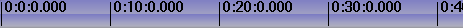
Denbora-barra nagusia
Eragiketa moduaren arabera, txertatzeko puntua denbora-lerroan klik eginez
posizioz alda daiteke.
Txertatzeko puntuak bi eragiketa modu ditu:
- arrastatu eta jaregin modua
- ebaki eta itsatsi modua
Atributuen panelean gezia edo i-beam hautatzen den arabera zehazten da eragiketaren modua.

Muntatzeko moduaren botoiak
Gezia nabarmenduta bada, arrastatu eta jaregin modua gaitzen da.
Arrastatu eta jaregin moduan, denbora-lerroan klik egitean ez da txertatzeko
puntua posizioz aldatzen. Horren ordez, muntaketa osoa hautatzen da.
Denbora-lerroan arrastatzean muntaketa aldatzen posizioz da,
beste muntaketen mugetara atxikituz. Oso erabilgarria da audioaren
erreprodukzio-zerrenda berriro ordenatzeko eta efektuak lekuz
aldatzeko.
I-beam nabarmentzen bada, ebaki eta itsatsi modua gaitzen da.
Ebaki eta itsatsi moduan, denbora-barran klik egitean txertatzeko puntua
posizioz aldatzen da. Denbora-lerroan arrastatzean eskualde bat nabarmentzen da.
Nabarmendutako eskualdea erreproduzituko den eskualdea izango da hurrengo erreprodukzioan,
edo errendatuko den eskualdea errendatzean. Gainera, nabarmendutako eskualdean
eragingo dute ebaki eta itsatsi eragiketek.

Pistak nabarmendutako eskualdearekin area berdearen barruan
erakusten dira
Denbora-lerroan Maius+klik egitea nabarmendutako eskualdea zabaltzen du.
Denbora-lerroan Klik bikoitza eginez kurtsorea kokatuta dagoen
muntaketa osoa hautatzen da.
Txertatzeko puntua lekuz aldatzean eta eskualdeak hautatzean
posizioak fotogrametara edo laginetara lerrokatzen dira.
Bideoa muntatzean fotogrametara lerrokatzea nahi izango duzu. Audioa muntatzean
laginetara lerrokatzea berriz. Hautatu zure hobespenak
Ezarpenak -> Lerrokatu kurtsorea fotogrametara menuan.
Nabarmendutako eskualdea ebaki eta itsatsi eragiketek eragina izateko eskualdea bada,
nola ebaki eta itsas dezaket arrastatu eta jaregin moduan? Kasu honetan,
sarrerako/irteerako puntuak ezarri behar dituzu eragina izango duen eskualdea
definitzeko.
6.1.6 Sarrerako/Irteerako puntuak
Bi muntaketa moduetan ezar ditzakezu sarrerako/irteerako puntuak.
Sarrerako/irteerako puntuek zehazten dute eragina izango duen eskualdea.
Arrastatu eta jaregin moduan eragina izango duen eskualdea definitzeko soilik
erabiltzen dira. Bai ebaki eta itsatsi moduan bai arrastatu eta jaregin moduan
nabarmendutako eskualdeak sarrerako/irteerako puntuak gainjartzen ditu.
Nabarmendutako eskualdea eta sarrerako/irteerako puntuak ezartzen badira,
muntatze-eragiketek nabarmendutako eskualdean eragingo dute, eta ez ikusi
egingo die sarrerako/irteerako puntuei. Eskualderik ez bada nabarmentzen,
sarrerako/irteerako puntuak erabiliko dira.
Normalean, sarrerako/irteerako puntuek ez dute erreproduzioaren eskualdean
eragiten. Sarrerako/irteerako puntuek erreprodukzioaren eskualdea zehazten
dute baldin eta Ktrl tekla sakatuta edukitzen baduzu erreproduzitzeko
komandoari deitzean.
Sarrerako/irteerako puntuak ezartzeko, joan denbora-barrara eta kokatu
txertatzeko puntua posizio batean. Hautatu  sarrerako puntuaren botoia.
Gero, joan sarrerako puntutik eskuinera
eta egin klik
sarrerako puntuaren botoia.
Gero, joan sarrerako puntutik eskuinera
eta egin klik  irteerako puntuaren botoian.
irteerako puntuaren botoian.

Denbora-barra sarrerako/irteerako puntuekin.
Sarrerako edo irteerako puntua hautatzen baduzu, txertatzeko puntua posizio horretara
joango da. Sarrerako puntu bat hautatu ostean, sarrerako puntuaren botoian klik
egitean sarrerako puntua ezabatu egingo da. Irteerako puntu bat hautatu ostean,
irteerako puntuaren botoian klik egitean irteerako puntua ezabatu egingo da.
Sarrerako/irteerako puntuak existitzen diren unean, edonon eskualde
bat hautatzen baduzu, puntu horiek posizioz aldatu egingo dira
sarrerako/irteerako botoietan klik egitean.
Sarrerako/irteerako puntu batean Maius+klik egitean, txertatzeko
puntuaren eta sarrerako/irteerako puntuaren arteko eskualdea nabarmenduko da.
Sarrerako/irteerako botoiak erabili ordez, [ eta ] teklak
erabil ditzakezu sarrerako/irteerako puntuak txandakatzeko.
Bai ebaki eta itsatsi moduan bai arrastatu eta jaregin moduan
sarrerako/irteerako puntuek nabarmendutako eskualdea gainjartzen dute.
Nabarmendutako eskualdea eta sarrerako/irteerako puntuak ezartzen badira,
nabarmendutako eskualdeak erreprodukzioari eragingo dio, eta
sarrerako/irteerako puntuek muntatze-eragiketei. Nahasketarik ez sortze arren,
une berean bi moduak batera ez edukitzea gomendatzen da.
Txertatzeko puntua eta sarrerako/irteerako puntuak erabili eragina izango duen
eskualdea definitzeko, baina ez dizute denbora-lerroko posizio zehatzetan
errez kokatzen utziko. Horretarako etiketak erabili.
6.1.7 Etiketak erabiltzea programaren leihoan
Denbora-lerroko posizio zehatzetara joateko erabiltzen dira etiketak.
Leku batean txertatzeko puntua jartzean eta  etiketa botoian
klik egitean etiketa berri bat agertzen da denbora-lerroan.
etiketa botoian
klik egitean etiketa berri bat agertzen da denbora-lerroan.

Denbora-barra etiketarekin
Berdin dio zein diren zoomaren ezarpenak, etiketaren posizioan klik egitean
txertatzeko puntua zehatz mehatz kokatuko da posizio horretan. Etiketa bat
hautatuta dagoela etiketa botoian berriro klik egitean, hautatutako
etiketa ezabatu egingo da.
Etiketa batean Maius+klik egitean nabarmendutako eskualdea zabaltzen da.
Etiketen artean klik bikoitza egitean etiketen arteko eskualdea nabarmentzen da.
Teklatuko l tekla sakatzeak etiketa botoiaren eragin berdina du.
Eskualdea nabarmenduta dagoenean etiketa botoia sakatzen baduzu,
nabarmendutako eskualdearen hasieran eta amaieran etiketak sortuko dira.
Hala ere, hasierak edo amaierak etiketa bat badu, existitzen den etiketa
ezabatu egingo da.
Etiketek txertatzeko puntua posizioz alda dezakete hautatzen direnean,
baina etiketaren  zeharkako botoiekin ere zeharkatu daitezke. Etiketa ikuspegitik kanpo dagoenean, etiketaren zeharkako botoiek
denbora-lerroa berriro jartzen dute etiketa ikusgai izateko. Zeharkako etiketekin aritzeko
ere badaude laster-teklak.
zeharkako botoiekin ere zeharkatu daitezke. Etiketa ikuspegitik kanpo dagoenean, etiketaren zeharkako botoiek
denbora-lerroa berriro jartzen dute etiketa ikusgai izateko. Zeharkako etiketekin aritzeko
ere badaude laster-teklak.
Ktrl+Ezkerrera teklak sakatuz txertatzeko puntua aurreko etiketan jartzen da.
Ktrl+Eskuinera teklak sakatuz txertatzeko puntua hurrengo etiketan jartzen da.
Zeharkako etiketarekin atzera eta aurrera azkar joan zaitezke denbora-lerroan zehar.
Horretaz gain, eskualdeak hautatzeko ere erabil ditzakezu.
Maius+Ktrl+Ezkerrera teklak sakatuz txertatzeko puntuaren eta aurreko
etiketaren arteko eskualdea nabarmentzen da.
Maius+Ktrl+Eskuinera teklak sakatuz txertatzeko puntuaren eta hurrengo
etiketaren arteko eskualdea nabarmentzen da.
Etiketa botoian edo l tekla eskuz sakatuz banan bana etiketa multzo bat
ezabatzea nahiko nekagarria gerta daiteke. Etiketa multzo bat ezabatzeko
aurrenik nabarmendu eskualdea. Gero erabili Editatu -> Garbitu etiketak menua.
Sarrerako/irteerako puntuak existitzen badira, hauen arteko etiketak garbituko dira,
nabarmendutako eskualdeari ez ikusi eginez.
Etiketak editatzea edo blokeatzea lekuz aldatzeko:
Ebaki eta itsatsi edizio moduan soilik, Ezarpenak menuan
"Editatu etiketak" gaituz edo desgaituz programaren tresna-barrako
Blokeatu etiketak mugitzea botoia
ebaki, kopiatu edo itsatsi egingo da ainguratutako pistaren hautatutako eskualdean.
Honen antzera, baliabide baten hautatutako area ikustailetik denbora-lerroko
etiketen aurreko posizio batean lotzen bada, etiketa hauek denbora-barran
eskuinera eramango dira hautatutako arearen luzera kontutan izanik.
Etiketak denbora-barran mugitzea saihesteko, desgaitu "Editatu etiketak" aukera
edo gaitu Blokeatu etiketak mugitzea botoia.
Arrastatu eta jaregin edizio moduan etiketak beti daude blokeatuta denbora-barran,
nahiz eta "Editatu etiketak" aukera gaituta egon.
6.2 Muntaketa
Muntaketak denboraren eta pisten domeinua eskatzen du. Denbora-lerroak
pisten pila duenez, pistak nola sortu eta ordenatzen diren buruzko ardura
hartzeaz gain, multimedia bat pista batean zenbat denboran agertzen den ere
kontrolatu beharko duzu.
Denboraren domeinuan, Cinelerra-k hainbat bide eskaintzen ditu
muntaketa prozesura hurbitzeko. Hiru metodo nagusiak honakoak dira:
bi pantailetako muntaketa, arrastatu eta jaregin muntaketa eta
ebaki eta itsatsi muntaketa.
Metodo guztiei aplikatzen zaien hainbat kontzeptu erabiltzen ditu
Cinelerra-k muntaketan. Denbora-lerroa muntatze-erabaki guztiak adierazteko
erabiltzen da. Denbora-lerroak leiho nagusiaren erdian pisten pila bat dauka.
Gora, behera, ezkerrera eta eskuinera korritu daiteke eskuinean eta behean dituen
korritze-barrekin. Saguaren gurpilarekin ere gora eta behera korritu daiteke.
Eskualde aktiboa: denbora-lerroan muntaketako komandoek eragiten dioten
denbora eskualdea da. Denbora-lerroan egon daitezkeen sarrerako/irteerako
puntuek zehazten dute eskualde aktiboa. Sarrerako/irteerako punturik ez badaude,
nabarmendutako eskualdea erabiliko da. Nabarmendutako eskualderik ez balego
txertatzeko puntua erabiliko da eskualde aktiboaren hasiera gisa.
Komando batzuk, adibidez Errendatu, txertatzeko puntutik hasita eskuinera
dagoen eskualde guztia hartzen du aktibo gisa. Beste efektu batzuk luzera
aktiboa 0 bezala hartzen dute eskualde aktiboaren amaierako punturik ez bada
definitzen.
Azkenik, muntatze-erabakiek ez dute eraginik materialaren iturburuan.
Honi Muntaketa ez suntsitzailea deitzen zaio, eta oso ospetsua egin da
audioaren arloan multimedia guztia kopiatu eta editatzea baino askoz ere
azkarragoa baita. Muntaketak materialaren iturburura zuzentzen dituzten erakusleak
ditu, hori dela eta, muntatze-erabakiak adierazten duen multimediako fitxategi
bat edukitzea nahi baduzu, Errendatu egin beharko duzu. See section Fitxategiak errendatzea.
Denbora-lerroko pista bakoitzak atributu multzoa du ezkerrean, garrantzitsuena
Ainguratu pista atributua da.
6.2.1 Atributu-panela
Denbora-lerroaren ezkerretara atributu-panela izeneko eskualdea dago.
Atributu-panelak pista bakoitzaren ezaugarriak gaitzen ditu. Pista guztiek
testu-eremua dute pistaren izenarekin.
Pista guztiak dute zabaltzailea ,
aukera gehiago eta pistaren efektuak ikusteko. Egin klik zabaltzailean pista
zabaltzeko edo tolesteko. Zabaltzailearen gezia albora zuzentzen badu, pista
tolestuta dago. Beherantz zuzentzen badu, pista zabalduta dagoela adierazten du.
Existitzen diren efektuak pistaren multimediaren azpian agertuko dira.
Pista bakoitzak honako hainbat funtzionalitateen txandakatzaileen errenkada ditu.
Pistaren atributuak
Txandakatzailea koloreztuta dagoenean gaituta dagoela adierazten du.
Txandakatzailea atzeko planoko kolorearekin egonez gero, desgaituta dagoela
adierazten du. Egin klik txandakatzailean funtzionalitatea gaitzeko edo desgaitzeko.
Saguaren zenbait eragiketek hainbat pisten aldi bereko konfigurazioa bizkortzen dute.
Egin klik atributu batean eta arrastatu alboko pistetara atributu hori
beste pistetan kopiatzeko.
Mantendu Maius tekla sakatuta pistaren atributuan klik egitean
uneko pistaren atributua gaitu eta beste pista guztien atributua
txandakatzeko.
Mantendu Maius tekla sakatuta atributuan klik egitean. Egin klik
hautatutako ez beste pista guztiak desgaitu arte. Gero, arrastatu
kurtsorea alboko pistara dagokion atributua gaitzeko.
Beste atributuek pistaren irteerari eragiten diote:
- Erreproduzitu pista
Pista errendatu den edo ez zehazten du. Desgaituta egonez gero,
pista ez da errendatuko. Hala ere, pista beste pista bati kateatuta badago,
beste pistak efektu guztiak lantzen ditu kateatutako pistetan,
erreprodukzioaren egoera kontutan izan gabe.
- Ainguratu pista
Pista ainguratuta dagoen edo ez zehazten du. Ainguratutako pistei
soilik eragiten dizkie muntaketako eragiketek. Ziurtatu helburuko nahikoa
pista ainguratuta dituzula materiala itsastean edo lotzean, bestela materialaren
pista batzuk kanpoan utziko baitira.
Muntaketako eragiketak murrizteaz gain, ainguratutako pistak eskualde aktiboarekin
konbinatuz fitxategiak kargatzean materiala non txertatuko den zehazten du.
Fitxategiak txertatzeko estrategitariko batekin (existitzen den proiektua
ezabatzen ez duena) kargatzen badira, ainguratutako pistak helburuko pista gisa erabiliko
dira.
Tabulatzailea tekla sakatuz kurtsorea pistaren gainean edozein lekutan dagoela,
pistaren ainguraren egoera txandakatzen da.
Maius+Tabulatzailea laster-tekla sakatuz kurtsorea pistaren gainean edozein
lekutan dagoela, beste pista guztien ainguraren egoera txandakatzen da.
- Elkartu audio-maila
Audio-maila doitzen ari zaren beste audio-mailari jarraitzea eragiten du.
Ainguratu pista gaituta dagoenean soilik audio-maila bat elkartuko da.
Normalean hau pista guztien audio-mailak aldi berean doitzeko erabiltzen da.
Elkartutako pista guztien Desplazamendua parametroak sinkronitzatzea
eragiten du elkartzeak.
- Marraztu multimedia
Irudien fotogramak edo uhin-formak pistan marraztuko diren edo ez zehazten du.
Lehenetsi gisa, fitxategi-formatu batzuk atributu hau desgaituta kargatzen dira,
beste fitxategi-formatu batzuk berriz atributua gaituta kargatzen direlarik.
Fitxategi-formatu batek denbora-lerroan marrazteko behar duen denboraren arabera dago.
Gaitu atributu hau baldin eta edozein fitxategi-formaturen irudien fotogramak ikustea
nahi badituzu.
- Pista mutua
Irteera botatzea eragiten du behin pista erabat errendatutakoan.
Berdin dio erreproduzitu pista gaituta dagoen edo ez, beti gertatzen da
atributu hau gaituta egonez gero.
Pista efektu-kate baten zati bada, efektu-katearen pistaren irteera amaierako
irteeran gainjartzen da, nahiz eta beste pista batera bideratuta egon.
Efektu-katearen pista pistaren iturburuaren irteeran
gainjartzea saihesteko erabiltzen da pista mutua.
- Iraungitzailea
Pista guztiek dute iraungitzaile bat, baina iraungitzaile bakoitzaren unitateak
pistaren motak zehazten du: bideoa edo audioa den arabera. Klik egin eta arrastatu
iraungitzailea, pista piskanaka agertzeko edo desagertzeko. Multimedia mota
berdineko beste pista batzuekin elkartuta badago, ainguratu atributua gaituta,
beste pisten iraungitzaileak hemengoari jarrituko diote. Eduki Maius tekla
sakatuta eta arrastatu iraungitzailea 0 baliora zentratzeko.
6.2.2 Pistak desplazatzea
Pista bakoitzak desplazamenduaren testu-eremua du atributuen panelean.
Pista zabaldu behar duzu desplazamendua bistaratzeko. Atributuen panela
zabaltzen denean agertuko diren ikuspegiak honakoak dira.

Audioko pistaren panoramikoa eta desplazamendua

Bideoko pistaren gainjartze modua eta desplazamendua
Pista erreproduzitzean ezkerrera edo eskuinera desplazatuko den kopurua
da desplazamendua. Pista ez da desplazatuta agertzen denbora-lerroan,
erreproduzitzean soilik bistaratzen da desplazatuta. Oso erabilgarria
da bideoa eta audioa sinkronizatzeko, estereo faltsua sortzeko, edo
denbora desplazatzen duen efektu bat konpentsatzeko, guzti hau muntaketan
eragiketarik egin gabe.
Denboran desplazatzeko kopurua soilik sartu, pista berehala desplazatzeko.
Balio negatiboek pista beranduago erreproduzitzea eragiten dute.
Balio positiboek berriz pista lehenago erreproduzi arazten dute.
Desplazamenduaren unitatea segundoa edo pistaren jatorrizko
unitatea da. Unitateak hautatzeko saguaren eskuineko botoiarekin egin klik
desplazamenduaren testu-eremuan eta testuinguruko menua erabiliz.
Desplazamenduaren ezarpenak elkar daitezke Elkartu iraungitzaileak eta
Ainguratu pista txandakatzaileekin.
Erabili saguaren gurpila desplazamenduaren testu-eremuan balioa handitzeko
edo gutxiagotzeko.
6.2.3 Pista panoramikoak
Audioko pistek panoramikoaren kutxa dute beraien atributu-panelean.
Atributu-panela zabaldu behar da panoramikoaren kutxa bistaratzeko.
Bideoko pistaren gainjartze modua eta desplazamendua
Jarri kurtsorea panoramikoaren kutxan, egin klik eta arrastatu
audioaren irteera posizioz aldatzeko bozgorailuen antolamenduan.
Bozgorailu bakoitzaren ozentasuna arrastatzean bistaratzen da.
Panoramikoaren kutxak algoritmo berezia erabiltzen du bozgorailu batean
edo, bi bozgorailu baino gehiago erabiltzen badira, bozgorailu gertuenetan
audioa fokatzeko.
6.2.4 Pistak panoramiko automatikoarekin
Zenbait funtzio erabilgarri eskaintzen dira panoramikoa automatikoki
hainbat estandar arruntekin ezartzeko. Hauek Audioa menuan zerrendatzen
dira. Funtzio hauek Grabazioa gaituta duten audioko pistei soilik eragiten die.
- Audioa -> 1:1 erlazioa
Pista bakoitza bere kanal propiora mapatzen du, eta itzulbiratu egiten du
kanal guztiak esleitutakoan. Gehien bat 2 kanaleko 2 pista estereora
mapatzeko erabiltzen da, baita 6 kanaleko 6 pista 6 kanaleko
soinu-txartelera mapatzeko ere.
- Audioa ->5.1:2 erlazioa
Honek 6 pista 2 kanaletara mapatzen ditu. Proiektuak 2 kanal eduki behar
ditu funtzio hau erabiltzeko. Joan Ezarpenak -> Formatua menura
irteera 2 kanalekin ezartzeko. Gehien bat 5.1 motako audioa estereora
bihurtzeko erabiltzen da.
6.2.5 Audio-mapaketa estandarra
Nahiz eta Cinelerra-k edozein audioko pista edozein bozgorailura mapatzen utzi,
erlazio edo mapa estandarrak daude. Mapa estandar hauek erabiltzea gomendatzen
dizugu multimedia edonon erreproduzi daitekeela ziurtatzeko. Gainera,
audioaren kodetzaile gehienek audioko pistak bozgorailu kopuru estandarrera
mapatzea eskatzen dute, bestela ez dutelako funtzionatuko.
Kanalaren posizioa trepetan, See section Proiektuaren atributuak,
kanalak dagokien irteerako pistari egokitzeko zenbatzen dira.
Estereoarentzako, 1.go kanalaren iturbura ezkerreko pista izan behar du,
eta 2.go kanalaren iturburua eskuineko pista.
5.1 inguruko soinuan, 6 kanaletako iturburua honako ordenean egon behar dute:
zentrua, aurre-ezkerra, aurre-eskuina, atze-ezkerra, atze-eskuina eta maiztazun baxuaren
efektuak. Eskuineko pistak ez badira eskuineko bozgorailuekin mapatzen,
audioaren kodetzaile gehienek ez dute eskuineko informaziorik kodetuko.
Kasu gehienetan, maiztasun baxuaren efektuen pistan ezin dira maiztasun altuak gorde.
6.2.6 Pistak ikutzea
Cinelerra-ko pistek bideoa edo audioa eduki dezakete. Pistek ez dute ezer
berezirik, multimedia motako edukia soilik. Proiektu berri bat sortzean,
pista kopuru lehenetsia du. Menua erabiliz pistak gehitu edo ezaba ditzakezu.
Pistak menuan aukera batzuk agertzen dira hainbat pista aldi berean
tratatzeko. Pista bakoitzak bere laster-menua du, pista bakarrari
eragiten diolarik.
Laster-menua bistaratzeko mugitu sagua pistaren gainean eta egin klik
saguaren eskuineko botoiarekin. Laster-menuak dagokion pistari eragingo dio,
pista ainguratuta dagoen edo ez kontutan hartu gabe.
Eraman gora eta Eraman behera aukerek pista urrats bat gora edo behera
eramaten du pilan. Ezabatu pista aukerak pista ezabatzen du.
Pistak menuko eragiketek ainguratutako pistei soilik eragiten diete:
- Eraman pistak gora eta Eraman pistak behera ainguratutako pista
guztiak urrats bat gora edo behera eramaten ditu pilan.
- Ezabatu pistak ainguratutako pistak ezabatzen ditu.
- Ezabatu azken pista aukerak azken pista ezbatzen du (ainguratuta egon edo ez).
d tekla sakatuta edukiz pista guztiak ezabatzen ditu.
- Kateatu pistak korapilotsuagoa da. Erreproduzi daitekeen pista bakoitza
hartu eta ainguratutako aurreneko pistaren amaieran kateatzen da. Ainguratutako
bi pista badaude bi pista erreproduzigarriekin, kateatzeko eragiketak bi pista
erreproduzigarriak ainguratutako bi pisten atzetik jarriko ditu. Hauen ordez hiru
pista erreproduzigarriak egonez gero, bi pista ainguratutako pisten atzetik jarriko
dira, eta hirugarrena ainguratutako aurreneko pistaren atzean. Helburuko pista
itzulbiratzen egongo da pista erreproduzigarri guztiak kateatu arte.
Azkenik, pista berriak sortzea nahi izan dezakezu. Audioa eta Bideoa menuek
dagokien motako pista bat gehitzeko aukera dute. Audioaren kasuan,
pista berria denbora-lerroko pilaren behean kokatuko da eta audioaren irteerako
kanala 1 balioarekin gehituko da. Bideoaren kasuan, pista berria denbora-lerroaren
goian jarriko da. Honela, bideoak konposatzeko ordena naturala izango du. Bideoaren
pista berriak pista zaharren gainean gainjarriko dira.
6.2.7 Bi pantailako muntaketa
Filmeen fitxategiekin muntaketa bat lantzeko modurik azkarrena da.
Honen helburua pantaila batean filmea eta beste pantailan programa ikustea da.
Filmearen azpiatalak leiho batean definitzen dira eta beste pantailako
programaren amaierara bidaltzen dira.
Bi pantailako muntaketaren saioa hasteko zenbait baliabide kargatu behar dira.
Fitxategia -> Kargatu menuan kargatu zenbait filma Sortu baliabide berriak
txertatzeko moduarekin. Denbora-lerroa aldatu gabe mantentzea nahiko duzu
baliabide berriak bertara eramatean. Joan 'Baliabidea' leihora eta hautatu
multimediaren (Media) karpeta. Kargatu berri diren baliabideak agertu beharko
lukete. Arrastatu baliabide bat multimediaren leihotik 'Ikustailea' leihora.
Ainguratutako nahikoa pista egon beharko lukete denbora-lerroan, materialaren
iturburuen azpiatalak jartzeko. Ez egonez gero, sortu pista berriak edo
ainguratu pista gehiago.
Ikustailearen leihoan, erabiltzea nahi duzun kliparen hasierako puntuan kokatu.
graduatzailea edo desplazatzeko komandoak erabil ditzakezu.
Erabili Aurrebistaren eskualdea bilaketa mugatzeko. Ezarri hasierako
puntua sarrerako puntua botoiarekin.
Erabiltzea nahi duzun kliparen amaierako puntuan kokatu. Ezarri amaierako
puntua amaierako puntua botoiarekin.
Orain, bi puntuak denbora-barran agertuta egon beharko lukete, klip bat definituz.
Kliparekin hainbat gauza egin ditzakezu orain.
- Lotu
 Klipa txertatzen du denbora-lerroan,
beste guztia atzera bultzatuz. Denbora-lerroan sarrerako edo irteerako puntua
existitzen bada, posizio horretan txertatuko da. Bestela, txertatzeko puntuaren
ondoren txertatuko da. Txertatu eta gero, txertatzeko puntua kliparen amaieran
kokatuko da. Ez badago sarrerako/irteerako punturik, txertatzeko puntua erabiliko da
hurrengo lotzeko eragiketaren posizio gisa. Honela, klipak bata bestearen atzetik
lotuz filmea osa dezakezu.
Klipa txertatzen du denbora-lerroan,
beste guztia atzera bultzatuz. Denbora-lerroan sarrerako edo irteerako puntua
existitzen bada, posizio horretan txertatuko da. Bestela, txertatzeko puntuaren
ondoren txertatuko da. Txertatu eta gero, txertatzeko puntua kliparen amaieran
kokatuko da. Ez badago sarrerako/irteerako punturik, txertatzeko puntua erabiliko da
hurrengo lotzeko eragiketaren posizio gisa. Honela, klipak bata bestearen atzetik
lotuz filmea osa dezakezu.
- Gainidatzi
 Denbora-lerroko eskualdea kliparekin
gainidazten du. Denbora-lerroan sarrerako edo irteerako puntua
existitzen bada, posizio horretan gainidatziko da. Eskualde bat nabarmenduta
egonez gero, edo sarrerako eta irteerako puntuak existitzen badira,
eskualde aktiboaren eta kliparen luzeraren arteko desberdintasuna ezabatu
egingo da.
Denbora-lerroko eskualdea kliparekin
gainidazten du. Denbora-lerroan sarrerako edo irteerako puntua
existitzen bada, posizio horretan gainidatziko da. Eskualde bat nabarmenduta
egonez gero, edo sarrerako eta irteerako puntuak existitzen badira,
eskualde aktiboaren eta kliparen luzeraren arteko desberdintasuna ezabatu
egingo da.
- Sortu klipa
 Baliabideen lehioan klip berria
sortzen du, bere edukia eragindako eskualdea delarik, baina ez du denbora-lerroa aldatzen.
Klip bakoitzak titulu eta azalpen bat du (hauek aukerazkoak dira).
Baliabideen lehioan klip berria
sortzen du, bere edukia eragindako eskualdea delarik, baina ez du denbora-lerroa aldatzen.
Klip bakoitzak titulu eta azalpen bat du (hauek aukerazkoak dira).
- Kopiatzearen portaera 'ebaki eta itsatsi' muntaketan gertatzen den bezalakoa da.
Teklatuko lasterbideak erabiliz bi pantailako muntaketa erabat landu daiteke.
Saguaren erakuslea botoi baten gainera eramatean argibidea agertzen da,
botoi horri dagokion laster-tekla erakutsiz. 'Ikustailea' leihoan,
teklatu numerikoko teklek kontrolatzen dute desplazamendua;
[, ] eta v teklek sarrerako/irteetako puntuak eta
lotzea lantzen dituzte.
6.2.8 Arrastatu eta jaregin muntaketa
Arrastatu eta jaregin muntaketa Cinelerra-n lan egiteko modu azkar
eta erosoa da, sagua soilik erabiliz. Oinarrizko kontzeptua klip sorta bat
sortzea da, gero klip hauek denbora-lerroan arrastatu, filmaren prototipoa
eraiki eta konposaketa-leihoan ikusteko. Prototipoa ikusi ostean klipak
berrantolatzea nahi izanez gero, arrastatu eta jaregin itzazu denbora-lerroan.
- Kargatu fitxategi batzuk Fitxategia -> Kargatu menua erabiliz.
- Ezarri Sortu baliabide berriak txertatzeko modua. Honekin fitxategiak
baliabideen leihoan kargatuko dira.
- Sortu audio eta bideoko hainbat pista denbora-lerroan (bideo eta
audioaren menuak erabiliz).
- Ireki Media (multimedia) karpeta baliabideen leihoan.
- Ziurtatu beharrezko pistak ainguratuta daudela eta arrastatu multimediaren
fitxategia baliabideen leihotik denbora-lerrora. Multimediaren fitxategia bideoa
bada, arrastatu bideoaren pista batera. Audio motako fitxategia bada, arrastatu
audioaren pista batera.

Saguaren erakuslearekin arrastatu diren audio eta bideoen pistak betetzen ditu
Cinelerra-k fitxategiaren datuekin. Hasieran sortutako pistei eta multimedia
jaso duten pistei eragiten die honek. Multimediaren fitxategiak bideoaren pista bat
eta audioaren bi pista baditu, denbora-lerroan bideoaren pista bat eta
audioaren bi pista beharko dira, eta multimedia aurreneko bideo pistara
arrastatu beharko duzu. Multimediak audioa bakarrik badu, denbora-lerroan
egon beharreko audio pisten kopurua multimedian dagoen audio pisten kopuruaren
berdina izan behar du, eta multimedia aurreneko audioaren pistara arrastatu beharko
duzu.
Arrastatzean, multimedia pistaren hasieran atxikitzen da pista hutsik egonez gero.
Pistan planoak egonez gero, multimedia planoaren muga gertuenera atxikituko da.
Gainera, hainbat fitxategi arrasta ditzakezu baliabideen leihotik.
Fitxategien inguruan kutxa bat marraz dezakezu Maius erabiliz, edo
erabili Ktrl tekla fitxategiak hautatzeko.
Maius eta Ktrl teklen portaera aldatu egingo da baliabideak
testu edo ikono gisa agertzen diren arabera.
Baliabideak testu edo ikono gisa bistaratzeko, egin klik saguaren eskuineko
botoiarekin multimedia-zerrendan. Hautatu Erakutsi ikonoak edo Erakutsi testua
zerrendaren ikuspegia aldatzeko.
Baliabideen leihoan elementuak testu gisa bistaratzean, Maius+egin klik
multimediaren fitxategietan nabarmendutako hautapena kopurua zabaltzeko.
Multimediaren fitxategietan Ktrl+klik egitean, aldiko beste fitxategi bat
gehiago hautatzen da.
Baliabideen leihoan elementuak ikono gisa bistaratzean, Maius+klik
edo Ktrl+klik eginez multimediaren fitxategi bat hautatzen da aldiko.
Klipak sortu, klip karpeta ireki eta klipak denbora-lerrora arrasta
ditzakezu.
Denbora-lerroan arrastatzeko funtzionalitate gehiago daude. Planoak denbora-lerroan
arrastatzean musikaren erreprodukzio-zerrrenda edo filmaren eszenak ordena ditzakezu,
eta NAB erakusketa hobeagoak eman, baina ez askoz ere gehiago. Denbora-lerroan
arrastatzeko funtzionalitatea gaitzeko hautatu  gezi
txandakatzailea. Arrastatzeko eragiketan plano bat muga gertuenera atxikituko da.
gezi
txandakatzailea. Arrastatzeko eragiketan plano bat muga gertuenera atxikituko da.
Hautatu pista bat hainbat eszenekin.

Jatorrizko pista hiru eszenekin.
Joan 3. eszenara, egin klik eta arrastatu erdira.

Gero jaregin 3. eszena

2. eszena eskuinera desplazatuko da

Hor amaierako sekuentziaren itxura agertzen da.
Pista bat baino gehiago ainguratuta egonez gero, saguaren erakuslea kokatua
dagoen planoaren posizio berdinean hasten den edozein plano arrasta dezake
Cinelerra-k. Hau da, plano sorta bat arrastatu eta jaregin dezakezu.
Ainguratutako pistetako hasierak lerrokatuta dituzten planoak talde gisa
onartzen ditu Cinelerra-k, berdin diolarik iturburu berdinekoak diren, edo amaierak
lerrokatuta dituzten edo ez.
Arrastatu eta jaregin muntaketa moduan, ezin dituzu etiketak arrastatu eta jaregin.
Etiketak beti egongo dira denbora-barran blokeatuta, nahiz eta "Editatu etiketak"
aukera gaituta egon. Horretaz gain, "Editatu etiketak" aukera gaituta egon arren,
baliabide baten hautatutako eskualdea Ikustailetik denbora-lerrora lotzen bada
etiketen aurreko posizioan, etiketa hauek eskuinera bultzatuko dira
hautatutako eskualdearen luzeerarekin.
6.2.9 Ebaki eta itsatsi muntaketa
Hau ohizko metodoa da muntaketak lantzeko audioko editoreetan.
Cinelerra-ren kasuan, Cinelerra-ren bigarren instantzia abiarazi behar duzu eta
instantzia batetik bestera kopiatu, instantzia berdinean pista desberdinak kopiatu
edo multimediaren fitxategia Ikustailean kargatu eta hortik kopiatu.
Kargatu fitxategi batzuk denbora-lerroan. Ebaki eta itsatsi moduko muntaketa lantzeko
hautatu  i-beam txandakaria. Hautatu
denbora-lerroko eskualde bat eta hautatu
i-beam txandakaria. Hautatu
denbora-lerroko eskualde bat eta hautatu  ebaki botoia
eskualdea ebakitzeko. Eraman txertatzeko puntua denbora-lerroko beste posizio batera
eta hautatu
ebaki botoia
eskualdea ebakitzeko. Eraman txertatzeko puntua denbora-lerroko beste posizio batera
eta hautatu  itsatsi botoia.
Denbora-lerroan sarrerako eta irteerako punturik ez daudela definituta suposatuz,
ekintza honek ebaki eta itsatsi eragiketa lantzen du.
itsatsi botoia.
Denbora-lerroan sarrerako eta irteerako punturik ez daudela definituta suposatuz,
ekintza honek ebaki eta itsatsi eragiketa lantzen du.
Sarrerako eta irteerako puntuak definituta egonez gero, txertatzeko puntua
eta nabarmendutako eskualdea gainjarriko dira sarrerako/irteerako puntuekin
arbelaren eragiketan. Honela, sarrerako/irteerako puntuekin ebaki eta itsatsi
eragiketak lan daitezke bai arrastatu eta jaregin moduan bai ebaki eta
itsatsi moduan ere.
Audioa muntatzean, normalena audioaren uhin zati bat ebaki eta beste uhin batean
itsastea da. Ebaki eragiketaren sarrerako eta irteerako puntuak berdinak dira
uhin bakoitzean, eta pittin bat desplazatu behar dira, uhinaren datuak ordea
desberdinak dira. Nahiko zaila da uhin bat nabarmentzea ebakitzeko
eta bigarren uhina nabarmentzea bertan itsasteko, eta guzti hau
hasierako eta amaierako posizio erlatiboak aldatu gabe.
Eragiketa hau errazteko modu bat Cinelerra-ren bigarren instantzia abiaraztea da,
bi instantzien artean multimedia zatia ebaki eta itsasteko. Honela, eta aldi berean,
nabarmendutako bi eskualde egon daitezke.
Uhinaren iturburuaren jatorrizko eskualdean sarrerako/irteerako puntuak
ezartzea da beste aukera, eta helburuko uhinaren helburuko eskualdean
etiketak ezartzea. Landu ebaki eragiketa, garbitu sarrerako/irteerako
puntuak, etiketen arteko eskualdea hautatu eta landu itsatsi eragiketa.
Ebaki eta itsatsi muntaketako azken eragiketa Editatu -> Garbitu da.
Eskualde bat nabarmenduta badago edo sarrerako/irteerako puntuak existitzen
badira, eragindako eskualdea garbitzen da Editatu -> Garbitu eragiketarekin.
Txertatzeko puntua plano baten mugaren gainean badago ordea, eta planoaren mugaren
alboko planoak baliabide berdinekoak badira, baliabideak planoak konbinatuko ditu
konprimitutako plano bat osatzeko. Plano honen hasiera aurreneko planoaren hasiera
izango da, eta plano honen amaiera bigarrengo planoaren amaiera izango da.
Ondorio hau bai planoa zabaltzean bai txikiagotzean gertatzen da.
6.2.10 Iraupena aldatzea
Denbora-lerroko sekuentzia batzuen iraupena alda daiteke. Arrastatu eta jaregin
moduan, edo ebaki eta itsatsi moduan, saguaren erakuslearekin (kurtsorea) plano
edo sekuentzia baten mugak arrastatuz bere iraupena luzatu edo murriztu egiten da.
Mugitu saguaren erakuslea plano baten mugaren inguruan erakuslearen forma
aldatu arte. Erakuslea formaz aldatzean, ezkerrera edo eskuinera zuzentzen duen
geziaren forma hartuko du erakusleak. Gezia ezkerrera formakoa bada, arrastatzearen
eragiketak planoaren hasierari eragingo dio. Gezia eskuinera formakoa bada,
arrastatzearen eragiketak planoaren amaierari eragingo dio.
Plano baten mugan klik egitean, arrastatzearen portaera saguaren botoiak
zehaztuko du. 3 portaera daude erabilgarri hobespenaren Interfazea fitxan,
saguaren botoiei atxikitutako portaera doitu dezakezu. Irakurri See section Interfazea
atala.
Arrastatzeko eragiketaren eragina ez da botoiaren portaeran soilik oinarritzen,
planoaren hasiera edo amaiera arrastatzeak ere eragina baitu. Saguaren
botoia askatzean, iraupenaren aldaketaren eragiketa lantzen da.
Arrastatu hurrengo plano guztiak eragiketan, planoaren hasierak
planoaren datuak ebakitzen ditu aurrera eramatean, edo planoaren aurretik
datu berriak itsasten ditu atzera eramatean. Planoaren amaierak datuak
planoan itsasten ditu aurrera eramatean, edo planoaren amaieratik
datuak ebaki atzera eramatean. Honen ondorioz, honen atzeko plano guztiak desplazatuko dira.
Azkenik, planoaren amaiera arrastatzen baduzu planoaren hasieraren aurrera pasatuz,
plano osoa ezabatu egingo da.
Arrastatu plano bakarra eragiketan, portaera berdina da bai
planoaren hasiera bai amaiera arrastatzean. Kasu honetan ordea,
pistako beste planoak ez dira desplazatzen. Horren ordez,
uneko planoaren alboan dagoen edozein plano zabaldu edo murriztuko da
arrastatzearen eragiketak utzitako hutsuneak betetzeko.
Arrastatu iturburua soilik eragiketan, ezer ez da ebakitzen edo itsasten.
Planoaren hasiera edo amaiera aurrera eramatean, planoko iturburuaren erreferentzia
(edukia) aurrera desplazaten da. Planoaren hasiera edo amaiera atzera eramatean
iturburuaren edukia atzera desplazatuko da. Planoa denbora-lerroko
leku berdinean egongo da, iturburuaren edukia desplazatuko da ordea.
Beste fitxategi-formatu guztientzat, irudi-finkoak izan ezik, aldaketa hauek ez
dute inoiz jatorrizko iturburuaren fitxategiaren luzerara gaindituko. Plano baten haisera
iturburuaren fitxategiaren hasiera baino harutzago arrastatzea saiatzen bada, ezinezkoa
dela ikusiko duzu.
Iraupena aldatzeko eragiketa guztietan, erakuslea kokatuta dagoen posizio berdinean
dauden plano guztietan eragiten dira arrastatzeko eragiketa hastean. Baldintza hauek
plano batzuetan saihesteko, kendu aingura dagokien pistei
Cinelerra-ren efektu gehienak nola funtzionatzen duten jakiteko, probak egin.
Ondoren esperientzia gehiago eduki arte erabili behar ez zenukeen efektuen
azalpen laburrak idatzi dira.
7. Konposaketa-leihoa
Leiho honek denbora-lerroaren irteera bistaratzen du. Konposaketako eragiketetan
edo denbora-lerroaren irteerako itxurari eragiten dien eragiketetan erabiltzen da
interfaze hau. Konposaketan landutako eragiketek denbora-lerroari eragiten
diete, baina ez dute klipetan eragiten.
7.1 Konposaketa-kontrolak
Bideoaren irteerak nabigatzeko hainbat funtzio ditu. Bideoaren irteeraren
tamaina leihoaren tamainara blokeatuta egon daiteke, edo desblokeatuta
korritze-barrekin nabigatzeko. Bideoaren irteeraren zooma handitu edo
txikiagotu, edota panoramikoa egin daiteke. Modu honetan bideoaren irteeran
nabigatzeak ez du errendatutako irteeran eragiten; konposaketa-leihoko
ikuspegia aldatzen du soilik.
Leihoaren tamainatik desblokeatzen bada, egin klik saguaren eskuineko
botoiarekin eta arrastatu bideoaren panoramikoaren ikuspegian zehar.
+ eta - teklak sakatu bideoaren irteeraren zooma handitzeko
edo txikiagotzeko.
Bideoaren irteeraren azpian leiho nagusian aurkitzen diren funtzio askoren
kopiak daude. Gainera, bertan zoomaren  menua
eta
menua
eta  argiaren panela daude.
argiaren panela daude.
Zoomaren menuan erabilgarriak diren zoomaren elementu guztiak daude, eta Automatikoa (edo Auto)
aukera erabiliz, bideoa leihoaren tamainara blokeatzen da. Zoomaren menuak
ez dio leihoaren tamainari eragiten.
Argiaren panela gorriz jartzen da errendatzen ari denean. Oso erabilgarria da
irteera unekoa al den jakiteko.
Saguaren eskuineko botoiarekin bideoaren irteeran klik egitean, laster-menu bat
bistaratzen da zoomaren maila guztiak zerrendatuz, eta bestelako aukera batzuk
eskainiz. Zoomaren mailen kasuan leiho osoa aldatzen da tamainaz, eta ez bideoa
soilik.
Berrezarri kamera eta Berrezarri proiektorea aukerek kamera eta
proiektorea zentratzen dute. See section Konposatzea.
Ezkutatu kontrolak aukerak gauza guztiak ezkutatzen ditu, bideoa izan ezik.
Bideoaren irteeraren ezkerretara konposaketa-leihoaren tresna-barra berezia
aurkitzen da:
7.1.1 Babestu bideoa
Konposaketako irteeran klik egitean aldaketak gertatzea desgaitzen da.
Pistaren gainean jartzen den geruza gehigarria da, nahigabeko aldaketak
egitea saihesteko.
7.1.2 Lupa
Tresna honek  konposaketaren irteeraren
zooma handitu eta txikiagotzen du leihoa tamainaz aldatu gabe. Bideoaren irteera
leihoaren tamainara blokeatuta badago, lupan klik egitean desblokeatu egiten da
eta korritze-barrak agertzen dira nabigatzeko.
konposaketaren irteeraren
zooma handitu eta txikiagotzen du leihoa tamainaz aldatu gabe. Bideoaren irteera
leihoaren tamainara blokeatuta badago, lupan klik egitean desblokeatu egiten da
eta korritze-barrak agertzen dira nabigatzeko.
Saguaren ezkerreko botoiarekin bideoan klik egitean zooma handitu egiten da.
Ktrl tekla sakatuta dagoela saguaren ezkerreko botoiarekin bideoan klik egitean
zooma txikiagotu egiten da.
Saguaren gurpila biratzean zooma handitu eta txikiagotzen da.
7.1.3 Maskara tresna
Tresna honek,  , muntaketaren maskara tresna bistaratzen du.
Irakurri See section Maskarak atala. Gaitu
, muntaketaren maskara tresna bistaratzen du.
Irakurri See section Maskarak atala. Gaitu  tresnaren
informazioaren leihoa tresna honen aukerak ikusteko.
tresnaren
informazioaren leihoa tresna honen aukerak ikusteko.
7.1.4 Kamera
Tresna honek,  , muntaketaren kamera tresna bistaratzen du.
Irakurri See section Kamera eta proiektorea atala. Gaitu tresnaren
informazioaren leihoa tresna honen aukerak ikusteko.
, muntaketaren kamera tresna bistaratzen du.
Irakurri See section Kamera eta proiektorea atala. Gaitu tresnaren
informazioaren leihoa tresna honen aukerak ikusteko.
7.1.5 Proiektorea
Tresna honek,  , muntaketaren proiektorea tresna bistaratzen du.
Irakurri See section Kamera eta proiektorea atala. Gaitu tresnaren
informazioaren leihoa tresna honen aukerak ikusteko.
, muntaketaren proiektorea tresna bistaratzen du.
Irakurri See section Kamera eta proiektorea atala. Gaitu tresnaren
informazioaren leihoa tresna honen aukerak ikusteko.
7.1.6 Mozketa tresna
Tresna honek,  , muntaketaren mozteko tresna bistaratzen du.
Irakurri See section Mozketa atala. Gaitu tresnaren
informazioaren leihoa tresna honen aukerak ikusteko.
, muntaketaren mozteko tresna bistaratzen du.
Irakurri See section Mozketa atala. Gaitu tresnaren
informazioaren leihoa tresna honen aukerak ikusteko.
7.1.7 Kolore-hautatzailea
Kolore-hautatzailea tresna bistaratzen du. Kolore-hautatzaileak bere azpian dagoen
edozein kolore bistaratzen du, eta aldi baterako arean gordetzen du.
Tresnaren informazioaren leihoa () gaituz
unean hautatutako kolorearen informazioa azaltzen da. Egin klik bideoaren
irteerako edozein posiziotan puntu horretako kolorea hautatzeko.
Kolore-hautatzaileak koloreen informazioa bistaratzeaz gain, bere balioak
hainbat efektutan erabil daitezke. Efektu desberdinek kolore-hautatzailea
modu desberdinetan kudeatzen dute.
7.1.8 Tresnaren informazioa
Tresna honen botoiak konposaketako
beste kontrolatzaileekin batera funtzionatzen du soilik. Konposaketako
zein kontrol aktibatuta dagoen arabera, txandakatzeko botoiak
kontrolari dagokion elkarrizketa-koadroa aktibatzen edo desaktibatzen du.
Elkarrizketa-koadroa duten kontrolak honakoak dira:
- Editatu maskara
- Kameraren automatizazioa
- Proiektuaren automatizazioa
- Mozketa kontrola
7.1.9 Eskualde seguruen tresna
Tresna honek,  , eskualde seguruak marrazten ditu
bideoaren irteeran. Honek ez du inolako eraginik errendatutako irteeran. Irakurri See section Eskualde seguruak atala.
, eskualde seguruak marrazten ditu
bideoaren irteeran. Honek ez du inolako eraginik errendatutako irteeran. Irakurri See section Eskualde seguruak atala.
7.2 Konposatzea
Cinelerra programak duen tamainaren zati handia konposaketa arloari dagokio.
Bideoaren pantailan hizkien kutxa kentzean, konposatzen ari zara. Bideoaren
bereizmena aldatzean, zatitutako pantaila sortuz, eta klipak piskanaka agertzea
edo desagertzea ere Cinelerra-ren konposaketako eragiketak dira.
Eragiketa bat konposaketakoa den edo ez detektatzen du Cinelerra-k, eta behar
denean soilik deitzen dio konposaketako motorrari. Bestela, hardwarean
dagoen dekodetzailerik azkarrena erabiltzen du.
Konposaketako eragiketak denbora-lerroan eta Konposaketa-leihoan gertatzen dira.
Baliabideen leihoan lasterbideak daude konposaketako atributu batzuk aldatzeko.
Denbora-lerroan bideo-fitxategi batzuk daudenean, konposaketako leihoa
leku egokia da konposaketak probatzeko.
7.2.1 Kamera eta proiektorea
7.2.1.1 Aldi batekoa
Konposaketa leihoan, funtziorik garrantzitsuenak
kamera eta
proiektorea botoiak dira.
Hauek kameraren eta proiektorearen eragiketak kontrolatzen dute.
Cinelerra-ren konposaketako errutinek "aldi bateko" kopia erabiltzen dute.
"Aldi batekoa" memorian kokatutako bideoaren fotograma bat da, grafikoen
prozesu guztiak lantzen diren lekua da. Cinelerra-ren konposaketako
kanalizazioan, kamerak zehazten du bideoaren iturburuko zein lekutatik
kopiatzen den "aldi batekora". Proiektoreak berriz "aldi bateko" kopia
irteerako zein lekutan kopiatzen den zehazten du.

Prozesua honen antzekoa da: demagun aldiko filma baten fotograma bat eskaneatzen
dugula, gero eskaneatutako irudia digitalki ikutzen dugula (GIMP bezalako
tresna batekin adibidez) iragazki batzuekin. Iragazkiekin irudia eraldatutakoan
(kolorearen zuzenketa adib.) irudia filme berri batean txertatzen dugu,
jatorrizko filmaren 'eraldatutako' filma berri bat sortuz.
Pista bakoitzak "aldi bateko" desberdina du, pistaren tamainak definitutakoa.
Pistak tamainaz aldatzean pantailetan zatitu, panoramikoak jarri eta zoomak
egin ditzakezu.

Visual representation of the compositing pipeline
Konposaketa-leihoan kamera eta proiektoreakin muntaketa lantzean,
Grabatu aktibatuta duen aurreneko pista izango da eragina jasango duena.
Berdin dio pista erabat gardena bada, eragina jasango duena izaten jarraituko
du. Bideoaren hainbat pista egonez gero, pista bat hautatzeko modurik
errazena pistaren grabazioko ikonoan Maius+klik egitea da. Honela
pista hori isolatzen da.

Proiektorearen helburua "aldi bateko" edukia proiektuaren irteeran jartzea da.
Proiektorearen xedea hainbat pistetako iturburuak hartu eta amaierako
irteerako pistan konposatzea da.
Proiektorearen fotograma-lerrokatzea kameraren ikuseremuaren berdina da,
proiektorearen fotograma-lerrokatzeak ordea "aldi bateko" bakoitzaren
edukia irteerako oihalaren zein posiziotan jarri behar den gidatzen du.

7.2.1.2 Konposaketaren proiektorearen kontrolak
Konposaketa-leihoan Proiektorea botoia gaitzean, proiektorearen muntaketa
moduan jartzen zara. Gida-koadro bat agertzen da bideoaren leihoan.
Gida-koadroa arrastatzean bideoaren leihoko edozein posiziora mugitzen da,
bideoarekin batera zorionez. Bideoaren leihoan Maius+arrastatzean
gida-koadroa handitu eta txikiagotzen da bideoarekin batera. Behin proiektorearekin
bideoa kokatutakoan, kamerarekin jolasean hasteko prest zaude.
7.2.1.3 Konposaketaren kameraren kontrolak
Hautatu Kamera botoia kameraren
muntaketa moduan jartzeko. Modu honetan, gida-koadroak kamera zein posiziotan
dagoen erakusten du kameraren iraganeko eta etorkizuneko posizioekiko,
baina ez non kokatzen den bideoaren iturburuarekiko. Konposaketa-leihoan
kameraren koadroa arrastatzean kutxa ez da mugitzen, horren ordez bideoaren
kokalekua aldatzen du koadroaren barruan.
Ikuseremua kameraren leiho bat da, eskaneatuko den bideoaren iturburuaren
area enkoadratzen duena. Ikuseremua gurutze diagonala duen marko gorri batekin
adierazten da.

Ikuseremua

Ikuseremuaren tamainak
Ikuseremuaren tamaina uneko pistaren tamainarekin zehazten da. Ikuseremu
txikiago batek (640x400) area txikiagoa kapturatzen du. Ikuseremu handiagoak
(800x200) bideoaren iturburuaren baino area handiagoa kapturatzen du, eta
tarte hutsak hutsunearekin betetzen ditu.
Behin zure ikuseremua definitutakoan, oraindik bideoaren iturburuaren
(interesatuta zauden) arearen gainean jarri behar duzu kamera. Kameraren
kokalekua kontrolatzeko:
- Ireki konposaketa-leihoa hautatutako pista batekin.
- Hautatu kamera botoia, kameraren muntaketa modua gaitzeko.
- Arrastatu konposaketa-leihoan zehar.
Konposaketa-leihoko ikuseremuaren gainean arrastatzean (nahiz eta
hasieran intuizioaren aurka joan) ikuseremua ez da mugitzen,
kameraren kokalekuaren azpian dagoen bideoaren area baizik
(mugitzen ari den kamera digital baten irteera ikusten ariko bazina bezala).

Konposaketa-leihoan ikuseremua beti erakusten
da zentratuta, bere azpian dagoen bideoa mugitzen da
Adibidez, arrastatu kamera behera. Ikuseremua bideoan beherantz mugitzen
ari da, bere bidea bideoan beherantz doala erakutsiz, baina konposaketa-leihoan
(erabiltzailearen ikuspegitik) bideoa igotzen ari dela ikusten da.
Kamera eskuinera arrastatzean, bideoa ezkerrerantz doala dirudi, eta abar.
Oharra: gida-koadroak kamera zein posiziotan dagoen erakusten du
kameraren iraganeko eta etorkizuneko posizioekiko, baina ez non kokatzen
den bideoaren iturburuarekiko.
7.2.1.4 Aukeren laster-menua
Konposaketa-leihoan, kameraren eta proiektorearen aukeren laster-menua dago.
Saguaren eskuineko botoiarekin egin klik konposaketa-leihoko bideoaren zati batean
menua bistaratzeko.
- Kamera berrezartzean kameraren posizioa zentratu egingo da.
- Proiektorea berrezartzean proiektorea zentratu egingo da.
7.2.1.5 Kameraren eta proiektorea tresnaren leihoa
Kamerak eta proiektoreak lasterbideak dituzte eragiketak lantzeko, baina
lasterbide hauek ez dira agertzen laster-menuan eta ez daude bideoan adierazita.
Tresnaren leihoan atzitzen dira. Konposaketa-leihoko eragiketa gehienek dute
tresnaren leihoa, eta bistaratzeko galdera
ikurra gaitu behar da.

Kameraren eta proiektorea tresnen informazio-leihoa
Kamera eta proiektorearen kasuan, tresnaren leihoak x, y eta z koordenatuak
erakusten ditu. Koordenatu bakoitzak bi gezi ditu bere balioa handitzeko edo
gutxitzeko (testu gisa ere eremu bakoitzaren balioa ezar daiteke). Koordenatuen balioekin
kamera eta proiektorearen posizioa zehaz dezakezu. 9 lerrokadura mota definituta
daude kamera eta proiektorea errazago kokatzeko. Lerrokadura ospetsuenetarikoa
goi-ezkerreko proiekzioa erabiltzea da irudia txikiagotu ondoren. Lerrokadura
hau bideoaren tamaina txikiagotzen denean erabiltzen da aspektu-erlazioaren doiketarekin.
- Ezkerrean
-
 Zentratu horizontalki
Zentratu horizontalki
-
 Eskuinean
Eskuinean
- Goian
-
 Zentratu bertikalki
Zentratu bertikalki
-
 Behean
Behean
Translazioaren efektuak aspektu-erlazioaren bihurketa eta txikiagotzea
aldi berean lantzea uzten du. Errazagoa da ordea txikiagotutako bideoa
"aldi batekoaren" goi-ezkerrean jartzen bada, zentruan jarri ordez.
Pistaren tamaina bideoaren jatorrizko tamainara ezartzen da eta kamera
zentratu egiten da. Irteeraren tamaina txikiagotutako bideoaren tamainara
ezartzen da. Efekturik gabe, bideoaren enkuadratutako zati zentrala
irteeran ekoizten da.
Translazioaren efektua bideoaren pistaren gainean jaregiten da. Translazio
efektuaren sarrerako dimentsioak jatorrizko tamainara ezartzen dira, eta
irteerako dimentsioak tamaina txikiagotzeko ezartzen dira. Txikiagotutako
bideoa proiektoreak erakusten duen azpiatalaren zentruan jartzeko
Irteerako X eta Irteerako Y desplazamenduak behar dira,
kalkulu konplikatuak erabiliz. Horren ordez, utzi Irteerako X
eta Irteerako Y desplazamenduak 0 balioarekin, eta erabili proiektorea
tresnaren leihoa.
 hautatuz lerrokatu ezkerrera,
eta
hautatuz lerrokatu ezkerrera,
eta  botoiarekin goian lerrokatuz,
proiektoreak "aldi bateko" goi-ezkerreko ertzeko txikiagotutako irudia
bistaratuko du irteeraren zentruan.
botoiarekin goian lerrokatuz,
proiektoreak "aldi bateko" goi-ezkerreko ertzeko txikiagotutako irudia
bistaratuko du irteeraren zentruan.
7.2.2 Maskarak
Maskarak bideoaren eskualde bat hautatzen du bistaratzeko edo ezkutatzeko.
Maskarak beste efektuekin batera erabiltzen dira fotogramaren eskualde batean
isolatzeko efektua. Bideo baten pistaren kopiak atzerapen piskat izan dezake
eta kopia horren area batzuk maskararik gabe bistaratu, kopia batek interferentziak
sortzen dituen areetan baina beste kopia batek ez. Fotograma baten azpiatal
batek kolore zuzenketa behar dezake, baina ez beste batean. Maskara bat kolorea
zuzendu zaion pista baten azpiatal bati aplika daiteke, eta ez beste batean.
Mikrofonoen danbadak, hegazkinen zarata edo etxeko beste batzuen ahotsak
kentzeko maskarak erabiltzen dira.
Konposaketako kanalizazioaren ordenak badu zerikusirik maskarekin egin
beharrekoekin. Batizpat, maskarak "aldi batekoan" lantzen dira efektuen
ondoren eta proiektorearen aurretik. Hainbat pista lotu daitezke maskaratutako
pista batekin, eta maskara berdinarekin proiektatu.
Konposaketako kanalizazioaren grafikoak orain maskararen egoera dauka. Pista
bakoitzak 8 maskara eduki ditzake. Maskara bakoitza bereiztuta definitzen da,
nahiz eta bakoitzak antzeko eragiketa (gehiketa edo kenketa) landu.

Konposaketako kanalizazioa maskarekin
Maskara bat definitzeko, joan Konposaketa-leihora eta gaitu
maskara txandakatzailea. Orain
kokatu bideoaren gainean eta klik eginez arrastatu.
GARRANTZITSUA: gako-fotograma automatikoak (irakurri Gako-fotograma automatikoak atala) hautatu behar dituzu maskara denboran zehar mugitzeko. Ez baduzu
gako-fotograma automatikorik hautatzen, maskararen posizioa berdina izango
da, nahiz eta denbora-lerroko leku desberdinetan editatu.
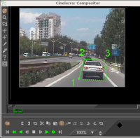
Egin klik irudiaren zati batean eta arrastatu maskararen puntu berri bakoitza
sortzeko. Nahiz eta Bezier kurbaren portaera estandarra ez izan, maskararen
interfaze honek maskararen efektua izango dena denbora errealean lantzen du.
Maskararen puntu bakoitza sortzean kurba malgu bat zabaltzen da.
Behin puntuak definituta, Ktrl+arrastatuz lekuz alda daitezke ertzaren
inguruan.

Ktrl+arrastatzeak existitzen diren puntuak lekuz aldatzea
uzten dizu, maskararen forma aldatuz
Honek, hala ere, ez du kurba leuntzen. Bezier-en kurbaren sarrerako/irteerako
puntuak atzitzeko erabili Maius+arrastatu ertzaren inguruan. Gero
sarrerako edo irteerako puntuaren inguruan Maius+arrastatzean puntua
lekuz aldatuko da.
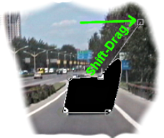
Maius+arrastatzeak Bezier-en heldulekuak aktibatzen ditu
maskararen puntuen artean kurbak sortzeko
Azkenik, maskara duzunean, maskara ALT+arrastatzean pieza bakar
baten antzera lekuz alda daiteke. Cinelerra-n maskara editatzea
Gimp-en maskarak editatzearen antzekoa da, kasu honetan ordea
maskararen efektua beti dago aktibatuta.

Ktrl+ALT+arrastatzeak maskara osoa lekuz aldatzen
du pantailan
Maskarek parametro asko dituzte, bideoan adierazten ez direnak. Parametro hauek
maskara tresnaren leihoan agertzen dira. Maskararen txandakatzailea
nabarmenduta dagoenean, galdera
ikurra hautatuz maskararen aukerak bistaratzen dira.

Maskararen aukeren leihoa
Maskararen moduak zehazten du maskarak datuak ezabatzen dituen edo
datuak bistaratzen dituen. Kenketako modua bada, bideoa desagertzen da.
Gehiketako moduan egonez gero, bideoa agertu eta maskaratik kanpo dagoen
guztia desagertzen da.

Maskaren modua
Maskararen balioak zehazten du gehiketaren edo kenketaren opakotasuna.
Kenketako moduan, balio altuagoek alfa gehiago kentzen dute. Gehiketa
moduan, balio altuagoek maskararen eskualdea distiratsuagoa bihurtzen dute,
maskaratik kanpo gelditzen dena beti ezkutatzen delarik.
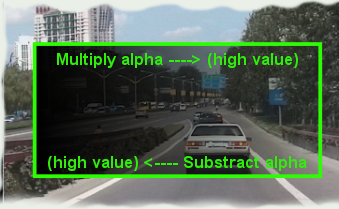
Maskararen balioa
Maskararen zenbakiak zehazten du 8 maskaretatik zein editatzen ari zaren.
Gogoratu pista bakoitzak gehienez 8 maskara dituela. Konposaketa-leihoan
klik egin eta arrastatzean, maskaretariko bat soilik editatzen ari zara.
Aldatu maskararen zenbakiaren balioa beste maskara bat editatzeko.
Aurreko maskara oraindik aktibo jarraitzen du, baina unean hautatutako
maskararen kurba dago soilik ikusgai.
Hainbat maskara erabiltzen direnean, beraien efektuak EDO (OR) eragiketarekin
batzen dira. Pista bateko maskara bakoitzak balio eta modu berdina erabiltzen du.
Maskara baten ertzak gogorrak dira lehenetsi gisa, ez da ohizkoa horrela
nahi izatea. Difuminatu parametroak zehazten du maskara zenbat pixelekin
difuminatuko den. Honek ertz leunagoak sortzen ditu, baina denbora gehiago behar
izaten du errendatzeko.

Difuminatu parametroa
Azkenik, parametro batzuk uneko maskararen puntu bakarrari eragiten diote,
maskara osoari eragin ordez. Hauek Ezabatu, x eta y dira. Puntu
aktiboa konposaketa-leihoan arrastatutako azken puntuak definitzen du.
Edozein puntu aktiba daiteke, bere inguruan Ktrl+klik eginez erakuslea
mugitu gabe. Puntu bat aktibatuta dagoela, Ezabatu parametroak puntua
ezabatzen du, eta x, y parametroek posizioz aldatzen dute balio numerikoekin.
7.2.3 Mozketa
Mozketak irteeraren dimentsioen eta proiektorearen balioak aldatzen ditu irudiaren area
ikusgaia murrizteko. Konposaketa-leihoan gaitu mozketa
txandakaria eta tresnaren leihoa
Mozketa kontrolaren elkarrizketa-koadroa bistaratzeko.

Mozketa kontrolaren elkarrizketa-koadroa
Egin klik eta arrastatu bideoan mozketaren area definitzeko.
Honek laukizuzen bat marraztuko du bideoaren gainean. Egin klik eta arrastatu
bideoaren edozein posiziotan laukizuzen berri bat definitzeko.
Egin klik eta arrastatu laukizuzenaren edozein ertzetan ertza posizioz
aldatzeko.

Mozketaren area definituta
Laukizuzena tamainaz aldatu gabe edozein posiziora aldatzeko
ALT+egin klik mozketako laukizuzenean.
Tresnaren leihoak koordenatuen sarrera testuz zehaztea uzten dizu, eta
mozketaren eragiketa lantzen du. Laukizuzena posizio egokian dagoela
sakatu tresnaren leihoan dagoen Egin ezazu botoia mozketaren eragiketa
lantzeko.
Oharra: mozketaren elkarrizketa-koadroan agertzen diren X1,Y1 eta X2,Y2
koordenatuek testu gisa balioak sartzea uzten dute (mozketaren laukizuzenaren
goi-ezkerreko eta behe-eskuineko koordenatuak definitzen dituzte).
7.2.4 Eskualde seguruak
Kontsumitzaileen pantailek irudiaren ertzak mozten dituzte, eta mozketako
eskualdea ez da beti karratua izaten, konposaketa-leihoan agertzen den bezala.
Ertz hauek mozketa bertikala gerta daitezkeela adierazten dute. Ertz hauek
bistaratzeko gaitu eskualde seguruak txandakaria.
Mantendu tituluak barneko laukizuzenaren barruan eta ekintza kanpoko laukizuzenaren
barruan.
7.2.5 Gainjartze moduak
Bideoaren pista bakoitzak gainjartze modua du, pista zabalduz atzi daitekeena.
Gainjartze modua elementuen zerrenda bat da, iraungitzailearen azpian eta ezkerrean
aurkitzen dena. Tolestutakoan, uneko gainjartze moduaren ikono adierazgarria
bistaratzen da.
Hautatu pista zabaltzeko txandakaria
bideoaren pista baten aukera guztiak ikusteko, gainjartze modua ez baduzu ikusten.
Bideoaren pistaren gainjartze modua Normala da lehenetsi gisa.
Hautatu beste moduak gainjartze botoian klik eginez eta zerrendatik elementu bat
hautatuz.
Gainjartze moduak konposaketako proiektorearen urratsaren barruan lantzen dira.
Hauek dira modu desberdinak.
- Normala
Modu honek Porter-Diff ekuazio tradizionala erabiltzen du pistak alfarekin
batzeko. Proiektuaren kolore-ereduan alfarik ez bada existitzen,
pista berriak beti ordezten du irteera.
- Gehiketa
Modu honetan, irteeran dagoen edozer gehitzen zaio uneko pistari.
Uneko pistaren alfan oinarrituz emaitza batzen da irteerarekin.
- Kenketa
Modu honetan, uneko pista kentzen da irteeratik eta alfa kanala erabiliz
emaitza irteerarekin batzen da.
- Biderketa
Eragiketa erabiliena da. Uneko pista irteerarekin bidertzen da, eta emaitza
irteerarekin batzen da. Alfa kanalik ez duen irudi zuri-beltza erabili ohi
da uneko pistan, edo titulu zuria beltza koloreko atzeko planoa duen
irudiaren gainean. Biderketa eragiketarekin zuri koloreko arearen azpian
dagoen irteeraren zatiak erakusten dira.
- Zatiketa
Uneko pista irteerarekin zatitzen da eta emaitza irteerarekin batzen da.
Emaitzak maila saturatuak eduki ohi ditu.
- Ordeztu
Modu honek ez du batzen, eta irteera gainidazten du uneko pistarekin.
7.2.6 Pisten eta irteeraren tamainak
"Aldi batekoaren" tamaina eta irteeraren tamaina independenteak eta aldagarriak
dira konposaketaren kanalizazioan. Kameraren ikuseremua "aldi batekoaren" tamaina da.
Efektuak "aldi batekoan" prozesatzen dira eta "aldi batekoaren" tamainak eragiten dio
efektuari. Proiektoreak irteeran errendatzen dira, eta irteeraren tamainaren eragina daukate.
"Alda batekoaren" tamaina irteerarena baino txikiagoa bada, "aldi batekoa"
ertz hutsekin beteko da irteeran. Alderantziz, "aldi batekoaren" tamaina
irteerarena baino handiagoa bada, "aldi batekoa" moztu egingo da.
7.2.6.1 Pistaren tamaina
"Aldi batekoaren" tamaina pistaren tamainak definitzen du. Pista bakoitzak
tamaina desberdina eduki dezake. Pista baten gainean saguaren eskuineko botoiarekin
klik egitean pistaren menua bistaratzen da. Hautatu Aldatu pistaren tamaina
pistaren tamaina edozein tamainara aldatzeko. Bestalde, Doitu irteeraren tamainara
hautatu pistaren tamaina irteerarena bezalakoa izateko.
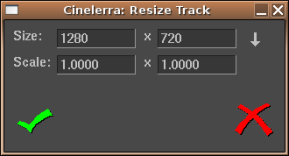
Pista tamainaz aldatzeko leihoa
Adibidez, hurrengo irudiak zera erakusten du: bideoaren pista baten
eta proiektuaren irteeraren tamaina berdinek nola ikusten diren konposatzailean.
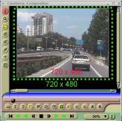
Proiektuaren irteera eta bideoaren
pista dimentsio berdinekin (720x480)
Pista baten tamaina aldatzean, bere itxura ere aldatu egingo da
konposaketa-leihoan.
Pista txikiagotuz (640x400 tamainara) eta proiektuaren irteeraren
tamaina aldatu gabe utziz, konposaketa-leihoan pista txikiagoa bistaratzen
da, inguruan area hutsa duela.

Pista berria (640x400) proiektuaren
irteera (720x480) baino txikiagoa
Pista handituz (800x560 tamainara) eta proiektuaren irteeraren
tamaina aldatu gabe utziz, konposaketa-leihoan pista handiagoa bistaratzen
da. Irteeraren tamainara mozten da pista.

Pista berria (800x560) proiektuaren
irteera (720x480) baino handiagoa
Pistaren eta proiektuaren irteeraren tamainen arteko erlazioa erabiliz
pista zehatz baten tamaina txikiagotu edo handitu dezakezu. Horrela (eta
amaierako irteera kontutan izanik) zatitutako pantailak, panoramikoak edo
zoomaren bezalako efektuak aplika ditzakezu konposatzailean.
7.2.6.2 Irteeraren tamaina
Irteeraren tamaina ezartzeko bi bide daude: Fitxategia -> Berria menua
erabiltzea proiektu berria sortzeko, edo Ezarpenak -> Formatua menuan.
Baliabideen leihoan beste bide bat dago irteeraren tamaina aldatzeko.
Saguaren eskuineko botoiarekin egin klik bideoaren klip batean, eta
hautatu Doitu proiektuaren tamaina. Horrela irteera kliparen tamainara
aldatuko da. Pista berriak sortzean, pisten tamainak beti egokituko dira
metodo hauekin zehaztutako irteeraren tamainara.
Errendatzean, proiektuaren irteeraren tamaina amaierako bideoaren pistaren
tamaina izango da, bertan errendatuko baita aldi bateko kanalizazioa.
Irteeraren tamaina aldi batekoarena baino handiagoa bada, orduan aldi batekotik
transferitutako irudia irteerako pistak doituko da. Irteeran gelditzen den
edozein leku hutsunearekin betetzen da.

Irteeraren tamaina (berde kolorekoa) aldi batekoa baino handiagoa
Irteerako tamaina aldi batekoarena baino txikiagoa bada, aldi bateko bideotariko bat
edo beste moztu egingo dira.

Irteeraren tamaina aldi batekoa baino txikiagoa
8. Ikustailearen leihoa
Multimediaren iturburuak eta klipak Ikustailearen leihoan kargatzen dira, eta
bertan ikus daiteke hauen aurrebista. Ikustailearen leihoan erabili graduatzaile
horizontala klip bat arakatzeko, fokatu laneko area batean Aurrebistaren eskualdearekin
edo erabili muntaketako kontrolak segmentuak ebaki eta itsasteko proiektuan,
edo sortu klip bat beranduago erabiltzeko.

Ikustailearen leihoa
Ikustailearen leihoa bistaratzeko, Leihoa -> Erakutsi ikustailea menua gaitu.
Ikustailearen pantailan multimedia erreproduzitzen ikus dezakezu.
Edozein multimedia erreproduzitu aurretik, aurrenik ikustailean kargatu behar duzu.
Ikustailean multimedia kargatzeko:
- Ireki baliabideen kudeatzailearen leihoa eta hautatu klipen karpeta.
- Arrastatu fitxategi bat klipen karpetatik ikustailearen pantailara.

Multimedia ere ikustailean karga dezakezu. Horretarako, saguaren eskuineko
botoiarekin klik egin klipen kudeatzaileko fitxategi batean eta agertuko den
menuan hautatu Ikusi aukera. Beste modu bat fitxategi bat ikustailean
kargatzeko baliabideen leihoko fitxategiaren gainean klik bikoitza egitea da.
Behin multimedia kargatutakoan, ikustailearen pantailan agertuko da.
Erreproduzitzeko, atzera edo aurrera joateko erabili graduatzailea edo
garraio-kontrolak.
Multimediaren pantailaren tamaina aldatzeko, saguaren eskuineko botoiarekin
egin klik pantailaren gainean. Honela zoomaren menua bistaratuko da.
Hautatu zoomaren maila: jatorrizko multimediaren tamainaren %50, %100 edo %200ean.
Multimedia agertzean, Ikustaileak proiektuak definituta dituen irteeraren tamainaren
formatuaren ezarpenak erabiltzen ditu; ez du jatorrizko kliparen formatua erabiltzen.
Proiektuaren irteera alda dezakezu kliparen formatuarekin bat etortzeko:
erabili kliparen kudeatzailearen menuko Doitu proiektuaren tamaina aukera.
Hemen multimedien eta klipen iturburuak araka ditzakezu, eskualdeak hautatuz proiektuan
itsasteko. Ikustailean landutako eragiketek aldi baterako EDL-ari (muntatze-erabakien zerrenda)
edo klipari eragiten diote, baina ez denbora-lerroari.
9. Baliabideen leihoa
Efektuak, transizioak, klipak eta objektuak hemen atzitzen dira.
Proiektuan txertatzen diren baliabide gehienak Baliabideen leihotik
arrastatzen dira. Baliabideraren kokalekuaren kudeaketa leiho honetan
lantzen da baita ere.
9.1 Baliabideetan nabigatzea
Baliabideen leihoa bi areatan zatitzen da. Aurreneko areak karpetak
zerrendatzen ditu, bigarrenak berriz hautatutako karpetaren edukia.
Joan karpeten zerrendara eta karpeta baten gainean klik egitean,
karpeta horren edukia bistaratuko da edukien arean.

Baliabideen leihoa
Karpetak eta edukia ikono edo testu gisa bistara daitezke.
Karpeten edo edukien arean saguaren eskuineko botoiarekin klik eginez
laster-menu bat bistaratzen da. Laster-menu honek formatuaren aukerak ditu.
Hautatu Bistaratu testua elementuak testu gisa zerrendatzeko. Hautatu
Ordenatu elementuak karpetaren elementuak alfabetikoki ordenatzeko.
Kliparen informazio-leihoak hautatutako multimediaren fitxategiari
buruzko informazio xehea bistaratzen du. Lehio hau bistaratzeko,
joan klipen karpetara eta saguaren eskuineko botoiarekin egin klik
nahi duzun fitxategiaren etiketan edo ikonoan. Kliparen menua
bistaratuko da, ondoren egin klik Informazioa aukeran.

Kliparen informazio-leihoa
10. Soinu bolumenaren leihoa
Bolumenaren leihoa bistara daiteke Leihoa menutik. Bolumena
leihoak irteerako audioaren bolumena bistaratzen du nahasketa guztiak
egindakoan.

Soinu bolumenaren leihoa
Soinuaren bolumena leku askotan agerten da. Ikustailea eta konposaketa-leihoko
bolumenaren txandakatzailearekin bistara daiteke. Atributuen panelean ere
agerten da pista zabalduta dagoenean (irakurri See section Atributu-panela atala). Grabazioaren
monitorean ere agerten da, audioa grabatzean ari denean.
Bolumenaren, konposaketaren eta ikustailearen leihoetan agertzen diren bolumenak
amaierako irteeraren bolumenari dagozkie (soinu-txartelaren barrutian moztu baino lehenago).
Grabazioaren monitoreko bolumenak soinu-txarteletik jasotzen diren sarrerako balioak dira.
Atributuen paneleko bolumenak pista bakoitzaren bolumenak dira (efektu guztiak
prozesatu ondoren eta irteerako nahasketa landu aurretik).
Gehienetan, soinuaren bolumenak marka numerikoak dituzte, dB unitateetan,
baina atributuen panelean ez dago nahikoa lekurik horretarako.
Soinuaren bolumena koloredun kodearekinagertzen da baita ere, bolumenaren
maila zehazteko adierazten duen osagarria. Nahiz eta marka numerikorik ez eduki,
soinuaren mailaren koloreak hainbat barruti eta gainkargen artean
desberdintzen lagunduko dizu. Marka numerikoak dituen bolumen batean, begiratu
soinuaren mailak zein koloreri dagokien jakiteko. Gero, zabaldutako audioko
pistaren bolumenean erabili koloredun kodeak gainkarga dagoen ikusteko.
Argi ibili soinuaren bolumenak 0 dB ez gainditzeko Cinelerra-n. Maila honetara
iristean pista gainkargatzen ari dela ikus dezakezu, horretaz gain
zenbat informazio galduko den adierazten dizu. 3 dB baino gutxiagoko gainkargak
onargarriak izan ohi dira. Cinelerra-n, gainkarga zenbaki positiboekin adierazten
den arren, gainkarga 0 dB mailan moztuko da soinu-txartelera edo
fitxategira bidaltzean.
Soinuaren bolumenaren barruti ikusgaia Ezarpenak -> Hobespenak -> Interfazea menuan
konfigura daiteke. See section Interfazea.
11. Garraio-kontrolak
Garraio-kontrolak oso erabilgarriak dira bai klip edo multimedian nabigatzeko
bai muntaiaren erreprodukzioan. Hauek nabigazioaren atalean azaltzen dira.
Ikustailea, Konposaketa eta programaren leiho nagusiak garraio-panela daukate.

Garraio-panela.
Garraio-panela saguaren erakuslearekin kontrolatzeaz gain, teklatuarekin ere
kontrola daiteke. Lantzen den eragiketa bakoitzeko, hasierako puntua
txertatzeko puntua da programaren leiho nagusian, eta graduatzailea
Konposaketa-leihoan. Amaierako posizioa denbora-lerroaren amaiera edo hasiera
izan daiteke, edo hautatutako eskualdearen amaiera edo hasiera (eskualdea
hautatuta egonez gero).
Amaieraren edo hasieraren orientazioa erreprodukzioaren norabidearen arabera dago.
Erreprodukzioa aurrera badoa, amaierako posizioa hautatutako eskualdearen amaiera
izango da. Atzerantz erreproduzitzen ari bada, amaierako posizioa hautatutako
eskualdearen hasiera izango da.
Txertatzeko puntua pistaren erreprodukzioan zehar mugitzen da. Erreprodukzioa
gelditzean, txertatzeko puntua erreprodukzioa gelditu den posizioan egongo da.
Horrela, berriro erreproduzitzen hastean txertatzeko puntuaren posizioa
aldatzen hasiko da.
Garraio-panela kontrolatzeko biderik azkarrena teklatua erabiltzea da.
Garraioaren teklak T forma hartzen dute teklatu numerikoan.
4
| Atzeratu fotograma
| 5
| Atzerantz motel
| 6
| Atzeratu
| +
| Azkar atzerantz
|
1
| Aurreratu fotograma
| 2
| Aurrera motel
| 3
| Erreproduzitu
| Sartu
| Azkar aurrerantz
|
0
| Gelditu
|
Teklatuko edozein tekla birritan sakatuz pausarazi egingo du.
Fotograma aurreratzeko funtzioek okerreko portaera dutela dirudi,
baina ez da horrela. Fotograma bat aurrera joaten bada, eta gero
fotograma atzera joateko agintzen bada, bistaratutako fotograma
ez da aldatuko. Gauza da erreprodukzioaren posizioa ez dela fotograma,
baizik eta bi fotogramen arteko denbora. Erreproduzioaren posizioak
zeharkatzen duen area da errendatutako fotograma. Bi fotogramen
arteko denbora bat balioarekin handitzean, eta gero bat balioarekin
gutxitzean, fotograma berdina bi aldiz gurutzatu da, eta beraz,
fotograma berdina bistaratu da.
Garraioaren portaera aldatu egiten da Ktrl sakatuta edukiz
garraio-komando bat bidaltzean. Honek hasierako puntua sarrerako
puntua izatea eta amaierako puntua irteerakoa izatea eragiten
du aurrera erreproduzitzen ari denean. Atzerantz erreproduzitzean
ordea, hasierako puntua irteerako puntua izatea eta amaierako puntua
sarrerakoa izatea eragiten du. Ez bada sarrerako/irteerako pnturik
zehazten, portaera lehenetsira itzuliko da, txertatzeko puntua
eta pistaren mugak hasierako eta amaierako puntu gisa erabiliz.
Posiblea da JogShuttle hardwarea erabiltzea(1).
12. Denbora-barra
Ikustailearen eta Konsposaketako nabigazioaren funtzionalitateak antzeko
portaera dute. Bakoitzak denbora-barra eta graduatzailea du bideoaren
irteeraren azpian. Denbora-barra eta graduatzailea oso kritikoak
dira nabigazioan.

Programak estaltzen duen denbora osoa adierazten du denbora-barrak.
Etiketak eta sarrerako/irteerako puntuak definitzen dituzunean,
denbora-barrak ere definitu egiten ditu. Azkenik, denbora-barrak
Aurrebistaren eskualdea izenarekin ezagutzen den eskualdea definiten du.
Graduatzaileak eragiten dioten denbora-lerroko eskualdea da Aurrebistaren eskualdea.
Aurrebistaren eskualdeak estaltzen duen denbora da graduatzaileak ere
estaltzen duena. Programa osoaren barruan aurrebistaren eskualdea erabiliz,
eta graduatzailea aurrebistaren eskualdean erabiliz, azkar eta doitasunez
koka zaitezke Ikustailean eta Konposaketan.
Uneko proiektua fitxategi batekin ordezten baduzu,
aurrebistaren euskaldea tamainaz automatikoki aldatuko da fitxategi
osoa estaltzeko. Uneko proiektuaren tamaina aldatu edo datuak eransten badizkiozu,
aurrebistaren eskualdeak tamaina berdinarekin jarraituko du eta txikiagotu egiten da.
Beraz, aurrebistaren eskualdea tamainaz aldatu beharko duzu.
Kargatu fitxategi bat, eta gero, korritu inguruan konposaketako graduatzailea
erabiliz. Leiho nagusiko txertatzeko puntuak konposaketari jarraitzen dio.
Mugitu saguaren erakuslea konposaketako denbora-barraren ezkerretara erakuslea formaz aldatu arte
(ezkerrera zuzentzen duen gezia <=). Egin klik eta arrastatu eskuinera. Aurrebistaren
eskualdea aldatu egin beharko litzakete, eta graduatzailea proportzionalki
tamainaz aldatu.
Joan denbora-barraren eskuinera erakuslea formaz aldatu arte (eskuinera zuzentzen duen
gezia =>). Arrastatu ezkerrera aurrebistaren eskualdea txikiagotzeko.
Denbora-barran, joan aurrebistaren eskualdearen zentrura eta arrastatu
mugi daitekeela konturatu arte. Erakuslea <=> formakoa izango da.
Oharra: uneko proiektuaren tamaina aldatu edo datuak eransten badizkiozu,
aurrebistaren eskualdeak tamaina berdinarekin jarraituko du eta txikiagotu egiten da.
Beraz, aurrebistaren eskualdea tamainaz aldatu beharko duzu.

Aurrebistaren eskualdea konposaketa-leihoan
Graduatzailera joan eta albo batera edo bestera mugitzean, aurrebistaren
eskualde txikiagoarekin, graduatzaileak aurrebistaren eskualdeari
eragiten diola soilik ikusiko duzu. Ikustailearen leihoko denbora-barra
eta graduatzaileek gauza berdina egiten dute.
Etiketak eta sarrerako/irteerako puntuak erabat onartuta dauden ikustailean eta
konposaketan. Ikustailearen eta konposaketaren arteko desberdintasuna
honakoa da: konposaketak programaren egoera adierazten du; ikustaileak
berriz klip baten egoera adierazten du, baina ez programarena.
Konposaketa-leihoan etiketa botoia sakatzean, etiketa bai konposaletako
denbora-barran bai programaren denbora-barran agertuko da.
Konposaketa-leihoan etiketa edo sarrerako/irteerako puntu bat hautatzean,
programaren leihoak posizio horretara egiten du jauzi.

Etiketak eta sarrerako/irteerako puntuak Ikustailean.
Ikustailean eta konposaketa-leihoan, etiketak eta sarrerako/irteerako puntuak
denbora-barran bistaratzen dira. Programaren eskualde batean bistaratu ordez,
denbora-barrak programa osoa bistaratzen du.
Programaren leihoak bezala, konposaketa-leihoak zoomaren gaitasuna du. Aurrenik,
Konposaketa-leihoaren behean dagoen menuen zerrendak zoomaren hainbat aukera
ditu. Menu horretan Automatikoa elementua hautatzean, konposaketa-leihoaren
tamainara doituko da bideoaren zooma. Ehuneko beste edozeinekin ezartzean,
bideoa bider bi handiagotzen/txikiagotzen da zooma eta korritze-barra erabil daiteke
irteeraren inguruan korritzeko. Leihoaren tamaina baino gehiago handitzen bada
bideoaren zooma, korritze-barra erabiltzeaz gain, saguaren erdiko botoiarekin
bideoan arrastatu irteera arakatzeko. Gimp-ek ere antzeko funtzionalitatea du.
Gainera, zooma txandakaria hautatzean
Konposaketa-leihoa zooma moduan sartzen da. Zooma moduan, bideoaren irteeran
klik eginez zooma handiagotzen du, Ktrl+klik egitean ordea zooma txikiagotzen da.
Saguak gurpila badu, gurpila biratzean zooma handiagotzen edo txikiagotzen da.
Jakin ezazu zooma tresnarekin handiagotzean edo txikiagotzean ez dela errendatutako
irteera aldatzen. Bideoa aztertzeko edo mahaigainari doitzeko erabiltzen da zooma.
Oharra: Konposaketa-leihoan, %100 ez den balio batekin bideoa erreproduzitzen
bada, Cinelerra-k prozesamendu gehiago landu beharko du. Sistema moteletan errendimenduari
eragin dezaioke.
13. Denbora errealeko efektuak
Efektu hauek eragiten duten pisten azpian jartzen dira geruzetan. Hauek pista prozesatzen dute
pista erreproduzitzen ari denean, baina ez dira irteeran gordetzen. Proiektua
errendatzean efektu hauek gordetzen dira irteeran.
Denbora errealeko efektu guztiak baliabideen leihoan zerrendatzen dira, bi taldetan
banatuta: audioaren efektuak eta bideoaren efektuak. Audioaren efektuak
audio motako pistetara arrastatu behar dira baliabideen leihotik. Bideoaren
efektuak bideo motako pistetara arrastatu behar dira.
Helburuko pistan datuak egonez gero, efektua pista osoari aplikatuko zaio.
Pistan daturik ez balego, efektua ezabatu egingo litzateke. Pistaren eskualde
bat hautatuta egonez gero, efektua eskualdean itsatsiko da (berdin dio
eskualdean daturik dagoen edo ez).
Efektu batzuk ez dute datuak prozesatzen, sintetizatu egiten dituzte. Sintesiaren
efektuaren kasuan, pistaren eskualde bat hautatu eta horrela arrastatzearen
eragiketak bertan itsatsiko du efektua datuak ezabatu gabe.
Pista baten gainera efektu bat baino gehiago arrastatzean, pistaren behean
efektuak geruzetan ikusiko dituzu goitik beherako ordenean. Pista erreproduzitzen
denean, efektuak goitik behera prozesatzen dira. Gaineko efektuaren irteera azpikoaren
sarrera izatera bihurtuko da, eta horrela bata bestearen ondoren.
Pista bati efektuak aplikatzeko beste bide bat laster-menua erabiltzea da.
Saguaren eskuineko botoiarekin klik egin pistaren gainean eta hautatu Erantsi efektua
laster-menuan. Efektua eransteko elkarrizketa-koadroak arrastatu eta jaregin metodoak
baino kontrol gehiago eskaintzen dizu. Elkarrizketa-koadro honek bi efektu mota
gehiago eranstea uzten dizu: partekatutako efektuak eta partekatutako pistak.
Hautatu plugin bat Plugin-ak zutabean eta plugin-en zutabearen azpian
dagoen Erantsi botoia sakatu (hautatutako plugin-a eransteko). Efektu
hori baliabideen leihotik arrastatutako efektuaren berdina izango da.
Pista batek efektu bat badu, efektua konfiguratzea komeni da. Joan
efektura eta saguaren eskuineko botoiarekin egin klik efektuaren laster-leihoa
bistaratzeko. Efektuaren laster-leihoan Erakutsi aukera dago. Aukera honek
efektuaren interfazea kurtsorearen azpian bistaratzea eragiten du. Efektu
gehienek interfazea eduki arren, batzuk ez daukate interfazerik. Efektuak ez
badu interfazerik, ez da ezer erakutsiko Erakutsi aukera hautatzean. Efektuaren
interfazean parametroak doitzean, efektuaren iraupen osoari eragin ohi diote
parametroek.
13.1 Denbora errealeko efektu motak
Erantsi efektuaren elkarrizketa-koadroak onartzen dituen beste bi efektu
mota efektu birziklatuak dira. Efektu birziklatuak erabiltzeko, hiru betekizun
bete behar dira:
- Denbora-lerroan beste efektu batzuk egon behar dira.
- Efektua eransten ari zaren pistaren mota berdinekoak izan behar dira
beste efektuak. Pista audio motakoa bada, efektuak audio motakoak izan behar dira.
Pista bideo motakoa bada, efektuak bideo motakoak izan behar dira.
- Txertatzeko puntua edo hautatutako eskualdea beste efektuen barruan
hasi behar dira.
Partekatutako efektu baten kasuan, baldintza hauek egia izan behar dute.
Partekatutako pista baten kasuan, efektua eransten ari zaren pistaren mota
berdineko beste pista bat egon behar da denbora-lerroan. Bideoaren pista baten
gainean saguaren eskuineko botoiarekin klik egiten baduzu,
partekatutako pista zutabean ez da ezer egongo beste bideo-pistarik ez
badago. Audioaren pista baten gainean saguaren eskuineko botoiarekin klik egiten baduzu,
partekatutako pista zutabean ez da ezer egongo beste audio-pistarik ez
badago.
Partekatutako efektuak edo pistak erabilgarri badaude, Partekatutako efektuak
eta Partekatutako pistak zutabeetan agertuko dira. Zutabe bakoitzaren
azpian dagoen Erantsi botoiak zutabean nabarmendutako edozer erantsiko
dio uneko pistari.
Partekatutako efektuek eta pistek gauza esklusiboak egitea uzten dute. Partekatutako
efektu baten kasuan, partekatutako efektua jatorrizko efektuaren kopia bat bezala
tratatzen da (partekatutako efektuak ordea ez dauka interfazerik bistaratzeko).
Jatorrizko efektuaren interfazeak zehazten du partekatutako efektuaren konfigurazio
guztia, eta jatorrizko efektuaren interfazea soilik bistara daiteke.
Partekatutako efektu bat erreproduzitzen denean, efektu normal baten antzera
prozesatzen da, bere konfigurazioa ordea jatorrizko efektutik kopiatzen da.
Efektu batzuk partekatuta daudela detektatzen dute, 'oihartzuna' edo 'konpresorea'
efektuak bezala. Efektu hauek zein pista partekatzen ari diren zehazten dute, eta
bi pista batera nahasten dute, edo pista bat erabiltzen dute balio bat gordetzeko.
'Oihartzuna' efektuak pistak batera nahasten ditu ingurua simulatzeko. 'Konpresorea'
efektuak partekatutako pista bat erabiltzen du abiarazle gisa.
Jatorrizko pista batek partekatutako pista badu bere efektuen artean,
partekatutako pista bera erabiliko da denbora errealeko efektu gisa. Normalean
honi Lotutako pistak deitzen zaio, baina Cinelerra-k eragiketa berdina lortzen
du partekatutako pista erantsiz. Partekatutako pistak dituen iraungitze eta beste
edozein efektu jatorrizko pistari eragiten zaio. Partekatutako pista baten
datuak prozesatutakoan, jatorrizko pistak partekatutako pistaren edozein efektu
lantzen du, eta gero irteeran konposatzen du.
Gainera, partekatutako pistak jatorrizko pistaren irteera denbora errealeko
efektu gisa prozesatutakoan, partekatutako pistak bere burua irteeran nahasten du
panoramikoaren, moduaren eta proiektorearen ezarpenekin. Honela, bi pista nahasten dira
irteeran datu berdinekin. Gehienetan ez duzu nahiko partekatutako irteera jatorrizko
pistaren datu berdinekin irteeran nahasterik. Nahasketaren urratsa baino lehenago
gelditzea eta datuak jatorrizko pistari itzultzea nahiko duzu. Hau egiteko,
gaitu pista bakoitzaren  mututu txandakaria. Honela,
mututu gaituta duen pista ez da irteeran nahastuko.
mututu txandakaria. Honela,
mututu gaituta duen pista ez da irteeran nahastuko.
Demagun bideo bat sortzen ari zarela, eta partekatutako pista jatorrizko pistaren
datuekin konposatzea nahi duzula irteeran bigarren aldiz. Bideoaren kasuan,
partekatutako pistako bideoa beti agertuko da jatorrizko pistaren bideoaren azpian,
baldin eta ez badago jatorrizko pistaren gainean denbora-lerroan.
Partekatutako pistak erantsitako ordenean konposatzen dira.
Jatorrizko pistaren zati denez, jatorrizko pista konposatu baino lehenago
konposatu behar da partekatutako pista.
13.2 Denbora errealeko efektuak editatzea
Eragiketa asko existitzen dira efektuak ikutzeko, behin efektuak denbora-lerroan
daudela. Efektuak eta multimedia nahastea nahiko gauza konplikatua denez,
efektuak editatzeko metodoak ez dira 'ebaki eta itsatsi' bezain labur eta
zehatzak. Ediziotariko batzuk sarrerako/irteerako puntuak arrastatzeaz bat
gertatzen dira, beste batzuk laster-menuen bidez, eta beste batzuk efektuak
arrastatuz.
Pistak muntatzean, normalean, efektuek muntatze-erabakiei jarraitzen diete.
Pista batetik ebakitzen baduzu, efektua murriztu egiten da. Sarrerako/irteerako
puntuak arrastatzen badituzu, efektuak bere luzera aldatzen du. Portaera hau
desgaitzeko hautatu Ezarpenak -> Editatu efektuak elementua proiektuaren leihoan.
Mugitu denbora-lerroko erakuslea efektuaren ertzen gainera, formaz aldatu arte
(ezkerrera edo eskuinera tamainaz aldatzeko ikonoa, <= edo => bezalakoa).
Egoera honetan, efektu baten amaiera arrastatzen baduzu, muntaketa bat lantzen da,
pista baten amaiera arrastatzean gertatzen den bezala.
Pistaren iraupena aldatzeko hiru portaerak efektuaren iraupenari eta saguaren hiru botoiei
lotuta daude, Interfazearen hobespenetan ezarri duzun arabera. See section Interfazea.
Efektu baten iraupena lantzen duzunean, efektuaren muga mugitu egiten da beraren
gainean arrastatzean. Pistaren muntaketan gertatzen ez den bezala, efektuak ez du
jatorrizko luzerarik. Efektu baten luzera nahi haina zabal dezakezu mugarik jasan gabe.
Gainera, eta pistaren muntaketan gertatzen ez den bezala, arrastatze eragiketaren
hasierako posizioak ez dio lotuta dagoen muntatze-erabakien zerrenda multimediari eragiten.
Lotuta dagoen multimediaren efektuak ez dio efektuaren edizioari jarraitzen.
Beste efektu batzuk, hala ere, efektu batean sortutako muntatze-erabakiei jarraitzen diete.
Beste pistetako efektuekin lerrokatuta dagoen efektu baten amaiera arrastatzen baduzu,
beste pistetako efektuak eraldatu egingo diren arren, multimediak berdin jarraituko du.
Zer gertatzen da sarrerako efektu baten amaiera doitzen baduzu, pistaren amaiera inguruko
denbora asko eraginik gabe utziz? Kasu horretan, baliabideen leihotik beste efektu
bat arrastatzen baduzu, efektu hori hutsik dagoen errenkadaren arean txerta dezakezu.
Denbora errealeko efektuak errenkadetan antolatzen dira pistaren
barruan. Errenkada bakoitzak hainbat efektu eduki ditzake.
Kasu batzuetan, efektuen errenkada bat soilik aldatzeko bere iraupena aldatzea nahi izan
dezakezu. Horretarako, aurrenik txertatzeko puntua efektuaren hasieran edo amaieran
kokatu. Gero, sakatu Maius tekla iraupenaren eragiketa hasten den bitartean.
Metodo honekin eragiketak efektuen errenkada bakar bat aldatzen du.
Doitzeaz gain, efektuak gora edo behera eraman ditzakezu. Pista bakoitzak efektuen
pila bat eduki dezake bere baitan. Efektu bat gora edo behera eramatean, pilan
efektuak zein ordenetan prozesatuko diren aldatzen da. Joan efektu batera
eta saguaren eskuineko botoiarekin bistaratu efektuaren menua. Eraman gora
eta Eraman behera aukerek efektua gora edo behera eramaten dute.
Efektuak gora edo behera eramatean, kontu handiz ibili partekatutako efektuak
gisa partekatuta egonez gero, eragiketa hauen ondoren edozein erreferentzia
efektu desberdin batengana jo baitezake.
Azkenik, efektuak ere arrasta daitezke. Efektuak arrastatzea planoak arrastatzea
bezalakoa da. Hautatu gezia
'arrastatu eta jaregin' moduan sartzeko efektuak arrastatu baino lehen. Efektuak
multimediaren mugetara, efektuen mugetara eta pistetara atxiki daitezke. Argi ibili
gauza batekin, erreferentzia bat partekatutako efektu batera arrastatzen baduzu,
erreferentziak okerreko efektura zuzenduko du hasieran erreferentziatutako efektua
arrastatu ondoren.
Efektu baten gainean saguaren eskuineko botoiarekin klik egitean efektuaren
laster-menua bistaratuko da. Hautatu Erantsi elementua efektua aldatzeko,
edo erreferentzia aldatzeko (partekatutako efektua bada).
13.3 Denbora errealeko audio-efektuak
13.3.1 Konpresorea

Ordenagailuen zientziaren esperientziaren aurka, audioaren konpresoreak ez du
audioa gordetzeko behar den datu kopurua murrizten. Audioaren konpresoreak
audioaren barruti dinamikoa murrizten du. Cinelerra-n konpresoreak zabaltzearen
eta konpresioaren funtzioak lantzen ditu.
Uneko posizioaren denbora-periodo zehatz batean dagoen gehienezko soinu-maila
kalkulatuz lan egiten du konpresoreak. Gehienezko soinu-maila sarrerako
soinu-maila gisa hartzen da. Sarrerako soinu-maila bakoitzak irteerako
soinu-maila bat du, erabiltzaileak zehaztutakoa. Uneko posizioaren irabazia
doitu egiten da, denbora-barrutiko gehienezko soinu-maila erabiltzaileak
zehaztutako balioa izanik.
Konpresoreak grafiko bat du, sarrerako soinu-maila bakoitza irteerako
soinu-mailari korrelatiboa izanik. Norabide horizontala sarrerako soinu-maila
da, dB unitateetan. Norabide bertikala irteerako soinu-maila da, dB unitateetan.
Erabiltzaileak zehazten ditu irteerako soinu-mailak, grafikoan puntuak sortuz.
Grafikoan klik egitean puntu bat sortzen da. 2 puntu existitzen badira,
puntu bat arrastatu bestearen gainera ezabatzeko. Hautatu den azken puntuak
bere balioa testu-eremuan bistaratuta dauka (zehaztasun gehiagoz doitzeko).
Konpresoreak audioaren barruti dinamikoa murrizteko, irteerako balioak
sarrerako balioen baino handiagoak izatea egin, 0 dB izan ezik.
Konpresoreak audioaren barruti dinamikoa zabaltzeko, irteerako balioak
sarrerako balioen baino txikiagoak izatea egin, 0 dB izan ezik.
Algoritmoak 0 dB gainditzen duten soinu-maila guztiak 0 dB mailara
mugatzen ditu, gainkargaren efektua lortzeko jarri 'irabazia' efektua
konporesorearen aurretik maila guztiak murrizteko, eta beste 'irabazia'
efektua konpresorearen atzetik 0 dB maila gainditzeko.
Erantzun-denbora: uneko posizioarekiko gehienezko soinu-maila non
hartzen den, eta zein bizkor doitzen den irabazia gailur hura lortzeko
zehazten du eremu honek. Segundotan adierazten da. Balio negatiboa bada,
konpresoreak uneko posiziotik aurrera irakurtzen du etorkizuneko gailurra
lortzeko. Irabazia gailu horretara iritsiko da erantzun-denbora batean.
Honek nahi den irteerako maila atzematen uzten du, sarrerako gailurra
gertatzen denean uneko posizioan.
Erantzun-denbora positiboa bada, konpresoreak uneko posizioa soilik arakatzen du
irabaziaren bila, eta erantzun-denbora bateko maldarekin igoko du irabazia nahi
den irteerako mailara iristeko. Sarrerako gailua dektektatu ondoren
erantzun-denbora bat igatotakoan iritsiko da irteerako mailara.
Gainbehera-denbora: gailurra uneko maila baino altuagoa bada, konpresoreak
irabazia maldan igoko du gailurraren balioraino. Gero, etorkizuneko gailur
bat uneko gailurra baino baxuagoa bada, irabazia maldan behera jaitsiko du.
Irabazia maldan behera jaisten igaro dezakeen denbora maldan gora igotzea
baino handiagoa izan daiteke. Maldan behera jaisteko denborari gainbehera-denbora
deitzen zaio, eta segundotan adierazten da.
Abiarazle mota: konpresorea kanal anitzeko efektu bat da.
Hainbat pistek parteka dezakete konpresore bat. Hainbat pisten
seinalea nola interpretatzeko erabiltzen da abiarazle mota.
Abiarazle motak behar duen balioa Abiarazlea testu-eremuak ematen dio,
konpresorearen sarrera bezala erabiliko den pistaren zenbakia adieraziz.
Entzun ez den pista bati beste pisten bolumen-maila detektatzea uzten dio.
Gehienezkoa abiarazleak bolumen-maila altuena duen pista hartu eta
konpresorearen sarrera gisa erabiltzen du.
Guztira abiarazle motak pista guztien seinaleak gehitzen ditu, eta
batura hori konpresorearen sarreran erabiltzen du. Soinuaren konpresio
naturalena da hau, eta oso erabilgarria da hainbat pisten bolumenaren
batez bestekoa bozgorailu bakarrean doitzeko.
Abiarazlea: konpresorea kanal anitzeko efektu bat da.
Hainbat pistek parteka dezakete konpresore bat. Normalean
pista bat bakarrik arakatzen da sarrerako gailurra bilatzeko.
Pista hori zehazteko erabiltzen da Abiarazlea. Abiarazlearen
balioarekin hainbat pista partekatu eta erreproduzitzean, pista batean
sinu formako uhina sor dezakezu beste pista bateko danborraren anplituteari
jarraitzeko, adibidez.
Leundu soilik: konpresoreak soinu-mailari zer egiten dion bistaratzeko,
aukera honek soinuaren uhina uneko gailurraren balioarekin bakarrik ordezten du.
Oso ongi erakusten du nola eragiten dien Erantzun-denborak detektatutako
gailurren balioei.
13.3.2 Audio-atzerapena

Zehaztu bideoaren pista zenbat segundokin atzeratzea nahi duzun.
13.3.3 Zarata kentzea
FINKATZEKO
13.3.4 FFT zarata kentzea

FINKATZEKO
13.3.5 Kendu parasitoak

FINKATZEKO
13.3.6 Eku. parametrikoa

FINKATZEKO
13.3.7 Freeverb

FINKATZEKO
13.3.8 Irabazia

FINKATZEKO
13.3.9 Heroine College

FINKATZEKO
13.3.10 Interpolatu

FINKATZEKO
13.3.11 Alderantzikatu audioa

FINKATZEKO
13.3.12 Zuzeneko audioa

Efektu honek audioa zuzenean soinu-txartelaren sarreratik irakurtzen du.
Pistan egon daitekeen audioa ordezten duenez, pista hutsei aplikatu ohi da.
Zuzeneko audioa erabiltzeko, nabarmendu eskualde horizontala audioaren pista batean,
edo definitu sarrerako eta irteerako pistak. Gero, jaregin 'Zuzeneko audioa' efektua
eskualdean. Sortu pista gehigarriak eta aurreneko 'Zuzeneko audioa' efektuaren
partekatutako pistak erantsi beste pistei grabazioan kanal gehigarriak edukitzeko.
Zuzeneko audioak grabazioan erabiliko duen soinu-kontrolatzailea Ezarpenak -> Hobespenak ->
Erreprodukzioa -> Audio-irteera menuan hautatzen da. Baina grabazio baten ez bezala,
Erreproduzitzeko buffer-tamaina erabiltzen du grabazioaren bufferraren tamaina gisa,
eta proiektuaren lagin-tasa erabiltzen du lagin-tasa gisa.
Ezarpen hauek kritikoak dira, soinu-kontrolatzaile batzuk ezin dute grabatu
erreprodukzioan erabiltzen den buffer-tamaina berdinarekin. 'Zuzeneko audioa' askoz ere
fidagarriagoa da grabazioko kontrolatzailea ALSA denean, eta erreprodukzioko
fragmentu-tamaina 2048 denean.
Jaregin beste efektuak 'Zuzenko audioa'ren ondoren, soinu-txartelaren sarrera denbora
errealean prozesatzeko.
Orain, albiste txarrak. 'zuzeneko audioak' ezin du aurrez irakurri, eta ondorioz
konpresorea bezalako efektuek atzerapena izango dute aurrez irakurtzea gaituta izanez
gero, edo erreprodukzioa exekutatzen ari bada.
Beste arazo bat. Batzuetan soinu-txartelaren grabazio-ordularia erreprodukzio-ordularia
baino apur bat motelagoa da. Grabazioa atzean erortzen da noizbehinka, eta erreprodukzioa
moztuta bezala entzuten da.
Azkenik, 'zuzeneko audioak' ez du atzetik aurrera moduan lan egiten.
13.3.13 Audioa begiztan

FINKATZEKO
13.3.14 Gainjarri

FINKATZEKO
13.3.15 Garaieraren desplazamendua
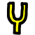
Denbora tiratzeko metodoen antzera, hiru metodo daude garaieraren desplazamenduan:
Garaieraren desplazamendua, Berriz lagindu eta Kliparen informazioaren leihoa.
Garaieraren desplazamendua denbora errealeko efektu bat da, grabazioko audioaren pistetara
arrastatu eta jaregin daiteke. Garaieraren desplazamenduak Fourier-en eraldaketa
azkarra erabiltzen du garaiera aldatzen saiatzeko (iraupena aldatu gabe), baina honek
'leihoen artefaktuak' sortzen ditu.
Garaieraren desplazamendua aplikatzen zaien audioei 'leihoen artefaktuek' traba
guxtiago eragiten diete. Garaieraren desplazamendua asko erabiltzen da
garaieran sekulako aldaketak lantzeko. Garaieran aldaketa arinagoak lantzeko,
Audioa -> Errendatu efektua menuko Berriz lagindu efektua erabili.
Berriz lagindu efektuak garaiera arinki aldatzen du, %5 inguruan,
iraupenean aldaketa nabarmenik egin gabe.
Garaiera piskat aldatzeko beste modu bat: Baliabideak leihora joan,
nabarmendu Multimedia (media) karpeta, saguaren eskuineko botoiarekin
klik egin audio-fitxategi batean, eta aukeratu Informazioa elementua.
Ondoren, doitu lagin-tasa Informazioaren elkarrizketa-koadroa garaiera
egokitzeko. Saguaren ezkerreko botoiarekin audioaren pistaren
eskuineko mugan klik egitea, eta luzeraren aldaketarekin bat etortzeko,
ezkerrera edo eskuinera arrastatzea eskatzen du metodo honek.
13.3.16 Atzekoz aurrera audioa

Aplikatu Atzekoz aurrera audioa efektua audioaren pista bati, eta atzerantz
erreproduzituko da. Soinua aurrerantz erreproduzituko da.
Argi ibili audioa atzekoz aurrera jartzearekin, denbora-lerroko uhin-formak
ez baitu uneko atzekoz aurrera jarritako irteera adierazten.
13.3.17 Soinu-maila

FINKATZEKO
13.3.18 Espektograma

FINKATZEKO
13.3.19 Sintetizadorea
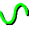
FINKATZEKO
13.3.20 Tiratu denbora

FINKATZEKO
13.4 Denbora errealeko bideo-efektuak
13.4.1 1080-tik 480-ra

Telebista kanal gehienak 1920x1080 bereizmenarekin jasoten diren arren, estudioan
duten iturburuaren bereizmena 720x480 izan ohi da. Lekua alferrik galtzea da
1920x1080 konpresatzea, benetan 720x480 bereizmeneko xehetasunak baditu. Tamalez,
1920x1080 bereizmeneko bideoa tamainaz aldatzea 720x480-ra ez da murriztea bezain
sinplea.
Telebista estazio batean, jatorrizko 720x480 muntaia aurrenik 720x240 tamainako
eremuetara bihurtzen dia. Gero, eremu bakoitza 1920x540 tamainara eskalatzen da.
Ondoren, 1920x540 bereizmeneko bi eremuak konbinatu egiten dira gurutzelarkatuz,
eta 1920x1080 tamainako irudia lortzen da. Teknika honekin telebista kontsumilatzaile
batek berriro lagindutako irudia ikus dezake zirkukitu gehigarririk erabili gabe
(720x480 irudia 1920x1080 batean kudeatzeko).
1920x1080 tamainako irudiak desgurutzelarkatzen badituzu, 720x240 bereizmeneko
irudiak lortuko dituzu. 1080-tik 480-ra efektuak iruditik 1920x540 tamainako
bi eremu erauzten ditu, gero irudiak bereiztuta tamainaz aldatu eta berriro
konbinatuz gurutzelarkatutako 1920x480 irudia berreskuratzen da. Eslaka
efektuak aplikatu behar da ondoren, tamaina horizontala 960 edo 720
tamainara (jatorrizko aspektu-erlazioaren arabera) murrizteko.
1080-tik 480-ra efektua aplikatzen zaien pistak 1920x1080 bereizmenekoa
izan behar dute. Proiektuaren ezarpenak, Ezarpenak -> Formatua menuan,
gutxienez 720x480 bereizmenekoa izan behar du.
Efektuak ez daki 1920x1080 irudiaren aurreneko errenkada jatorrizko 720x480
bereizmenaren aurreneko errenkadari al dagokion. Aurreneko errenkada zein den
zehaztu behar duzu efektuaren konfigurazioan.
Efektu honen irteera irudi txiki bat da, jatorrizko 1920x1080 fotogramaren
erdian. Erabili proiektorea irteerako irudia erreprodukzioan zentratzeko.
Azkenik, behin gurutzelarkatutako 720x480 bideoa duzunean, Fotogramak eremuetara
edo Alderantzikatu Telezinema efektua aplika dezakezu jatorrizko fotograma
progresiboak berreskuratzeko.
13.4.2 Filma zahartzea

"Filma zaharraren" edo telebistako saio baten itxura lortzeko erabil daitekeen
efektuetariko bat da hau. Efektu honek filmean marrak gora eta behera mugitzen
jartzen ditu, bideoan ere 'elurra' jar dezake. Erabili efektu hau
distira/kontrastea edo kolore-balantzea efektuekin zuri-beltzeko filma
zahar baten itxura lortzeko.
13.4.3 Lausotzea

Efektu honek bideoaren pista bat lausotzen du. Parametroak honakoak dira:
- Horizontala eta bertikala
Lausotze efektuak eremuetariko zeini eragingo dion zehazten dute parametro hauek.
Bi eremuak izan daitezke.
- Erradioa
Erabili graduatzailea aplikatuko den lauso kopurua zehazteko.
- Lauso urdina, gorria, berdea, alfa
Zehaztu zein kolore-kanal lausotu behar den.
13.4.4 Distira/kontrastea
 Kaptura ilun bat argitzea nahi baduzu, tresna hau erabili behar duzu.
Efektu hau gehiegi ez erabili, bestela bideoaren kalitatea galtzeko arriskua edukiko
baituzu. Erabili efektu hau gako-fotogramekin, hasiera iluna baina amaiera argitsua duen
kaptura bati distira emateko. Normalean distira eta kontrastea kopuru berdinarekin
(adib. distira: 28, kontrastea: 26) aldatzea nahi izango duzu, jatorrizko
koloreak ukitu gabe uzteko.
Kaptura ilun bat argitzea nahi baduzu, tresna hau erabili behar duzu.
Efektu hau gehiegi ez erabili, bestela bideoaren kalitatea galtzeko arriskua edukiko
baituzu. Erabili efektu hau gako-fotogramekin, hasiera iluna baina amaiera argitsua duen
kaptura bati distira emateko. Normalean distira eta kontrastea kopuru berdinarekin
(adib. distira: 28, kontrastea: 26) aldatzea nahi izango duzu, jatorrizko
koloreak ukitu gabe uzteko.
13.4.5 Filma erretzen

Bideoa erretzearen efektuak zure bideoa 'erretzen' du, bertan bideoari erantsitako
argi txiki koloredunak daude, kamiseta zuri baten ertzetan adibidez. Efektu polita
izan daiteke musika arloko bideo batean, eta bideoak jorratzean zure irudipena
askatzen lagun zaitzake.
13.4.6 Gako kromatikoa

Efektu honek hautatutako kolorearekin bat etortzen diren pixelak ezabatzen ditu.
Alfa kanalik ez badago, kolore beltzarekin ordeztuko ditu. Alfa kanala egonez
gero, gardentasunarekin ordeztuko ditu. Kolore-ereduaren hautapena oso garrantzitsua
da portaera zehazteko.
Gako kromatikoak argitasuna edo abardura erabiltzen du zer ezabatu den zehazteko.
Erabili balioa aukerak gardentasuna zehazteko balioa balioa da.
Ezabatuko den kolore zentral bat Kolorea botoiarekin hautatu. Beste modu bat
irteerako fotogramatik kolorea hautatzea da, horretarako aurrenik konposaketa-leihoan
kolore-hautatzailea erabili, eta gero hautatu Erabili kolore-hautatzailea botoia.
Kolore-hautatzailearen uneko kolorea ezartzen du gako kromatiko gisa erabiltzeko.
Argi ibili, gako kromatikoaren irteera konposatzailera atzeraeragiten baita,
eta ondorioz, berriro konposatzailean kolore bat hautatzean gako kromatikoaren
efektuaren irteera erabiliko baita. Kolore-hautatzailearekin koloreak hautatutakoan
gako kromatikoa desgaitu egin behar da.
Atalase batean dagoen argitasuna edo abardura ezabatu egingo da. Atalasea handitzeak
ezabatuko den koloreen barrutia zehazten du. Hala ere, ez da piztu/itzali bezain erraza.
Kolorea atalasearen mugara gerturatzen doan heinean, gradualki ezabatuko da malda altua
bada, edo azkar ezabatuko da malda baxua bada. Hemen definitutako malda balio gehigarri
kopurua da, opakotasunetik gardentasunera joateko behar den atalasearen mugakidea.
Normalean, atalasea oso motela izaten da malda altu bat erabiltzean. Bi parametroak
esklusiboak izateko joera dute, maldak betetzen duela atalase gehigarria.
Maldak gako kromatikoaren ertzak leuntzen saiatzen den arren, ez du ongi funtzionatzen
konpresioa duten iturburuetan.
Leuntzeko teknika ospetsuenetarikoa honakoa da: erabili malda handiena, eta
kateatu lausotzeko efektua gako kromatikoa efektuaren azpian, alfa kanala lausotzeko.
13.4.7 Gako kromatikoa (SB)

FINKATZEKO
13.4.8 Kolore-balantzea

Bideoaren kolore-balantzea efektu dotorea da distira/kontrastea eta abardura/saturazioa
efektuekin batera erabiltzeko, filmaren grabazioan sor daitezkeen erroreak (argitasun baxua,
e.a.) konpensatzen saiatzeko. Bideoaren kalitatea asko gutxiagotu gabe gauza asko egin ditzake.
Gimp programak duen kolore-balantzea efektuaren antzekoa da. Irteerara bidaltzen
den kolorea CMY (cyana, magenta, horia) edo GBU (gorria, berdea, urdina) alda dezakezu
efektu hau erabiliz.
13.4.9 Dezimala

Efektu honek oso antzekoak diren fotogramak jaregiten ditu pistatik, fotograma-tasa
murrizteko. Efektu hau DVD bati aplikatzen zaio, bideoaren 29.97 f/s fotograma-tasatik
filmaren 23.97 f/s tasara bihurtzeko. Dezimala efektuak sarrerako edozein tasa hartu
eta irteerako tasa baxuago batera bihur dezake.
Dezimala efektuaren irteerako tasa proiektuaren fotograma-tasa da. Sarrerako tasa
dezimala interfazean ezartzen da. 29.97 f/s duen bideo progresiboa filmaren 23.97 f/s
tasara bihurtzeko, aplikatu dezimala efektua pistari. Ezarri dezimala efektuaren sarrerako
tasa 29.97 balioarekin, eta proiektuaren tasa 23.97 balioarekin.
Oharra: dezimala efektuaren gainean geruzatuta dagoen efektu bakoitza dezimala efektuaren
sarrerako tasarekin prozesatuko da. Eta azpian geruzatuta dauden efektuak
proiektuaren fotograma-tasarekin prozesatuko dira. Kalkulu asko behar dituzten efektuak
dezimala efektuaren azpian egon beharko lukete.
13.4.10 Desgurutzelarkatu

Desgurutzelarkatzeko efektua asko garatu da azken urteotan. Gaur egun,
desgurutzelarkatzeko bi metodoak, Alderantzikatu Telezinema eta
Fotogramak eremuetara, banadutako efektuak dira. Desgurutzelarkatzeko
efektuak marren erreplikazioaren hainbat aldaerak ditu orrazi-artefaktuak ezabatzeko
gurutzelarkatutako bideoan. Marrak trukatzeko tresna batzuk ditu kapturatutako bideoa
hobeto finkatzeko, edo atzekoz aurrera efektuaren emaitzak ordena egokian
bistaratzeko eremuak.
13.4.11 Bideo-atzerapena

FINKATZEKO
13.4.12 Kendu bideoaren zarata

FINKATZEKO
13.4.13 2. bideoaren zarata kentzea

FINKATZEKO
13.4.14 Gako diferentzia

Gako diferentzia efektuak gardentasuna sortzen du bi fotogramen arteko antzeko
areetan. Efektu hau 2 pistetan aplikatu behar da. Pista batek aurreko planoan
ekintza dauka (eta atzeko planoa konstantea); beste pistak atzeko planoa soilik
dauka (ezer ez aurreko planoan). Aplikatu gako diferentzia ekintza duen pistari
eta aplikatu partekatutako kopia atzeko planoa soilik duen pistari. Atzeko
planoa duen pista mututu egin beharda, eta ekintza duen pistaren azpian egon.
Kolore-ereduak alfa kanala eduki beharko luke.
Atzeko planoa duen pistaren eta ekintzaren pistaren artean desberdinak diren
pixelak opako gisa tratatuko dira. Antzekoak diren pixelak gardenak bezala
tratatuko dira. Gako diferentziaren atalasea aldatu, kolore berdinekoak ez diren
pixel gehiago garden jartzeko. Aldatu malda tasa aldatzeko, zerekin gardentasuna
gutxiagotzen joaten den pixelak geroz eta desberdinagoak diren heinean.
Hemen definitutako malda balio gehigarri kopurua da, opakotasunetik gardentasunera
joateko behar den atalasearen mugakidea. Malda altua erabilgarriagoa da atalase
baxu batekin, maldak betetzen baitu atalase gehigarria.
Erabili balioa aukerak pixelen kolorearen ordez intentsitatea konparatzea eragiten du.
Alfa kanala lausotuta duen pista baten gainean lausoa aplikatzeak gardentasunaren ertza
leuntzen du.
Oharra: unean efektu honek aplikazioa krakastu egiten du YUV moduarekin erabiltzean.
13.4.15 TB puntuekin

Kentaro-k (effectTV) garatutako beste efektu bat.
13.4.16 Lagin-murrizketa
Lagin-murrizketa efektuak irudi baten tamaina txikiagotzen du, datuak botaz,
lagin-tasa murriztuz.
Honako parametroak erabiltzen ditu:
Horizontala
Desplazamendu horizontala
Berticala
Desplazamendu bertikala
Kanalak
13.4.17 Eremuak fotogrametara

Efektu honek fotogramak proiektuaren fotograma-tasaren bikoitzarekin irakurtzen ditu,
sarrerako 2 fotograma irteerako gurutzelarkatutako fotograma batean konbinatuz.
Eremuak fotogrametara efektuaren aurretik dauden efektuek proiektuaren fotograma-tasaren
bikoitzarekin prozesatuko dituzte fotogramak. Sarrerako fotograma bakoitzari eremua
deitzen zaio.
Eremuak fotogrametara efektuak jakin egin behar du zein eremu dagokion irteerako
fotogramako marrei. Jakiteko modurik errazena leihoko bi aukerak probatzea da.
Sarrerako eremuak marra bikoiztuaren prozesuaren ondorioak badira, fotogramak eremuetara
bezalakoarekin, okerreko ezarpenak irteera lausoa eragingo du. Sarrerako eremuak
bihurketa prozesu estandar baten ondorioak badira, 1080-tik 480-ra bezalakoa,
okerreko ezarpenak ez du desberdintasunik sortuko.
"Debobber" efektuak, gurutzelarkatutako 720x480 bihurtzen du gurutzelarkatutako
1920x1080 edo 1280x720 progresiboa modura, badirudi bereizmen bertikala hainbeste
degradatzen duela, ze ezinezkoa izaten dela berreskuratzea.
13.4.18 Irauli

Efektu honek bideoaren pista bat (edo zati bat) iraultzen du, ezkerretik eskuinera,
eskuinetik ezkerrera, goitik behera, behetik gora.
Elkarrizketa-koadroa nahiko bakuna da, parametro horizontala eta bertikalak soilik
behar baitira.
13.4.19 Fotogramak eremuetara

FINKATZEKO
13.4.20 Izoztu fotograma

Bere forma bakunenean, nabarmendu pistaren eskualde bat izozteko, jaregin
'izoztu fotograma' efektua nabarmendutako eskualdearen gainean, eta eragindako
arean zenbaki txikiena duen fotograma eskualde osoan erreproduzituko da.
'Izoztu fofograma' efektuak gaituta aukera du, gako-fotograma bati esleitu
dakiokeena. 'Izoztu fotograma' efektua duten eskualdeak, gaituta daudenak,
azken gako-fotogramaren ondoren zenbaki txikiena duen fotograma errepikatzen dute.
Hauxe da efektuak duen posibilitate bakarra.
- 'Izoztu fotograma' efektuak gako-fotograma bat badu bere erdian, ezarri gaituta,
erdiko fotograma errepikatuko da efektu osoan.
- 'Izoztu fotograma' efektuak hainbat gako-fotograma baditu, ezarri bakoitza
gaituta egoerarekin, gako-fotograma bat aurkitzen den bakoitzean fotograma hori
izoztuta bistaratuko da.
- 'Izoztu fotograma' efektuan gaitutako eta desgaitutako gako-fotogramak
tartekatuta baditu, gaitutako gako-fotograma bat aurkitzean, fotograma hori bistaratuko
da hurrengo desgaitutako gako-fotograma aurkitu arte. Desgaitutako eskualdeak
normalki erreproduzituko dira.
13.4.21 Gamma
Kameraren irudi gordinek eskala logaritmikoa erabiliz gordetzen dituzte argazkiak.
Kolore beltzak 0 baliora gerturatzen dira, eta zuriak berriz ia infinituraino
iristen dira. Txartel-grafikoek eta bideoen kodekek eskala lineala erabiltzen dute
koloreak gordetzeko. Cinelerra-k ordea irudi gordinen jatorrizko eskala logaritmikoa
mantenten du hauek errendatzean. Hau beharrezkoa da, irudi gordinen analizatzaileak
ez baitu irudien gamma balioak beti ongi dekodetzen. Gainera, 16 bit-eko zenbaki
osokoekin prozesatzen duenez, informazio pila bat hartzen du.
Gamma efektuak kolore logaritmikoak lineal bihurtzen ditu, gammaren balioa eta gehienezko
balioan oinarrituz. Gammaren balioak irteerako kurbaren pikoa zehazten du. Irteerako
1.0 balioari dagokion sarrerako gehienezko distira da gehienezko balioa.
Gamma efektuak beste 2 parametro gehiago ditu gammaren zuzenketa errazteko.
Automatikoa aukerak irudiaren histogramaren gehiengoa kalkulatu arazten
du. Erabili aukera hau irudien zerrenda luze baten aurrebista lantzeko, irudi batetik
bestera aldatzen baita.
Erabili kolore-hautatzailea aukerak kolore-hautatzailearen uneko balioa erabiltzen du
gehienezko balioa ezartzeko. Kontutan izan konposaketa-leihotik kolore bat hautatzen
den bakoitzean, Erabili kolore-hautatzailea botoia sakatu behar dela balio berria aplikatzeko.
13.4.22 Gradientea

FINKATZEKO
13.4.23 Histograma

Kolore bakoitzaren gertaera kopurua erakusten du histogramaren marrazkian.
GBU koma mugikorrean kalkulatzen da beti, eta berdin dio proiektuak darabilen
kolore-eredua. Histogramak bi transferentzi-parametro multzo ditu: sarrerako
transferentzia, eta irteerakoa.
Histogramaren ikustailean 4 histograma posible daude. Histograma gorria, berdea eta urdinak
gorriaren, berdearen eta urdinaren sarrerako histogramak erakusten ditu. Eta sarrerako
transferentziarekin bidertzen ditu irteerako gorria, berdea eta urdina lortzeko.
Gero irteerako gorria, berdea eta urdina irteerako transferentziarekin eskalatzen dira.
Eskalatutako gorria, berdea eta urdina balio bihurtzen dira, eta histogramaren
balioan marrazten dira. Honela, histogramaren balioa aldatu egiten da gorriaren,
berdearen eta urdinaren ezarpenen arabera. Transferentziaren balioa uniformeki
aplikatzen zaie G, B eta U-ri (beraien kolore-transferentzia aplikatu ondoren).
Histogramaren goian dauden kanaletariko bat hautatuz transferentzia bat ikus
ahalko duzu.
Sarrerako transferentzia histograman gainjarritako grafiko batekin definitzen da.
norabide horizontalak sarrerako koloreei dagokie, norabide bertikala berriz
irteerako koloreei. Histograman sartzen den bideoa aurrenik histograman marrazten da.
Gero, bihurtu egiten da, eta honela sarrerako balioek sarrerako grafikoko
sarrerako balio bakoitzaren irteerako balioen berdinak izango dira.
Sarrerako grafikoa edita daiteke edozein puntu kopuru gehitzeko eta kentzeko.
Egin klik eta arrastatu sarrerako grafikoko edozein lekutan puntu bat sortu eta
lekuz aldatzeko. Egin klik existitzen den puntu batean aktibatzeko eta lekuz
aldatzeko. Puntu aktiboa beti adierazten da betegarri batekin. Puntu aktiboaren
sarrerako eta irteerako coloreak leihoaren goian dauden testu-eremuetan
ematen dira. Puntuaren sarrerako eta irteerako koloreak aldatzeko erabili
testu-eremu hoiek.
Puntuak ezabatzeko lehenbizi hautatu puntu bat, gero eraman aldameneko puntu baten
beste albora. Puntuak hautatu eta Ezabatu tekla sakatuz ere ezaba daitezke.
Sarrerako transferentziaren ostean, irteerako transferentziak prozesatuko du irudia.
Irteerako transferentzia gutxienekoa eta gehienezkoa da, irteerako balioak
eskalatzeko. %100-aren sarrerako balioak beherantz eskalatzen dira
irteeraren gehienezkora. %0-ren sarrerako balioak irteerako gutxienekora gorantz
eskalatzen dira.
0 azpiko sarrerako balioak 0 baliora lotzen dira, eta %100 gainditzen duten sarrerako
balioak %100-era lotzen dira. Egin klik eta arrastatu sarrerako gradientearen triangeluak
aldatzeko. Honek ere testu-eremuak ditu balioak sartzeko.
Gaitu automatikoa txandakaria histogramak kalkulatzeko gorriaren,
berdearen eta urdinaren (baina ez balioaren) sarrerako transferentzi automatikoak.
Hau lantzeko pixelen %99-ren erdiak eskalatzen ditu histogramaren zabaleraren %100 hartzeko.
Pasatuko diren pixel kopurua Atalasea testu-eremuan ezartzen da.
0.99 balioko atalaseak sarrera eskalatzen du pixelen %99a pasatzeko.
Atalase txikiagoak pixel gutxiago pasatzea uzten du, eta irteera kontraste
handiagoarekin bistaratzen du.
Sarrerako transferentzia automatikoa G, B eta U kanalentzako kalkulatzen da, baina
ez balioarentzako.
Marraztu histograma
Zatitu irteera
13.4.24 Filma holografikoa

Garatzailea: Kentarou effectTV
13.4.25 abarduraren saturazioa

Efektu honekin abardura, saturazioa eta balioa alda ditzakezu. Parametroak
aldatzeko erabili hiru graduatzaileak.
13.4.26 Interpolatu bideoa

FINKATZEKO
13.4.27 Interpolatu pixelak
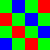
'Interpolatu pixelak' efektuak fotograma-tasa oso baxua duen muntaiaren iturburutik
fotograma-tasa handiago baten ilusioa sortzen saiatzen da denboran zehar batez besteko
fotogramak kalkulatuz. Sarrerako bi fotogramen batez bestekoa lantzen du irteerako
fotograma bakoitzeko. Sarrerako fotogramak denbora desberdinean daude, sarrerako
fotogramen artean dauden irteerako fotograma guztiak disolbatuz. Bi modu daude
sarrerako fotogramak zehazteko. Proiektuaren fotograma-tasa baino baxuagoa den
sarrerako fotograma-tasa bat zehaz dezakezu. Honen ondorioz, sarrerako fotogramak
bitarte erregularretan hartuko dira.
Gako-fotogramen kokalekuak zehatz ditzakezu, sarrerako fotogramen posizio gisa.
Modu honetan, sarrerako fotograma-tasa gisa erabiltzen da irteerako fotograma-tasa,
eta nonnahi gako-fotogramak sor ditzakezu sarrerako fotograma bat zehazteko.
13.4.28 Alderantzikatu Telezinema

Desgurutzelarkatzeko tresnarik eraginkorrena da efektu hau, bideo batetik
filma batera transferitutako muntaia denean. Hemen filma 24 f/s tasatik
60 f/s tasara bihurtu da. Gero, 60 f/s murriztu egin da 30 f/s tasara
lerro bakoitiak eta bikoitiak erauziz eta lerroak gurutzelarkatuz.
IVTC (alderantzikatu telezinema) efektua modu nagusienetarikoa da
gurutzelarkatutako bideoa bihurtzeko bideo progresiboan. Gurutzelarkatzearen
hiru eredu desegiten ditu.
A AB BC CD D
AB CD CD DE EF
Automatikoa
Lehenbiziko bi aukerek eredu finkoak dira, eta ereduaren despl.
eta Eremu bakoitiak aurrenik parametroek eragiten diete.
Azken aukerak lerroen hainbat konbinazio sortzen ditu fotograma bakoitzarentzako,
eta konbinazio progresiboena hartzen du. Indarraren indarrezko algoritmo bat da.
Teknika hau ez da eredu batean oinarritzen, ez beste teknika batzuk egiten duten bezala,
eta ez da horien bezain suntsitazilea. Baina denboralizazioan nahasmendua sortzen du
fotograma-tasaren murrizketaren faltagatik. Denboralizazioa hobetzeko helburuarekin
'Alderantzikatu telezinema' efektuari 'dezimala' efektuak jarraitu behar dio.
13.4.29 Alderantzikatu bideoa

Bideoaren pista baten koloreak alderantzikatzen ditu. Kanaletariko bakoitza
alderantzika daiteke: gorria, berdea, urdina eta alfa.
13.4.30 Lausotze lineala
Lausotzeak hiru estilo ditu: lineala, erradiala eta zooma
Honako parametroak ditu:
- Luzera
Jatorrizko irudiaren eta amaierako lausotze urratsaren arteko diferentzia.
- Angelua
Mugimenduaren angelua, lausotze linealean erabiltzeko.
- Urratsak
Lausotzearen urrats kopurua.
- Kanalak
Zein kanal lausotuko diren.
13.4.31 Zuzeneko bideoa

Efektu honek bideoa irakurtzen du zuzenean sarrerako kaptura-txarteletik.
Pistan dagoen edozein bideo ordezten duenez, pista huts bati aplikatu ohi zaio.
Kaptura-txartelaren konfigurazioa grabazioko hobespenetatik hartzen da. Joan
Ezarpenak -> hobespenak -> Grabazioa menura kaptura-txartela konfiguratzeko.
Joan Bideo-sarrera ataleko Kontrolatzailea eremura. Eremu horretan
Video4Linux2 edo IEC 61883 hautatu. Beste bideo-kontrolatzaileak ez dira
probatu 'Zuzeneko bideoa' efektuarekin, eta baliteke ez funtzionatzea.
Denbora-lerroak erabil dezakeen formatuan ezarri behar dira
Formatua eta Bideoa. Fitxategi-formatuak Quicktime
Linux-entzako izan behar du, eta bideoaren grabazioa gaitu behar da. Egin klik
 giltzan bideo-konpresioa konfiguratzeko.
giltzan bideo-konpresioa konfiguratzeko.
Bideo-konpresioa grabazioaren kontrolatzailearen mende dago. Video4Linux2
bideo-kontrolatzailearekin konpresioa JPEG A mugimendua izan behar da.
IEC 61883 bideo-kontrolatzilearen kasuan konpresioa DV izan behar da.
Honela, denbora-lerroak erabil dezakeen kolore-ereduan irteera sortzea uzten dio
kontrolatzaileari.
Txartel batzuk kolorearen eta kanalaren ezarpenak eskaintzen dituzte.
'Zuzeneko bideoa' efektuak Bideo-sarrera leihoan ezarritako balioetatik
hartzen ditu kolorearen ezarpenak. Joan Fitxategia -> Grabatu menura
grabazioaren eta bideo-sarreraren leihoak bistaratzeko.
Bideo-sarrera leihoan ezarritako balioak erabiliko ditu Zuzeneko bideoa
efektuak. Kaptura-txartelak onartzen dituen edozein kanal Bideo-sarrera leihoan
konfiguratu behar da, Zuzeneko bideoa efektuak erabiltzeko kanal berdinak.
Bideoaren grabazioa konfiguratuta dagoela, nabarmendu eskualde horizontala
bideoaren pistan, edo definitu sarrerako eta irteerako puntuak. Gero, jaregin
'Zuzeneko bideoa' efektua eskualde horretan. Jaregin beste efektuak 'Zuzeneko bideoa'
efektuaren ondoren, zuzeneko bideoa denbora errealean prozesatzeko.
Emaitza hoberena lortzeko, OpenGL eta GL itzalduraren hizkuntza onartzen duen
bideo-txartela erabiltzea gomendatzen da. Joan Ezarpenak -> Hobespenak -> Erreproduzkioa
-> Bideo-irteera menura OpenGL kontrolatzailea gaitzeko.
Oharra: 'Zuzeneko bideoa' efektu bakarra egon daiteke denbora-lerroko aldi bakoitzean.
Ezin da pista bat baino gehiagokin partekatu.
13.4.32 Bideoa begiztan

Bideoaren zati bat behin eta berriz errepika dezake zati horretan begizta
efektua jareginez. Ezarpenak -> Erreproduzitu begiztan aukeraren alderantziz,
begizta efektuak errenda dezake. Erreproduzitu begiztan aukerak bideoa muntatzean
bideoa ikusteko modu bat da, baina ez du amaierako irteeran errendatzen. Begizta
efektuak ordea, amaierako irteeran errendatzen du. Begizta efektua asko erabiltzen da
eskualde laburretan.
Begizta efektuak aukera bat du: begiztan sartuko den fotograma
edo lagin kopurua. Aukera honek begiztan egongo den eskualdearen luzera
zehazten du, efektuaren hasieratik edo azkeneko gako-fotogramatik hasiz.
Eskualdea errepikatu egiten da behin eta berriro efektuaren iraupenean zehar.
Begizta efektuan gako-fotograma bat aurkitzen den bakoitzean, aurkitutako
gako-fotograma hori errepikatuko den eskualdearen hasieran bihurtzen da.
Hainbat gako-fotograma jarraian jartzean, hainbat eskualde errepikatzea
eragitun da. Gako-fotograma bakarra jartzean, gako-fotograma horren ondoren dagoen
eskualdea behin eta berriro errepikatuko da begiztaren efektuaren luzeran.
Efektuaren amaierak hasierako fotogramak har ditzake, gako-fotograma efektuaren
amaieratik gertu badago.
13.4.33 Mugimendua

Mugimenduaren aztarnaria aplikazio oso bat da bere baitan. Efektu honek
bi mugimendu mota aztertzen ditu: translazioa eta biraketa. Bien jarraipena batera
egin dezake, edo bakarrarena nahi izanez gero. Pixelaren 1/4-aren jarraipena
egin dezake, edo pixel bakar batean. Mugimendua estabiliza dezake, edo baita ere
pistak batek beste baten mugimenduari jarrai eraztea.
Nahiz eta mugimenduaren aztarnaria denbora errealeko efektu gisa aplikatu,
errendatu izan ohi da emaitza erabilgarriak lortzeko. Errendatzeak denbora asko
eskatzen du, batizpat mugimendua detektatzeko.
Fotogramaren eskualde bat erabiltzen du mugimenduaren aztarnariak eskualdearen
jarraipena lantzeko. Efektu honek eskualde hau 2 fotogramen artean konparatzen
du mugimendua kalkulatzeko. Eskualde hau pantailako edozein lekutan defini
daiteke. Bi fotograma arteko mugimendua kalkulatutakoan, gauza batzuk egin
daitezke mugimenduaren bektorearekin. Erabiltzailearen balio batekin eskala daiteke
eta gehienezko barruti batera lotu daiteke. Bota daiteke, edo mugimenduko beste
bektore guztiekin pilatu uneko posizioa lortzeko.
Denbora aurrezteko, mugimenduaren aztarnariaren emaitza gorde daiteke beste batean erabiltzeko,
edo aurrez landutako kalkulu bat berreskuratu, edo baztertu.
Pistaren aztarnariak bi pistekin lan egin dezake: geruza nagusia eta helburuko
geruza. Geruza nagusian lantzen da bi fotogramen arteko konparazioa. Helburuko
geruzan kalkuluaren emaitza aplikatzen da, nagusian mugimendua jarraitzeko edo
konpentsatzeko (zuzentzeko).
Mugimenduaren jarraipenaren konplexotatsuna nahikoa da enpresa osoei jan emateko eta garatzaileak
arlo horretan bakarrik espezializatzeko. Cinelerra-ren garapenaren jarraitzailea ez da munduan
dagoen kategoria maila altueneko bezain sofiztikatua, baina nahikoa da kamera digitalekin
egindako pelikulak leuntzeko.
Mugimenduaren aztarnariaren parametroak honakoak dira:
- Pistaren translazioa
Translazioaren eragiketak gaitzen ditu. Mugimenduaren aztanariak X eta Y
mugimenduen jarraipena aztertzen du geruza nagusian, eta X eta Y mugimenduak doitzen
ditu helburuko geruzan.
- Translazioaren bloke-tamaina
Translazioaren eragiketetan bloke bat inguruko bloke kopuru batekin konpara daiteke,
desberdintasun gutxiena duena aurkitzeko. Parametro honek blokearen tamaina
ezartzen du bilaketan erabiltzeko.
- Translazioaren bilaketa-erradioa
Arearen tamaina translazioaren blokea hor bilatzeko.
- Translazioaren bilaketa-urratsak
Hoberenik hoberenean, bilaketako eragiketak translazioaren blokea bilaketa-erradioko pixel
bakoitzarekin konparatu beharko luke. Eragiketa hau bizkortzeko posizio posible guztien azpimultzo
baten lantzen da bilaketa. Aurreneko bilaketa hau amaitutakoan, eta gutxi gorabeherako emaitz batekin,
bilaketako area murrizten da eta berriro aztertzen da hautatutako area berria. Urrats hauek
errepikatu egiten dira 1/4 pixeleko doitasunarekin mugimendua aurkitu arte.
- X, Y blokea
Koordenatu hauek translazioaren blokearen zentrua zehazten dute, irudiaren
zabaleraren eta altueraren ehunekotan oinarrituz. Beti ikusgai den irudiaren
zati izan behar du blokearen zentruak.
- Geh. desplazamendu absolutua
Mugimenduaren aztarnariak detektatutako mugimendu kopurua mugagabea da
parametro hau 100 balioarekin ezartzen bada. 100 balioaren azpitik,
irudiaren tamainaren ehuneko horrek mugatuko du mugimenduaren gehienezko kopurua.
- Jaulkipen abiadura
Fotograma bakoitzean detektatutako mugimendua pilatu daiteke mugimendu absolutuaren
bektorea osatzeko. Jaulkipenaren abiadura ("settling speed") 100 bada, bektorea dagoen
bezala gehituko zaio hurrengo fotogramari. Jaulkipenaren abiadura 100 baino txikiagoa bada,
jaulkipen abiadurarekiko proportzionalki gutxiagotuko da bektorea hurrengo fotogramari
gehitu aurretik.
- Pistaren biraketa
Biraketako eragiketak gaitzen ditu. Mugimenduaren aztarnariak geruza nagusian gertatutako
biraketa kalkulatzen du, eta helburuko pistan doitzen du.
- Biraketaren bloke-tamaina
Biraketako eragiketetan bloke bakar bat konparatzen da tamaina berdineko beste blokeekin,
bakoitza angelu desberdin batekin biratuta. Parametro honek biraketaren blokearen tamaina
zehazten du.
- Biraketaren bilaketa-erradioa
Sistemak detekta dezakeen biraketaren gehienezko angelua da (jatorrizko fotogramarekiko
biraketa erlatiboa). Baliozko biraketak erlojuaren norantzakoan biratutako angelutik
aurkakora biratutako angeluraino izan daitezke. Ondorioz, biraketa bilatzeko erradioa
eskaneatutako angeluaren erdia da.
- Biraketaren bilaketa-urratsak
Hoberenik hoberenean, angelu posible bakoitza egiaztatu beharko litzateke
biraketaren balioa doitasunez aurkitzeko. Bilaketaren prozesua bizkortze arren,
bilaketaren erradioa angelu finitu batzuetan zatitzen da, eta angelu horiek
jatorrizko fotogramarekin konparatzen dira. Gero, bilaketaren angelua murrizten da,
eta angelu kopuru berdinean zatitzen da, doitasuna ahalik eta altuena izan arte.
Normalean, nahikoa izaten da bilaketaren erradioaren gradu bateko urratsarekin.
Sistemak bilaketa bi norabideetan lantzen duenez (erlojuaren norantzan eta aurkako
norantzan), benetan bi urrats behar dira bilaketaren erradioko gradu bakoitzarentzako
eta horrela barruti osoan bilaketa osatzeko.
- Marraztu bektoreak
Translazioa gaituta dagoenean, bi kutxa marrazten dira fotograman. Kutxa batek
translazioaren blokea adierazten du. Beste kutxak, translazio-kutxatik kanpo,
translazioaren bilaketaren erradioaren zabalgunea adierazten du. Kutxa hauen
zentruan gezi bat dago, bi fotograma nagusien arteko translazioa erakusten du.
Biraketa gaitzen denean, biraketaren blokearen tamainako kutxa bakarra marrazten da.
Kutxa hau biratuta marrazten da, detektatutako biraketaren graduaren arabera.
- Fotograma bakarraren jarraipena
Aukera hau erabiltzean, hasierako fotograma bakarraren eta txertatzeko puntupean
dagoen uneko fotogramaren arteko mugimendua kalkulatzen da. Hasierako fotograma
Fotograma zenbakia eremuan zehazten da. Mugimendu absolutuaren bektore gisa
interpretatzen da honela kalkulatutako mugimendua. Fotograma bakoitzaren
mugimendu absolutuaren bektoreak aurreko fotogramaren mugimendu absolutuaren
bektorea ordezten du. Jaulkipenaren abiadurak ez du eraginik bektore honetan,
ez baitu aurreko mugimenduaren bektorerik. Erreprodukzioa denbora-lerroko
edozein lekutan has daiteke, aurreko emaitzekiko mendekotasunik ez baitu.
- Aurreko fotogramaren jarraipena
Aurreko fotogramaren eta unekoaren arteko mugimendu erlatiboa soilik kalkulatzen da.
Mugimendu hau mugimendu absolutu bati gehitzen zaio, sekuentziaren hasieratik
uneko posiziorarte pilatutako mugimendua ezagutzeko. Fotograma bakoitza honela
prozesatu ondoren, blokearen posizioa desplazatzen da irudiaren eskualde berdina
estaltzeko. Erreprodukzioa Mugimendua efektuaren hasieratik abiarazi behar da, emaitza
zuzena izateko, beharrezko mugimenduaren bektoreak honela soilik kalkula daitekeelako.
- Aurreko fotograma, bloke berdina
Kamera digital batekin grabatutako dardara duten filmeak egonkortzeko aukera oso
erabilgarria da hau. Modu honekin, aurreko eta uneko fotogramen arteko mugimendua
kalkulatzen da. Baina blokearen posizioa doitu beharrean (irudiaren kokaleku berria
adierazteko), 'Aurreko fotogramaren jarraipena' aukeran bezala, blokearen posizioa
ez da aldatzen fotograma batetik bestera. Hori dela eta,
fotograma bakoitzean eskualde berri bat konparatzen da.
- Geruza nagusia
Hasierako fotograma eskaintzen duen pista zehazten du, mugimenduaren kalkulua egiteko.
Behean bada, efektu hau partekatzen duten pista guztien azpikoa da geruza nagusia,
eta efektu hau partekatzen duten pista guztien gainekoa izango da helburuko pista.
- Kalkulua
Mugimendua kalkulatu behar duen edo ez zehazten du, eta diskoan gorde behar den baita ere.
Ez kalkulatu aukerak mugimenduaren kalkulua saihesten du. Kalkulatu berriro
aukerak fotograma bat errendatzen den bakoitzean kalkulu berria lantzen du. Gorde
aukerak kalkulua beti lantzeaz gain, disko gogorrean gordetzen du bere emaitza.
Kargatu aukerak aurrez landutako mugimenduaren kalkulua (disko gogorrean gordeta
dagoena) kargatzen du. Disko gogorrean aurrez landutako kalkulurik ez balego,
kalkulu berri bat landuko litzateke.
- Ekintza
Mugimenduaren bektorea ezagutzen denean, zehaztu egin behar da helburuko geruzak mugituko
den helburuko bektoreari jarraituz, edo alderantzizko norantzan mugituko den.
Ez egin ezer aukerak ezer ez du egiten eta helburuko geruza ez du ikutzen.
Pista... aukerak helburuko geruza mugitzen du geruza nagusiaren kopuru berdinarekin.
Oso erabilgarria izaten da tituluak eta objektuak fotograman mugitzeko, adibidez.
Egonkortu... aukerak helburuko geruza mugitzen du bektore nagusiaren aurkako norantzan,
eta oso erabilgarria izan ohi da fotogramaren objektu bat egonkortzeko. Mugimenduaren
eragiketek pixel edo azpipixeletako doitasuna eduki dezakete, hautatutako ekintzaren arabera.
13.4.33.1 Mugimenduaren jarraipenaren sekretuak
Efektu oso motela denez, metodo bat dago efektu honen gehienezko errendimendua
lortzeko. Lehenbizi, mugimenduaren jarraipena aplikatuko zaion pistaren erreprodukzioa
desgaitu egin behar da. Gero, mugimendua duen bideoaren eskualde bati gehitu efektua.
Atzera eraman txertazeko puntua, eskualdea hasten den posiziorarte. Hautatu Ekintza
eremuan Ez egin ezer. Ezarri Kalkulua eremuan Ez kalkulatu.
Gaitu Marraztu bektoreak. Gero, gaitu pistaren erreprodukzioa mugimenduaren
jarraipenaren areak ikusteko.
Gaitu translazioaren mugimendua edo biraketaren mugimendua bektorea, jarraipena
lantzeko. Konposaketa-leihoa gainbegiratuz eta X, Y blokea ezarpenak doituz,
jarraipena egitea nahi duzun irudiaren zatian zentratu blokea. Azkenik, ezarri
bilaketaren erradioa, blokearen tamaina eta blokearen koordenatuak translazioarentzako
eta biraketarentzako.
Behin konfiguratutakoan, ezarri kalkulua Gorde koordenatuak '/tmp'-en elementuarekin,
eta egiaztatu mugimenduaren jarraipena funtzionatzen duela. Ondoren gorde mugimenduko
bektoreak. Hau egin ostean, desgaitu pistaren erreprodukzioa, desgaitu Marraztu bektoreak,
helburuko geruzaren gainean landu beharreko ekintza ezarri, eta aldatu kalkulua
Kargatu koordenatuak elementura. Azkenik, gaitu berriro pistaren erreprodukzioa.
Hasierako fotograma bakarra erabiltzean, sekuentzia bateko mugimendua kalkulatzeko,
hasierako fotogramak beste fotogramekiko mugimendu erlatibo gutxiena duena izan beharko luke.
Normalean ez da 0. fotograma izaten, sekuentziaren erdialdeko fotograma bat baizik.
Honela, bilaketaren erradioa filmaren erdiraino soilik zabalduko da, gutxi gorabehera.
Mugimenduaren jarraipena errendategi batean erabiltzen bada, Gorde koordenatuak eta
aurreko fotograma moduak ez dute funtzionatuko. 'Gorde koordenatuak' eragiketaren emaitzak
errendategiko nodoen disko gogorretan gordetzen dira, baina ez nodo maisuan. Ondorioz,
nodo hauetan etorkizuneko errendatze-eragiketek fotograma desberdinak prozesatuko
dituzte, eta okerreko koordenatuak irakurriko dituzte nodoen fitxategietatik.
Errendategi bateko nodo bakoitzak denbora-lerroaren zati bat bistaratzeak ere
aurreko fotogramak funtzionatzea saihesten dute, 0. fotograman hasitako
mugimendu absolutuaren bektorea kalkulatzea behar dutelako.
13.4.33.2 2 urratsetako jarraipena
Arestian aipatutako metodoa bi urratsetako jarraipenaren metodoa da. Urrats bat
mugimenduaren bektoreak kalkulatzeko erabiltzen da, beste berriz, bektore horiek
muntaiari aplikatzeko. Urrats bakarrean egitea azkarragoa da, mugimenduaren bektoreen
kalkuluaren erroreak azkarrago aurkitzen direlako.
Gainera, kolore-eredu ez hain zorrotza erabiltzea uzten dio mugimenduaren jarraipenari,
RGB888 bezalakoa (GBU888), aurreneko urratsean, eta beste bat osatuagoa (koma mugikorreko GBU)
bigarrenean. Aurreneko urratsak (bilaketak) bigarrenak baino gehiago irauten du.
Metodo hau ordea, ez da eraginkorra sekuentzia oso luzeetan, errore batzuk onar
daitezkeenak eta irudiaren kalitatea zaratatsua denean. Adibidez, kamera digital
batekin grabatutako muntaiaren egonkortasunean.
Beste metodo bat dago, askoz ere motelagoa dana: mugimenduaren bektoreak aldi berean
kalkulatzea eta aplikatzea. Metodo honek pista bat erabil dezake mugimenduaren
bektorea kalkulatzeko, eta beste pista bat ekintzen helburuko pista bezala.
Metodo hau oso erabilgarria da sekuentzia luzeetan, non errore gradu bat onargarria den.
13.4.33.3 Erabili lausotzea jarraipena hobetzeko
Oso zaratatsua den edo gurutzelarkatua dagoen muntai batean mugimenduaren jarraipearen
doitasuna hobetu daiteke lausotzearen efektu bat erabiliz jarraipenaren aurretik.
Horretarako, mugimenduaren bektoreak pistaren urrats batean gorde daitezke,
eta desgaitu lausotzea ekintzaren urratsean, edo lausotzearen efektua
geruza nagusian aplikatuz.
13.4.33.4 Erabili histograma jarraipena hobetzeko
Mugimenduaren jarraipenaren aurretik histograma bat erabili ohi da ia beti, zarata
pixel ilunetara bihurtzeko. Horretarako gorde mugimenduaren bektoreak pistaren
urratsean eta desgaitu histograma ekintzaren urratsean, edo aplikatu histograma
geruza nagusian.
13.4.33.5 Jarraipena ekintzan
Lehenbizi, gehitu mugimenduaren efektua pista bati. Arrastatu baliabideen leihotik
eta jaregin zuzenean bideoaren gainera (Cinelerra-ren leiho nagusian). Honelako
zerbait ikusi ebharko zenuke:

Ondoren, saguaren eskuineko botoiarekin klik egin denbora-lerroko mugimenduaren
efektuaren markatzailearen gainean, mugimenduaren jarraipenaren leihoa bistaratzeko:

Konposaketa-leihoari begiratzen badiozu, bideoaren gainean kutxa berri batzuk
agertzen dira. Garrantzitsuak dira mugimenduaren jarraipena kontrolatzeko.
Begiratu dezagun funtzionatzen ari denean nolako itxura duen:
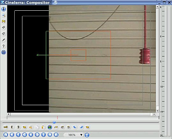
Mugimenduaren jarraipenak objektuaren aztarna nola galtzen ari den erakusten
du irudi honek, bilaketako leihoa txikiegia delako. Honi buruz beranduago mintzatuko gara.
Orain ikus dezagun sarrera txiki bat:
- Aztarnariaren helburua erdinko kutxa txikia da.
- Tarteko kutxa handia aztarnariaren bilaketa-barrutia da. Mugimendua gertatzen den
barruti osoa eduki beharko luke.
- Adibide honetan, esekita dagoen heldulekuaren jarraipena egiten saiatzen ari gara.
Huts egin dugu bideoaren fotograma honetan, heldulekua fotogramaren zentrutik oso
urrun dagoelako.
- Ezkerrerantz zuzentzen duen bektoreak mugimenduaren aztarnariak helburua bilatzen
ari dela adierazten du. Geroago azalduko dugu.
Joan bideoaren kliparen hasierara
Ziurtatu mugimenduaren aztarnariaren elkarrizketa-koadroa irekita dagoela
Begiratu konposaketa-leihoari
Hasi honako lau helduleku doitzen:

Ziurtatu 'Pistaren translazioa' gaituta dagoela, eta 'Pistaren biraketa' desgaituta
Hasi bigarren heldulekuarekin, Translazioaren bloke-tamaina, eta biratu zer
aldatzen den ikusteko. Ohartu bi koadroak tamainaz aldaten direla. Bereziki,
begiratu barneko koadro txikiari. Doitu ezazu helburuaren tamainara (helburuari
dakogion mugimenduaren jarraipena lantzeko). Ez larritu oraindik objektua ez badu estaltzen.
Joan hirugarren eta laugarren heldulekuetara, X eta Y blokeak. Erabili helduleku hauek
helburua-hautatzailea helburuaren gainean jartzeko.
Azkenik, erabili goiko heldulekua, Translazioaren bilaketa-erradioa. Zabaldu ezazu
behar adina, fotogramaren barruti osoa helburua estaltzeko (adibidean biradera gorria).
Hau da, ziurtatu esekitako biradera mugituko den barruti osoa hartzen duela.
Jatorrizko argazkiari begiratzen badiozu, bilaketaren erradioa txikiegia zen, eta
helburua bertatik kanpora mugituta zegoen. Hau ez gertatzeko, denbora-lerroa
erreproduzitu, eta ikusi emaitzak (ordenagailuak ahalmenik badu emaitzak denbora
errealean erakusteko bederen), edo errendatu eta bideoaren irteerako helburuaren
(biradera gorria) posizioak aztertu.
Bideoaren aurreneko fotogramak honakoaren antzekoa izan beharko luke:

Irudi honek xehetasun asko erakusten ditu. Ikusi marko txikia biraderan
zentratuta dagoela, eta larriki inguratzen duela. Horrela egoteko
bigarren, hirugarren eta laugarren heldulekuak doitu dira. Gainera,
filmearen iraupenean zehar, biradera gorriak osatzen duen pendulu-mugimendu erabat
estaltzen duela kanpoko kutxak.
Azkenik, beharrezkoak diren beste ezarpen batzuk daude efektua ikusteko:

- Marraztu bektoreak Aukera hau gaituta egonez gero, bektoreak
eta kutxak errendatutako bideoan agertuko dira. Ziurtatu aukera hau
desgaituta dagoela, mugimenduaren bektoreak eta kutxak amaierako filmean
agertzea saihesteko.
- Fotograma bakarraren jarraipena Adibide honetan, 0 balioko
fotograma zenbakiarekin agertzen da (hau da, aurreneko fotograma).
- Geruza nagusia Efektua bi pisten artean partekatu bada,
aukera honek mugimenduaren jarraipena zein pistetan landuko den
(geruza nagusia) zehazten du, eta emaitzeko mugimenduaren bektoreak zeini
eragingo dioten (helburuko geruza). Efektua ez badago partekatuta,
orduan geruza nagusia eta helburuko geruza pista berdina izango da.
- Ekintza Hautatu Egonkortzeko aukera errendatutako bideoak
helburuaren mugimenduari jarraitzeko. Hautatu 'Pista'-ren aukera bat
mugimenduaren jarraipena lantzeko, baina bideoa doitu gabe.
- Kalkulua
- Ez kalkulatu hautatu aukera hau bideoaren doiketa desgaitzeko.
- Kalkulatu berriro Mugimenduaren jarraipena landu eta bideoa eguneratzen du.
- GOrde eta kargatu Translazioko edota biraketako bektoreak (absolutuak edo erlatiboak)
fitxategietan gorde edo fitxategietatik kargatu egiten ditu. Fotograma bakoitzak
fitxategi bereizi (bektorea daukana) bat du /tmp direktorioan.
13.4.33.6 Egonkortasuna ekintzan
Atal honetan bideo bat nola egonkortzen den azalduko da. Oso beharrezkoa izaten
da kasu askotan, adibidez mugitzen ari den ibilgailu batetik grabatutako bideoan.
Aurrenik hautatu denbora-lerroan egonkortzea nahi den muntaiaren zatia, sarrerako
eta irteerako puntuak erabiliz. Ondoren, aplikatu mugimenduaren efektua bideoaren
zati horri.
Hautatu "Aurreko fotograma, bloke berdina" aukera. Kamera digital batekin
hartutako dardara duen muntaia egonkortzeko gomendatutako aukera da. Bere
helburua ez bada mugitzen ari den objektu baten jarraipena egitea, efektuaren
iraupen osoan blokea posizio berdinean egotea ziurtatzea baizik.
Handitu blokea eta hautatu fotogramaren tamainaren ia erdia. Hautatu
"Egonkortu azpipixelak" aukera: egonkortasun xehetuena eskaintzen du.
Gutxiagotu "Geh. desplazamendu absolutua" balioa egonkortasunaren anplitutea
mugatzeko. Normalean bideoaren leku batzuetan egokiagoa da egonkortasun
inperfektua lortzea, filmearen alboetan ertz beltz handi bat agertzea baino
(filmaren oszilazioa handiagoa denean). Ezarri "Translazioaren bilaketa-urratsak"
128 balioarekin. Balio hori handitzeak ez du emaitz hobeagorik eskainiko,
eta errendatzeko behar den denbora asko igotzen du. Ziurtatu "Marraztu bektoreak"
gaituta dagoela, eta mugimenduaren efektua aplikatu zaion bideoaren zatia
errendizatu .
Emaitza egokia bada, desgaitu "Marraztu bektoreak" aukera. Blokea eta bektoreak
ez dira bideoan gehiago marraztuko. Gero, errendatu filmea `.dv' formatuko
fitxategi batean, eta inportatu zure proiektura.
Ikus ahal izango duzunez, bideoa egonkortu egin da, baina ertz beltzak ageri
dira fotogramaren alboetan. Orain beharrezkoa da zooma handitzea eta gako-fotogramak
definitzea proiektorea pantailan zehar mugitzeko (eta bide batez ertz beltzak
kentzeko). Jatorrizko muntaiak zenbat eta dardara gehiago izan, orduan eta
gehiago handitu beharko da zooma ertz beltzak kentzeko. Emaitzik onena HDV
formatuko muntaiarekin lortzen da, DV formatuarekin baino hobeto.
13.4.34 Mugimendu-lausotzea
FINKATZEKO
13.4.35 Olioz pintatzea

Efektu honek bideoa olioz pintatuta egon balitz bezala egiten du. Erradioa
graduatzailearekin kontrola daiteke. Koloreen intentsitatea hauta daiteke
aukera gisa.
13.4.36 Gainjarri bideoa
FINKATZEKO
13.4.37 Perspektiba

Perpektibaren efektuarekin objektu baten perpektiba alda daiteke, eta oso
erabilgarria izaten da objektuak urrunean iraungitzen ari balira bezalako
ilusioa sortzeko.
13.4.38 Polarra

Bideoa modu bitxi batean okertu eta desitxuratzen ditu Polarra efektuak.
Matematikoki, filmea koordenatu polarretatik koordenatu cartesiarretara
bihurtzen du, edo alderantziz.
13.4.39 GBU-601

Bideo analogikoen edo MPEG-en (DVDak barne) irteeran, G, B eta U kanalen
gehienezko barrutia [16, 235] (8 bit) da. YUV-en kasuan, intentsitatearen
(Y) gehienezko barrutia [16, 235] (8 bit) da. Barruti hau grisaren
mailari dagokio, %6-tik %92-rarte. Errendatzean, barrutitik kanpo dauden
balioak moztu egingo dira muga hauetara.
MPEG errendatzeko, GBU-601 efektua gehitu intentsitatearen eskala
osoa (%0-%100) erabiltzen duten bideoaren pista guztiei, eta gaitu
GBU -> 601 konpresioa.
GBU-601 efektuaren ondoren aplikatu Bideoaren esparrua efektua,
GBU-601 efektuak zure barruti dinamikoari nola eragiten dion ikusteko.
See section Bideoaren esparrua.
(Errendatutako MPEG-ek zein itxura edukiko duen GBU-601 konpresiorik
gabe aurrikusteko, gaitu 601 -> GBU hedapena. Kontrastea nabarmenki
handiagotzen dela ikusiko duzu.)
Nahiz eta GBU-601 efektuak bideoaren pisten kontrastea gutxiagotu,
MPEG erreproduzitzean kontrastea leheneratuko da.
13.4.40 Lausotze erradiala

Zurrunbilo formako lausoa sortzen du, kamera biratzen ari balitz bezala
simulatuz. Lausoaren kokalekua, mota eta kalitatea alda dezakezu.
13.4.41 Aldatu fotograma-tasa - RT

"Aldatu fotograma-tasa - RT" efektuak bideoaren sekuentzia bateko fotograma
kopurua aldatzen du zuzenean denbora-lerrotik. Lan egiteko bi modu ditu,
elkarrizketa-koadroko 2 txandakariek zehaztuta..
Tiratu moduak bere irteerako uneko fotogramaren zenbakia eskalaren faktorearekin
bidertzen du, bere sarreratik irakurri behar duen fotograma kalkulatzeko. Bere uneko
irteerako fotograma 55garrena bada, eta eskalaren faktorea 2, orduan emaitza
110garren fotograma irakurriko du bere sarreratik. Ondorioz, 'Tiratu' efektuak
bideoaren iraupena luzatzen du eskalaren faktorearen alderantzikoarekin. Eskalaren
faktorea 1 baino handiagoa bada, jatorrizko sekuentzia baino lehenago amaituko
da irteera denbora-lerroan. Faktorea 1 baino txikiagoa da, jatorrizko sekuentzia
baino beranduago amaituko da irteera denbora-lerroan. "Aldatu fotograma-tasa - RT"
efektua luzatu egin behar da eskalaren faktoreari egokitu arte. Bere luzera aldatzeko
efektuaren amaierako puntua arrastatu.
'Tiratu' moduak sarrerako fotogramaren zenbakia aldatzen duen arren, ez du sarrerako
fotograma-tasa aldatzen. "Aldatu fotograma-tasa - RT" baino lehenagoko efektuek
"Aldatu fotograma-tasa - RT" efektuaren fotograma-tasa berdina dutela suposatzen
dute.
"Aldatu fotograma-tasa - RT" efektua, 'tiratu' moduan, Kamera azkarraren
efektu gisa erabil daiteke. Horretarako eskalaren faktorea 1 baino handiagoa
izan behar du.
Kamera motalaren efektua lortzeko, erabili "Aldatu fotograma-tasa - RT" efektua
'tiratu' moduarekin, eta eskalaren faktorea 1 baino txikiagoarekin. Adibidez, demagun
filme bateko klip bat kamera motelean jartzea nahi duzula. Klip hau 33.792 segundoan
hasten dela, eta 39.765 segundoan amaitu. Beraz, bere iraupena 5.973 segundotakoa da.
Bere jatorrizko abiaduraren 4/10-rekin erreproduzitzea nahi da. Kliparen luzera
erreprodukzioaren abiadurarekin zatituz (5.973/0.4) emaitzeko kliparen amaierako
luzera lortzen da: 14.9325 segundo. Kliparen hasieran sarrerako puntua sor daiteke
(33.792 segundoan), eta irteerako puntua 14.9325 segundo beranduago, 48.7245
(33.792 + 14.9325) posizioan. Ondoren, "Aldatu fotograma-tasa - RT" efektua
gehitzen zaio, gero 'tiratu' modua doitu eta eskalaren faktorea 0.4 balioarekin
ezarri. Azkenik, nahikoa da irteerako puntua sarrerako puntuarekin ordeztea,
eta hurrengo klipa kamera motelaren ondoren hastea, hau da, 48.7245 segundoan.
Baliabideen leihoan (Multimedia edo Klipak karpetan) saguaren eskuineko
botoiarekin klik eginez eta Informazioa aukera hautatuz kliparen
fotograma-tasa alda daiteke baita ere. Aurrenik zerrendatik elementurik ez
baduzu hautatzen, fotograma-tasaren balioa ezar dezakezu testu-eremuan.
Proiektuaren fotograma-tasarentzako fotograma egokiak hartuko ditu Cinelerra-k,
kamera azakarraren edo motelaren efektua automatikoki landuz.
Lagin-murrizketa ez du irteerako sekuentziaren iraupena aldatzen.
Irteerako fotograma-tasa eskalaren faktorearekin bidertzen du, sarreratik
irakurri behar duen fotograma-tasa aurkitzeko (zein abiadurarekin irakurri
behar dituen fotogramak efektuaren sarreran). Efektu honekin sarrerako
fotogramak irteeran kopiatzen dira, baina eskalak adierazitako abiadurarekin.
Ez du irteeraren iraupena aldatzen (sarrerakoaren berdina da). Eskalaren
faktoreak 0.5 balio badu, eta irteerako fotograma-tasa 30 f/s bada, orduan
15 fotograma segundoko erakutsiko dira eta sarreratik 15 fotograma irakurriko
dira segundoko. modu hau erabilgarria da baldin eta eskalaren faktorea 1
baino txikiagoa bada, hortik bere izena: ingelesez 'downsample', lagina
murriztea adierazten du.
Lagin-murrizketa moduak sarrerako fotograma-tasa aldatzen du, irakurri
beharreko fotograma kopuruaz gain. Hori dela eta, "Aldatu fotograma-tasa - RT"
efektuaren (Lagin-murrizketa moduarekin) aurretik dauden efektuek fotograma-tasa
desberdina ikusiko dute (efektu hau ez balego egongo zen tasarekin konparatuz).
Jatorrizko fotograma-tasa bider eskalaren faktoreak eragiketaren emaitza da
sarrerako fotograma-tasaren balioa. Eskalaren faktorea 2 bada, eta irteerako
fotograma-tasa 30 f/s bada, sarrerako fotograma-tasa 60 f/s izango da,
eta sarreran egongo den fotograma kopurua bikoiztu egingo da. Normalean
honek ez du eraginik edukitzen, hala ere efektu batuzk modu desberdin bateko
portaera izan dezakete fotograma-tasa altuekin.
13.4.42 Atzekoz aurrera bideoa

Edukia denbora errealean atzekoz aurrera erakuts daiteke denbora-lerroan.
Efektu hau ez da programaren nabigazioko kontrolekin filmea erreproduzitzearekin
nahastu behar. 'Atzekoz aurrera bideoa' efektuak erreprodukzioaren norantza
alderantzikatzen du, ez du nabigazioaren norabidea kontutan hartzen.
Atzekoz aurrera efektua aplikatuko zaion eskualdea efektuaren pistaren gaineko
kokapenak zehazten du, eta gero efektuan kokatutako gako-fotogramek. 'Atzekoz
aurrera bideoa' efektuak gaituta aukera du, gako-fotogramak erabiliko diren
edo ez adierazteko. Honek hainbat posibilitate eskaintzen ditu.
Gaitutako gako-fotograma bakoitza 'atzekoz aurrera' motako eskualde
berri bateko hasiera bezala tratatzen da, eta aurreko eskualdearen amaiera.
Gaituta dauden hainbat gako-fotogramek independenteak diren hainbat
'atzekoz aurrera' motako eskualdeak eskaintzen dituzte. Gaitutako gako-fotograma
baten atzetik desgaitutako gako-fotograma egonez gero, eskualde bat 'atzekoz
aurrera' egongo da, eta hurrengoa aurrera (erreprodukzio normala).
13.4.43 Biratu
 'Biratu' efektuak bideoa 90 gradutako gehikuntzarekin bira dezake, bideoa
alderantzikatu edo irauli.
'Biratu' efektuak bideoa 90 gradutako gehikuntzarekin bira dezake, bideoa
alderantzikatu edo irauli.
13.4.44 SVG (Inkscape)

FINKATZEKO
13.4.45 Eskala

FINKATZEKO
13.4.46 Aldi baterako hautapenaren batez bestekoa

Sekuentzia batean mugimendurik ez duten areak leuntzeko erabil daiteke plugin
hau. Pixel bakoitzaren kolorearen osagaiaren tarteko balioa fotograma kopuru
baten zehar kalkulatuz lantzen da leuntzea. Uneko fotogramaren kolorearen
balioaren eta tarteko balioaren arteko bai desbideraketa estandarra bai diferentzia
atalase baten azpitik badaude, orduan erabiliko da honela leundutako balioa.
Batez bestekoa eta desbideraketa tipikoa bidearen osagai bakoitzarentzako
kalkulatzen direnez, proiektuaren kolore-ereduaren mende egongo dira. Fotogramen
batez bestekoa eta desbideraketa tipikoa azter daitezke efektuaren elkarrizketa-koadroko
botoi egokia hautatuz.
Fotogramen batez bestekoa kalkulatzeko erabiltzen den eskualdea desplazamendu finkoarekin
edo 'Berrabiarazteko marka-sistema'-rekin zehazten da. Berrabiarazteko marka-sistema
batean gako-fotograma batzuk markatu egiten dira ataleko abiapuntu gisa. Atal bakoitzean
uneko fotogramaren inguruko fotogramak erabiltzen dira batez bestekoa kalkulatzeko,
atalaren hasierara edo amaierara gerturatzean ezik (kasu horietan batez bestekoa kalkulatzeko
hasierako edo amaierako N fotograma erabiltzen baitira).
Ohizko erabilera:
Leuntzeko fotograma kopuru bat hautatzea nahi baduzu (bere batez bestekoa kalkulatzeko):
- Sartu zentzuzko fotograma kopurua batez bestekoa kalkulatzeko (adib. 10)
- Hautatu Aldi baterako hautapenaren batez bestekoa metodoa eta sartu
1 eta 10 balioak Batez.best. atal. eta D.E. atal. (desbideraketa
estandarraren atalasea) hurrenez hurren. Balio hauekin pixel guztiek erabiliko
dute batez besteko balioa.
- Gaitu aurreneko osagaiaren maskara. Honela fotograma osoak osagai horren
kolorea eduki beharko luke.
- Desbideraketa tipikoaren (D.E. atal.) balioa piskanaka gutxiagotu. Hau
egitean batez bestekotik oso desberdinak diren eskualdeetan maskararen egoera
alderantzikatzen da. Jarraitu desbideraketaren atalasea gutxiagotzen, bideoaren
eskualde mugikaitzek alderantzikatutako maskara izan arte. Balio hau zarataren
atalasea bezala ezagutzen da, eta kameraren CCD-ak modu naturalean sortzen duen
zarata maila da.
- Errepikatu aurreko prozedimendua batez bestekoaren atalasea
(Batez.best. atal.) aurkitzeko.
- Kendu maskara
- Errepikatu hau kanal guztientzat
13.4.47 Enfokatu
FINKATZEKO
13.4.48 Gurutzelarkatze-desplazamendua

FINKATZEKO
13.4.49 Trukatu kanalak

FINKATZEKO
13.4.50 Atalasea

Irudia erabateko luminantzia bihurtzen du atalaseak. Atalasearen azpitik eta
gainetik dauden luminantziaren balioak beltzera bihurtzen dira, eta atalase
barruan dauden luminantziaren balioak zuri. Atalasea efektuaren elkarrizketa-koadroak
uneko fotogramaren luminantziaren balioen histograma erakusten du. Histograman
klik egin eta arrastatzean zurira bihurtzeko barrutia sortzen da. Maius+klik egitean
barruti honen ertza zabaltzen da. Atalasearen barrutiaren balioak testu-eremuan ere
zehaz daitezke.
Efektu hau, bere oinarrian, luminantziaren jatorrizko gakoa da. Eragindako pista
gainean dagoen beste pista batekin bidertu daiteke, eta honela atalasearen barrutian
dauden bigarren pistako zatiak bakarrik bistaratuko dira.
13.4.51 Denboraren batez bestekoa
'Denboraren batez bestekoa' erabilpen asko dituen efektua da, mugimenduan
dauden irudimen handiko ereduak sortzeko erabiltzeaz gain. Bere benetako
zeregina irudi finkoetan zarata murriztea da. Nahikoa da bideo-kamera batekin
sujetu egonkorra 30 bat segundotan enkokatzea, fotograma horiek kapturatzea
eta denboraren batez besteko efektua aplikatzea kalitate oso altuko irudi bat
lortzeko. Koma mugikorreko kolore-ereduetan, denboraren batez bestekoak zarata asko
duten kameren barruti dinamikoa handiagotu dezakete.
Denboraren batez bestekoa efektuaren barruan pilatzeko bufferra eta zatitzaile
bat dago. Bufferrean fotograma kopuru bat gordetzen da, eta zatitzailearekin
zatitzen dira beraien batez bestekoa kalkulatzeko.
Denboraren batez bestekoak memoria kopuru ikaragarria behar dezakeenez, lehenbizi
pistaren erreprodukzioa desgaitzea gomendatzen da, gero efektua pistaren gainean
jaregin, nahi den fotograma kopuruaren denboraren batez bestekoa konfiguratu eta
berriro pistaren erreprodukzioa gaituz.
- Fotogramak batez bestean erabiltzeko
Bufferrean pilatuko den fotograma kopurua zehazten du. Integrazio oso handietan,
errazagoa da muntai-erabakien zerrenda (EDL) bat editatzea testu-editore batekin
eta bertan fotograma kopurua idaztea.
- Pilatu
Zatiketa burutu gabe fotogramak bufferretik irtetzea uzten du.
- Batez bestekoa
Bufferrean pilatutako edukia zatitzen da irteerara bidali aurretik. Emaitza
fotograma guztien batez bestekoa da.
- EDO inklusiboa
Bufferra ordezten du gardenak ez diren pixelekin. Mugimenduaren jarraipenarekin
konbinatuz, sekuentzia osoak konbinatzea uzten du panoramikoak sortzeko.
- Prozesatu fotograma berriro
Denboraren batez besteko efektuaren aurretik dagoen beste efektu bat doitzen bada,
honek ez du bufferra berriro irakurtzen aldaketen berri jakiteko. Aukera hau gaitzean
efektuari derrigortu egiten zaio bufferra berriro irakurtzea, beste efektuek aldaketak
sortzen dituztenean filmean.
- Desgaitu kenketa
Zehaztutako fotograma kopuruaren pilaketa adierazteko, denboraren batez bestekoak
aurreko fotograma guztiak memorian gordetzen ditu, eta filmea erreproduzitzean
kenketak egiten ditu. Egoera batean, portaera honek milaka fotograma pilatzera bultzatzen badu,
baliteke sistemak nahikoa memoria ez izatea. Kenketa desgaitzean, aurreko fotogramak
ez dira memorian gordetzen, eta soilik batez bestekoaren kalkulua egongo da
eraginda fotogramen zenbaketarekin.
13.4.52 AurreDenbora
Irudia desitxuratzen duen efektu bat da, honako artikuluan oinarritutako
efektua da:
http://www.vision.huji.ac.il/videowarping/HUJI-CSE-LTR-2005-10_etf-tr.pdf
13.4.53 Titulua

Nahiz eta posiblea izan Gimp aplikazioan sortutako testuak filmera inportatzea
eta konposatzea, Cinelerra-k berak 'Titulua' efektua eskinatzen du testua gehitzeko.
'Titulua' efektuak aukera estandarrak ditu: letra-tipoa, tamaina eta estiloa.
Letra-tipo egokiena orokorra da, Arial bezalakoa, tamaina handiarekin.
Justifikatu eragiketak testua fotograma osoarekiko justifikatzen du. Behin
testua justifikatutakoan, X eta Y desplazamenduak aplikatzen dira. Honela
testua justifikatzeaz gain, eskualde seguruan kokatzea uzten du.
Mugimendu motak testua lau norabidetariko batean animatzen du. Hau
erabiltzean testua desager daiteke. Ziurtatu abiadura zentzuzko balio
batekin dagoela (zalantzarik izanez gero, probatu 150 balioarekin),
eta aldatu txertatzeko puntua denbora-lerroan zehar, testua animaziotik
nahiko urrun egon arte (testua berriro agertu daikeenerarte).
Begizta aukerak testuari mugimendua ematen dio testua erabat desagertu
arte, eta berriro hasiko da. Aukera hau gabe (begizta), testua pantailatik irtetzean
ez da berriro sartuko.
Animazioaren abiadura zehazteko erabili Abiadura aukera (pixelak segundoko).
Zenbat eta handiagoa izan balio hau, orduan eta azkarrago mugituko da testua.
Jaregin itzala aukerak testuaren kopia beltz bat marrazten du jatorrizko
testuaren eskuinean eta behean. Oso erabilgarria da bideo aldakorrean testua
marraztea nahi denean, bere ertza beti ikusgai mantentzeko.
Beste animazio mota bat, desplazamenduaz gain, Pixkanaka agertu/Piskanaka
desagertu da. Bere balioak 0 badira, ez da irungituko.
Kolorea aukerak kolore bat hautatzea uzten du, testua kolore horrekin
marrazteko. Kolore erabilgarriena zuria izan ohi da.
Markatu denbora-kodea aukerak testua ordezten du denbora-lerroko uneko
posizioarekin (segundotan eta fotogrametan).
13.4.53.1 Letra-tipoak gehitzea 'Titulua' efektuari
Jatorrizko X Windows sistemak ez dauka letra-tipoak bideoan bistaratzeko modu
egokirik. Uneko bit sakonerara mugatuta dago. Letra-tipoen ikustailean zein
letra-tipo funtzionatzen duten (nahi den bit sakonerarekin) jakiteko modu
egokirik ez dago. Aurkitu den modurik errazena 'Titulua' efektuan letra-tipoak
onartzeko direktorio bat eskaintzea da: `/usr/lib/cinelerra/fonts'.
'Titulua' efektuak batizpat TTF ("True Type Fonts") mota onartzen du.
Beste mota batzuk ere onartzen dituen arren TTF motakoak dira fidagarrienak.
TTF motako letra-tipoak gehitzeko nahikoa da .TTF luzapeneko fitxategia
`/usr/lib/cinelerra/fonts' direktorioan kopiatzea. Gero, direktorio horretan
ttmkfdir && mv fonts.scale fonts.dir komandoa exekutatu, eta berrabiarazi
Cinelerra aplikazioa. Honela, letra-tipo berriak erabilgarri egon beharko lukete.
ttmkdir tresnaren erabilera maiz aldatu izan ohi denez, baliteke arestian
aipatutako komandoak ez funtzionatzea dagoen moduan.
13.4.53.2 Titulua eskualde seguruan
Bideoa etxeko telebista batean erreproduzituko bada, kanpoko ertza %5-ean
moztuko da albo bakoitzean. Gainera, ertzetik gertu dagoen testua
bikoiztuta ager daiteke. Guzti hau kontutan izanda, tituluak gehitzean
ziurtatu eskualde segurua tresna gaituta dagoela konposaketa-leihoan.
Testuak ez luke inoiz barneko kutxatik irten behar.
13.4.54 Eraldatu

Efektu honek jatorrizko bideoa desplazatu, moztu edota eskalatzen du
horizontalki eta bertikalki. Sarrerako eta irteerako parametroek
Konposaketa-leihoko kameraren eta proiektorearen funtzioak
bezala lan egiten dute:
- Sarrerako X eta Y parametroek iturburuaren (kamera) goi-ezkerretik zenbat
pixelekin hasten den zehazten dute.
- Irteerako X eta Y parametroek pantailaren (proiektorea) irteera non hasiko
den zehazten dute.
- Sarrerako Z eta A (zabalera eta altuera) parametroek iturburuko zenbat pixel
erabiliko diren norabide bakoitzean zehazten dute.
- Irteerako Z eta A parametroek iturburu horrek pantailan zenbat pixel
beteko dituen zehazten dute.
Sarrerako eta irteerako balio berdinak, baina jatorrizko filmaren baino txikiagoek,
iturburua murriztuko dute. Balio desberdinek irudia tiratu edo estutu egingo dute
hautatutako norabideetan. Sarrerako balioak jatorrizko filmea baino txikiagoak badira,
irudi hori murriztu egingo dute.
Efektu honek gako-fotogramak onartzen ditu, eta ondorioz parametro hauekin denbora-lerroan
zehar efektua leundu daiteke.
Efektu hau gauza askotarako erabil daiteke, filme baten zatia pantailan zehar mugitzeko,
edo bere tamaina aldatzen joatea mugitzen den bitartean.
13.4.55 Zorroztasun gabe
Efektu honek bideoa zorroztasunik gabe uzten du, lausotu egiten du alegia.
Bere parametroak honakoak dira:
- Kopurua
Graduatzailea eskuinera eramatean area ilunak ilunagoak egiten ditu, eta
area argia argitsuagoak.
- Erradioa
Graduatzaile honek ertzen inguruan aplikatuko den lausoa kontrolatzen du.
Ilundu edo argituko den eskualdea nolako handia izango den zehazten du.
- Atalasea
Graduatzaile honek jatorrizko kopiako eta lausotutako kopiako pixel baten
diferentzia kontrolatzen du, pixel horri iluntasun edo argitasun gehiago
aplikatzeko.
13.4.56 Bideoaren esparrua

Bideoaren esparrua tresnak argiaren eta koloreen mailak adierazten ditu
kalibratutako pantailan. Oso erabilgarria da, gizakien begiek ez baitaude
prestatuta argiaren eta koloreen mailak egokiro doitzeko, baizik eta
argiaren eta koloreen arteko diferentziak detektatzeko.
Bideoaren esparrua Cinelerra-ko beste efektu batzuekin batera erabil daiteke
(YUV, abardura, Distira, Kolore-balantzea edo Histograma bezalakoak),
bideoaren kontrastea, argitasuna, konformantzia (argi desberdinekin lortutako
bideo kaptura batzuk normalizatzeko) zuzentzeko, edo helburu zinematikoentzako.
Batzuk bideoaren esparrua grabazioan erabiltzeko aukera eskaintzea pentsatu dute.
Zoritxarrez, proposamen honek bideoaren esparruan aldaketa izugarriak lantzea
eskatzen du, hainbat bideo-kontrolatzailekin lan egin ahal izateko.
Bideoaren esparruaren leihoak bi zati ditu: Uhin-formaren esparrua eta
Bektore-esparrua.
13.4.56.1 Uhin-formaren esparrua
Ezkerreko grafikoa da, marra horizontalak dituena. Y ardatzean argitasunaren maila
adierazten da, X ardatzean berriz irudia. Marra horizontal bakoitzak
argitasunaren maila bat adierazten du, behekoa %0 izanez, eta goikoa %100.
%0 mailako argitasunak argirik ez dagoela adierazten du, beheko marrak
egon daitekeen gehienezko iluntasuna adierazten du: beltza. Goiko marrak berriz
argitasunaren %100 adierazten du, hau da, egon daitekeen gehienezko zuria.

Grafiko honetan zerbait ikusteko, txertatzeko puntua fotograma zehatz baten
gainean jarri. Eskualde bat hautatuta badago, egin klik denbora-lerroko
puntu batean (efektu honek eragiten dion eskualdean). Fotograma bat hautatzean,
bideoaren esparruak bideoaren jatorrizko irudia marra bertikaletan deskonposatzen
du. Jatorrizko irudiaren pixel-zutabe bakoitza uhin-formaren esparruko pixel-zutabe
bakoitzari dagokio. Beraz, uhin-formaren esparruak hainbat marra bertikal erakutsiko
ditu, hautatutako bideoaren irudiaren zabalera adina.
Bideoaren esparruak pixel bakoitzaren argitasunaren balioa neurtzen du zutabe
bertikal hauetako bakoitzean, eta uhin-formaren esparruan bistaratuko du. Hau da,
zutabe batean pixel beltzak soilik egongez gero, bideoaren esparruak zutabe hori
uhin-formaren esparruan puntu bat bezala marraztuko luke, %0 marran. Beste zutabe
batean pixel zuriak soilik egongez gero, bideoaren esparruak zutabe hori
uhin-formaren esparruan puntu bat bezala marraztuko luke, %100 marran. Zutabea
ordea gris kolorekoa izanez gero (tartekatutako pixel zuri eta beltzekin),
uhin-forman bi puntu marraztuko ditu: bata %100 mailan (pixel zuri guztien
adierazgarri); eta besta %0 mailan (pixel beltz guztien adierazgarri).
Uhin-formaren esparruak irudiaren argitasun maila zuzentzen lagun gaitzake,
kontrasteekin jolasean ibiltzeko edo konformantzia ziurtatzeko (argi desberdinekin
lortutako bideo kaptura batzuk normalizatzeko).
Argitasun maila (luminantzia) doitzeko:
- Txertatu Distira/Kontrastea, YUV edo beste efektu bat pistan.
- Txertatu Bideoaren esparrua efektua azpiko pistan. Ziurtatu azpiko
pistan jarri dela, doiketaren emaitzak ikusteko. Ez bada horrela, saguaren
eskuineko botoiarekin egin klik, eta eraman behera.
- Bistaratu bai efektua bai bideoaren esparrua.
- Doitu efektua uhin-forma gainbegiratzen duzun bitartean, nahi duzun
argitasun mailarekin bat jartzeko.
Kontrastearen barrutia hobetzea nahi baduzu, Distiraren/Kontrastearen maila
doitu esparruko puntu ilunena %0 mailararekin lerrokatuz, eta zati argitsuena
%100 mailarekin lerrokatuz. %100 baino gorago dagoen edozer gainsaturatua
dago. Kontrol-laukiekin nabarmendu behar diren mugak:
- HDTV edo sGBU (ITU-R BT.709)
HDTV edo sGBU-ren gehienezko pixel barrutia [0, 255] da. Barruti hau
%0 eta %100 mailei dagozkio.
- MPEG edo bideo analogikoa (ITU-R BT.601)
Bideo analogiko edo MPEG-ntzako (DVDak barne), GBUren gehienezko barrutia
[16, 235] (8 bit) da. YUV-aren gehienezko barrutia ere [16, 235] (8 bit)
da. Barruti hau gris-mailari dagokio, %6-tik %92-ra. Irakurri See section GBU-601 atala.
- NTSC telebista igorpena
Bideo bat ekoizten ari bazara NTSC telebista igorpenerako, mantendu
argitasuna %7.5 eta %100 artean. Igorri daitekeen beltzaren gutxieneko
balioa IRE %7.5 da, eta maila honen azpitik dauden balioak ez dira
beltzagoak.
13.4.56.2 Bektore-esparrua
Bektore-esparrua tresna kolorea gainbegiratzeko erabiltzen da. Zirkulu zentrokideez
osatuta dago, fotogramaren pixel bakoitzaren balioa adierazteko. Kolore bakoitza
marra erradial bat da, zirkuluaren zentrutik kanpoko ertzerainokoa. Erradio txikiena
zuri hutsa da, eta kanpoko ertza kolorearen intentsitate altuenak ditu (adib.
urdin hutsa, gorri hutsa). Zentrutik dagoen distantzia kolorearen saturazioa da.
Kolorearen tindua gurpilean kolorea agertzen den angeluaren graduarekin adierazten
da. Angelu desberdinak tindu desberdinak adierazten dute.
Bektore-esparrua beste efektu batzuekin erabil daiteke kolorea zuzentzeko, irudiaren
tindua doitzeko eta beste efektu zinematikoak aplikatzeko, irudia zuzentzeko edo
filma desberdinak berdintsu agertzeko.

Adibide honetan, gaineko irudiak zuri-balantzea du. Bektore-esparruak
pixel ugari erakusten ditu horia eskualdean, eta gutxi batzuk zuria
eskualdean. Horia tindua kentzeko, Kolore-balantzea efektua erabiltzen
da aurrenik bektore-esparrua magentaruntz joateko, eta gero
urdinera, zentrutik gertu zegoen eskualdea zentrua inguratu arte.
Irudiaren azpian, nabarmendutako horiak zuri (geziak) bihurtu dira.
Jakin ezazu dagokion funtzionalitatea uhin-forman baita ere zuriagoa
agertzen dela.
Bektore-esparrua bideoaren irteera hainbat monitoreetan zuzen bistaratzen
dela ziurtatzeko ere erabiltzen da. Barneko erradioko puntuak monitore
gehienetan zuri hutsa bezala ikusiko dira, eta %100 erradiotik kanpo
daudenak baliteke pantaila askotan ez ikustea.
13.4.57 Uhina
Uhina efektuak uhinak gehitzen dizkio irudiari.
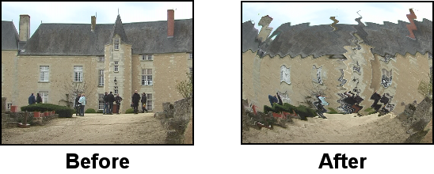
Honako parametroak doi ditzakezu:

13.4.58 Bihurritu

FINKATZEKO
13.4.59 YUV

FINKATZEKO
13.4.60 Zooma lausotzea

FINKATZEKO
14. Errendatutako efektuak
Denbora errealeko efektuez gain, beste efektu mota batzuk daude. Pistaren
eskualde batean exekutatzen dira, eta emaitza disko gogorrean gordetzen da
pantailan bistaratu aurretik. Normalean, emaitza pistan itsasten da,
jatorrizko datuak ordeztuz.
Errendatutako efektuak ez dira baliabideen leihoan agertzen. Errendatutako
efektuak eskuratzeko joan Audioa -> Errendatu efektua eta
Bideoa -> Errendatu efektua menuetara. Menu bakoitzak errendatutako
efektuen elkarrizketa-koadro bat irekitzen du. Errendatutako efektuak
pista mota batean aplikatzen dira: audioaren pistari edo bideoaren
pistari. Mota berdineko pistarik ez bada existitzen, errore bat gertatuko
da.
Errendatu efektua... menua erabili aurretik denbora-lerroan eskualde
bat definitu behar da efektua aplikatzeko. Sarrerako eta irteerako punturik,
edo eskualderik, ez badago efektua txertatzeko puntutik filmearen amaieraino
aplikatuko da. Egonez gero, sarrerako eta irteerako puntuek, edo hautatutako
eskualdeak, mugatuko dute aplikatuko den eskualdea.
Gainera, efektua ainguratuta dauden pistetan soilik aplikatuko da. Beste
pista guztiei ez ikusi egingo zaie.
Azkenik, errendatutako efektuak pistaren atributu batzuk prozesatzen ditu sarrerako
datuak irakurtzean, baina ez guztiak. Eragindako pistetako trantsizioak aplikatu
egiten dira. Desplazamendua eta efektuak ez. Honela datu berriak dagoen hautapenaren
posizioan itsas daitezke, desplazamenduaren balioa aldatu gabe.
'Errendatu efektua' elkarrizketa-koadroan efektu guztien zerrenda dago, bai
denbora errealekoak bai errendatutakoak. Hemen agertzen diren denbora errealeko
efektuak ordea errendatu egiten dira, pistan aplikatu ordez. Zerrendako efektu bat
hautatu behar da exekutatu ahal izateko, eta disko gogorreko fitxategi bat zehaztu
behar da errendatutako efektua bertan gordetzeko (Hautatu fitxategia errendatzeko
eremuan). lupak fitxategia hautatzen lagun
zaitzake.
Fitxategi-formatu bat hautatu behar da pistaren mota kudeatzeko.
giltzak fitxategi-formatua konfiguratzea
uzten ditu.
Etiketa bakoitzean fitxategi berria sortu aukera ere badago. Erauzitako
CDa badago denbora-lerroan, eta hainbat fitxategitan zatitzea nahi izanez gero,
etiketak izango liratee fitxategien arteko zatitzaileak aukera hau erabiltzean.
Denbora-lerroa etiketekin zatituta dagoenean, eta aukera hau gaitzen denean,
efektua etiketa bakoitzean berrabiarazten da. Ondorioz, egoera honetan,
normalizazioaren eragiketak uneko fitxategiaren gailurra hartzen du, eta ez
denbora-lerro osokoa.
Azkenik, txertatzeko estrategia erakusten da elkarrizketa-koadroan, errendatzeko
elkarrizketa-koadroaren berdin funtzionatzen duelarik. Oharra: nahiz eta efektuek
audioaren edo bideoaren pista bati aplikatu, txertatzeko estrategia pista guztiei
aplikatzen zaie, arbeleko eragiketetan (kopiatu eta itsatsi) gertatzen den bezala.
Elkarrizketa-koadroko Ados botoi berdea sakatzean, efektuari dagokion beste
elkarrizketa-koadroa agertzen da. Efektua gainera denbora errealekoa bada,
bigarren elkarrizketa-koadroa agertuko da uneko konfigurazioa berresteko. Konfigurazio
hori onartutakoan prozesatuko da efektua.
14.1 Errendatutako audio efektuak
14.1.1 Berriz lagindu
Irteera bakoitzaren lagin zenbakia eskalaren faktore batekin bidertzen du,
sarrerari dagokion zenbakia aurkitzeko. Irteerako fitxategiaren lagin-tasa
proiektuarena izango da, baina bere luzera aldatu egingo da lagin kopuruaren
aldaketa adierazteko. Laginketa berriaren ondoren, audioa iragazten da
aliasing-a kentzeko.
Eskalaren faktorea 2 bada, sarrerako bi laginetatik irteerako lagin batera
murriztuko da, eta irteerako fitxategiak dituen laginak sarrerakoaren erdia
izango da. Faktorea 0.5 bada, sarrerako 0.5 lagin bakoitza luzatu egingo da
irteerako lagin oso bat betetzeko, eta honela irteerako fitxategiak edukiko
duen lagin kopurua sarrerakoaren bikoitza izango da.
14.2 Errendatutako bideo efektuak
14.2.1 Aldatu fotograma-tasa
Denbora errealeko Aldatu fotograma-tasa - RT efektuaren (Tiratu moduan)
gauza berdina lantzen du. Irteerako fotograma zenbakia eskalaren faktorearekin
bidertzen du, dagokion sarrerako fotograma aurkitzeko eta sekuentziaren luzera
aldatzeko. 'Aldatu fotograma-tasa - RT' ez bezala, Bideoa -> Errendatu efektua
elkarrizketa-koadrotik exekutatzen da, eta bere exekuzioaren emaitza errendatu behar
du.
Argi ibili, Aldatu fotograma-tasa efektuak ez baitu eskalatutako fotograma-tasa
errendatutako fitxategiko fotogramak gisa erabiltzen. Luzera eskalatutako fitxategia
ekoizten du, jatorrizko sekuentzia baino luzeagoa eskalaren faktorea 1 baino txikiagoa
bada (baina proiektuko fotograma-tasa berdinarekin). Luzera berria jatorrizkoaren
1/(eskalaren faktorea) da.
Bideoa kamera motelean edo azkarrean sortzeko:
- Hautatu bideoaren klipa, fotograma-tasa aldatzeko, eta jaregin
klipa bideoaren pistan.
- Fotograma-tasa aldatzea nahi diozun area hautatu.
- Bideoa menuan, hautatu Errendatu efektua aukera.
- Efektuen zerrendan hautatu 'Aldatu fotograma-tasa'.
- Sartu irteerako formatua eta txertatzeko estrategia
sortuko den kliparentzako.
- Sakatu Ados botoia.
- Laster-menuan, sartu eskalaren faktorean 2 balioa (bi aldiz
azkarrago exekutatzeko), eta 0.5 abiadura erdiarekin exekutatzeko.
15. Ladspa efektuak
LADSPA efektuak audioko efektuak dira, bai denbora errealekoak, bai errendatuak.
LADSPA efektuak (plugin-ak ere deitzen zaie) internetetik lortzen dira, eta kalitate
aldakorrekoak dira. Gehienak ezin diran denbora errealean aldatu, eta hobeto
funtzionatzen dute errendatuta. Batzuk ez dute funtzionatzen edo hainbat errore
dituzte. Beste batzuk pista bakar baten gainean aplika daitezke, berrabiorik ez
dutelako. Nahiz eta Cinelerra-k LADSPAren interfazea ahalik eta xehetasun gehienarekin
garatu, denbora errealeko hainbat pista edo aldi bereko prozesamenduak erabiltzaile
arruntek LADSPArekin egiten dutena baino harutzago doaz. LADSPA efektua Audioa
karpetan agertzen dira mailu eta bihurkin bat duen ikonoarekin, GNU/Linux-eko
audio arloko garatzaileek landutako plugin-ak direla adierazteko.
LADSPA efektuak gaitzeko, nahikoa da inguruneko LADSPA_PATH aldagaiak plugin-en
kokalekua edukitzearekin. Edo bestela, jarri plugin horiek `/usr/lib/cinelerra'
direktorioan.
Debian GNU/Linux banaketa erabiltzen baduzu, plugin asko eskura
ditzakezu apt tresna erabiliz:
apt-cache search ladspa
apt-get install jack-rack cmt blop swh-plugins
16. Trantsizioak
16.1 Trantsizioak erabiltzea
Sekuentzia edo klip bat amaitzean eta beste bat hastean, portaera nagusia
aurrenekoa amaitzea eta bigarrenarekin zuzenean hastea da. Trantsizioak
batetik bestera igarotzeko modu bat da aldaketa bisual (edota soinu
aldaketekin) desberdinekin.
Cinelerra-k audioaren eta bideoaren trantsizioak onartzen ditu. Guztiak
daude zerrendatuta baliabideen leihoan.

Bideoaren trantsizioak baliabideen leihoan
Trantsizioak pista mota batean soilik aplika daitezke: Audioaren trantsizioak
karpetako trantsizioak audioko pistetan soilik aplika daitezke.
Bideoaren trantsizioak karpetakoak berriz bideoko pistei.
Trantsizioak erabiltzeko modurik errazena, bideo-fitxategi bat kargatu eta
erdialdeko eskualde bat ebaki, edizio-puntua ikusgai egoteko denbora-lerroan.
Baliabideen leihoan ireki Bideoen trantsizioa karpeta, eta arrastatu
trantsizio bat zerrendatik denbora-lerroko bideoaren pistara. Orain,
kutxa bat agertuko da trantsizioak beteko duen lekuan. Trantsizioa bideoaren
bigarren zatian jaregin dezakezu, eta kasu horretan lehenengo eta bigarren zatien
artean aplikatuko da trantsizioa.

Disolbatu trantsizioa denbora-lerrora arrastatzen
Orain, trantsizioan zehar mugi zaitezke nabigatzeko komandoak erabiliz, eta emaitza
Konposaketa-leihoan ikusi. Normalean txertatzeko puntuarekin mugitzean
ez da trantsizioa erakusten, bere iraupena laburregia izan ohi delako.
Ohartu beharko zatekeen denbora-lerroan trantsizioak bideo-gailuetan hardware bidezko
azelerazioarekin erreproduzitzean, hardware bidezko azelerazioa aldi batean ez dela
erabiliko, trantsizioa ongi errendatzeko. Behin tratsizioa amaitutakoan, hardware bidezko
azelerazioa berriro aktibatuko da. Azeleraziorik ez duen gailu bat erabiltzean eragin
hau ez da nabarituko.
Trantsizio bat gehitzen denean, efektu baten antzera edita daiteke. Saguaren eskuineko
botoiarekin egin klik trantsizioan eta laster-menu bat agertuko da. Erakutsi aukerak
elkarrizketa-koadro bat bistaratzen du, trantsizio horri dagozkion parametroekin (edukiz
gero). Luzera parametroak trantsizioaren iraupena zehatzen du segundotan. Parametro
horiek konfigura daitezke, trantsizio honi aplikatuko zaie eta baita antzekoak diren
beste trantsizio batzuei ere (parametroak aldatzen ez badituzu bederen). Kendu
aukerak trantsizioa kentzen du denbora-lerrotik.
Baliabideen leihotik trantsizioak arrastatzea eta jaregitea nahiko geldoa eta
nekagarria gerta daiteke. Zorionez, baliabideen leihotik trantsizio bat arrastatzean,
teklatuko U eta u teklek trantsizio hori itsatsiko dute. U teklak
bideoaren azkeneko trantsizioa itsasten du, u teklak berriz audioaren trantsizioa
grabazioko pista guztietan itsasten du. Txertatzeko puntua, edo sarrerako puntua,
bideoaren edo audioaren zati baten gainean badago, trantsizioa zati horren hasieratik
aplikatuko da.
Garrantzitsua: trantsizioa txertatzen den puntu zehatza ez da hain nabaria.
Bideoaren (edo audioaren) bigarren zatiaren hasieran hasten da, eta zati horretan
mugatutako denbora kopuru batean luzatzen da. Beraz, aurreneko klipak nahikoa
datu eduki behar ditu bigarren zatira egingo den trantsizioan erabiltzeko. Hau da,
denbora-lerroan erakusten den aurreneko zatiaren luzera diskoan gordetakoaren
luzera baino txikiagoa izan behar da.
Adibidez, 'Disolbatu' trantsizioa denbora-lerroan kokatuta dagoen posizioan hasten da.
Trantsizio honen iraupena segundo 1ekoa hautatzen bada, aurreneko zatiaren amaieratik
ez da 0.5 segundo baino lehenago hasiko, eta ez da 0.5 segundotan jarraituko
bigarren zatian. Gogoratu trantsizioa denbora lerroan kokatutako posizioan hasiko dela
(aurreneko zatia amaitzen eta bigarrena hasten den posizioa hain zuzen), eta une horretatik
segundo 1 iraungo duela. Hori dela eta, beharrezkoa da diskoan aurreneko bideo-zatiaren
segundo bat gehiago egotea, denbora-lerroan agertzen dena baino.
Akats nahiko arrunta da 'Disolbatu' trantsizioa klip baten azkenengo fotogramaren atzean
jartzea. Demagun A eta B klipen arteko trantsizio bat, A kliparen azkenengo fotogramaren
atzean jartzeari buruz ari gara.
'Disolbatu' trantsizioa kokatuta dagoen posizio zehatzean hasten denez, ez dago A kliparen
fotogramarik B kliparen hasierarekin iraungipena lantzeko. Beraz, Cinelerra-k A kliparen
azkenengo fotograma izozten du eta B kliparen hasierako fotogramekin iraungitzen du.
A kliparen nahikoa fotograma daudela ziurtatu behar da trantsizioa hastean bistaratzeko.
Fotograma horien iraupena trantsizioaren iraupenaren berdina edo handiagoa izan beharko luke.
16.2 Disolbatu bideoaren trantsizioak

Bideoaren bi zatiren arteko trantsizio leuna da. Zati hauei sarrerako eta irteerako
zatiak deituko diegu. Trantsizioak zati batetik bestera iraungitzea eragiten du.
Sarrerako zatia piskanaka gardentzen joaten da, eta bere ordez irteerakoa bistaratzen
da piskanaka ere. Efektu osoak eragina izateko Luzera parametroarekin
kontrola daiteke.
Kontrol erabilgarriak:
Denbora-lerroko trantsizioaren ikonoan saguaren eskuineko botoiarekin
klik egitean, honako kontrolak dituen laster-menua bistaratuko da:
- Erakutsi: trantsizioari dagokion elkarrizketa-koadroa
bistaratuko du (parametrorik badu)
- Gaitu: trantsizioaren efektua gaitu/desgaitu egiten du
- Luzera: trantsizio osoaren iraupena zehazten du
- Kendu: trantsizioa denbora-lerrotik kentzen du
17. Gako-fotogramak
Iraungitzea, kamera, proiektorea edo pistaren beste parametro batzuk aldatzean,
lehenetsi gisa denbora-lerroaren iraupen osoan mantentzen dira. Batzuetan parametro
estatikoak ezartzea ez da oso erabilgarria izaten. Normalean, kamera edo maskaren
posizioak denboran zehar aldatu behar izaten dira. Maskarek objektuei jarraitu
behar izaten diete. Aldaketa dinamikoak sortzen dira gako-fotogramak definituz.
Gako-fotograma bat denboraren puntu zehatz bat da, eragiketa baten ezarpenak
aldatzen diren puntua. Cinelerra-n ia edozein konposaketa eta efektuen parametroentzako
daude gako-fotogramak.
Parametro bat doitzen duzun edonon, balioa gako-fotograma batean gordetzen da.
Balioa gako-fotograma batean gordetzen bada, zergatik ez da beti aldatzen?
Lehenetsi gisa gordetzen den gako-fotogramari Gako-fotograma lehenetsia
deitzen zaio. Gako-fotograma lehenetsia iraupen osoari aplikatzen zaio, beste
gako-fotogramarik ez badago. Gako-fotograma lehenetsia ez da inon agertzen,
beti existitzen delako. Aldatzeko modu bakarra beste gako-fotograma ez-lehenetsiak
jartzea da.
Ikusi menua erabiliz edozein parametroren gako-fotogramak erakusten dira.
Leihoa -> Erakutsi gainjarpen-leihoa menua aukeratuz hainbat gako-fotograma
mota aktiba ditzakezu era azkarrean. Leiho honetan 'Ikusi' menuko parametro bakoitza
aktiba dezakezu. Gako-fotogramak hautatzean, denbora-lerroan marrazten dira,
aplikatzen diren pisten gainean.
Gako-fotogramak modu desberdinean erakusten dira: kurbak, aktiboak, moduak, e.a.
Jarraian gako-fotograma mota desberdinak nola kudeatzen diren azaltzen da.
17.1 Gako-fotograma kurboak
Parametro asko Bezier-en kurbetan gordetzen dira. Joan Ikusi -> iraungitu
edo Ikusi -> ...zooma menura parametro horien kurbak bistaratzeko
denbora-lerroan. Hautapen edo arrastatze moduan, denbora-lerroan mugitu
kurtsorea kurben gainean, kurba aldatu arte. Orduan, egin klik
eta arrastatu kurba emandako posizioan gako-fotograma sortzeko.
Gako-fotograma sortutakoan, egin klik eta arrastatu posizioz aldatzeko.
Bigarren gako-fotograman klik egin eta kurbaren gainera arrastatzean, malda
leun bat sortzen da. Gako-fotograma baten gainean klik eginez eta Ktrl+arrastatuz
sarrerako edo irteerako kontrolaren balioa aldatzen da. Honek maldaren
leuntasunari eragiten dio. Sarrerako eta irteerako kontrola bai horizontalki
bai bertikalki posizioz alda daitezkeen bitartean, mugimendu horizontala
irakurtzeko soilik erabiltzen da eta ez da kurbaren balioan erabiltzen.
Gogora dezakezu Gimp eta konposaketako maskarak Maius erabiltzen dutela
kontrol-puntuak hautatzeko, beraz, zergatik denbora-lerroak Ktrl erabiltzen du?
Denbora-lerroan Maius+arrastatu egiten baduzu, gako-fotograma aurreko edo
hurrengo gako-fotogramaren baliora doitzen da (zein existitzen den arabera).
Honela, balio konstantea duen kurba bat jar daiteke, aurreko edo hurrengo
gako-fotograma kopiatu gabe.
17.1.1 Gako-fotograma kurboetan nabigatzea
Denbora-lerroan ez dago nahikoa leku kurbaren barruti zabala edukitzeko. Kurben
gainean zoom bertikala egin behar duzu aldagarritasun bat lortzeko. Hau bi tresnekin
lantzen da: doitzeko botoiarekin eta  zoomaren automatizazio
menuarekin.
zoomaren automatizazio
menuarekin.
Doitzeko botoiak barruti bertikala eskalatzen du, hautatutako kurbaren area denbora-lerroan
bistaratuz. Denbora-lerroko eskualde bat kurtsoreakin nabarmentzen bada, eskualde hori
soilik eskalatuko da. Sarrerako eta irteerako puntuek ez dute eraginik zooma egin zaion
eskualdeari. Alt+f sakatuz doiketaren eragiketak lantzen dira.
Zoomaren menuak kurben eskalatze bertikala aldatzen dute eskuz (2-ren multiploekin).
Egin klik botoian zooma aldatzeko. Teklatuko Alt+Gora eta Alt+Behera sakatuz
zooma aldatzen da.
17.2 Gako-fotograma txandakariak
'Mututu' da gako-fotograma bakarra aktibatu edo desaktibatu daitekeena. 'Mututu'
gako-fotogramek zehazten dute pista prozesatuko den baina ez irteeran bistaratu.
Egin klik eta arrastatu kurba hauek gako-fotograma bat sortzeko. Gako-fotogramak
bi balio dituzte, ez kurben bezala: aktibo edo desaktibo. Ktrl eta Maius
teklek ez dute ezer egiten gako-fotograma txandakarietan.
17.3 Gako-fotograma automatikoak
Ohartuko zinen iraungitzeko kurba gutxi batzuk konfiguratzean, txertatzeko puntua
kurben inguruan mugitzean, txertatzeko puntuaren azpian iraungitzaileak kurbaren
balioa adierazten duela. Portaera hau ez da bakarrik itxura polita izateko.
Iraungitzaileak beraien kasa gako-fotogramak sor ditzakete gako-fotograma
automatikoaren moduan. Gako-fotogramen modu automatikoa erabilgarriagoa izan ohi
da kurbak arrastatze baino.
Gako-fotogramaren modu automatikoa gaitzeko aktibatu  botoia.
Gako-fotograma automatikoaren moduan, parametro bat aldatzen den bakoitzean gako-fotograma
bat sortzen da denbora-lerroan. Modu honek parametro askori eragiten dionez, hobeto da
gako-fotograma bat behar denean soilik gaitzean, eta gero berriro desgaitzea.
botoia.
Gako-fotograma automatikoaren moduan, parametro bat aldatzen den bakoitzean gako-fotograma
bat sortzen da denbora-lerroan. Modu honek parametro askori eragiten dionez, hobeto da
gako-fotograma bat behar denean soilik gaitzean, eta gero berriro desgaitzea.
Erabilgarria izan ohi da Ikusi menura joatea eta nahi den parametroa ikusgai jartzea
aldaketa bat egin aurretik. Gako-fotograma automatikoa sortzen den posizioa txertatzeko
puntuarena da. Denbora-lerroa aldatu egiten bada erreproduzitzen ari dela, hainbat
gako-fotograma sortuko dira parametroa aldatzen duzun arabera.
Gako-fotograma automatikoaren modua desgaituta dagoenean, antzeko zerbait gertatzen da.
Parametro bat konfiguratzeak txertatzeko puntuaren aurretik dagoen gako-fotograma
doitzen du. Iraungitzeko bi gako-fotograma badaude, eta txertatzeko puntua hauen
artean badago, iraungitzailea aldatzean aurreneko gako-fotograma aldatuko da.
Parametro asko daude gako-fotograkikoak modu automatikoan soilik sor daitezkeenak.
Kurbek pistan leku gehiegi beharko luketeen parametroak dira, edo kurba batekin
erraz ezin adierazi daitezkeenak.
Efektuen kasuan ere gako-fotogramak modu automatikoan soilik sor daitezke,
efektu bakoitzak dituen parametro kopurua dela eta.
Kameraren eta proiektorearen mugimendua gako-fotograma automatikoaren moduan soilik
animatu daitezkeen bitartean, hauen zooma kurbekin animatzen da. Hemen amaitzen da
konposaketari buruzko azalpenak, konposaketa denboran zehar aldatzeko trebetasunaren
mende baitago.
17.4 Konposaketako gako-fotogramak
Kamera eta proiektorearen translazioa bi parametroekin adierazten da: X eta Y.
Kurbak doitzea zerbait korapilotsua gerta daiteke. Cinelerra-k arazo hau
gako-fotograma automatikoekin gainditzen du. Bideoaren pista bat kargatuta dagoela,
txertatzeko puntua eraman pistaren hasierara, eta gaitu gako-fotograma automatikoaren
modua.
Mugitu proiektorea piska bat Konposaketa-leihoan, gako-fotograma bat sortzeko.
Aurreratu txertatzeko puntua segundo batzuk. Mugitu proiektorea distantzia
handiago batekin, beste gako-fotograma sortzeko eta mugimendua nabarmentzeko.
Honek proiektorea adierazten duen bigarren kutxa sortuko du Konposaketa-leihoan,
bi kutxak lotzen dituen marra batekin. Loturaren marra mugimenduaren bidea da.
Gako-fotograma gehiago sortzen badituzu, kutxa gehiago sortuko dira. Nahi
dituzun gako-fotograma guztiak sortutakoan, desgaitu gako-fotograma automatikoaren
modua.
Orain, Konposaketa-leihoko graduatzailea desplazatzen baduzu, bideoaren proiekzioa
denboran zehar mugituko da. Bi gako-fotograma arteko edozein puntutan, mugimenduaren
bidea gorria da denbora guztian txertatzeko puntuaren aurretik, eta berde kolorekoa
txertatzeko puntuaren atzetik. Funtzionalitate hau erabilgarria den edo ez zalantzan
jar dezakezu, hala ere, eroso sentituko zara proiektorearen hurrengo aldaketan
zein gako-fotogramak eragingo diren jakitearekin.
Aurreko gako-fotograma doitzeko, egin klik eta arrastatu gako-fotograma automatikoaren
modua desgaituta dagoenean. Bi gako-fotogramen tartean bazaude, proiektorearen aurreneko
kutxa doitzen da, bigarrena ukitu gabe mantentzen delarik. Gako-fotogramen arteko
proiektorearen mugimendua interpolatua delako gertatzen da. Bigarren gako-fotograma
doitzeko, bigarren gako-fotogramararte desplazatu beharko zara.
Lehenetsi gisa, mugimenduaren bidea marra zuzena izaten da, baina kurba bat izan daiteke
kontrolen puntuak erabiliz. Ktrl+arrastatu aurreko gako-fotogramaren sarrerako edo
irteerako kontrol-puntua ezarri arte. Berriro ere, Gimp-en oinarritzen gara, Maius
tekla zooma egiteko erabiltzen baita. Gako-fotogramatik sarrerako edo irteerako
kontrol-puntuak estrapolatu ondoren, bideoaren edonon Ktrl+arrastatuz kontrol-puntu
gertuena doituko da. Kontrol-puntu bat erabat bistaz kanpo egon daitekeen arren, oraindik
ere kontrolagarria izan daiteke.
Kameraren mugimendua editatzen denean, kamera adierazten duten kutxen portaera piska bat
desberdina da. Kameraren animazioa argazki baten panoramikoa lantzeko erabiltzen da.
Uneko kameraren kutxa ez da mugitzen arrastatzean, baina hainbat gako-fotograma badaude,
kameraren kutxa bakoitza (unekoa ezik) mugitzen ari direla dirudi. Kameraren leihoak
kamera bakoitzaren posizio erlatiboa unekoarekiko erakusten duelako gertatzen da.
Egoera intuitiboagoa da bi gako-fotogramen arteko mugimenduaren bidea tolesten baduzu,
eta bi gako-fotogramen artean desplazatzen baduzu. Gorria eta berdearen arteko zatiketa,
gako-fotogramen arteko uneko posizioa, beti dago zentratua kameraren kutxa mugitzen
den bitartean.
17.5 Gako-fotogramen edizioa
Garrantzitsua: gako-fotogramak kopiatzean edo itsastean, ziurtatu ez dagoela
sarrerako edo irteerako punturik denbora-lerroan.
Gako-fotogramak kendu daitezke, edo denbora-lerroko pisten artean mugitu bideoaren
ebaki eta itsatsi eragiketen antzekoak erabiliz. Hala ere, Ikusi menuan hautatutako
gako-fotogramak soilik jasoko dute gako-fotogramen edizioko eragiketen eragina.
Edizioko eragiketa ospetsuena kurba bat pista batetik bestera erreplikatzea da,
estereo bikotea sortzeko. Aurreneko urratsa jatorrizko pista gaitzea da
bertan Maius+klik eginez. Gero,
gako-fotogramen sarrerako edo irteerako puntuak doitu, edo nahi den eskualdea hautatu.
Hautatu Gako-fotogramak -> Kopiatu gako-fotogramak menua arbelean kopiatzeko.
Gaitu helburuko pista Maius+klik eginez
botoian, eta joan Gako-fotogramak -> Itsatsi gako-fotogramak menura arbeletik
itsasteko
Edizioko komandoak gako-fotogramen edizioko komandoekin lotuta daude Maius tekla
erabiliz lasterbideak erabili ordez.
Gako-fotogramaren zatirik konplikatuenera eramaten gaitu honek, gako-fotograma lehenetsia.
Gogoratu gako-fotogramarik ez dagoenean, oraindik ere gako-fotograma lehenetsi bat
existitzen dela, non parametro globalak denbora-lerroaren iraupen osorako gordetzen dituen.
Gako-fotograma lehenetsia ez da erakusten, beti existitzen delako. Zer gertaten da
gako-fotograma lehenetsiaren balioa ona bada eta beste gako-fotograma ez-lehenetsien
artean jartzea nahi baduzu? Gako-fotogramak -> Kopiatu gako-fotograma lehenetsia
eta Gako-fotogramak -> Itsatsi gako-fotograma lehenetsia aukerek gako-fotograma
lehenetsia bihurtzen dute gako-fotograma ez-lehenetsira.
Gako-fotogramak -> Kopiatu gako-fotograma lehenetsia aukerak gako-fotograma
lehenetsia kopiatzen du arbelean, denbora-lerroko zein eskualde hautatuta dagoen
kontutan izan gabe. Gako-fotogramak -> Itsatsi gako-fotograma lehenetsia aukera
erabil daiteke orduan arbeletik gako-fotograma ez-lehenetsia bezala itsasteko.
Gako-fotograma noramala (ez-lehenetsia) kpoiatu baduzu, gako-fotograma lehenetsi
gisa gorde dezakezu Gako-fotogramak -> Itsatsi gako-fotograma lehenetsia
aukera erabiliz. Aukera hau erabili ondoren, gako-fotograma normala bihurtu
lehenetsira. Ez duzu gako-fotograma lehenetsiaren balioa ikusiko gako-fotograma
normal guztiak kendu arte.
Azkenik, badago modu bat gako-fotogramak kentzeko (eskualde bat hautatu eta
gako-fotogramak -> garbitu gako-fotogramak aukera erabili ordez). Nahikoa
da pistan gako-fotograma bat hautatu eta arrastatzea aurreko gako-fotograma baino
aurrerago, edo hurrengo gako-fotograma baino harutzago.
18. Multimediaren kaptura
18.1 Cinelerra-rekin kapturatzea
18.1.1 Cinelerra-ren grabazio-funtzioak
Hoberenik hoberenean, eduki guztia disko gogorretan, CD-ROMetan, flash memorietan
edo DVDtan gordeta egongo zatekeen, Cinelerra-n kargatzea edozein artxibo bezala
kargatzeko. Tamalez munduak ez du honela funtzionatzen, eta jatorrizko multimediaren
iturri gutxi daude fitxategi-sistema bat bezala atzi daitezkeenak: gehienetan
zinta edo ordenagailuen artean datuak transferitzeko sarrera/irteera prozedimendu
bitxietan fidatzen dira. Mota honetako edukiak Cinelerra-ra inportatzeko erabiltzen
da Grabazioa elkarrizketa-koadroa.
Grabazio bat egiteko aurreneko urratsa sarrerako gailua konfiguratzea da.
Ezarpenak -> Hobespenak menuan parametro batzuk agertzen dira, See section Grabazioa
atalean azaldutakoak. Grabazioari aplikatzen zaizkion parametroak proiektuaren
konfiguraziotik independenteak dira, grabazioaren parametroak hardwarearen
gehienezko gaitasunarekin bat etortzen diren bitartean, proiektuaren
konfigurazioa proiektu bakoitzeko aldatzen da.
Joan Fitxategia -> Grabatu menura sarrerako/irteerako iturburu bat grabatzeko.
Elkarrizketa-koadro bat agertuko da irteeraren formatua eskatuz, errendatzean
gertatzen den bezala. Formatua hautatutakoan, grabazioaren leihoa eta monitorea
agertzen dira.
Grabazioaren leihoa ataletan zatitzen da. Parametro asko fitxategi motaren (audioa,
bideoa) arabera aldatzen diren arren, leihoaren atalak berdinak dira beti.
- Irteerako formatuaren areak irteerako fitxategi-formatua azalten du,
eta bertako uneko posizioa.
- Batch arearen edizioak uneko batch-aren parametroak aldatzea uzten du.
- Nabegazioko kontrolak modu desberdinetan hasi eta gelditzen dute grabazioa.
- Batch-en zerrendak definitutako batch guztiak erakusten ditu.
- Berresteko areak irteerako fitxategiak denbora-lerroan nola inportatuko
diren zehaztea uzten du.

Grabazio-leihoaren atalak
Cinelerra-n grabazioa batch kontzeptuaren inguruan antolatzen da. Bere baitan,
grabazioaren emaitzaren irteerako fitxategi desberdin bat definitzeko balio
du batch batek. Gaur egun, kontzeptu honi ez ikusi egin dezaiokegu, eta grabatu
grabazioaren botoia sakatuz.
Grabazioaren botoiak uneko irteerako fitxategia irekitzen du (aurretik irekita
ez badago), eta kapturatutako datuak idazten ditu fitxategi horretan. Gelditzeko
botoiak grabazioa gelditzen du. Grabatzen jarraitzeko, sakatu berriro grabazioaren
botoia, eta honela grabazioaren datu berriak irteerako fitxategiaren amaierari
gehituko zaizkio. Bideoaren fitxategi bat grabatzen ari bada, fotograma bakarra
grabatzeko aukera dago,  botoia erabiliz.
botoia erabiliz.
Nahikoa material grabatu denean, eta prozesua gelditzea nahi denean, Txertatzeko
estrategia bat hautatu behar da eta Itxi botoia sakatu.
18.1.2 Batch grabazioa
Orain 'Batch' kontzeptura iritsi gara. Batch-ak sarrerako/irteerako datuak
fitxategi-sistema bat bezalakoak izatea saiatzen dira. Garai batean, batch-ak
zinta bat hainbat programa desberdinetan zatitzen zuten, eta hauetako
bakoitza fitxategi desberdin batean gordetzen zen (datu guztiak zinta baten
jarraian gorde ordez). Fotogramen doitasuna kontrolatzeko mekanismoak garatzea
koste izugarria duenez, gaur egungo batch-en erabilpena programa desberdinak
grabatzea da eguneko ordu desberdinetan. Oso egokia da telebistako programak
edo filmeak grabatzeko (gailu sofistikatuagoak ezin dutenak erosi ongi dakiten
bezala).
Grabazioaren leihoak batch-zerrenda eta bi grabazio modu onartzen ditu:
elkarreragilea eta batch. Grabazio botoia sakatzean hasten da grabazioa, eta
uneko batch-a erabiltzen da gauza guztiak zehazteko, hasierako ordua ezik.
Uneko batch-a lehenetsi gisa konfiguratuta dago zinta baten antzeko portaera
izateko.
Batch moduan grabazioa Hasi botoia sakatzean hasten da. Batch moduko grabazioan,
hasierako denbora batch grabazioaren hasierako ordua da.
Baliteke aurrenik zenbait batch sortu nahi izatea. Batch bakoitzak parametro eta
doitzeko metodo batzuk ditu.
- Aktibo
Batch-en grabazioaren eragiketetan batch-a sartuta dagoen zehazten du.
Zerrendan klik eginez, Aktibo zutabean batch-a aktibatzeko edo
desaktibatzeko.
- Bide-izena
Fitxategiaren bide-izena batch-aren grabazioa hor gordetzeko. Grabazioaren
elkarrizketa-koadroan zehaztutako fitxategi-izena aurreneko batch-aren izena
da, elkarreraginkortasunaren grabazioa errazteko, baina grabazioaren leihoan
alda daiteke, Batch edizioa atalean.
- Albisteak
Fitxategia existitzen den edo ez erakusten du. Atributu oso interesgarria
da, bestela ez baita berresteko elkarrizketa-koadrorik agertuko fitxategia
existitzen bada. Grabazioaren botoia aurreneko aldiz sakatzean fitxategia
irekiko da. Fitxategia lehendik ere badago, une horretan ezabatu egingo da.
'Albisteak' zutabeak Fitxategia badago erakusten du fitxategia existitzen
bada, bestela Ados erakutsiko du. Grabazioa batch berdinean jarraitzea nahi
duzun bakoitzean, 'Albisteak' zutabeak Ireki bistaratu beharko luke, fitxategia
jadanik irekita dagoela eta grabazioaren botoia sakatzean ez dela ezabatuko adieraziz.
Baten grabatu ondoren, batch-ez aldatzen bazara, grabatzen aritu den fitxategia itxi
egingo da. Batch horretan grabatzea nahi duzun hurrengoan, fitxategia ezabatu egingo
da hasi aurretik.
- Hasiera-denbora
Egunaren ordua da, 24 ordutako ordulari batekin, batch-a grabatzen hasteko, batch
grabazio moduan. Hasierako denbora zintaren ordua izan daiteke, eta bobinaren zenbakia
ere, egunen batean kontrol egokirik garatzen bada ere. Oraingoz ordea, egunaren ordua da.
- Iraupena
Batch-aren luzera da. Batch-aren Modua Kronometratua denean edukiko du zentzua.
Grabazioaren iraupenak Iraupena-ren balioa gainditzean geldituko da grabazioa,
bai modu elkarreraginkorrean bai batch moduan.
- Iturburua
Hardwareak hainbat iturburu kapturatzen dituenean soilik du zentzua. Normalean,
iturburua kanal igorle bat edo sarrera fisiko desberdina izaten da. Uneko batch-a
amaitzen denean, eta batch berri baten grabazioa hasten denean, iturburua aldatu
egiten da (hurrengo batch-ean ezarritakoarekin). Honela, ordu desberdinetan
telebistako kanal desberdinak graba daitezke.
Grabazioaren leihoak uneko batch-ari buruz informazioa ematen du. Uneko batch-ak
ez dauka zer batch-zerrendan nabarmendutakoarekin bat etorri beharrik. Uneko
batch-aren testua gorri kolorez agertzen da batch-zerrendan. Nabarmendutako
batch-a editatzen ari da batch-en edizioaren atalean. Honela, hainbat batch-en
atributuak alda daitezke uneko batch-a aldatu gabe.
Grabazioaren eragiketa guztiak uneko batcha-rengain gertatzen dira. Hainbat batch
badaude, bat aukera daiteke unekoa izateko. Horretarako, batch hori hautatu eta
dagokion errenkadako Aktibo zutabean klik egin. Grabazioaren botoian sakatzean
berehala uneko batch-a grabatzen da modu elkarreraginkorrean.
Grabazio elkarreraginkorrean edo batch-ean, uneko batch-aren grabazioa amaitzen
denean hurrengo batch-a aktibatzen da. Etorkizuneko grabazio guztiak batch moduan
egingo dira. Aurreneko batch-a amaitzean, hurrengoa keinuka gelditzen da bere
hasierako ordua iritsi zai.
Gelditu botoiak grabazioa gelditzen du, bai modu elkarreaginkorrean bai batch moduan.
Birbobinatzeko botoia ere badago,  . bai modu
elkarreraginkorrean bai batch moduan, botoi honek uneko batch-aren fitxategia
ixten du. Uneko batch-aren gaineko hurrengo grabazioaren eragiketak fitxategia
ezabatuko du.
. bai modu
elkarreraginkorrean bai batch moduan, botoi honek uneko batch-aren fitxategia
ixten du. Uneko batch-aren gaineko hurrengo grabazioaren eragiketak fitxategia
ezabatuko du.
18.1.3 Sintonizatzailearen informazioa editatzea
Batzuetan, grabazioaren edo konfiguratzeko prozesuan sintonizatuko diren kanalak
hautatu eta definitu behar dira grabatzeko edo erreproduzitzeko. Grabazioaren
kontrolatzaileen kasuan (Video4Linux eta Buz) iturburuak definitzen ditu
sintonizazio-kanalak. Buz kontrolatzailea erabiltzen bada erreproduzitzeko,
sintonizazio-kanalak helburuan zehazten dira.
Sintonizazio-kanalak defini daitezke  kanalen
botoia sakatuz, grabazioaren monitorearen leihoan aurkitzen da. Botoi hau sakatzean
kanalen edizioaren leihoa bistaratzen da. Leiho honetan kanalak gehitu, editatu
eta ordena ditzakezu. Gainera, bideo-kontrolatzaile batzuekin posiblea da irudiaren
kalitatea doitzea.
kanalen
botoia sakatuz, grabazioaren monitorearen leihoan aurkitzen da. Botoi hau sakatzean
kanalen edizioaren leihoa bistaratzen da. Leiho honetan kanalak gehitu, editatu
eta ordena ditzakezu. Gainera, bideo-kontrolatzaile batzuekin posiblea da irudiaren
kalitatea doitzea.
Gehitu eragiketak kanala editatzeko leihoa bistaratzen du. Kanalaren izena
kanal-zerrendan agertzen da. Kanalaren iturburua sintonien taulako izenari dagokion
maiztasunaren balio fisikoa da.
Kanalaren edizioaren elkarrizketa-koadroan 'fina' graduatzailea erabil daiteke
kanalaren maiztasuna pittin bat aldatzeko, kontrolatzaileak onartzen badu behintzat.
Normak eta maiztasunen taulak biak batera iturburuak definitzeko zein maiztasun
taula erabiliko den definitzen dute. Gailuak hainbat sarrera onartzen baditu,
sarreraren menuak hauek hautatzea utziko du.
Hautatutako kanalak ordena daitezke, kanaletariko bat hautatuz zerrendan
eta Eraman gora edo Eraman behera sakatuz zerrendan gora edo behera
eramateko.
Behin kanalak definituta daudela, grabazioaren leihoan Iturburua elementua
erabil daiteke grabazioko kanalak hautatzeko. Grabazioaren monitorearen leihoan
ere kanalak hautatzeko gaitasun berdina dago. Gogoan izan, grabazioaren leihoan
edo monitorearen leihoan egindako kanalen hautapenak uneko batch-ean gordetzen
direla.
Kontrolatzaile batzuekin baliteke Trukatu eremuak aukera ikusgai egotea.
Kontrolatzaile hauek ez dute beti asmatzen eremuen ordena zuzenekin, gizakien
laguntzik gabe. Lerro bakoitiak eta bikoitiak nahastuta badaude, hautatu
aukera hau zuzeneko ordenean grabatzeko.
18.2 dvgrab-ekin kapturatzea
'dvgrab' tresna oso eraginkorra da DV kameretik bideoak kapturatzeko. 'dvgrab' tresna
komando-lerroan exekutatzen da. Tresna honek, exekutatzen hasten bezain laster, kamera
erreprodukzio moduan jarriko du automatikoki, eta bideoak sistemako disko gogorrean
gordetzen hasiko da. Bideoaren fitxategiak sekuentzialki etiketatuko dira,
adibidez: `001.avi', `002.avi', e.a...
'dvgrab' instalatzeko, GNU/Linux banaketaren tresna egokia erabili (apt, rpm, deb, e.a.), edo
galdetu dvgrab-en web gunean.
Kapturatu bideoak lau urrats errazekin:
- Sortu direktorio bat bideoen kapturak gordetzeko
-
cd direktorio horretara
- Idatzi:
dvgrab --buffers 500 eta sakatu Sartu tekla
- Sakatu Ktrl+C bideoa kapturatzea gelditzeko
`--autosplit' aukera oso erabilgarria da. Eszenak denbora-kodearen
arabera zatitzen ditu. Tamalez, DV motako kamera digitaletik grabatzean soilik
funtzionatzen du. Ez du funtzionatzen bihurgailu analogiko-digitaletik grabatzean
(adib Canopus ADVC110), ezin baitu jatorrizko multimediaren denbora-koderik erabili.
Irakurri dvgrab-en eskuliburua, tresna honen funtzionalitateari buruzko xehetasun
gehiago ezagutzeko.
19. Fitxategiak errendatzea
Errendatzeak denbora-lerroko atal bat hartzen du, muntaketa guztia landu
(efektuak eta konposaketak) eta filme hutsa fitxategi batean gordetzen du.
Behin errendatze prozesua fitxategi batean gordetakoan, iturburuko klip
guztiak ezaba ditzakezu (nahi izanez gero), errendatutako fitxategia
filme-erreproduzigailu batean erreproduzitu, edo jarraitu filmearen
muntaketa Cinelerra aplikazioan. Azken kasu honetan, oso zaila da filme
hutsean muntatze-erabakiak berriro ikutzea, eta ondorioz mantendu iturburuko
klipak eta XML fitxategiak egun dezente proiektua errendatu eta gero
(baliteke hauek behar izatea eta).
Errendatze-eragiketa guztiak denbora-lerroko eskualde batean oinarritzen
dira errendatzeko. Eskualde hori definitu behar duzu denbora-lerroan.
Nabigazioaren atalak eskualdeak definitzeko azalpenak ditu. See section Denbora-barra.
Errendatzeko funtzioek eskualdea definitzen dute arau-multzo batean oinarrituz.
ESkualde bat nabarmentzen denean, edo sarrerako eta irteerako puntuak ezartzen
direnean, eragindako eskualdea errendatzen da. Eskualderik ez denean nabarmentzen,
txertatzeko puntuaren atzetik dagoen edozer errendatzen da. Txertatzeko puntua
pista baten hasieran kokatzearekin bakarrik, sarrerako eta irteerako puntu
gutiak kenduz, pista osoa errendatuko da.
19.1 Fitxategi bakarra errendatzea
Multimediako edukia disko gogorrean ekoizteko biderik azkarrena fitxategi
bakar batean errendatzeko funtzioa da.
Joan Fitxategia -> Errendatu menua, edo sakatu Maius+R, errendatzearen
elkarrizketa-koadroa bistaratzeko. Sakatu lupa
fitxategi hautapenaren elkarrizketa-koadroa bistaratzeko. Azken elkarrizketa-koadro
horretan, fitxategiaren izena zehaz dezakezu, errendatutaako fitxategia gordetzeko
eta kodeketaren parametroak zehaztu.

Errendatze-leihoa
Errendatzearen elkarrizketa-koadroan, hautatu formatu bat Formatua
menuan. Hautatutako formatuak audioa, bideoa edo biak errendatuko diren zehazten du.
Hautatu Errendatu audioko pistak botoia audioko pistak sortzeko, eta
Errendatu bideoaren pistak bideoaren pistak sortzeko.
Botoi bakoitzaren alboan dagoen giltza
hautatu amaierako fitxategia kodetzean erabiliko den konpresioaren parametroak
doitzeko. Hautatutako formatuak ez badu audioa edo bideoa gordetzen uzten,
ezin izango da konpresioaren parametrorik doitu. Errendatu audioko pistak edo
Errendatu bideoaren pistak aukerak gaituta badaude, eta fitxategiaren formatuak
ez badu uzten, errorea gertatuko da errendatzen saiatzean.
19.2 Banandutako fitxategiak errendatzea
Denbora-lerroan aurkitzen den etiketa bakoitzeko fitxategi berri bat
sortzen du Etiketa bakoitzean fitxategi berria sortu aukerak.
Oso erabilgarria da audioko grabazio luzeak banandutako fitxategietan
zatitzeko. Errendategia erabiltzean, Etiketa bakoitzean fitxategi berria sortu
aukerak errendatzeko ataza bat sortzen du etiketa bakoitzeko, barneko
balantzearen algoritmoa erabili ordez (errendategia osatzen duten ordenagailuen
artean atazak banatzeko erabiltzen dena).
Etiketa bakoitzean fitxategi berria sortu aukera hautatzean, irteerako fitxategi
bakoitzeko fitxategi-izen berri bat sortzen da. Errendatzearen elkarrizketa-koadroan
ematen den fitxategi-izenak 2 digituko zenbakia badu, zenbaki hori beste zenbaki
desberdin batekin ordeztuko da, zenbaki hori 1 balioarekin gehituz sortzen den
fitxategi bakoitzeko. 2 digituko zenbakirik ez badago, Cinelerra-k automatikoki
zenbaki desberdin bat erantsiko dio izenaren atzetik fitxategi bakoitzeko.
Adibidez, `/hmov/pista01.wav' fitxategi-izena ematen bada, `01' zatia
gainidatzi egingo da irteerako fitxategi bakoitzeko. Bestalde, `/hmov/pista.wav'
izena ematen bada, aurreneko irteera `/hmov/pista.wav01' izango da, eta beste
guztiek zenbaki hori gehitzen joango dira 1 balioarekin.
Portaera hau errendategia gaituta dagoenean soilik gertatzen da, edo
Etiketa bakoitzean fitxategi berria sortu aukera hautatuta dagoenean.
19.3 Errendatutako fitxategien txertatzeko estrategia
Azkenik, errendatzearen elkarrizketa-koadroak txertatzeko modua hautatzea uzten
du. Fitxategiak kargatzean bezala funtzionatzen du txertatzeko moduak.
Kasu honetan, Ezer ez txertatu hautatzean errendatu ondoren sortzen den
fitxategia sistemako disko gogorrean kopiatuko da, Cinelerra-n irekita dagoen
proiektuan ezer aldatu gabe. Txertatzeko beste estrategiek berriz uneko
proiektuaren denbora-lerroa aldatzen dutenez, estrategia horietariko bat
erabiltzean ziurtatu denbora-lerroa prest dagoela sortutako fitxategia
txertatzeko. See section Muntaketa. Errendatzea amaitzean txertatuko da sortu
berri den fitxategia.
Ohartuko zara audioa edo bideoa bakarrik errendatutakoan Itsatsi txertatzeko
estrategiaren portaera itsatsi eragiketa arrunt baten antzekoa izango dela,
denbora-lerroan hautatuta dagoen eskualdea ezabatu eta errendatutako datuak
soilik itsatsiko dituela. Audioa bakarrik errendatzen baduzu, baina bideoaren
pistak ainguratuta badaude, bideoaren pistak trunkatu egingo dira (audioaren
pisten antzera), baina errendatutako irteera audioaren pistetan soilik
itsatsiko da.
19.4 Batch-ekin errendatzea
Proiektu asko multimediako hainbat fitxategietan errendatzea nahi baduzu,
Errendatu elkarrizketa-koadroa erabili gabe, Fitxategia -> Batch-ekin
errendatzea menua erabili. Funtzio honi muntatze-erabakien zerrenda (EDL)
bat edo gehiago eman behar zaizkio errendatzeko, eta irteerako fitxategiak
bakoitzeko. Cinelerra-k automatikoki EDL bakoitza kargatu eta errendatzen du
erabiltzailea arduratu gabe. EDL fitxategi bakoitza, eta dagokion errendatutako
irteera, batch bat da. Multimediaren eduki ugari prozesatzea uzten du,
eta ordenagailu oso garesti bati etekina ateratzen dio. Adibidez, egunean zehar
landutako proiektuak gabean batch moduan prozesatzeak sistemaren erabilpena
hobetzen du, eta erabiltzailearen denbora aurreztu.
Batch moduan lan egiteko, aurrenik errendatuko diren proiektuak definitu behar
dira. Batch-ekin errendatzeak EDL fitxategi bat eskatzen du errendatuko den
batch bakoitzeko. Proiektu bakoitzeko errendatuko den eskualdea definitu behar
da eskualdea nabarmenduz, sarrerako eta irteerako puntuak ezarriz, edo
txertatzeko puntua eskualdearen hasieran kokatuz. Ondoren, proiektua
EDL bat bezala gorde behar da. Honela nahi adina proiektu defini daitezke.
Errendatzaileak EDL fitxategiaren eskualde aktiboarekin bakarrik lan egiten du.
Errendatuko diren proiektuak prest daudenean (EDL fitxategi guztiak
prestatutakoan), Fitxategia -> Batch-ekin errendatu aukera abiarazi.
Honek elkarrizketa-koadro bat bistaratuko du. Batch-ekin errendatzea
elkarrizketa-koadroa fitxategi bakarra errendatzea baino zerbait konplexuagoa
da.
Batch-en zerrenda bat zehaztu behar da errendatzeko eragiketarekin hasi aurretik.
batch-en taula elkarrizketa-koadroaren behean agerten da, eta Batch-ak
errendatzeko izena dauka. Taula honen gainean, batch bakarraren parametroen
konfigurazioa agertzen da.
Fitxategi bakarra izan balitz bezala, honako parametroak doitu: Irteerako
bide-izena, Formatua, Audioa, Bideoa eta
Etiketa bakoitzean fitxategi berria sortu. Parametro hauek batch bakar
bati aplikatzen zaizkio. errendatzeko parametro estandar hauetaz gain,
EDLaren iturburua hautatu behar da batch-ean erabiltzeko. Horretarako
erabili EDLren bide-izena.
Batch-ak errendatzeko zerrenda hutsik egonez gero, edo ezer ez badago
hautatuta, sakatu Berria botoia batch berri bat sortzeko. Batch berriaren
parametroak doitu berri diren parametroekin bat etorriko dira.
Parametro berdinekin batch gehiago sor daitezke. Horretarako sakatu Berria
botoia nahi adina aldiz. Edozein batch-en konfigurazioa alda daiteke:
hautatu batch bat taulan eta doitu gaineko parametroak. Hautatutako batch-a
beti mantentzen da gainean bistaratutako informazioarekin.
Batch-ak lekuz alda daitezke taulan, batch baten gainean klik egin eta arrastatu
nahi den kokalekura, eta honela errendatuko diren ordena berrantola dezakezu.
Batch bat betirako ezaba dezakezu Ezabatu botoia sakatuz.
Batch-en taulan zutabe bat dago batch bakoitza gaitzeko edo desgaitzeko.
Honela, batch batzuk salta daitezke errendatzetik, ezabatu edo aldatu beharra
izan gabe. Gaituta zutabean klik egin batch bat gaitzeko edo desgaitzeko.
Gaituta badago, batch-a errendatu egingo da. Bestela, batch-a ez da errendatuko
eta hurrengo gaitutako batch-a errendatuko da.
Taulako beste zutabeak informazioa eskaintzeko bakarrik erabiltzen dira.
- Irteera Batch-aren irteerako bide-izena.
- EDL Batch-aren muntatze-erabakien zerrendaren (EDL) iturburua.
- Igarotakoa Batch-a errendatzeko igaroko den denbora, amaituta badago.
Gaituta dagoen aurreneko batch-a errendatzen hasteko, sakatu Hasi botoia.
Errendatze-prozesua behin hasitakoan, leiho nagusiak batch bakoitzaren progresioa
erakusten du. Batch bat errendatzea amaitzean, batch-en taulako Igarotakoa
zutabea eguneratu egiten da eta hurrengo gaitutako batch-a errendatzen hasiko da.
Horrela gaituta dauden batch guztiekin. Errendatzen ari den batch-a kolore
gorriarekin agertzen da.
Batch guztiak amaitu aurretik errendatzea gelditzeko, errendatzearen
elkarrizketa-koadroa itxi gabe, sakatu Gelditu botoia.
Batch guztiak amaitu aurretik errendatzea gelditzeko, errendatzearen
elkarrizketa-koadroa itxiz, sakatu Utzi botoia.
Batch-ekin errendatzearen elkarrizketa-koadrotik irtetzeko, errendatze-prozesua
abioan dagoen edo ez kontutan hartu gabe, sakatu Utzi botoia.
19.5 Errendategiak
Interpolazio bikubikoa eta HDTV Cinelerra-n garatu ziren aurreneko aldian, emaitza
bakunenak ekoizteko behar zen denbora ikaragarri luzea zen, nahiz eta garai
horretako bi bihotzdun Xeon 1.7 Ghz prozesagailua erabili. Errendategia erabiltzean,
nahiz eta bere modurik errazenean izan, HDTV erabil daiteke eta SD denbora
errealeran exekutatzen da.
Errendategiaren interfazea ikusgarria ez izan arren, 12 nodo baino gutxiagorekin
erabiltzeko erraza da. Ehundaka nodo dituen errendategi batean erabiltzeko ordea
nahiko korapilotsua gerta daiteke. Fitxategia -> Errendatu menuarekin deitzen
zaio errendategiari, programaren hobespenetan errendategia gaituta egonez gero.
Cinelerra-k denbora-lerroan nabarmendutako eskualdea ataza kopuru batean
zatitzen du, gero nodo desberdinen artean banatzen ditu atazak karga-balantzearen
arabera. Nodoek atazak prozesatu eta irteerak sistemako disko gogorreko fitxategietan
gordetzen dituzte. Irteerako fitxategiak ez dira kateatzen. Garrantzitsua da nodoek
fitxategi-sistema berdinera, leku berean muntatuta, sarbidetzeko eskubidea edukitzea
jatorrizko baliabideak eskuratzeko.
Nodo batek ezin badu baliabide bat atzitu, bere kontsolan erroreari buruz
jakinaraziko du, baina nodoaren prozesua ez da hilko. Ezin badu direktorio
edo irteerako klip bat atzitu, orduan baliteke errendatzeko prozesua bertan
behera uztea.
Ohartu zaitez errendatzearen elkarrizketa-koadroko Etiketa bakoitzean fitxategi
berria sortu aukerak Cinelerra-ren karga-balantzearen algoritmoa saihesten du.
Bere ordez, etiketa bakoitzeko ataza berri bat sortzen da (erabiltzaileak kargak
nahi dituen bezala banatu dituela suposatzen da). Aukera hau gaituta badago eta
ez badaude etiketarik, errendatzeko ataza bakarra sortuko da.
Cinelerra-ren errendategia osaten duten ordenagailuak honela antolatzen dira: nodo maisu
bat ezartzen da, eta beste guztiak morroiak dira. Nodo maisua (edo nagusia) erabiltzailearen
interfaze grafikoa exekutatzen ari den ordenagailua da. Morroiak diren nodoak
sareko edozein lekutan egon daitezke, eta komando-lerrotik exekutatzen dira.
Nodo morroia komando-lerrotik exekutatzeko erabili honako komandoa:
cinelerra -d
Hau konfigurazio errazena da. cinelerra -h komandoa exekutatuz aukera
gehiago bistaratuko dira terminalean. Ataka zenbaki lehenetsia gainidatzi daiteke
`-d' aukeraren ondoren idatziz. Adibidez, nodo morroi baten ataka 3658 bada,
honela abiaraziko litzateke: cinelerra -d 3658
Askotan gertatzen da errendatutako irteera gainbegiratu nahi izatea eta denbora-lerroa
erabiliz denborak doitzea. Bestalde, MPEG bezalako formatu batzuk ezin dira zuzenean
kopiatu. Guzti honengatik, atazen emaitzak banakako fitxategietan uzten dira.
Banakako fitxategi hauek Cinelerra-n karga daitezke: sortu pista berri bat, eta
Kateatu dauden pistei zehaztu kargaren elkarrizketa-koadroan. Zuzeneko kopia
onartzen duten fitxategiak fitxategi bakar batean kateatu daitezke,
fitxategi-formatu berdinean errendatuz eta errendategia desgaituz. Gainera, zuzeneko
kopia bat lortzeko pisten dimentsioak, irteerako dimentsioak eta baliabideen
dimentsioak berdinak izan behar dute.
Zuzeneko kopia onartzen ez duten MPEG edo beste formatuko fitxategiak beste
aplikazio batekin kateatu behar dira. MPEG fitxategia kateatzeko komando-lerroko
cat tresna erabil dezakezu.
Errendategiaren konfigurazioa See section Errendategia atalean azaltzen da.
Nodo morroiek datuak fitxategi-sistema amankomun batean sarearen bidez irakurri
eta idatzi egiten dutenez, ez dute disko gogorrik behar.
Hoberenik hoberenean, errendategia osatzen duten ordenagailuek errendimendu
antzekoa edukitzea izango litzateke. Aurkitzen diren nodoen arabera atazak banatzen
ditu Cinelerra-k. Azken zatiaz nodo geldoena arduratzen bada, gerta daiteke
beste nodo guztiek (azkarragoak) geldoenak amaitu arte zai gelditu behar izatea,
nahiz eta beraiek ataza askoz ere azkarrago amaitu.
19.6 Komando-lerroarekin errendatzea
Lantzea falta den batch multzo bat errendatu daiteke komando-lerroa erabiliz (interfaze
grafikoa erabili gabe). Oso erabilgarria da edozer arrazoi dela eta X sistema grafikoak
kraskatu bataiteke. Urruneko superordenagailu bat edukiz gero ere oso erabilgarria
izan daiteke, adibide gisa, demagun norbait Euskal Herrian bizi dela eta Argentinako
ordenagailu batean sarbidetzeko baimenak dituela. Kasu horretan komando-lerroa oso
erabilgarria da.
Komando-lerrotik errendatzeko, aurrenik Cinelerra modu grafikoan exekutatu behar da.
Hautatu Fitxategia -> Batch-ekin errendatzea menua. Elkarrizketa-leihoan sortu
errendatzea nahi dituzun batch-ak. Honela batch-en zerrenda fitxategi batean gordeko
dira. Doitu errendategiaren atributuak Ezarpenak -> Hobespenak menuan eta irten
Cinelerra aplikaziotik. Burututako ezarpenak komando-lerrotik errendatzea exekutatzean
erabiliko dira.
Komando-lerroan exekutatu honakoa: cinelerra -r
Honela falta diren batch-ak prozesatuko dira interfaze grafikoria erabili gabe.
Zaila da parametro guztiak doitzea eragiketa hau lantzeko. Hori dela eta, komando-lerroan
errendatzea bertan abortatu egingo da irteerako fitxategiren bat existitzen bada.
Badaude beste parametro batzuk hobespenen eta batch-en bestelako fitxategiak zehazteko.
Balio lehenetsien desberdinak diren bestelako gauzak erabiltzeak lan asko eskatzen du,
hori dela eta orainarte ez da probarik egin.
19.7 Errendatzeko aukerak eta kodeketen argibideak
19.7.1 Quicktime4linux-era errendatzea mencoder erabiliz berkodetzeko
Errendatutako fitxategia 'mencoder' tresnarekin berriro kodetzeko,
esportatu fitxategia Quicktime4linux gisa:
- Audioaren 16 bit-eko Biren osagarria aukera (Pcm)
- Bideoaren DV aukera Video option DV
Mencoder kodeketaren aukerak:
- Avi (mpeg4/divx) ez kargatzeko helburuarekin:
mencoder -of avi -o cinelerra.avi -oac mp3lame -ovc lavc -lavcopts
vcodec=mpeg4:vbitrate=2500 cinelerra_render.mov
- Internet (deskarga):
mencoder -of avi -o cinelerra_render.avi -oac mp3lame -ovc lavc
-lavcopts vcodec=mpeg4:vbitrate=400 -vf scale=320:240 cinelerra_render.mov
edo
Lehenbiziko urratsa:
mencoder input.mov -ovc xvid -xvidencopts bitrate=600:pass=1 -vf
scale=320:240 -oac mp3lame -lameopts abr:br=64 -o output.avi
Bigarren urratsa:
mencoder input.mov -ovc xvid -xvidencopts bitrate=600:pass=2 -vf
scale=320:240 -oac mp3lame -lameopts abr:br=64 -o output.avi
Scott Frase-k 'Quicktime GNU/Linuxentzako bateragarritasun diagrama' idatzi zuen.
Quicktime konpresioaren eskema erabilgarrien zerrenda zehatza dauka, eta hauek
Cinelerra, MPlayer eta beste zenbait multimedia erreproduzigailuekin duten
bateragarritasuna azaltzen du. Dokumentu horrek bi atal nagusi ditu, bata
HDV bereizmeneko formatua duen proiektu batean oinarritutakoa, eta bestea
DV bereizmeneko formatua duen proiektu batean oinarrituta.
Honako gunetik deskarga daiteke:
http://content.serveftp.net/video/qtcompatibility.ods
Ohar interesgarri batzuk:
- MPlayer-en portaera hobeagoa da DV formatuko bideo txikiagoakin.
- DV formatuan errendatutako fitxategiekin Cinelerra-k duen bateragarritasuna
HDV proiektuko errendatutako fitxategiekin duenaren antzekoa da, ez oso desberdina.
- DV eta HDV proiektuen MPlayer eta Cinelerra arteko konparazioen grafika du dokumentuak
19.7.2 DVDa sortzea
19.7.2.1 mpeg2-ra errendatzea
Atal honetan mpeg2 bideora esportatu eta kapitulu bakarreko DVD bat nola sortzen
den azaltzen da. Metodo honek nahi duzun kodeketaren aukera doitasunez zehaztea
uzten dizu, mpeg2 formatuko fitxategi bat sortuz (kontsumo arrunteko DVD
erreproduzigailuen %100-ekoarkin bateragarria izanik).
mjpegtools paketeko 'mplex' tresna instalatuta egon behar da. mjpegtools paketea
hvirtual banaketaren zati da, eta bertatik atera daiteke mplex tresna.
Aurrenik, Cinelerra-n proiektuaren formatua ongi definituta dagoela ziurtatu,
bideoa errendatzen hasi aurretik (Ezarpenak -> Formatua). PAL formatuak
720x576 tamainako bereizmena erabiltzen du 25 f/s fotograma-tasarekin;
NTSC formatuak berriz 720x480 tamaina, 29.97 f/s tasarekin.
- Sortu script bat: `~/cine_render.sh'
- Kopiatu `~/cine_render.sh fitxategian' honako lerroak:
#/bin/bash
mpeg2enc -v 0 -K tmpgenc -r 16 -4 1 -2 1 -D 10 -E 10 -g 15 -G 15 -q 6
-b 8600 -f 8 -o $1
- Eman exekutatzeko baimenak script-ari:
chmod 777 ~/cine_render.sh
- Abiarazi Cinelerra, eta hautatu errendatzea nahi duzun bideoaren zatia
[ eta ] puntuekin
- Sakatu Maius+R teklak
- Hautatu YUV4MPEG korrontea fitxategi-formatua
- Desautatu Errendatu audioko pistak eta hautatu Errendatu bideoaren pistak
- Egin klik giltzaren gainean
- Ireki berri den leihoan, adierazi sortzea nahi duzun `m2v' fitxategiaren
izena. Fitxategi horrek bideoa bakarrik edukiko du.
- Egin klik Erabili kanalizazioa gainean eta idatzi honako komandoa:
/home/<zure_erabiltzailea>/cine_render.sh %
- Egin klik Ados botoian bigarren leihoa ixteko, eta berriro Ados botoian
zure `m2v' fitxategia errendatzen hasteko.
- m2v fitxategia errendatzen ari den bitartean, ireki errendatzearen leihoa
berriro eta errendatu AC3 fitxategia 224 bit-ekin.
- Azkenik, konbinatu bideoa eta audioa honako komandoarekin:
mplex -f 8 zure_bideo_fitxat.m2v zure_audio_fitxat.ac3 -o
bideo_audio_fitxat.mpeg
Mplex erabiltzean erroreak gertatzen badira, handitu kuantizadorearen aukera, '-q'.
mpeg2enc-en parametroak alda ditzakezu nahi izanez gero. Begiratu mpeg2enc tresnaren
eskuliburua. Horren konfigurazioari buruzko xehetasun batzuk ongi etorriko zaizkizu:
- `-b 8600': 'm2v' fitxategiaren gehienezko bit-tasa da (ez du audioaren
bit-tasa zehazten). Balio hau ez handitzea gomendatzen dizugu, bestela bideoa eta
audioa nahasteko mplex erabiltzean errore batzuk gerta daitezkeelako.
- `-q 6': Kuantizazioaren konfigurazioa. Balioa gutxiagotzen baduzu
(inoiz ez 3 azpitik), kalitatea handiagotu egiten da, eta baita bit-tasa ere.
Tarteko bit-tasa '-b' aukeran dagoena baino %10 baxuagoa mantentzea gomendatzen
da (mplex tresnarekin audioaren eta bideoaren fitxategiak konbinatzean azaltzen da).
- `-K tmpenc': TMPEnc matrizeei deitzen die. Bit-tasa gutxi gorabehera
%10ean murrizten du, lehenetsi gisa erabiltzen diren taulen ordez. Kalitate oso
altuko multimediaren kasuan, probatu aukera hau erabili gabe.
Multimediaren edukia zaratatsua bada (Hi8 multimedia analogikoa, adibidez),
mpegtools-eko komando batzuk gehitu `~/cine_render.sh' script-ari:
-
y4mshift eta y4mscaler komandoak erabil daitezke
bideoaren inguruko ertzak kentzeko. Adibidez, `cine_render.sh' script-aren
hasieran Hi8 bideoaren inguruko ertz beltzak kentzen dituzte:
y4mshift -n -2 | yuvscaler -I USE_744x560+12+8 -O DVD -M BICUBIC |
-
yuvdenoise eta yuvmedianfilter komandoak zarata
kentzen lagunduko dute. Adibidez:
yuvdenoise -F | yuvmedianfilter -T 3 |
Zarata kentzea ataza konplexua da, eta emandako komando horiek adibide bat
besterik ez dira. Irakurri mpegtools-en eskuliburua, eta harpidetu dagokion
posta-zerrendara, informazio gehiago eskuratzeko.
19.7.2.2 DVD baten menua sortzea
DVD batek honako osagaiak ditu:
- Atzeko planoa (irudi finkoa edo bideoa)
- Botoiak
- Soinua edo musika
Menu bat sor dezakezu qdvdauthor, dvdstyler, dvdwizard edo tovid bezalako
aplikazio grafikoekin. Hala ere, interfaze horiek oraingoz ez dira perfektuak,
akatsak dituztelako eta mugatuta daudelako.
Azpian azaltzen den metodoa interfaze grafikoa erabiltzea baino
konplexuagoa izan arren, baditu bere alde onak:
- Erreproduzigailu guztietan erreproduzi daitekeen DVDak sortzen ditu.
- Ez dauka tarteko programa baten akatsik.
- Denbora asko aurreztuko dizu, DVD berri bat sortzeko egin behar duzun
bakarra testu-fitxategiak aldatzea baita.
Interfaze grafikoa duen aplikazioa erabiltzea nahi izanez gero,
saiatu tovid programarekin:
http://tovid.wikia.com/wiki/Main_Page
DVDaren menua sortzeko jarraitu honako urratsak:
- Sortu menuaren atzeko planoa Cinelerra-rekin.
- Gehitu botoiak PNG formatuko irudiak sortuz.
- Konbinatu menua eta botoiak spumux tresnarekin.
Demagun menuaren atzeko planoan animazioa edukitzea nahi duzula. Horretarako
abiarazi Cinelerra eta sortu proiektu bat menuaren atzeko planoa duena.
Nahi izanez gero, gehituiozu musika. Ohartu zaitez menu hau begizta batean
errepika daitekeela. Hau da, menuaren amaierara iristean hasieratik
erreproduzitzen hasiko da, eta horrela behin eta berriz.
Botoiak marrazteko, bi bide dituzu:
- Bistaratu botoiak Cinelerra-n. Honela, botoi animatuak sortzeko
gaitasuna izan dezakezu, bideoaren zati bakoitzaren koadro txikiak bezala.
- Ez marraztu botoiak Cinelerra-n. Botoi horiek geroago gehitu ditzazkeiozu
mpeg2 menuaren fitxategiari. Hau metodorik bakunena da, baina ezin izango duzu
botoi animaturik bistaratu.
Bideoa m2v eta ac3 formatutan errendatu arestian aipatu den cine_render.sh
metodoa erabiliz. Konbinatu audioa eta bideoa mplex tresna erabiliz,
bideo 'normalekin' egingo zenukeen antzera.
Menuaren atzeko planoa edukiko duen mpeg2 formatuko fitxategia lortuko duzu,
eta gainean botoi batzuk bistaratuta Cinelerra-n gehitu badituzu.
'spumux' tresna erabili behar da botoi bakoitzaren posizioa mpeg2 fitxategiko
definitzeko. Ez badituzu botoiak Cinelerra-n margotu, spumux
tresnarekin botoiak jarri dagokien posizioetan.
Spumux komandoak 2 argumentu ditu:
- XML fitxategi bat botoiak non dauden zehaztuz
- mpeg2 fitxategi-izena (menuarentzako errendatu duzuna)
XML fitxategiaren adibidea spumux-ek erabiltzeko:
<subpictures>
<stream>
<spu start="00:00:00.0" image="botoi_arruntak.png" highlight=
"botoi_nabarmenduak.png" select="botoi_hautatuak.png">
<button name="1" x0="94 " y0="234 " x1="253 " y1="278"
down="2" right="4" />
<button name="2" x0="63 " y0="287 " x1="379 " y1="331" up="1"
down="3" right="5" />
</spu>
</stream>
</subpictures>
- image="botoi_arruntak.png" PNG formatuko irudi honek
botoiak ditu hautatuta edo nabarmenduta ez daudenean bistaratzeko.
- highlight="botoi_nabarmenduak.png" PNG irudi honek
nabarmendutako egoera adierazten duten botoiak ditu.
- select="botoi_hautatuak.png PNG irudi honek
hautatutako egoera adierazten duten botoiak ditu.
Botoiak Cinelerra-n egin badituzu, irudi horiek hutsak (%100 gardenak)
bezala zehaztu behar dituzu.
Spumux-en erabiltzen diren PNG irudiek eduki beharrekoa:
- alfa kanala (gardentasuna onartzeko)
- indexatutako 4 koloretan egotea. Gimp erabiliz irudi bat indexatutako 4 koloretara
erraz bihur dezakezu.
Botoi bakoitzeko lerro bat dago. Lerro bakoitzak botoiaren koordenatuak ditu,
botoiak beti izango dira laukizuzen formakoak:
- x0, y0: goiko ezkerreko ertza
- x1, y1: beheko eskuineko ertza
Gainera, ikusleak urrunetik teklak sakatzean (gora, behera, ezkerrera, eskuinera) zein
botoira joan behar duen mugimendua zehaztu behar duzu. Adibidez:
<button name="3" ...coordinates... up="1" down="5" left="2" right="4" />
"3" botoia hautatzen denean, urruneko kontrolean "Gora" tekla sakatzen bada
"1" botoia nabarmenduko da. "Eskuinera" tekla sakatzen bada, "4" botoia
nabarmenduko da.
Spumux-en XML fitxategia editatzea amaitutakoan, honako komandoa exekutatu:
spumux menua.xml < menua.mpeg > menua_botoiekin.mpeg
Honek `menua_botoiekin.mpeg' fitxategia sortuko du. Botoiak dituen
mpeg2 motako fitxategia da.
19.7.2.3 DVD bat sortzea
Zure bideo-fitxategiak mpeg2 formatura errendatu ondoren, eta spumux tresnarekin
menu bat prestatutakoan, DVDa sortu behar duzu dvdauthor aplikazioarekin.
Gezurra dirudi baina egia da, dvdauthor-ek ere XML fitxategiak erabiltzen ditu
DVDaren egitura azaltzeko. Sintaxia oso garrantzitsua da, eta .xml fitxategiaren
sintaxia nola dagoen egituratua sakonki aztertu behar da. Sintaxia ez badago
ongi finkatuta erreproduzigailu batzuk ez dute DVDa erreproduzituko.
'dvdauthor' tresna erabiltzen laguntzeko, hemen duzu XML fitxategien
zenbait adibide.
<dvdauthor dest="/bidea/direktorioaren/edukia/dvd">
<vmgm />
<titleset>
<titles>
<pgc>
<vob file="/the/mpeg/fitxategia.mpeg" />
<post>
jump chapter 1;
</post>
</pgc>
</titles>
</titleset>
</dvdauthor>
dvdauthor tresnarentzako XML fitxategi xumea. Menurik ez duenez,
`/the/mpeg/fitxategia.mpeg' fitxategia zuzenean erreproduzitzen hasiko
da DVDa erreproduzigailuan sartu bezain laster.
<post> etiketapean dagoen komandoak bideoa begizta batean erreproduzitu
behar dela adierazten du. DVDaren erreproduzigailua bideoaren amaierara
iristen denean, bideoaren aurreneko kapitulura salto egingo du
(dvdauthor-ek bideoaren hasiera dela suposatuko du, ez baita kapitulurik
definitu).
DVDa sortzeko, idatzi honako komandoa:
dvdauthor -x adibide_xumea.xml
Orain adibide pittin bat konplexuagoa ikusiko dugu. DVDa erreproduzigailuan
sartzen denean, menu bat bistaratuko da eta 4 bideoetatik edozein aukera
dezakezu erreproduzitzeko.
<dvdauthor dest="/bidea/direktorioaren/edukia/dvd" jumppad="yes" >
<vmgm>
<fpc> jump menu 1; </fpc>
<menus>
<video format="pal" aspect="4:3" resolution="720x576" />
<pgc entry="title" >
<vob file="menua.mpeg" pause="0" />
<button name="1" > { g3=1; jump titleset 1 menu entry root; } </button>
<button name="2" > { g3=2; jump titleset 1 menu entry root; } </button>
<button name="3" > { g3=3; jump titleset 1 menu entry root; } </button>
<button name="4" > { g3=4; jump titleset 1 menu entry root; } </button>
<post> { jump cell 1; } </post>
</pgc>
</menus>
</vmgm>
<titleset>
<menus>
<pgc entry="root" >
<pre> { if ( g3 gt 0 ) {
if ( g3 eq 1 ) { g3=0; jump title 1 chapter 1; }
if ( g3 eq 2 ) { g3=0; jump title 1 chapter 3; }
if ( g3 eq 3 ) { g3=0; jump title 1 chapter 5; }
if ( g3 eq 4 ) { g3=0; jump title 1 chapter 7; }
jump vmgm menu entry title;
}
} </pre>
<post> { jump vmgm menu entry title; } </post>
</pgc>
</menus>
<titles>
<video format="pal" aspect="4:3" resolution="720x576" />
<pgc pause="0" >
<vob file="bideoa_1.mpeg" pause="0" />
<vob file="bideobeltza.mpg" pause="0" />
<vob file="bideoa_2.mpeg" pause="0" />
<vob file="bideobeltza.mpg" pause="0" />
<vob file="bideoa_3.mpeg" pause="0" />
<vob file="bideobeltza.mpg" pause="0" />
<vob file="bideoa_4.mpeg" pause="0" />
<post> { call vmgm menu entry title; } </post>
</pgc>
</titles>
</titleset>
</dvdauthor>
`bideobeltza.mpg' fitxategia erabiltzen da 2 segundotako pantaila beltza
gehitzeko bideo bakoitzaren artean. Goazen `bideobeltza.mpg' fitxategia
sortzera:
convert -size 720x576 xc:black -depth 8 markobeltza.ppm
dd if=/dev/zero bs=4 count=960000 | toolame -b 128 -s 48 /dev/stdin
audiogabe.mpa
ppmtoy4m -S 420mpeg2 -n 50 -F 25:1 -r markobeltza.ppm | mpeg2enc -a 2
-n p -f 8 -o bideobeltza.mpv
mplex -f 8 -o bideobeltza.mpg bideobeltza.mpv audiogabe.mpa
19.7.2.4 DVD bat grabatzea
DVDa sortu ondoren, helburuko karpetan honako direktorioan aurkituko dituzu:
`AUDIO_TS' eta `VIDEO_TS'. Probatu zure DVDa grabatu aurretik.
Horretarako joan helburuko karpetara eta idatzi honako komandoa (suposatzen
dugu xine aplikazioa instalatuta dagoela):
xine dvd:`pwd`
Komando hori exekutatuz DVDa ongi erreproduzitzen bada, disko huts batean
grabatzeko ordua iritsi da. `AUDIO_TS' eta `VIDEO_TS' direktorioak
dituen karpetan kokatuta zaudela, idatzi honako komandoa (egokitu direktorioa
DVD grabatzeko gailuari, adibidez /dev/dvdrw):
nice -n -20 growisofs -dvd-compat -speed=2 -Z /dev/dvd -dvd-video -V
VIDEO ./ && eject /dev/dvd
DVD horren kopia asko egin behar badituzu, hoberena `.iso' irudi bat sortzea da
honako komandoa erabiliz:
nice -n -20 mkisofs -dvd-video -V VIDEO -o ../dvd.iso .
Sortu berri den `../dvd.iso' fitxategia DVD disko huts batean graba
dezakezu beste komando hau erabiliz:
nice -n -20 growisofs -dvd-compat -speed=2 -Z /dev/dvd=../dvd.iso &&
eject /dev/dvd
Gomendioa: 4x baino abiadura handiagoekin ez grabatu, eta kalitate oneko DVD-R
disko hutsak erabili.
DVDa erreproduzigailu zehatz batean (etxeko DVD erreproduzigailuan) probatzeko
ez daukazu DVD diskoak alferrik bota beharrik zerbait gaizki gertatuz gero,
aurreneko grabazioa DVD-RW euskarrian egin. Horretarako aurrenik
DVD-RW diskoari formatua eman:
dvd+rw-format -lead-out /dev/dvd
Gero, grabatu DVD-RW diskoa arestiko komandoekin.
19.8 Atzeko planoan errendatu
Atzeko planoan errendatzeak ia denbora errealean efektuak erreproduzitzea uzten du,
bestela oso motelak izango ziren bistaratzeko. Aldi baterako irteera modu jarraian
errendatzen du: denbora-lerroan zerbait aldatzen denean, edo efektu berri bat gehitzen
denean, atzeko planoan errendatzen hasten da eta denbora gutxira unean errendatua
izan den bezala ikus ahal izango dugu Konposaketa-leihoan. Aukera hau ez
edukiz gero, muntatzen ari garen proiektua erreproduzitzean gauzak saltoka
bistaratuko dira, edo ez agian ez dira bistaratuko.
Errendategia lanean ari bada, atzeko planoan modu jarraian errendatuko da.
Honela, denbora errealean edozein proiektu erakuts daiteke, prozesamendurako
gaitasun nahikoa (nodo kopurua) duen errendategi bat edukiz.
Atzeko planoan errendatzeko joan Ezarpenak -> Hobespenak -> Errendimendua menura.
Bistaratuko den elkarrizketa-koadroan funtzio elkarreragile bat dago:
Ezarpenak -> Ezarri atzeko planoan errendatzea. Funtzio honek atzeko planoan
errendatzen hasteko puntua ezartzen du, puntu hori sarrerako puntua da. Posizio
horretan bideoa badago, denbora-lerroan marra gorri bat agertuko da,
atzeko planoan errendatu den zatia adieraziz.
Askotan egokia izaten da Hobespenak -> Ezarri atzeko planoan errendatzea hautatzea
efektu edo trantsizio bat txertatu ondoren, eta honela emaitza fotograma-tasa zuzenean
bistaratzeko (audioaren eta bideoaren arteko sinkronizazioa galdu gabe).
20. Aholkuak
Atal honetan Cinelerra-ren erabilerarekin zerikusia duten arazo batzuk nola gainditzen diren
azaltzen da. Arazoen eta gainditzeko erabilgarriak diren tresnen arabera dago ordenatuta.
20.1 'Dolby Pro Logic'-era kodetzea
Dolby pro logic modu erraz bat da 6 kanaletako audioa erreproduzitzeak
2 kanal bakarrik dituen soinu-txartel batekin, soinu piskat degradatuarekin
baina hala ere erabilgarria. Dolby pro logic-en oinarrizko kodeketa lor daiteke
efektuen erabilpen argia landuz.
Aurrenik, sortu aurreko ezkerreko eta eskuineko kanalak. Sortu audioaren bi pista,
bakoitzak kanal hauetariko bat edukiko duelarik. Kokatu ezkerreko kanala
ezkerrean, eta eskuineko kanala eskuinean, panoramikoa ikuspegiarekin.
Gero, sortu atzeko ezkerreko eta eskuineko kanalak. Sortu audioaren beste bi pista,
aurrekoen antzera. Desplazatu ezkerreko kanala ezkerrera, eta eskuineko kanala
eskuinera. Ondoren, aplikatu Alderantzikatu audioa efektua bi kanalei
eta seinalea atzeko bozgorailuetatik etorriko da.
Jarraian, sortu zentruko kanala, audioaren pista bakarra sortuz soinu
monofonikoarekin ("mono") iturburu desberdin batetik. Zentratu ezazu
Panoramikoa ikuspegia erabiliz, seinalea bozgorailu zentraletik
kaleratzeko.
Atzeko bozgorailuen seinalearen kopia bat aurreko bozgorailuan egotea nahi bada,
atzeko bozgorailuen seinalea gutxienez 0.05 segundo atzeratu behar da, eta
pista berri bakar bat sortu behar da. Erabili ikuspegi panoramikoa aurreko
bozgorailuetako seinalea orientatzeko.
Seinale berdina edukitzea nahi bada bozgorailu guztientan, zentrukoa ezik, atzeko bozgorailuen
soinua 0.5 segundo atzeratu, eta aurreko eskuineko edo ezkerreko bozgorailua 0.2 segundo
atzeratu.
Maiztasun baxuko kanala (subwoofer) entzutea nahi baduzu, sortu pista berri bat, hautatu
maiztasunen barruti bat, gehitu 'Sintetizatzailea' efektua eta doitu maiztasuna 60 Hz
azpitik. Baxuen bozgorailuak normalean 60 Hz azpitik dauden soinuak soilik
erreproduzitzen ditu.
Beste trikimailu bat bozgorailuak banatzeko ekualizazio parametrikoa
erabiltzea da, bozgorailu bakoitzean maiztasun barruti zehatz bat erreproduzitzeko,
eta behe-paseko iragazkiak erabiltzea baxuen bozgorailutik irtengo diren seinaleak
hautatzeko.
20.2 TB analogikoa garbitzea
Txina bezalako estatu aberats batean bizi edo bideo-artista izan ezik, litekeena da
telebista modu analogikoan gehiago grabatzea digitalean baino. Telebista analogikoaren
kalitatea txarra da, baina zerbait hobetu daiteke Cinelerra erabiliz, estudio
batetik lortuko zatekeenaren itxura gehiago izateko.
Aurrenik, bideoa kapturatzean, saiatu ahalik eta bereizmen handienarekin kapturatzen.
Europan 720x576 da, eta Amerikan 720x480. Ez saiatu monitorearen distira edo
kontrastea doitzen, nahiz eta kolorea maximizatzea erabilgarria den. Kapturatu MJPEG
erabiliz, edo konprimatu gabeko osagaien moduan, posible bada. Gehiegi eskatzea bada,
kapturatu JPEG formatuan. GBU azken baliabide gisa soilik erabili.
Orain, denbora-lerroan, erabili Ezarpenak -> Formatua YUV kolore-espazioa
ezartzeko. Gehitu Lagin-murrizketa efektua muntaiari, eta doitu honela:
Horizontala: 2
Despl. horizontala: 0
Bertikala: 2
Despl. bertikala: 0
gorria
x berdea
x urdina
alfa
Erabili kamera tresna filmea lerro bat gora edo behera eramateko, eta irudiaren
kolore-interferentzia gehiena kentzeko. Bilatzen ari garen desberdintasuna hau da:

Hutsune bertikalari buruzko informazioa baduzu, edo fotograma bakoitzean konstanteki
aldatzen diren ondulazioak, Maskara tresnarekin bloketau. Honek konpresioaren
erlazioa hobetzen du.
Gutxi gorabehera hauxe da egin daitekeen guztia, konpresioarekin naturalki galduko
liratekeen datuen baino gehiago suntsitu gabe. Teknika suntsitzaileagoek
desgurutzelarkatzea daukate.
20.3 Gurutzelarkatua gainditzea
Bideoaren iturburu gehienak gurutzelarkatuak dira, eskaneatze progresiboko
kamerak eta CRTak sortzea garestiegiak direlako. Kontsumitzaile bat baino
gehiago sutu da 6 hilabetetako soldata kamera digital batean gastatu eta
ordenagailuko monitorean irudiak zatarki desitxuratuta agertzen direlako.
Eskaneatze progresiboko kamerei buruz, hobeto ahatzea. Kostuen arazoak direla
eta baliteke gurutzelarkatutako kameren bereizmen espaziala inoiz ez lortzea.
Gurutzelarkatzea gure artean dago, eta bertan geratzeko asmoarekin gainera.
Gutzi hau kontutan eduki zenez garatu zen desgurutzelarkatzea Cinelerra-n.
Ez dugu uste inoiz desgurutzelarkatzeko efektu perfekturik egon denik.
Edo itzulbiderik gabekoak dira, edo ez dute funtzionatzen. Cinelerra-k
tarteko erabakia hartu zuen: desgurutzelarkatzeko tresnak eskainitzen ditu,
batzuetan itzulibiderik ez dute, eta beste batzuetan ez dute funtzionatzen,
baina ez dira ez bata ez bestea.
-
Lerroak bikoiztea
Honek Desgurutzelarkatze efektua lantzen du Lerro bikoitietara edo
Lerro bakoitietara doitzean. Pista baten gainean aplikatzean bereizmen
bertikalaren tamaina murrizten du 1/2ra, eta fotograma progresiboak eskaintzen
ditu eskailera-mailarekin (stairstepping). Erabilgarria da baldin eta eskalatzeko
efektuak jarraitzen badio, irudia bere tamainaren erdira murrizteko (aipatutako
bereizmen galera dela eta).
-
Lerroen batez bestekoa
Honek Desgurutzelarkatze efektua lantzen du Lerro bikoitien batez bestekoa
edo Lerro bakoitien batez bestekoa ezartzean. Lerroak bikoizteak antzera egiten
du, baina lerroen kopia zehatzak lerroen arteko batez bestekoekin ordezten du.
Erabilgarria da eskalatze guztientzako.
Aukera bat dago lerroaren batez besteko moldaerantzako, batez besteko kalkulua aplikatuko
zaien lerroak eta gurutzelarkatuta mantentzeko lerroak hautatzen ditu, lerroen
arteko diferentzian oinarrituz. Ez du funtzionatzen.
-
Alderantzikatu Telezinema
Desgurutzelarkatzeko tresnarik eraginkorrena da, NTSC telebistaren igorpena denean
filmearen metrajea. Irakurri See section Alderantzikatu Telezinema atala.
-
Denbora-oinarriaren zuzenketa
Aurreneko hiru tresnek metrajeta itzulibiderik gabe suntsitzen dute edo
batzutan ez dute funtzionatzen. Denbora-oinarriaren zuzenketa tresna
amaieran dator, desgurutzelarkatzeko tresna perfektua delako. Metrajea
ikutu gabe uzten du. Ez du bereizmena murrizten, edo gutxienez ez da
hautematen. Ez du jauzirik sortzen denboran (saltoka aurrera joatea).
-
Fotogramak eremuetara efektuak fotograma bakoitza bi fotogrametan bihurtzen
dituenez, jatorrizko metrajearen fotograma-tasa bikoizten duten proiektuetan
erabili behar da. Aurreneko fotograman lerro bakoitien batez bestekoaren kopia
jartzen du, bigarren fotograman berriz lerro bikoitien batez bestekoaren kopia.
Fotograma-tasa horrekin erreproduzitzean, bideo progresiboaren hautamena
eskaintzen du, xehetasunik galdu gabe.
Onena da aplikatutako efektua atzera itzuli daitekeela Eremuak fotogrametara
efektuarekin. 'Eremuak fotogrametara' efektuak gurutzelarkatutako jatorrizko
metrajearen bi fotograma konbinatzen ditu, fotograma-tasa erdiarekin erreproduzitzeko.
Ohartu zaitez 'Fotogramak eremuetara' efektuak sarrerako fotogramak abiadura
proiektuaren fotograma-tasaren erdiarekin irakurtzen dituela. 'Fotogramak eremuetara'
efektuaren aurretik dauden efektuek fotograma-tasa murriztuarekin prozesatzen dira.
Zoritxarrez, 'Fotogramak eremuetara' efektuaren irteera ezin da jatorrizkoak duen
eraginkortasunarekin konprimitu, 'twitter' (txio egitearen onomatopeia) bertikala
eta fotograma-tasa oso altuak sortzen dituelako.
29.97 f/s fotograma-tasarekin gurutzelarkatutako metrajea filmaren itxura har dezake
Fotogramak eremuetara efektua aplikatuz, eta ondoren proiektuaren 59.94 f/s
fotograma-tasatik 23.97 f/s fotograma-tasara murriztuz. Honek ez du denbora-jauzirik
sortzen, eta ustegabeko eremu bakoitiak xehetasun gehiago izatearen hautamena ematen du
jatorrizko lerroen batez bestekoa landuz lortuko zatekeena baino.
HDTV salbuespenak
Definizio altuko telebista, 1920x1080 HDTV, modu berezi batean kodetzen da. Jatorrizko
HDTV filmearen igorpena bada, 'Alderantzikatu Telezinema' efektuak ongi funtzionatzen
du. Baino igorpenaren jatorriz 720x480 bada, denbora-oinarriaren zuzenketa eta lerro
bikoizketaren algoritmoa erabili behar da desgurutzelarkatzeko. Irakurri
See section 1080-tik 480-ra atala.
20.4 Bideoa filmaren itxurarekin
Bideoaren kalitatea hobetuz doa egun batetik bestera. Bizi garen garaian, etxeko
kamera digital merketik eskuratutako bideoa 24 f/s fotograma-tasa progresibora bihurtzea
da egin daitekeen gauzarik hoberena. Benetan hau lortu ezin den arren, nahiko hurbil
irits gaitezke. Kontu ibili beharra dago ordea, prozedura honek kalitate altuko bideoa
degradatu dezakelako, kalitate baxuko bideoa hobetu dezakeen bezain erraz.
- Ezarri proiektuaren fotograma-tasa bideoaren bikoitzera.
- Aplikatu Enfokatu efektua. Doitu garbitasuna (sharpness) 25 balioarekin,
ez-gurutzelarkatua, eta horizontala soilik.
- Jaregin Fotogramak eremuetara efektua pista berdinaren gainean.
Gaitu 'Average empty rows' eta erreproduzitu bideoa behin baino gehiagotan aurreneko
eremua zein den jakiteko. Aurretik doan okerreko eremua hautatzen baduzu, filmea
dardarka agertuko da. Kontutan izan, bideoaren gainean egindako edozein muntaketa
(bikoiztutako fotograma-tasarekin) eremuen ordena hondatzeko gai dela.
Cinelerra-ren garatzaileak eremuen aldaketen abisuak emateko modu errazagoa
ikertzen ari dira, baina oraingoz muntaketa osoa fotograma-tasa normalarekin
egin behar da edo eremuen ordena ongi dagoela ziurtatzea behin eta berriz.
- Errendatu bideoa ahalik eta kalitate altuenarekin.
- Inportatu bideoa pista berri batera. Proiektuaren fotograma-tasa 24 f/s
balioarekin doitu. Orain pista berriak filme baten itxura gehiago eduki beharko luke,
jatorrizko metrajea baino.
Prozedura oso hau efektu batean (ez zen denbora errealekoa izango) garatu daiteke,
baina horrela egitearen arazo nagusiena honakoa da: erabiltzaileek eremuetan oinarritutako
irteera eta 24 f/s mantentzea nahi izaten dute, etorkizunean erabiltzeko.
Denbora errealekoa ez den efektu batek prozedura guzti hau beharko luke 24 f/s fotograma-tasako
kopiarentzat. Oraindik eztabaidatzen dago.
20.5 Behelainoa kentzea
Askotan gertatzen da behelainorekin argazkiak ateratzea, eta zeru urdina inoiz
ez ikustea. Norbaitek egun batean zeru urdina kapturatzea lortzen badu ere,
zeruertzaren argazkiek ia beti sakonera gehiago eduki lezakete. Horretarako
erabiltzen da Gradientea efektua.
Jaregin 'Gradientea' efektua behelainoa duen pistaren gainean. Ezarri honako parametroak:
- Angelua: 0
- Barneko erradioa: 0
- Kanpoko erradioa: 40
- Barneko kolorea: urdina 100% alfa
- Kanpoko kolorea: urdina 0% alfa
Garrantzitsua da kolorea 'urdina 0% alfa' balioarekin doitzea, nahi eta erabat gardena izan.
Kanpoko alfaren kolorea barneko kolorearekin interpolatzen da. Hau gradientearen
aplikazio orokorreko ezarpena da. Ilunabarreko eszena batzuk laranja edo marroia kolorearekin hobeto
geratzen dira.
20.6 Mugikorrentzako tonua sortzea
Honela sortu genituen tonuak Motorola V180 gailuarentzako, eta baliteke telefono mugikor
berrietan ere funtzionatzea. Joan Fitxategia -> Kargatu fitxategiak menura, kargatu
soinua duen fitxategi bat Ordeztu uneko proiektua txertatzeko estrategiarekin.
Joan Ezarpenak -> Formatua menura, eta aldatu Kanalak 1 balioarekin, eta
Lagin-tasa 16000 edo 22050 balioarekin.
Orain nabarmendu denbora-lerroko eskualde bat, edo gehitu sarrerako eta
irteerako puntuak, politonua osatuko duen zatia zehazteko. Telefono mugikorraren
soinu-kalitatea hobetzeko gehienezko anplitutea beharko duzu soinuaren
hainbat zatitan. Saguaren eskuineko botoiarekin Audio 1 pistaren gainean
klik egin, eta hautatu Erantsi efektua. Agertuko den elkarrizketa-koadroan
hautatu Konpresorea efektua, eta egin klik Erantsi botoian.
Ziurtatu zaitez txertatzeko puntua edo nabarmendutako area Konpresorea efektuaren
eskualdean dagoela. Saguaren eskuineko botoiarekin egin klik Audio 2 pistaren gainean
eta hautatu Erantsi efektua. Hautatu Audio 1: Konpresora elementua eta
egin klik Erantsi botoian. Audio 1 Konpresorea efektuko
luparen gainean klik egin konpresorearen elkarrizketa-koadroa bistaratzeko..
Doitu honako parametroak:
- Erantzun-denbora: -0.1
- Gainbehera-denbora: 0.1
- Abiarazle mota: Total
- Abiarazlea: 0
- Leundu soilik: No
Egin klik Garbitu botoian grafikoa garbitzeko. Saretaren areako edozein puntutan
klik egin eta arrastatu puntu berria 0 Irteerara (Output), eta -50 Sarrerara (Input).
Grafikoak honelakoa izan beharko luke:
Joan orain Fitxategia -> Errendatu menura. Idatzi irteerako mp3 fitxategiaren izena.
Ezarri formatua MPEG Audioa elementuarekin. Egin klik Audioaren
giltzaren gainean, eta ezarri Geruza eremua III balioarekin, eta Kbit segundoko:
eremua 24 edo 32 balioarekin. Aktibatu Errendatu audioko pistak eta desaktibatu
Errendatu bideoko pistak. Egin klik Ados botoiaren gainean fitxategia errendatzeko.
Emaitzeko `.mp3' fitxategia web zerbitzarira igo. Ondoren, telefonoaren nabigatzailearekin
`.mp3' fitxategia URL horretatik deskagatu. Baliteke telefono batek deskargatu eta erabili dezakeen
fitxategien tamaina mugatuta edukitzea.
20.7 Tiratu audioa denboran
Audioaren pista baten eskualde bat hautatu, nahi den pistaren grabazioa
aktibatu, Audioa -> Errendatu efektua menura joan eta Tiratu denbora
efektua aplikatzea bezain erraza dela dirudi audioa denboran luzatzea.
Audioaren 3 efektu daude audioa denboran zehar luzatzeko: Tiratu denbora,
Berriz lagindu eta Baliabidearen informazioaren elkarrizketa-koadroa.
Berriz lagindu efektuak Fourier-en transformatu azkar bat aplikatzen du
tonua aldatu gabe iraupena aldatzen saiatzeko, baina honek distortsioak
sortzen ditu audioan. Erabilgarria da denboran aldaketa nabarmenak egiteko,
aldaketa nabarmena denean entzuleari distortsioak onargarriagoak
gertatzen zaizkiolako.
Iraupen txikiagoko aldaketetan, %5 baino handiagoak ez, Berriz lagindu
erabili behar da. Honek audioaren garaiera aldatzen du, eta egindako aldaketak
nahiko txikiak badira, entzuleak ez ditu nabarmentzen. Laginketa berriro
egitean ez da soinu distortsiorik sortzen, eta honela erabilgarriagoa da
iraupen txikiko aldaketetan.
Iraupena piskat aldatzeko beste modua hau da: joan Baliabideak leihora,
hautatu Multimedia (media) karpeta, saguaren eskuineko botoiarekin audioaren
fitxategi batean klik egin eta Informazioa hautatu. Informazioaren elkarrizketa-koadroan
ezarri lagin-tasa iraupena doitzeko. Metodo honek saguarekin audioaren pistaren eskuineko
muga eskuinera edo ezkerrera arrastatzea eskatzen du, iraupenaren aldaketari egokitzeko.
20.8 Bideoaren pantaila-kapturak
Atal honetan monitorean agertzen dena bideo batean kapturatu eta Cinelerra-n
nola editatu azaltzen da.
Aurrenik, bideoa xvidcap tresnarekin kapturatu. Tresna hau GNU/Linux
banaketetako biltegietan aurkitzen da, edo honako gunetik deskarga daiteke:
http://xvidcap.sourceforge.net
Esan bezala, aurrenik kapturatu bideoa
xvidcap --fps 10 --cap_geometry 1280x1024+0+0 --file "fitxategia1.mpeg"
--gui no --audio no
Ez ahaztu geometriaren aukera doitzea zure pantailaren tamainara egokitzeko. Ondoren,
lortu berri duzun `fitxategia1.mpeg' fitxategia bihurtu Cinelerra-k erabiltzen
duen mpeg formatura:
ffmpeg -r 10 -i fitxategia1.mpeg -s 1280x1024 -b 3000 -aspect 1.33 -r 25
fitxat2.mpeg
Orain fitxategi hori (fitxat2.mpg) Cinelerra-n karga dezakezu. Ziurtatu proiektuaren
bideo-formatua ongi konfiguratzen duzula: tamaina, fotograma-tasa, aspektu-erlazioa.
Bideoa muntatzea amaitu ondoren, errendatu egin behar duzu. JPEG sekuentzia gisa
errendatu. Sortuko diren JPEG fitxategiak karpeta berri baten gordetzea gomendatzen da,
fitxategi berri asko sortuko baitira.
Ondoren, ireki kontsola bat eta kokatu zaitez karpeta horretan (cd
komandoa erabiliz). Kodetu jpeg fitxategiak honako komandoak erabiliz:
Aurreneko urratsa:
mencoder "mf://*.jpg" -mf fps=25 -oac pcm -sws 2 -vf
scale=1280:1024,hqdn3d=2:1:2 -ovc lavc -lavcopts
vcodec=mpeg4:vbitrate=800:aspect=4/3:vpass=1 -ofps 10 -of avi -o /dev/null
-ffourcc DIVX
Bigarren urratsa:
mencoder "mf://*.jpg" -mf fps=25 -oac pcm -sws 2 -vf
scale=1280:1024,hqdn3d=2:1:2 -ovc lavc -lavcopts
vcodec=mpeg4:vbitrate=800:aspect=4/3:vpass=2 -ofps 10 -of avi -o
../rendered_file.avi -ffourcc DIVX
Bideoa mpeg4 formatuan zuzenean errendatu dezakezu Cinelerra-tik, horrela egitea nahi
izanez gero.
20.9 Errendimendua hobetzea
Oraingoz GNU/Linux sistemak ez du agintzen mahaigainetan, bai zerbitzarien arloan ordea.
GNU/Linux-eko programa asko sareko aplikazioak dira, aurpegirik gabekoak, estrategikoki
diseinatuak nolabait Microsoft-en zerbitzarien funtzionalitateei aurka egiteko, baina
ez erabiltzailearekiko dagoen elkarreraginkortasunean pentsatuz. Erabiltzaile batek GNU/Linux
sistemako hainbat parametro doitu ditzake odol garbiko abere baten antzeko portaera izateko
mahaigaineko arloan.
Itzultzailearen oharra: arestiko paragrafo hori jatorrizko dokumentuak zuen. Gaur egun
GNU/Linux sistemak ez dio inolako enbidiarik beste sistema eragileei mahaigainen arloan,
eta ari da piskanaka zabaltzen bai etxeetan bai bulegoetan ere. Gainera eguneroko zereginetarako
aplikazio ugari ditu.
20.9.1 Trukatzeko diskoa desgaitzea
Memoria asko duten sistemetan baliteke Cinelerra-k trukatzeko diskorik gabe
(swap partizioa) hobeto funtzionatzea. Ordenagailuak 4 GB memoria RAM badu,
litekeena da trukatzeko partiziorik gabe hobeto funtzionatzea. Memoria gutxi
badu, 512 MB adibidez, trukatzeko partizioa mantendu beharko litzateke.
Grabazio bat lantzea nahi baduzu, trukatzeko partizioa desaktibatu beharko zenuke.
Honek badu bere zergatia: GNU/Linux sistemak dagoen memoriaren erdia bakarrik erabiltzea
uzten du. Hortik aurrera orrialde libreak bilatzen hasten da trukatzeko,
memoria askatu eta diskora sarbidetzeko cache gisa erabiltzeko. 4 GB memoria
duen sistema batean, orrialdeen trukatzearen atzerapena 2 GB erabili ondoren hasten da
nabarmentzen.
Orduan, honako galdera etortzen da burura: nola exekutatu GNU/Linux trukatzeko partiziorik
gabe. Teorian nahikoa izango litzateke honako komandoa exekutatzea:
swapoff -a
Zoritxarrez, trukatzeko partiziorik gabe 'kswapd' ataza begizta batean exekutatzen da
errendimenduaren %100 bereganatuz. Arazo hau saihesteko, editatu `linux/mm/vmscan.c'
fitxategia. Gehitu lerro bat return 0; dioena, honako lerroen aurretik:
/*
* Kswapd main loop.
*/
Gero, gorde fitxategia eta berkonpilatu nukleoa.
20.9.2 Handiagotu soinuaren bufferrak
Denbora errealeko errendimendua handitzeko, GNU/Linux-en soinu-kontrolatzaile
guztien audioaren bufferrak 128K-tik 64K-ra mugatu ziren. Audio eta bideoaren
aldi bereko grabazioan, eta audioaren grabazio askotan, honek seinalearen
galerak sortzen ditu. Adabakiak aplikatzea, latentzia baxua eta prozesuak
lehentasunez lantzea lortzeko, audioaren grabazioaren arazo gehienak konpontzen
ditu, baina ez du bideo eta audioa aldi bereko grabazioa hobetzen. Hori dela
eta, nukleoa aldatu egin behar da.
Sistemako soinuaren bufferrak egokiak diren ikusteko, exekutatu ekartzen duen
soinuaren probarako programa, audioa edo bideoa jadanik beste programa batekin
erreproduzitzen ari ez dela ziurtatuz. Programa honek ahalik eta tamaina handienarekin
ezartzen ditu bufferrak eta erakutsi egiten ditu. Guztirako Byte erabilgarriak 131072
azpitik egonez gero, kontrolatzailearen bufferrak handiagotu egin beharko dituzu.
Kontrolatzaile gehienak desberdinak izan arren, oraingoz eraldaketa bat prestatu
dugu horietariko batentzako.
Jarraian datorrena SoundBlaster Live kontrolatzailearen OSS bertsioari aplikatzen zaio.
Soinu-txartel bakoitzak eta eratorritako soinuaren kontrolatzaile bakoitzak inplementazio
desberdin bat duenez, beste soinu-txartelen kasuetan ikertu egin beharko duzu. Kasu
honetan, editatu `linux/drivers/sound/emu10k1/audio.c' fitxategia.
Honakoa agertzen den lekuan
if (bufsize >= 0x10000)
honeki ordeztu:
if (bufsize > 0x40000)
Honakoa agertzen den lekuan
for (i = 0; i < 8; i++)
for (j = 0; j < 4; j++)
honekin ordeztu:
for (i = 0; i < 16; i++)
for (j = 0; j < 4; j++)
`linux/drivers/sound/emu10k1/hwaccess.h' fitxategian, honakoa agertzen
den lekuan
#define MAXBUFSIZE 65536
honekin ordeztu:
#define MAXBUFSIZE 262144
Azkenik, `linux/drivers/sound/emu10k1/cardwi.h' fitxategian, hau aldatu
#define WAVEIN_MAXBUFSIZE 65536
honekin
#define WAVEIN_MAXBUFSIZE 262144
Gero, konpilatu berrirnire_gailuao nukleoaren moduluak.
20.9.3 Partekatutako memoria gehiago askatzea
Linux nukleoak memoriaren 32 MB soilik partekatzea uzten du lehenetsi gisa.
Kopuru hau handiagotu beharra dago zerbait erabilgarria lantzeko. Abiaraztean,
Cinelerra-k honako abisuarekin jakinaraziko du:
The following errors occurred:
void MWindow::init_shm0: WARNING:/proc/sys/kernel/shmmax is 0x2000000, which is too low.
Before running Cinelerra do the following as root:
echo "0x7fffffff">/proc/sys/kernel/shmmax
Aldaketa betirako izateko, gehitu honako lerroa `/etc/sysctl.conf' fitxategian:
kernel/shmmax=0x7fffffff
Aurreneko aldian, ordenagailua berrabiarazi dezakezu, edo supererabiltzaile gisa honakoa
exekutatu:
sysctl -p
20.9.4 Disko gogorra bizkortzea
GNU/Linux sistemako adituen artean komando oso ospetsua da, baina GNU/Linux banaketetan ez da
lehenetsi gisa erabiltzen.
hdparm -c3 -d1 -u1 -k1 /dev/hda
- `-c3' disko gogorra 32 bit-eko sarrera/irteera sinkronizatuan jartzen du.
Normalean ez du funtzionatzen, nukleoak ez duelako ongi onartzen IDE kontrolagailu gehienak.
lost interrupt edo SeekComplete bezalako erroreak agertzen badira, berehala erabili
-c0 aukera '-c3' aukeraren ordez.
- `-d1' aukerak DMA gaitzen du. Honek PUZaren zeregina piskat askatzen du
datuen transferentziak egitetik.
- `-u1' hainbat interrupzio kudeatzea uzten du disko gogorreko transakzioetan.
Honek PUZaren denbora gehiago askatzen du.
- `-k1' aukerak arazoak daudenean GNU/Linux sistemak ezarpenak berrezartzea saihesten du.
20.9.5 Cron desgaitzea
GNU/Linux sistemak eguneroko ataza batzuk lantzen ditu, hala nola eskuliburuen
orrialdeak (man orrialdeak) konprimitzea. Normalean, aplikazio bat konpilatzen edo
testu bat idazten ari bagara, ez dira antzematen atzeko planoan lantzen ari badira.
Baina bideoa erreproduzitzen edo muntatzen ari garenean bai ordea, antzematen dira.
Eragiketa hauek desgaitu daitezke `/etc/rc.d/init.d/anacron' fitxategia
editatuz.
Horretarako, idatzi exit hitza # ikurrarekin hasten ez den
aurreneko lerroan. `/etc/rc.d/init.d/crond' fitxategian idatzi exit
hitza # ikurrarekin hasten ez den aurreneko lerroan. Gero, berrabiarazi
ordenagailua.
Aldaketa hauek egin ostean, ezin izango da at komandoa erabili,
gaur egun norbaitek erabiltzen al du komando hori?
20.9.6 USB saguaren sentikortasuna murriztea
Bideojokuetara aritzen diren erabiltzaileek bereizmen altuko saguak atsegin dituzte,
baina mota horretako saguekin denbora-lerroan edo bideoaren pantailan doitasunez posizio
batean kokatzea oso zaila izaten da. Bere garaian, XFree86 zerbitzari grafikoak
PS/2 saguaren sentikortasuna murriztea uzten zuen, xset m 1 1 bezalako
komandoak erabiliz, baina ez da horrelakorik gertatzen USB edo
KVM-etan.
USB motako sagu baten sentikortasuna murrizteko modu bat badago, baina nukleoaren
iturburua editatzea eskatzen du. USB motako euskarria duela urteetatik garatuta egon
arren, sagu mota horien nukleoaren iturburua behin eta berriro idazten da.
Instrukzio hauek nukleoaren 2.6.12.3 bertsiorako dira baliozkoak. Editatu
`/usr/src/linux/drivers/input/mousedev.c' fitxategia.
Honakoa dioen lerroaren ondoren
struct mousedev_hw_data {
idatzi
#define DOWNSAMPLE_N 100
#define DOWNSAMPLE_D 350
int x_accum, y_accum;}
Gero, honelako zerbait dioen atalean:
switch (code) {
case REL_X: mousedev->packet.dx += value; break;
case REL_Y: mousedev->packet.dy -= value; break;
case REL_WHEEL: mousedev->packet.dz -= value; break;
}
honekin ordeztu
switch (code) {
case REL_X:
mousedev->packet.x_accum += value * DOWNSAMPLE_N;
mousedev->packet.dx += (int)mousedev->packet.x_accum
/ (int)DOWNSAMPLE_D;
mousedev->packet.x_accum -=
((int)mousedev->packet.x_accum / (int)DOWNSAMPLE_D)
* (int)DOWNSAMPLE_D;
break;
case REL_Y:
mousedev->packet.y_accum += value * DOWNSAMPLE_N;
mousedev->packet.dy -= (int)mousedev->packet.y_accum
/ (int)DOWNSAMPLE_D;
mousedev->packet.y_accum -=
((int)mousedev->packet.y_accum
/ (int)DOWNSAMPLE_D) * (int)DOWNSAMPLE_D;
break;
case REL_WHEEL: mousedev->packet.dz -= value; break;
}
Aldatu DOWNSAMPLE_N-ren balioa saguaren sentikortasuna aldatzeko.
20.9.7 X zerbitzariaren ezarpenak
Lehenetsi gisa, XFree86 ez da oso azkarra izaten Cinelerra-ren pixmapak errendatze
aurretatuarekin erakustean. X zerbitzaria gelditu egiten da interfazearen zerrendak
marraztean. Sistemak XFree86 erabiltzen badu (egungo banaketa askok ez dute erabiltzen),
arazo hau gainditzeko XFree86-ren konfigurazioko fitxategian lerro bat gehitu.
Section "Device" atalean, gehitu honako lerroa:
Option "XaaNoOffscreenPixmaps"
eta berrabiarazi zerbitzaria.
Monitorea automatikoki itzaltzea saihesteko, `/etc/X11/xinit/xinitrc'
fitxategian idatzi
xset s off
xset s noblank
aurreneko if instrukzioaren aurretik.
Windows sistemako teklei buruz, GNU/Linux-eko banaketa bat berak ere erabiltzen
ez dituztenak, Alt teklaren funtzionalitatea edukitzea lor dezakezu.
`/etc/X11/Xmodmap' fitxategian gehitu honakoa
keycode 115 = Hyper_L
keycode 116 = Hyper_R
add mod4 = Hyper_L
add mod5 = Hyper_R
Leiho-kudeatzaile batek Windows-eko teklak Alt bezala onartzeko
behar diren aldaketak nahiko konplexuak dira. FVWM kudeatzailearen kasuan
editatu `/etc/X11/fvwm/system.fvwm2rc' fitxategia eta idatzi:
Mouse 0 T A move-and-raise-or-raiselower
#Mouse 0 W M move
Mouse 0 W 4 move
Mouse 0 W 5 move
Mouse 0 F A resize-or-raiselower
Mouse 0 S A resize-or-raiselower
atal lehenetsiaren ordez mugitzeko eta tamainaz aldatzeko. Errendimendu onena
FVWM leiho-kudeatzailearekin lortzen da. Beste leiho-kudeatzaileek bideoa
moteltzen dutela dirudi, gertaera gehiegi atzitzen dutelako eta diseinuan
ez direlako hain eraginkorrak.
20.9.8 Fitxategi-sistema bizkortzea
Maiz gertatuko da bideoa disko oso handi eta garesti batean gordetzea, eta abioko
disko gogorraren desberdina izatea. Hori dela eta, disko gogor horretan EXT
fitxategi-sistema eskuz instalatu beharko duzu, mke2fs tresna erabiliz.
Fitxategi-sistema azkarrena honakoarekin lortzen da
mke2fs -i 65536 -b 4096 nire_gailua
tune2fs -r0 -c10000 nire_gailua
Honela konfiguratuta, fitxategi-sistemak ez du egunkaririk (journaling),
ahalik eta bloke gutxien gordetzen ditu fitxategi-izenekin erabiltzeko,
eta ahalik eta datu kopuru gehiena atzitzen du. Piska bat motelagoa den
fitxategi-sistema, baina argi indarra joan ondoren leheneratzeko egokiagoa dena,
lortzeko
mke2fs -j -i 65536 -b 4096 nire_gailua
tune2fs -r0 -c10000 nire_gailua
Konfigurazio honek egunkaria gehitzen du, idazketa piska bat motelduz,
eta fitxategi-sistemaren egiaztaketak bizkortzen du.
20.9.9 Zoran bideoa hobetzea
ZORAN sarreretik grabatutako bideoa ez da lerrokatuta egoten, edo ez dago erabat
eskuinera kodetuta. Portaera hau piskat zuzendu daiteke kontrolatzailearen iturburuko
parametroak doituz.
`/usr/src/linux/drivers/media/video/zr36067.c' fitxategiko 623garren lerroaren inguruan
definitutako egiturak eragiten dio lerrokadurari. NTSC moduarentzako gutxienez,
kontrolatzailearen 2.4.20 bertsioa hobetu zatekeen honakoa
static struct tvnorm f60ccir601 = { 858, 720, 57, 788, 525, 480, 16 };
honeki aldatuz
static struct tvnorm f60ccir601 = { 858, 720, 57, 788, 525, 480, 17 };
`/usr/src/linux/drivers/media/video/bt819.c' fitxategiko 76garren lerroaren
inguruan lerrokadurari eta kodeketari eragiten dion egitura dago.
NTSC moduarentzat
{858 - 24, 2, 523, 1, 0x00f8, 0x0000},
honeki aldatu
{868 - 24, 2, 523, 1, 0x00f8, 0x0000},
Parametro hauek doitzea irudia zentrura gerturatzeko balio lezake, edo ez.
Gehienetan kontrolatzailea blokeatu egiten da aurreneko fotograma kapturatu
aurretik.
Berria 2.6.5 bertsioan:
2.6 bertsioko nukleotan, bideoaren azpisistema hutsetik berridatzi zen. ZORANen
parametroak doitzeko, joan `drivers/media/video/zoran_card.c' fitxategira
eta bilatu bertan honako lerroen antzekoa
static struct tvnorm f50sqpixel = { 944, 768, 83, 880, 625, 576, 16 };
static struct tvnorm f60sqpixel = { 780, 640, 51, 716, 525, 480, 12 };
static struct tvnorm f50ccir601 = { 864, 720, 75, 804, 625, 576, 18 };
static struct tvnorm f60ccir601 = { 858, 720, 57, 788, 525, 480, 16 };
static struct tvnorm f50ccir601_lml33 = { 864, 720, 75+34, 804, 625, 576, 18 };
static struct tvnorm f60ccir601_lml33 = { 858, 720, 57+34, 788, 525, 480, 16 };
/* The DC10 (57/16/50) uses VActive as HSync, so HStart must be 0 */
static struct tvnorm f50sqpixel_dc10 = { 944, 768, 0, 880, 625, 576, 0 };
static struct tvnorm f60sqpixel_dc10 = { 780, 640, 0, 716, 525, 480, 12 };
/* FIXME: I cannot swap U and V in saa7114, so i do one
* pixel left shift in zoran (75 -> 74)
* (Maxim Yevtyushkin <max@linuxmedialabs.com>) */
static struct tvnorm f50ccir601_lm33r10 = { 864, 720, 74+54, 804, 625, 576, 18 };
static struct tvnorm f60ccir601_lm33r10 = { 858, 720, 56+54, 788, 525, 480, 16 };
Badirudi, lerro horiek direla irudiaren posizioa kontrolaren arduradunak. Gutxienez
LML33rentzako, f60ccir601_lml33-ren definizioak lortzen du:
static struct tvnorm f60ccir601_lml33 = { 858, 720, 67+34, 788, 525, 480, 13 };
20.10 Cinelerra itzultzea
Informazio hau behar da Cinelerra beste hizkuntza batera itzultzen laguntzea
nahi baduzu. Irakurri See section Inguruneko aldagaiak atala Cinelerra zure hizkuntzean
exekutatzeko.
20.10.1 Itzulpen erabilgarriak
Cinelerra honako hizkuntzetara itzulita dago:
- DE - Alemaniera
- ES - Gaztelera
- EU - Euskara
- FR - Frantsesa
- IT - Italiera
- PT_BR - Brasilgo portugesa
- SL - Esloveniera
20.10.2 Itzulpen bat eguneratzea
Eguneratutako `.po' fitxategi bat sortzeko, Cinelerra-ren iturburuko
mezu berriekin, ./configure exekutatu ondoren:
cd po && make
Gero, zure helburuko hizkuntzako `po/' direktorioko `.po' fitxategia
editatu, eta bidali diff fitxategia Cinelerra-CV proiektuko garatzaileei.
20.10.3 Itzulpen berria sortzea
Itzulpen berria sortzeko, ./configure exekutatu ondoren
cd po && make
Gero, `po/' direktorioan dagoen `cinelerra.pot' fitxategia
editatu, eta itzuli bertan agertzen diren mezuak. Aldatu fitxategiaren izena
`(hizkuntza_kodea).po' eta gehitu hizkuntzari dagokion kodea
`po/LINGUAS' fitxategiari. Azkenik, bidali diff fitxategia
Cinelerra-CV proiektuko garatzaileei.
20.11 Irudi finkoen panoramikoak eta zoomak
Cinelerra-ren gako-fotogramen funtzionalitate ahaltsuak, irudi finkoen
panoramikoak eta zoomaren efektuak sortzea uzten du.
- Kargatu eta sortu klip bat irudi finkotik, arestiko atalean aipatu
den bezala. Klip honek 10 segundo iraun ditzala egin.
- Gaitu Gako-fotogramak automatikoki sortzea.
- Nabigazioko kontrolak erabiliz, joan kliparen hasierara.
- Kameraren kontrola erabiliz, kliparen hasierako posizioa doitu.
- Nabigazioko kontrolak erabiliz, joan aurrerantz bi segundo klipean.
- Konposaketako kamera arrastatuz, eraman posizio desberdin batera.
- Orain joan kliparen hasierara eta erreproduzitu.
Ikus dezakezunez, kamera gako-fotograma batetik hurrengora leuntasunez mugituko
da, Cinelerrak automatikoki doitzen baitu kameraren mugimendua marra zuzenen
bidez puntu batetik bestera.
21. Arazoen ebazpena
21.1 Erroreen berri ematea
Errore bat aurkitzean, aurrenik http://bugs.cinelerra.org gunea (ingelesez)
bisitatu, beste norbaitek errore berdinari buruz berri eman duen jakiteko.
Beste inork ez badu errorearen berri eman, erroreari buruzko txostena bete dezakezu.
http://bugs.cinelerra.org gunean ez bazaude harpidetuta, kontu berri bat
sortu beharko duzu. Behin harpidetuta zaudela, erroreari buruz berri eman ahal
izango duzu, honako informazioa eskainiz:
- Cinelerra CV-ren gainbegiratze zenbakia. Adibidez: r959
- Banaketaren izena eta bertsioa. Adibidez: Debian SID
- Jorratu behar diren urratsak errorea errepikatzeko. Informazio hau oso
garrantzitsua da, erroreak finkatzeko asko laguntzen duelako. Gogoratu
informazioa ingelesez idatzi behar dela. Adibidez:
- launch cinelerra (abiarazi cinelerra)
- open the recording window (ireki grabazioaren leihoa)
- click on OK (egin klik Ados botoian)
- Cinelerra crashes (Cinelerra kraskatu egin da)
- Cinelerra CV kraskatzen denean, araztailearen irteera asko estimatzen da. Exekutatu:
gdb cinelerra
run
(Orain errepikatu urrats guztiak Cinelerra CV kraskatu arte)
thread apply all bt
Kopiatu agertu den informazio guztia erroreari buruzko txostenean.
Ez izan zalantzarik, errorea finkatzeko erabilgarria izan daitekeen edozein
fitxategi erantsi, adibidez pantailaren kaptura bat. gdb tresnaren
irteera erabilgarriagoa da Cinelerra arazteko ikurrekin konpilatu denean.
Irakurri See section Arazketako ikurrekin konpilatzea atala konpilazioaren xehetasunak ezagutzeko.
Gainera, Cinelerra CV-ek fitxategi zehatz bat kargatzean errorea gertatzen bada,
laguntza handikoa izango da fitxategi horren zati txiki bat bidaltzen baduzu.
Honela, erroreak finkatzen aritzen diren bolondresek fitxategi horrekin probak egin
eta arazoa non dagoen errazago aurkituko dute.
21.2 Buz kontrolatzailea krastatuta
Aurrenik, ZORAN-en kapturaren taula atzitu behar da Buz bideo-kontrolatzailea
erabiliz Ezarpenak -> Hobespenak -> Grabazioa eta Hobespenak -> Grabazioa menuan.
Errendimendua hobetzeko trikimailu batzuk azaldu dira See section Errendimendua hobetzea atalean.
Behin doitutakoan, Buz kontrolatzailea blokeatu egin ohi da grabazioaren buffer kopurua
handiegia bada. Ziurtatu Hobespenak -> Grabazioa -> Gailuaren bufferreko fotogramak
eremuak 10 balioa baino txikiagoa edukitzeaz.
21.3 Sarrerako eta irteerako puntuak ezin arrastatu
Batzuetan bi klip edo filmaren zati bata bestearengandik oso gertu egongo dira.
Arrastatzea nahi den muntaketaren muga aurreko mugatik oso gertu egon daiteke.
Arrastatzen saiatzean, aurrekoa edo hurrengoa arrastatu ohi da. Arazo hau gainditzeko
denbora-lerroaren zoomaren maila handiagotu.
21.4 Blokeatu da fitxategiak kargatzean
Fitxategi bat kargatzean Cinelerra blokeatzeko arrazoi nagusiena fitxategia sortzeko
erabilitako kodeka Cinelerra-k ez duela onartzen izan daiteke. Beste arrazoi bat
Cinelerra koadro txikiak sortzen ari dela baliabideen leihoan izan daiteke.
Irudi kopuru handia kargatzen ari bada, programak irudi bakoitza deskonprimitu behar
du dagokion koadro txikia sortzeko. Ezarpenak -> Hobespenak -> Interfazea menuan
desgaitu Erabili koadro txikiak baliabideen leihoan aukera arazo hau saihesteko.
21.5 Sinkronizazioaren galera grabatzean
Grabazioko fotogramen kapturaren abiadura bideoaren jatorrizko fotograma-tasa baino
askoz ere motelagoa bada, denbora igarotzean grabazioaren bufferrean pilatzen joango
dira, eta piskanaka audioaren eta bideoaren arteko sinkronizazioa galtzen joango da.
Arazo hau saihesteko, gutxiagotu Gailuaren bufferreko fotogramak eremuko
kopurua (Hobespenak -> Grabazioa elkarrizketa-koadroan), honela soberan dauden
fotogramak baztertu egingo dira bufferran gorde beharrean.
21.6 Gammaren ostean lausoak ez du funtzionatzen
Bi efektuek matematikako kalkuluak burutzeko liburutegi berdina erabiltzen dute.
Gamma efektuak pow funtzioa erabiltzen du zenbaki bat berretzeko, lausoa
efektuak berriaz exp funtzioa erabiltzen du berreketak kalkulatzeko.
Arrazoi bitxi bat dela eta, pow funtzioa erabiltzean exp funtzioak funtzionatzeari
utzi egiten dio. Cinelerra-k erabiltzen duen liburutegi matematikoaren arazo
esklusiboa da, eta Cinelerra-k ez dauka honekin inolako ardurarik. Arazo
hau gainditzeko, egokiena Gamma efektua Lausotu efektuaren atzetik erabiltzea da.
21.7 Hautapena kopiatzeak/itsasteak ez du funtzionatzen
KDE mahaigainean Klipper aplikazioa erabiltzen ari bazara, desgaitu ezazu edo
saguaren eskuineko botoiarekin ataza-barrako bere ikonoan klik egin eta hautatu
Konfiguratu Klipper, eta ziurtatu Saihestu arbela hutsa ez dagoela
hautatuta.
21.8 Cinelerra askotan kraskatzen da
Instalazio berri bat landu. Ziurtatu aurreko instalazioko liburutegiak ez daudela
instalatuta. Ezabatu `$HOME/.bcast/' direktorioa ere.
rm -f /usr/local/lib/libguicast*
rm -f /usr/lib/libguicast*
rm -f /usr/local/lib/libquicktimehv*
rm -f /usr/lib/libquicktimehv*
rm -f /usr/local/lib/libmpeg3hv*
rm -f /usr/lib/libmpeg3hv*
21.9 Ez da Blond gaia aurkitzen
Honako errorea agertzen bada: Aborted, MWindow::init_theme:
Theme Blond not found, orduan:
- Begiratu `defaulttheme.*' fitxategia `/usr/lib/cinelerra'
edo `/usr/local/lib/cinelerra' direktorioan dagoela. Ez bada existitzen,
plugin-ak berriro instalatu beharko dituzu.
- Saiatu `$HOME/.bcast/' direktorioa ezabatzen.
- Begiratu `$HOME/.bcast/Cinelerra_rc' fitxategian eta bilatu THEME, hor
'=> THEME Blond' agertu beharko luke.
22. Laster-teklak
Alex Ferrer teklatuko laster-teklen informazioa biltzen hasi zen. Tekla gehienek
funtzio bat dute bere baitan, inolako Maius edo Ktrl eraldatzailerik
erabili gabe. Leiho gehienak Ktrl+w laster-teklarekin ixten dira. Eragiketa
gehienak Ihes teklarekin bertan behera uzten dira, eta onartzeko Sartu
tekla erabiltzen da.
22.1 Programaren leihoa
22.1.1 Multimedia editatzea
dooteo
z
| Desegin
|
MAIUS Z
| Berregin
|
x
| Ebaki
|
c
| Kopiatu
|
v
| Itsatsi
|
Ezabatu
| Garbitu
|
MAIUS + Zuriunea
| Itsatsi isiltasuna
|
m
| Mututu eskualdea
|
a
| Hautatu dena
|
MAIUS + klik egin
| Filma baten gainean egitean, nabarmendutako hautapena kurtsorea dagoen
posizioraino zabaltzea eragiten du. Efektu baten mugan egitean, mozketaren
eragiketa efektu bakar bati aplikatzea eragiten du.
|
22.1.2 Etiketak eta sarrerako/irteerako puntuak editatzea
[
| Txandakatu sarrerako puntua
|
]
| Txandakatu irteerako puntua
|
l
| Txandakatu etiketa uneko posizioan
|
KTRL + <-
| Joan aurreko etiketara
|
KTRL + ->
| Joan hurrengo etiketara
|
22.1.3 Nabigazioa
Eskuinera gezia ->
| Mugitu eskuinera *
|
Ezkerrera gezia <-
| Mugitu ezkerrera *
|
Gora gezia
| Handiagotu zooma *
|
Behera gezia
| Txikiagotu zooma *
|
KTRL + Gora
| Zabaldu uneko kurbaren anplitutea
|
KTRL + Behera
| Murriztu uneko kurbaren anplitutea
|
KTRL + Alt + Gora
| Zabaldu kurba guztien anplitutea
|
KTRL + Alt + Behera
| Murriztu kurba guztien anplitutea
|
Alt + Gora
| Zabaldu kurbaren anplitutea
|
Alt +Behera
| Murriztu kurbaren anplitutea
|
f
| Hautatutako zatiaren denbora bistaratu
|
Alt + f
| Automatizazio mota guztien barrutia kalkulatu. Doitu unean nabarmendutako
hautapenaren gehienezko eta gutxieneko barrutia.
|
KTRL + Alt + f
| Unean hautatutako automatizazioaren barrutia doitu unean nabarmendutako
hautapenaren gehienezko eta gutxieneko barrutira.
|
Alt + Ezkerrera
| Joan fotograma bat ezkerrera
|
Alt + Eskuinera
| Joan fotograma bat eskuinera
|
Orri Gora
| Mugitu gora *
|
Orri behera
| Mugitu behera *
|
KTRL + Orri Gora
| Zabaldu pistaren altuera
|
KTRL + Orri Behera
| Murriztu pistaren altuera
|
Etxea
| Joan denbora lerroaren haiserara *
|
Amaiera
| Joan denbora-lerroaren amaierara *
|
* Saguarekin denbora-lerroaren gainean klik egin behar da aktibo dagoen edozein
testu-eremu edo zenbaki-koadro desaktibatzeko, laster-tekla hauek funtzionatu
aurretik.
22.1.4 Fitxategien eragiketak
n
| Proiektu berria
|
o
| Kargatu fitxategiak
|
s
| Gorde proiektua
|
r
| Grabatu
|
MAIUS + R
| Errendatu
|
q
| Irten
|
MAIUS + P
| Hobespenak
|
MAIUS + B
| Batch-ekin errendatzea
|
MAIUS + F
| Ezarri formatua
|
|
|
22.1.5 Gako-fotogramak editatzea
MAIUS + X
| Ebaki gako-fotogramak
|
MAIUS + C
| Kopiatu gako-fotogramak
|
MAIUS + V
| Itsatsi gako-fotogramak
|
MAIUS + Ezabatu
| Garbitu gako-fotogramak
|
Alt + c
| Kopiatu gako-fotograma lehenetsia
|
Alt + v
| Itsatsi gako-fotograma lehenetsia
|
22.1.6 Pisten kudeaketa
t
| Gehitu audioaren pista
|
u
| Txertatu audioaren trantsizio lehenetsia
|
MAIUS + T
| Gehitu bideoaren pista
|
MAIUS + U
| Txertatu bideoaren trantsizio lehenetsia
|
d
| Ezabatu azken pista
|
MAIUS + L
| Erreproduzitu begiztan
|
TAB
| Ainguratu edo kendu aingura pista bati
|
MAIUS + TAB
| Ainguratu edo kendu aingura beste pista guztiei (unekoa ezik)
|
22.1.7 Denbora-lerroko informazioa
1
| Erakutsi tituluak
|
2
| Erakutsi trantsizioak
|
3
| Iraungitu gako-fotogramak
|
4
| Mututu gako-fotogramak
|
5
| Moduen gako-fotogramak
|
6
| Panoramikoen gako-fotogramak
|
7
| Kameraren gako-fotogramak
|
8
| Proiektorearen gako-fotogramak
|
9
| Plugin-en gako-fotogramak
|
0
| Maskaren gako-fotogramak
|
-
| Kameraren zooma
|
=
| Proiektorearen zooma
|
22.2 Ikustailea eta konposaketa-leihoak
x
| Ebaki
|
c
| Kopiatu
|
v
| Itsatsi
|
v
| Lotu
|
b
| Gainidatzi
|
[
| Txandakatu sarrerako puntua
|
]
| Txandakatu irteerako puntua
|
l
| Txandakatu uneko posizioko etiketa
|
KTRL + <-
| Joan aurreko etiketara
|
KTRL + ->
| Joan hurrengo etiketara
|
Etxea
| Joan haiserara
|
Amaiera
| Joan amaierara
|
z
| Desegin
|
MAIUS + Z
| Berreregin
|
+
| Handiagotu zooma
|
-
| Txikiagotu zooma
|
22.3 Erreprodukzioan nabigatzea
Nabigatzeko kontrolak edozein leihotan funtzionatzen dute erreprodukzioaren
garraio gisa. Teklatu numerikoa erabiliz atzitzen dira,
teklatu numerikoa desgaituta dagoela.
4
| Fotograma bat atzera
| 5
| Atzerantz motel
| 6
| Atzerantz
| +
| Atzerantz motel
|
1
| Fotograma bat aurrera
| 2
| Aurrerantz motel
| 3
| Erreproduzitu
| Enter
| Aurrerantz azkar
|
0
| Gelditu
|
|
|
|
|
|
|
ZURIUNEA teklarekin normal erreproduzitzen da. Edozein tekla birritan sakatuz
pausarazi egiten da.
Nabigazioko kontrolak KTRL teklarekin aldi berean sakatzean, sarrerako
eta irteerako puntuen arteko eskualdea soilik erreproduzitzen da, baldin
eta sarrerako eta irteerako puntuak definituta badaude.
22.4 Grabazioaren leihoa
Zuriunea
| Uneko batch-aren grabazioa hasi eta pausarazten du
|
l
| Uneko posizioko etiketa txandakatzen du
|
GNU Lizentzia Publiko Orokorra
2 bertsioa, 1991ko ekaina
| | This is an unofficial translation of the GNU General Public License
into Basque. It was not published by the Free Software Foundation,
and does not legally state the distribution terms for software that
uses the GNU GPL--only the original English text of the GNU GPL does
that. However, we hope that this translation will help Basque
speakers understand the GNU GPL better.
Hau "GNU General Public License" delakoaren euskaraketa ez-ofizial
bat da. Itzulpen hau ez du "FSF Free Software Foundation"-ek
argitaratu, eta ez ditu legalki zehazten GNU GPL lizentzia
erabiltzen duen softwarearen banatze baldintzak -- Hori GNU GPL
Ingelesezko jatorrizko testuak baino ez du egiten. Hala ere,
itzulpen hau euskaldunak GNU GPL lizentzia hobeto ulertzen
laguntzeko asmoarekin egin dugu.
|
| | Copyright © 1989, 1991 Free Software Foundation, Inc.
51 Franklin Street, Fifth Floor, Boston, MA 02110-1301, USA
Edonork egin eta bana ditzake lizentzia-dokumentu honen kopia
literalak, baina debekatuta dago dokumentuan aldaketak egitea.
|
Aitzinsolasa
Softwarea konpartitzeko eta aldatzeko askatasuna kentzeko
diseinatuta daude software-lizentzia gehienak. Aitzitik, software
librea konpartitu eta aldatzeko duzun askatasuna bermatzea da
GNU Lizentzia Publiko Orokorraren xedea, hau da, softwarea erabiltzaile
guztientzat librea izango dela ziurtatzea. Lizentzia Publiko Orokor hau
Free Software Foundation-en software gehienari aplikatzen zaio, eta baita
beste edozein programari ere, egileek hala aginduz gero (Free Software
Foundation-en beste zenbait softwareri GNU Liburutegien Lizentzia Publiko
Orokorra aplikatzen zaio horren ordez). Zure programei ere aplika diezaiekezu.
Software libreaz hitz egiten dugunean, askatasunari buruz ari gara, eta
ez prezioari buruz. Gure Lizentzia Publiko Orokorren xedea da software
librearen kopiak banatzeko (eta nahi izanez gero, zerbitzu horrengatik
kobratzeko) askatasuna duzula ziurtatzea, iturburu-kodea jasoko duzula
edo nahi izanez gero hartzeko aukera duzula bermatzea, softwarea aldatzeko
edo software-zatiak beste programa libre berri batzuetan erabiltzeko eskubidea
duzula segurtatzea, eta gauza horiek egin ditzakezula jakinaraztea.
Zure eskubideak babesteko, norbaitek zuri eskubide hauek ukatzea edo eskubide
horiei uko eginaraztea debekatzeko eta eragozteko mugak jarri behar ditugu.
Mugaketa horien ondorioz, softwarea aldatu edo kopiak banatzen badituzu,
zenbait erantzukizun hartuko dituzu zure gain.
Adibidez, horrelako programa baten kopiak banatzen badituzu, bai doan
eta bai kuota baten truke, zuk dituzun eskubide guztiak eman behar dizkiezu
hartzaileei. Beraiek ere iturburu-kodea jasotzen dutela edo jaso dezaketela
ziurtatu behar duzu. Eta baldintza hauek erakutsi behar dizkiezu, zein eskubide
dituzten jakin dezaten.
Bi urrats hauekin babesten ditugu zure eskubideak: (1) softwarearen
egile-eskubideak erregistratuz, eta (2) softwarea kopiatzeko, banatzeko edota
aldatzeko legezko baimena ematen dizun lizentzia eskainiz.
Horrez gainera, egile oro eta geure burua babestearren, ziurtatu nahi dugu
jende guztiak ulertzen duela software libre honek ez duela inolako bermerik.
Norbaitek softwarea aldatu eta beste bati pasatzen badio, hartzaileak, berak
jaso duena ez dela jatorrizkoa jakitea nahi dugu, besteen eraginez sortzen
diren arazoek kalterik egin ez diezaioten jatorrizkoaren egilearen ospe edo
izen onari.
Azkenik, aipatu beharrekoa da software-patenteek etengabe mehatxu egiten
diotela edozein programa libreri. Programa libre baten birbanatzaileek banaka
patente-lizentziak eskuratu eta ondorioz programaren jabe egitearen arriskua
ekidin nahi dugu. Hori gerta ez dadin, argi utzi dugu patente guztiek edonork
askatasunez erabiltzeko lizentzia izan behar dutela edo bestela, inongo
lizentziarik ez.
Softwarea kopiatzeko, banatzeko eta aldatzeko baldintza zehatzak dituzu
jarraian:
Kopiatzeko, banatzeko eta aldatzeko baldintzak
-
Lizentzia Publiko Orokor honen baldintzen pean bana daitekeela adierazten duen
oharra jarri baldin badio egile-eskubideen jabeak, programa edo lan horri
lizentzia hau aplikatuko zaio. Behean aipatzen den "Programa" hitzak horrelako
edozein programa edo lani egiten dio erreferentzia, eta "programan oinarritutako
lana"rekin egile eskubideen legearen baitan egindako Programa edo edozein lan
eratorri adierazi nahi da: hau da, Programa bera edo Programaren zati bat
daukan lana, bai kopia literala, bai aldaketak dituen kopia eta bai beste
hizkuntza batera itzulitakoa ere. (Aurrerantzean itzulpena "aldaketa"
terminoaren baitan sartuko da inongo mugarik gabe). Lizentzia guztiak "zuri"
zuzenduta daude.
Lizentzia honi dagozkion jarduera bakarrak kopiatzea, banatzea eta aldatzea
dira; bestelako jarduerak lizentzia honen esparrutik kanpo daude. Programa
exekutatzea ez dago mugatuta, eta Programaren emaitza estaltzen da edukia
Programan oinarritutako lana bada soilik (Programa exekutatuz egina izan edo
ez). Egia den edo ez, programak egiten duenaren araberakoa da.
-
Programaren iturburu-kodea jaso bezala literalki kopia eta bana dezakezu,
edozein euskarritan, baldin eta behar bezala eta ikusteko moduan jartzen
badiozu kopia bakoitzari egile-eskubideen oharra eta bermerik ez duela dioen
oharra; Lizentziari eta bermerik ezari dagozkion ohar guztiak oso-osorik
mantentzen badituzu; eta Programaren hartzaile guztiei Lizentziaren kopia
ematen badiezu Programarekin batera.
Kuota kobra dezakezu kopia ematearen ekintza fisikoagatik, eta zure esku
dago garantia-babesa ematea kuota baten truke.
-
Programaren kopia edo kopiak edo zati bat alda ditzakezu, ondorioz Programan
oinarritutako lana osatuz, eta aldaketa horiek edo lana goian dagoen
1. ataleko baldintzak betez kopia edo bana ditzakezu, baina, betiere, beste
baldintza hauek guztiak ere betetzen badituzu:
-
Aldatu dituzun fitxategiei ohar nabarmenak jarri behar dizkiezu, eta ohar
horietan fitxategiak aldatu dituzula adierazi behar duzu eta baita aldaketen
data ere.
-
Programatik edo haren zati batetik eratorritako lana, edo hura osoki edo
haren zatiren bat biltzen duen lana banatzen edo argitaratzen baduzu, osoki
lizentziatu behar duzu hirugarrenentzako inongo kargurik gabe eta lizentzia
honen baldintzen pean.
-
Aldatutako programa horrek exekutatutakoan komandoak interaktiboki irakurtzen
baditu, halako erabilera interaktiboetan modu normalean erabiltzean iragarki
bat inprimatu edo erakustera behartu behar duzu. Iragarki horrek dagokion
egile-eskubideen oharra eta bermerik ezarena (edo bestela, zuk bermea ematen
diozula dioena) izan behar ditu eta horrez gain adierazi behar du
erabiltzaileek programa birbana dezaketela baldintza hauen pean; gainera,
horrekin guztiarekin batera, Lizentzia honen kopia nola ikus dezaketen
adierazi behar diezu. (Salbuespena: Programa bera interaktiboa izan arren
normalean ez badu halako iragarkirik inprimatzen, Programan oinarritutako
zure lanak ez dute iragarkirik inprimatu beharrik).
Aldatua izan den lanari bere osotasunean hartuta aplikatuko zaizkio bete
behar horiek. Lan horren atal identifikagarriak ez badira Programatik
eratorritakoak, eta ondorioz lan independente eta bereizitzat har baldin ba
daitezke, orduan Lizentzia eta haren baldintzak ez zaizkie aplikatuko atal
horiei lan independente gisa banatzerakoan. Baina atal horiek Programan
oinarritutako lan oso baten zati bezala banatzen badituzu, lan oso horren
banaketa Lizentzia honen baldintzak betez egin behar da, eta lizentzia honek
beste lizentziadun batzuentzako dituen baimenek osoa hartzen dute, eta beraz,
zati bakoitza eta zati guztiak, nork idatzi dituen kontuan hartu gabe.
Honela, beraz, atal honen xedea ez da zuk osoki idatzitako lanaren eskubideak
eskatu edo exijitzea, baizik eta Programan oinarritutako lan eratorrien edo
talde-lanen banaketa kontrolatzeko eskubidea baliatzea.
Horrez gainera, Programari (edo programan oinarritutako lan bati) Programan
oinarritu gabeko beste lan bat gehitzen bazaio biltegi-bolumen batean edo
banaketarako euskarri batean, gehitze hutsarengatik beste lan hori ez da
sartuko Lizentzia honen esparruan.
-
Programa kopia edo bana dezakezu (edo Programan oinarritutako lana,
2. Atalean azaltzen den bezala) objektu-kodean edo forma exekutagarrian
1. eta 2. Ataletako baldintzei jarraiki, baldin eta honako hauetako
bat ere egiten baduzu:
-
Makina bidez irakurtzeko moduko iturburu-kode osoarekin batera banatu
goiko 1. eta 2. Ataletan biltzen diren baldintzak betez softwarea trukatzeko
erabiltzen den euskarrian; edo,
-
Gutxienez hiru urterako balio duen eskaintza idatziarekin batera banatu,
hirugarrenei eskainiz makina bidez irakurtzeko moduko iturburu-kode osoa,
iturburu-banaketa egitea fisikoki kostatu zaizuna baino gehiago kobratu gabe,
1. eta 2. Ataletan biltzen diren baldintzak betez softwarea trukatzeko
erabiltzen den euskarrian, edo,
-
Dagokion iturburu-kodea banatzeko eskaintzari buruz jaso duzun
informaziorekin batera banatu (Aukera hau merkataritzara zuzendu gabeko
banaketetan soilik onartzen da, eta programa objektu-kodean edo forma
exekutagarrian halako eskaintza batekin jasotako kasuetan bakarrik,
goian dagoen b Azpiatalarekin bat etorriz).
Lan baten iturburu-kodea da lanari aldaketak egiteko modurik egokiena. Lan
exekutagarri baten iturburu-kode osoa zera da: bere modulu guztien
iturburu-kodea, lan horri lotutako edozein interfazeren definizio-fitxategiak
eta exekutagarrien konpilazioa eta instalazioa kontrolatzeko erabiltzen diren
script-ak. Nolanahi ere, aparteko salbuespen gisa, banatzen den iturburu-kodeak
ez dauka eman beharrik exekutatzeko erabiltzen den sistema eragilearen osagai
nagusiekin (konpiladorea, nukleoa, eta abar) banatu ohi den guztia (iturburu
nahiz bitar moduan), baldin eta osagaia bera ez bada exekutagarriarekin
batera banatzen.
Exekutagarri edo objektu-kodeen banaketa xede horretarako zehaztutako leku
batetik kopiatzeko sarbidea eskainiz egiten bada, orduan, leku beretik
iturburu-kodea kopiatzeko sarbide baliokidea eskaintzea, iturburu-banaketa
gisa hartzen da, nahiz eta hirugarren alderdiak ez dauden behartuta
objektu-kodearekin batera iturburua kopiatzera.
-
Lizentzia honen baitan espresuki adierazitakoa bete gabe ezin da Programa
kopiatu, aldatu, azpilizentziatu edo banatu. Beste era batean Programa
kopiatu, aldatu, azpilizentziatu edo banatzeko saio oro deuseza izango da,
eta Lizentzia honen baitan dauzkazun eskubideak automatikoki kendu egingo
zaizkizu. Dena den, Lizentzia honen baitan zuregandik kopiak edo eskubideak
jaso dituztenei ez zaizkie lizentziak kenduko, baldintzak betetzen
dituzten bitartean.
-
Lizentzia hau sinatu ez duzunez, ez daukazu onartu beharrik. Nolanahi ere,
beste ezerk ez dizu emango Programa edo programatik eratorritako lanak
aldatzeko edo banatzeko baimena. Ekintza horiek legez debekatuta daude
Lizentzia hau onartu ezean. Ondorioz, Programa (edo Programan oinarritutako
edozein lan) aldatu edo kopiatzen baduzu, Lizentzia hau onartzen duzula
adierazten duzu, eta berarekin batera, Programa edo Programan oinarritutako
lanak kopiatzeko, banatzeko eta aldatzeko baldintza guztiak.
-
Programa (edo Programan oinarritutako edozein lan) birbanatzen duzunean,
hartzaileak automatikoki jasotzen du jatorrizko lizentza-emailearengandik
Programa kopiatu, banatu edo aldatzeko lizentzia, baldintza hauek ezartzen
dituena. Hemen ematen diren eskubideei dagokienez, ezin diozu bestelako
murriztapenik ezarri hartzaileari. Ez da zure ardura hirugarrenei
Lizentzia hau betearaztea.
-
Epaitegi-ebazpen baten ondorioz edo patente-eskubidea urratu dela dioen
salaketa baten ondorioz, edo beste edozein arrazoirengatik (ez bakarrik
patente gaiei dagokiena) Lizentzia honen baldintzekin bat ez datozen
baldintzak ezartzen bazaizkizu, ez zaituzte Lizentzia honen baldintzak
bete beharretik libratuko. Ezinezkoa bazaizu Lizentzia honetako baldintzak
eta dagozkion beste betebehar batzuk betez banatzea, ezingo duzu Programa
inola ere banatu. Adibidez, patente-lizentzia batek ez balu onartuko zure
bitartez zuzenean edo zeharka kopiak jasotzen dituztenek Programa royalty-rik
gabe birbanatzea, orduan, bai patentea eta bai Lizentzia hau betetzeko modu
bakarra Programa ez banatzea litzateke.
Atal honen zatiren bat baliogabea edo bete ezina bada egoera bereziren batean,
atalaren gainerako guztia aplikatu beharko da, eta atala bere osotasunean
aplikatu beharko da beste egoeretan.
Ez da atal honen xedea patenteak edo jabetza-eskubideen eskakizunak ez
betetzera bultzatzea edo halako eskakizunen baliozkotasuna ukatzea. Atal
honen xede bakarra software librearen banaketa-sistemaren zuzentasuna babestea
da; izan ere, lizentzia publikoen bidez bideratzen baita. Sistema horren
baitan banatutako software ugariari ekarpen oparoa egin dio jende askok,
sistema modu iraunkorrean aplikatuko delakoan. Egilearen/emailearen esku dago
erabakitzea beste sistemaren baten bidez banatu nahi duen edo ez eta
lizentziadun batek ezin du halako erabakirik inposatu.
Atal honen xedea da argi eta garbi uztea Lizentzia honen gainerako zatiaren
ondoriotzat jotzen dena.
-
Zenbait herrialdetan Programaren banaketa edo/eta erabilera mugatzen baldin
badute patenteen edo copyright-dun interfazeen bidez, jatorrizko copyright-a
duenak banaketa geografikoki mugatu ahal izango du herrialde horiek kanpoan
uzteko, era horretan baztertu gabeko herrialdeetan edo herrialdeen artean
soilik egin ahal izan dadin banaketa. Halako kasuetan, mugaketa hori
Lizentzia honetan sartuta geratuko da, Lizentziaren gorputzean idatzita
egongo balitz bezala.
-
Free Software Foundation-ek noizean behin Lizentzia Publiko Orokorraren
bertsio berrikusiak edo berriak argitara ditzake. Bertsio berri horiek
egungoaren antzekoak izango dira espirituz, baina arazo edo kezka berriei
aurre egin beharko dienez, litekeena da zehatz-mehatz bat ez etortzea.
Bertsio bakoitzak bertsio-zenbaki desberdindua dauka. Programak Lizentzia
honen bertsio-zenbaki bat zehazten badu bai berari eta bai geroagoko "beste
edozein bertsiori" aplikatzen zaiona, aukera duzu bertsio horren edo
Free Software Foundation-ek geroago argitaratutako beste bertsioren baten
baldintzak betetzeko. Programak ez badu Lizentzia honen bertsio-zenbakirik
zehazten, Free Software Foundation-ek argitaratutako bertsioetako edozein
aukera dezakezu.
-
Banaketa-baldintza desberdinak dituzten beste programa libre batzuetan
sartu nahi badituzu Programaren zatiak, idatz iezaiozu egileari baimena
eskatzeko. Free Software Foundation-en esku baldin badaude jabetza
intelektualeko eskubideak, idatz ezazu Free Software Foundation-era,
batzuetan salbuespenak egiten baititugu halakoetan. Gure erabakia bi helburu
hauen araberakoa izango da: gure software libretik eratorritako lan guztien
egoera librea mantentzea eta oro har softwarea konpartitua eta berrerabilia
izan dadin sustatzea.
-
PROGRAMAREN LIZENTZIA DOAN EMATEN DENEZ, PROGRAMAK EZ DU BERMERIK, LEGE
APLIKAGARRIAK ONARTZEN DUEN NEURRIAN. AURKAKORIK ADIERAZTEN EZ DEN KASUETAN,
JABETZA INTELEKTUALEKO ESKUBIDEA DUTENEK ETA/EDO BESTE ALDERDI BATZUEK
PROGRAMA "DAGOEN-DAGOENEAN" EMATEN DUTE INOLAKO BERMERIK GABE, EZ ESPRESUKI
ADIERAZITAKORIK ETA EZ INPLIZITURIK, BARNE HARTUZ, BAINA HORRETARA MUGATU
GABE, KOMERTZIALIZAGARRITASUNAREN EDO XEDE JAKIN BATERAKO EGOKITASUNAREN
BERMEA. PROGRAMAREN KALITATEARI ETA ERRENDIMENDUARI DAGOKIONEZ, ZURE GAIN
DAGO ARRISKU GUZTIA. PROGRAMAK AKATSIK IZANGO BALU, KONPONTZEKO EDO
ZUZENTZEKO BEHARREZKO ZERBITZU GUZTIEN KOSTUA ZURE GAIN HARTU BEHARKO DUZU.
-
EZ BADA LEGE APLIKAGARRIAK EDO IDATZIZ JASOTAKO BORONDATEZKO AKORDIOAK
HALA ESKATZEN DUELAKO, JABETZA INTELEKTUALEKO ESKUBIDEDUNARI EDO GOIAN
BAIMENTZEN DEN BEZALA PROGRAMA BIRBANATU EDO BERTAN ALDAKETAK EGIN DITZAKEEN
BESTE ALDERDI BATI EZINGO DIOZU ERANTZUKIZUNIK ESKATU KALTEENGATIK, EZTA
PROGRAMAREN ERABILERA EDO ERABILTZEKO EZGAITASUNAREN ONDORIOZ SOR LITEZKEEN
EDOZEIN ERATAKO KALTE OROKOR, BEREZI, GEHIGARRI EDO ONDORIOZKOAK IZANDA ERE
(BESTEAK BESTE, DATUAK GALTZEA EDO HONDATZEA, EDO ZUK EDO BESTE NORBAITEK
JASANDAKO GALERAK, EDO BESTE PROGRAMEKIN LAN EGITEKO PROGRAMAREN HUTS
EGITEREN BAT), NAHIZ ETA ESKUBIDEDUNARI EDO BESTE NORBAIT HORRI KALTEAK
IZAN LITEZKEELA AURRETIK ABISATU IZAN.
Appendix: How to Apply These Terms to Your New Programs
If you develop a new program, and you want it to be of the greatest
possible use to the public, the best way to achieve this is to make it
free software which everyone can redistribute and change under these terms.
To do so, attach the following notices to the program. It is safest
to attach them to the start of each source file to most effectively
convey the exclusion of warranty; and each file should have at least
the "copyright" line and a pointer to where the full notice is found.
| | one line to give the program's name and a brief idea of what it does.
Copyright (C) yyyy name of author
This program is free software; you can redistribute it and/or modify
it under the terms of the GNU General Public License as published by
the Free Software Foundation; either version 2 of the License, or
(at your option) any later version.
This program is distributed in the hope that it will be useful,
but WITHOUT ANY WARRANTY; without even the implied warranty of
MERCHANTABILITY or FITNESS FOR A PARTICULAR PURPOSE. See the
GNU General Public License for more details.
You should have received a copy of the GNU General Public License
along with this program; if not, write to the Free Software
Foundation, Inc., 51 Franklin Street, Fifth Floor, Boston, MA 02110-1301, USA.
|
Also add information on how to contact you by electronic and paper mail.
If the program is interactive, make it output a short notice like this
when it starts in an interactive mode:
| | Gnomovision version 69, Copyright (C) year name of author
Gnomovision comes with ABSOLUTELY NO WARRANTY; for details type `show w'.
This is free software, and you are welcome to redistribute it
under certain conditions; type `show c' for details.
|
The hypothetical commands `show w' and `show c' should show
the appropriate parts of the General Public License. Of course, the
commands you use may be called something other than `show w' and
`show c'; they could even be mouse-clicks or menu items--whatever
suits your program.
You should also get your employer (if you work as a programmer) or your
school, if any, to sign a "copyright disclaimer" for the program, if
necessary. Here is a sample; alter the names:
| | Yoyodyne, Inc., hereby disclaims all copyright interest in the program
`Gnomovision' (which makes passes at compilers) written by James Hacker.
signature of Ty Coon, 1 April 1989
Ty Coon, President of Vice
|
This General Public License does not permit incorporating your program into
proprietary programs. If your program is a subroutine library, you may
consider it more useful to permit linking proprietary applications with the
library. If this is what you want to do, use the GNU Lesser General
Public License instead of this License.
Footnotes
Ikusi David Arendt-ek
bidalitako mezua Cinelerra CV-ren posta-zerrendara 2003-11-11 datan xehetasun
gehiagorako
Table of Contents
About This Document
This document was generated by Raffaella Traniello on December, 31 2007 using texi2html 1.76.
The buttons in the navigation panels have the following meaning:
| Button |
Name |
Go to |
From 1.2.3 go to |
| [ < ] |
Back |
previous section in reading order |
1.2.2 |
| [ > ] |
Forward |
next section in reading order |
1.2.4 |
| [ << ] |
FastBack |
beginning of this chapter or previous chapter |
1 |
| [ Up ] |
Up |
up section |
1.2 |
| [ >> ] |
FastForward |
next chapter |
2 |
| [Top] |
Top |
cover (top) of document |
|
| [Contents] |
Contents |
table of contents |
|
| [Index] |
Index |
index |
|
| [ ? ] |
About |
about (help) |
|
where the Example assumes that the current position is at Subsubsection One-Two-Three of a document of the following structure:
- 1. Section One
- 1.1 Subsection One-One
- 1.2 Subsection One-Two
- 1.2.1 Subsubsection One-Two-One
- 1.2.2 Subsubsection One-Two-Two
- 1.2.3 Subsubsection One-Two-Three
<== Current Position
- 1.2.4 Subsubsection One-Two-Four
- 1.3 Subsection One-Three
- 1.4 Subsection One-Four
This document was generated by Raffaella Traniello on December, 31 2007 using texi2html 1.76.